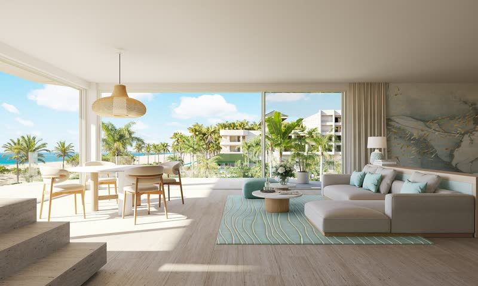

<!doctype html>
<html lang="en">
<head>
<meta charset="utf-8">
<meta name="viewport" content="width=device-width,initial-scale=1,viewport-fit=cover">
<meta name="robots" content="noindex, nofollow">
<meta name="description" content="Staff training for OPCs: Aruba guest qualifications and the Open House invitation pitch.">
<meta name="theme-color" content="#00838a">
<meta name="apple-mobile-web-app-capable" content="yes">
<meta name="apple-mobile-web-app-title" content="Show-Up">
<link rel="manifest" href="manifest.webmanifest">
<link rel="icon" href="icon-512.png" type="image/png">
<link rel="apple-touch-icon" href="icon-180.png">
<style>:root{padding-top:env(safe-area-inset-top,0px)}body{margin:0}img{max-width:100%}</style>
<title>Show-Up Academy</title>
<link rel="preconnect" href="https://fonts.googleapis.com">
<link rel="preconnect" href="https://fonts.gstatic.com" crossorigin>
<link rel="stylesheet" href="https://fonts.googleapis.com/css2?family=Baloo+2:wght@600;700;800&family=Nunito:ital,wght@0,600;0,700;0,800;0,900;1,700&display=swap">
<style>
/* Layout: phone-first game shell. Learn path (units of round nodes, zigzag), Script, Games, Me tabs.
   Lessons take the whole screen: progress bar on top, sticky Check bar, verdict sheet from the bottom. */
:root{
  --bg:#fbfaf6; --surface:#ffffff; --sunk:#f1eee6; --line:#e6e0d4; --line-2:#d3cbbb; --ink:#22323a; --muted:#56676d;
  --lagoon:#00838a; --lagoon-2:#00636a; --lagoon-soft:#ddf1f1; --on-lagoon:#ffffff;
  --flamingo:#cf3a64; --flamingo-2:#a12a4d; --flamingo-soft:#fde6ee; --on-flamingo:#ffffff; --flamingo-ink:#a12a4d;
  --sun:#ffbf2e; --sun-2:#d39700; --sun-soft:#fff3d4; --on-sun:#4a3500; --sun-ink:#a36400;
  --good:#2b851f; --good-2:#1f6a15; --good-soft:#e6f7dc; --good-ink:#23691a; --on-good:#ffffff;
  --bad:#d33a3f; --bad-2:#a3262c; --bad-soft:#fde8e8; --bad-ink:#b0242a; --on-bad:#ffffff;
  --sea:#127ab2; --sea-2:#0c5a85; --sea-soft:#e0f2fb; --on-sea:#ffffff; --sea-ink:#11709f;
  --nlp:#11709f; --nlp-2:#0b5378; --nlp-soft:#e0f2fb; --on-nlp:#ffffff;
  --fire:#ff8a00; --fire-ink:#b85600;
  --m-body:#9a6a40; --m-body-2:#74502f; --m-belly:#f3e6cc; --m-bar:#a8794c; --m-spot:#fbf5e8; --m-face:#d2ad80; --m-rim:#7e5532;
  --m-speck:#ead8b8; --m-brow:#fdf9f0; --m-eye:#f5d02a; --m-beak:#e3d3ad; --m-leg:#e2cfa6; --m-ink:#241b14;
  --f-display:"Baloo 2", ui-rounded, "Nunito", system-ui, sans-serif;
  --f-body:"Nunito", ui-rounded, system-ui, -apple-system, "Segoe UI", sans-serif;
  --r:16px;
}
@media (prefers-color-scheme: dark){:root:not([data-theme="light"]){
  --bg:#0f1a1d; --surface:#172529; --sunk:#132024; --line:#26383d; --line-2:#364b51; --ink:#ecf3f4; --muted:#9db1b5;
  --lagoon:#1bb6bc; --lagoon-2:#0d7f84; --lagoon-soft:#10383b; --on-lagoon:#062326;
  --flamingo:#ff6f98; --flamingo-2:#c4426a; --flamingo-soft:#3a1d29; --on-flamingo:#2a0b16; --flamingo-ink:#ff8fb0;
  --sun:#ffc93c; --sun-2:#c9930a; --sun-soft:#3a2f12; --on-sun:#2b1e00; --sun-ink:#ffc93c;
  --good:#5ccc3f; --good-2:#3a9a24; --good-soft:#17301a; --good-ink:#8fe073; --on-good:#0b1a0b;
  --bad:#ff6b6b; --bad-2:#c43c3c; --bad-soft:#3a1c1e; --bad-ink:#ffa3a3; --on-bad:#2b0b0b;
  --sea:#3cb4ef; --sea-2:#1f86b9; --sea-soft:#12303d; --on-sea:#04202e; --sea-ink:#7fd0f7;
  --nlp:#3cb4ef; --nlp-2:#1f86b9; --nlp-soft:#12303d; --on-nlp:#04202e;
  --fire:#ff9f1a; --fire-ink:#ff9f1a; color-scheme:dark}}
:root[data-theme="dark"]{
  --bg:#0f1a1d; --surface:#172529; --sunk:#132024; --line:#26383d; --line-2:#364b51; --ink:#ecf3f4; --muted:#9db1b5;
  --lagoon:#1bb6bc; --lagoon-2:#0d7f84; --lagoon-soft:#10383b; --on-lagoon:#062326;
  --flamingo:#ff6f98; --flamingo-2:#c4426a; --flamingo-soft:#3a1d29; --on-flamingo:#2a0b16; --flamingo-ink:#ff8fb0;
  --sun:#ffc93c; --sun-2:#c9930a; --sun-soft:#3a2f12; --on-sun:#2b1e00; --sun-ink:#ffc93c;
  --good:#5ccc3f; --good-2:#3a9a24; --good-soft:#17301a; --good-ink:#8fe073; --on-good:#0b1a0b;
  --bad:#ff6b6b; --bad-2:#c43c3c; --bad-soft:#3a1c1e; --bad-ink:#ffa3a3; --on-bad:#2b0b0b;
  --sea:#3cb4ef; --sea-2:#1f86b9; --sea-soft:#12303d; --on-sea:#04202e; --sea-ink:#7fd0f7;
  --nlp:#3cb4ef; --nlp-2:#1f86b9; --nlp-soft:#12303d; --on-nlp:#04202e;
  --fire:#ff9f1a; --fire-ink:#ff9f1a; color-scheme:dark}

*{box-sizing:border-box}
[hidden]{display:none!important}
.sr-only{position:absolute;width:1px;height:1px;padding:0;margin:-1px;overflow:hidden;clip:rect(0 0 0 0);white-space:nowrap;border:0}
html,body{min-height:100%}
body{background:var(--bg);color:var(--ink);font:700 16px/1.45 var(--f-body);padding-inline:16px;padding-block:8px 104px;-webkit-tap-highlight-color:transparent}
body.full{padding-bottom:16px}
#app{max-width:600px;margin:0 auto;display:flex;flex-direction:column;gap:18px}
h1,h2,h3{font-family:var(--f-display);line-height:1.1;margin:0;text-wrap:balance;font-weight:800}
p{margin:0}
ul,ol{margin:0}
button{font:inherit;color:inherit;cursor:pointer;-webkit-user-select:none;user-select:none}
a{color:var(--sea-ink)}
:focus-visible{outline:3px solid var(--sea);outline-offset:3px}
.ic{width:24px;height:24px;flex:none;display:block}
.muted{color:var(--muted)}
.small{font-size:14px}
.num{font-family:var(--f-display);font-variant-numeric:tabular-nums}
.eyebrow{font:800 13px/1.2 var(--f-body);letter-spacing:.08em;text-transform:uppercase;color:var(--muted)}
.row{display:flex;gap:10px;flex-wrap:wrap;align-items:center}
.stack{display:flex;flex-direction:column;gap:10px}

/* Chunky 3D buttons: the edge is a hard shadow; pressing removes it. */
.btn{--c:var(--lagoon);--c2:var(--lagoon-2);--t:var(--on-lagoon);
  display:inline-flex;align-items:center;justify-content:center;gap:8px;min-height:50px;padding:12px 20px;
  background:var(--c);color:var(--t);border:0;border-radius:var(--r);box-shadow:0 4px 0 var(--c2);
  font:900 15px/1 var(--f-body);letter-spacing:.07em;text-transform:uppercase;text-decoration:none;
  transition:transform .08s ease,box-shadow .08s ease,filter .15s ease}
.btn:hover{filter:brightness(1.05)}
.btn:active{transform:translateY(4px);box-shadow:0 0 0 var(--c2)}
.btn.wide{width:100%}
.btn.good{--c:var(--good);--c2:var(--good-2);--t:var(--on-good)}
.btn.bad{--c:var(--bad);--c2:var(--bad-2);--t:var(--on-bad)}
.btn.sun{--c:var(--sun);--c2:var(--sun-2);--t:var(--on-sun)}
.btn.sea{--c:var(--sea);--c2:var(--sea-2);--t:var(--on-sea)}
.btn.flamingo{--c:var(--flamingo);--c2:var(--flamingo-2);--t:var(--on-flamingo)}
.btn.ghost{--c:var(--surface);--c2:var(--line-2);--t:var(--ink);box-shadow:0 4px 0 var(--c2),inset 0 0 0 2px var(--line-2)}
.btn.ghost:active{box-shadow:0 0 0 var(--c2),inset 0 0 0 2px var(--line-2)}
.btn.small{min-height:40px;padding:8px 14px;font-size:13px;line-height:1.25;text-align:center}
.btn:disabled{--c:var(--sunk);--c2:var(--line);--t:var(--muted);cursor:not-allowed;filter:none}
.btn:disabled:active{transform:none;box-shadow:0 4px 0 var(--c2)}
.link{display:inline-flex;align-items:center;justify-content:center;gap:8px;align-self:center;background:none;border:0;padding:6px 4px;color:var(--sea-ink);font-weight:800;min-height:44px}
.link .ic{width:20px;height:20px}
.link:active{opacity:.7}

/* Cards */
.card{background:var(--surface);border:2px solid var(--line);border-radius:var(--r);padding:16px;display:flex;flex-direction:column;gap:10px}

/* HUD on Learn */
.hud{position:sticky;top:env(safe-area-inset-top,0px);z-index:5;background:var(--bg);display:flex;justify-content:space-between;align-items:center;gap:8px;padding-block:10px;border-bottom:2px solid var(--line);margin-inline:-16px;padding-inline:16px}
.pill{display:inline-flex;align-items:center;gap:6px;padding:6px 10px;border-radius:999px;background:transparent;border:0;font:800 17px/1 var(--f-display)}
.pill .ic{width:24px;height:24px}
.pill.fire{color:var(--fire)} .pill.fire.off{color:var(--line-2)}
.pill.xp{color:var(--sun-2)} .pill.bolt{color:var(--sea)}
.pill b{color:var(--ink)}
.ring{width:26px;height:26px}

/* Mascot */
.shoco{display:block;overflow:visible}
.shoco .m-eye{display:none}
.shoco[data-mood=idle] .m-eye-open,.shoco[data-mood=think] .m-eye-open{display:inline}
.shoco[data-mood=happy] .m-eye-happy,.shoco[data-mood=cheer] .m-eye-happy{display:inline}
.shoco[data-mood=sad] .m-eye-sad{display:inline}
.shoco .m-body{transform-origin:60px 145px}
.shoco .m-head{transform-origin:60px 70px;transition:transform .3s ease}
.shoco .m-wing{transform-box:fill-box;transition:transform .2s ease}
.shoco .m-wing-l{transform-origin:70% 5%}
.shoco .m-wing-r{transform-origin:30% 5%}
.shoco[data-mood=idle] .m-body{animation:bob 2.8s ease-in-out infinite}
.shoco[data-mood=idle] .m-eye-open{transform-box:fill-box;transform-origin:center;animation:blink 4.2s infinite}
.shoco[data-mood=happy] .m-body{animation:hop .55s ease 2}
.shoco[data-mood=cheer] .m-body{animation:hop .5s ease infinite}
.shoco[data-mood=cheer] .m-wing-l{animation:flapl .25s ease-in-out infinite alternate}
.shoco[data-mood=cheer] .m-wing-r{animation:flapr .25s ease-in-out infinite alternate}
.shoco[data-mood=sad] .m-head{transform:rotate(-8deg) translateY(2px)}
.shoco[data-mood=think] .m-head{transform:rotate(-12deg)}
.shoco[data-mood=think] .m-pupil{transform:translate(1.2px,-1.6px)}
@keyframes bob{50%{transform:translateY(-2.5px)}}
@keyframes blink{0%,94%,100%{transform:scaleY(1)}96%{transform:scaleY(.1)}}
@keyframes hop{0%,100%{transform:translateY(0)}40%{transform:translateY(-12px)}}
@keyframes flapl{from{transform:rotate(8deg)}to{transform:rotate(32deg)}}
@keyframes flapr{from{transform:rotate(-8deg)}to{transform:rotate(-32deg)}}

/* Speech bubble next to the mascot */
.say-row{display:grid;grid-template-columns:auto 1fr;gap:10px;align-items:end}
.say-row .shoco{width:78px;height:98px}
.bubble{position:relative;background:var(--surface);border:2px solid var(--line);border-radius:18px;padding:12px 14px;font-weight:800;min-width:0}
.bubble::before{content:"";position:absolute;left:-9px;bottom:22px;width:14px;height:14px;background:var(--surface);border-left:2px solid var(--line);border-bottom:2px solid var(--line);transform:rotate(45deg)}
.bubble.q{font:800 20px/1.3 var(--f-body)}

/* Welcome / name */
.name-form{display:flex;gap:8px;flex-wrap:wrap}
.field{flex:1 1 160px;min-width:0;min-height:50px;padding:12px 14px;border-radius:var(--r);border:2px solid var(--line-2);background:var(--surface);color:var(--ink);font:800 17px var(--f-body)}
.field:focus{border-color:var(--sea);outline:none;box-shadow:0 0 0 3px var(--sea-soft)}

/* Path */
.unit{display:flex;flex-direction:column;gap:6px}
.unit-banner{--c:var(--lagoon);--c2:var(--lagoon-2);--t:var(--on-lagoon);background:var(--c);color:var(--t);border-radius:var(--r);box-shadow:0 4px 0 var(--c2);padding:14px 16px;display:flex;justify-content:space-between;align-items:center;gap:12px}
.unit-banner .eyebrow{color:inherit}
.unit-banner h2{font-size:24px}
.unit-banner p{font-size:15px}
.c-lagoon{--c:var(--lagoon);--c2:var(--lagoon-2);--t:var(--on-lagoon);--soft:var(--lagoon-soft)}
.c-flamingo{--c:var(--flamingo);--c2:var(--flamingo-2);--t:var(--on-flamingo);--soft:var(--flamingo-soft)}
.c-sun{--c:var(--sun);--c2:var(--sun-2);--t:var(--on-sun);--soft:var(--sun-soft)}
.c-sea{--c:var(--nlp);--c2:var(--nlp-2);--t:var(--on-nlp);--soft:var(--nlp-soft)}
.c-good{--c:var(--good);--c2:var(--good-2);--t:var(--on-good);--soft:var(--good-soft)}
.path{display:flex;flex-direction:column;align-items:center;padding-block:14px 6px;gap:6px}
.node-row{position:relative;display:flex;justify-content:center;width:100%;height:96px;align-items:center}
.node{position:relative;transform:translateX(var(--off,0px));width:74px;height:68px;border-radius:50%;border:0;display:grid;place-items:center;
  background:var(--c);color:var(--t);box-shadow:0 7px 0 var(--c2);transition:transform .08s ease,box-shadow .08s ease}
.node:active{transform:translateX(var(--off,0px)) translateY(6px);box-shadow:0 1px 0 var(--c2)}
.node .ic{width:34px;height:34px}
.node.locked{--c:var(--sunk);--c2:var(--line-2);--t:var(--muted)}
.node.done,.node.due{--c:var(--sun);--c2:var(--sun-2);--t:var(--on-sun)}
.node.current::after{content:"";position:absolute;inset:-9px;border-radius:50%;border:5px solid var(--c);opacity:.35;animation:pulse 1.8s ease-out infinite}
.node .due-dot{position:absolute;top:-4px;right:-4px;width:22px;height:22px;border-radius:50%;background:var(--flamingo);color:#fff;display:grid;place-items:center;border:3px solid var(--bg)}
.node .due-dot .ic{width:12px;height:12px}
@keyframes pulse{0%{transform:scale(.9);opacity:.5}100%{transform:scale(1.25);opacity:0}}
.start-tag{position:absolute;top:-16px;left:50%;transform:translateX(calc(-50% + var(--off,0px)));background:var(--surface);color:var(--c);border:2px solid var(--line);border-radius:12px;padding:6px 12px;font:900 14px/1 var(--f-body);letter-spacing:.06em;white-space:nowrap;animation:tagbob 1.6s ease-in-out infinite;z-index:2}
.start-tag.c-sun{color:var(--sun-ink)}
.start-tag::after{content:"";position:absolute;left:50%;bottom:-8px;width:12px;height:12px;background:var(--surface);border-right:2px solid var(--line);border-bottom:2px solid var(--line);transform:translateX(-50%) rotate(45deg)}
@keyframes tagbob{50%{transform:translateX(calc(-50% + var(--off,0px))) translateY(-4px)}}
.path-mascot{position:absolute;width:70px;height:88px;bottom:0}
:where(.popover){--c:var(--lagoon);--t:var(--on-lagoon)}
.popover{width:100%;background:var(--c);color:var(--t);border-radius:var(--r);padding:16px;display:flex;flex-direction:column;gap:6px;position:relative;margin-top:4px;animation:popin .18s ease}
.popover::before{content:"";position:absolute;top:-8px;left:calc(50% + var(--off,0px));width:16px;height:16px;background:var(--c);transform:translateX(-50%) rotate(45deg)}
.popover h3{font-size:21px}
.popover p{font-size:15px}
.popover .btn{--c:var(--surface);--c2:rgba(0,0,0,.18);--t:var(--ink)}
.popover .btn.ghost{--c:transparent;--t:inherit;box-shadow:0 4px 0 rgba(0,0,0,.18),inset 0 0 0 2px rgba(255,255,255,.55)}
.popover.locked{--c:var(--sunk);--t:var(--muted)}
.popover.locked::before{background:var(--sunk)}
@keyframes popin{from{transform:scale(.96);opacity:0}}

/* Generic list items */
.tile-card{display:grid;grid-template-columns:56px 1fr auto;gap:12px;align-items:center;background:var(--surface);border:2px solid var(--line);border-radius:var(--r);padding:12px 14px}
.tile-card .ico{width:56px;height:56px;border-radius:14px;display:grid;place-items:center;background:var(--soft,var(--sunk));color:var(--c,var(--ink))}
.tile-card .ico .ic{width:30px;height:30px}
.tile-card h2{font-size:19px}
.big-num{font:800 30px/1 var(--f-display)}

/* Lesson */
.lesson{display:flex;flex-direction:column;gap:18px;min-height:calc(100dvh - 24px)}
.l-top h1{font-size:24px}
.l-top{display:grid;grid-template-columns:auto 1fr auto;gap:12px;align-items:center;position:sticky;top:env(safe-area-inset-top,0px);background:var(--bg);padding-block:10px;z-index:4}
.icon-btn{width:44px;height:44px;border-radius:12px;border:0;background:transparent;color:var(--muted);display:grid;place-items:center}
.icon-btn .ic{width:26px;height:26px}
.l-bar{height:18px;border-radius:999px;background:var(--line);overflow:hidden}
.l-bar i{display:block;height:100%;width:0;background:var(--good);border-radius:999px;position:relative;transition:width .45s cubic-bezier(.2,.9,.2,1)}
.l-bar i::after{content:"";position:absolute;left:8px;right:8px;top:4px;height:4px;border-radius:999px;background:rgba(255,255,255,.4)}
.heart{display:flex;align-items:center;gap:4px;color:var(--bad);font:800 18px/1 var(--f-display)}
.heart.broken{color:var(--muted);animation:shake .4s ease}
.l-kind{font:900 14px/1.3 var(--f-body);letter-spacing:.06em;text-transform:uppercase;color:var(--sea-ink)}
.l-kind .secs{text-transform:none;color:var(--muted);font-variant-numeric:tabular-nums}
.l-body{display:flex;flex-direction:column;gap:16px;flex:1}
.l-foot{position:sticky;bottom:0;background:var(--bg);padding-block:12px calc(14px + env(safe-area-inset-bottom,0px));border-top:2px solid var(--line);margin-inline:-16px;padding-inline:16px;z-index:4}
.l-foot .hint{text-align:center;color:var(--muted);font-weight:800;padding-block:12px}

.opts{display:flex;flex-direction:column;gap:10px}
.opts.grid3{display:grid;grid-template-columns:repeat(3,minmax(0,1fr))}
.opt{display:grid;grid-template-columns:34px 1fr;gap:12px;align-items:center;text-align:left;background:var(--surface);
  border:2px solid var(--line);border-bottom-width:5px;border-radius:var(--r);padding:12px 14px;min-height:60px;font-weight:800;transition:transform .06s ease,border-color .12s,background .12s}
.opt:active:not(:disabled){transform:translateY(2px);border-bottom-width:3px}
.opt .k{width:30px;height:30px;border-radius:9px;border:2px solid var(--line);display:grid;place-items:center;font:800 14px/1 var(--f-body);color:var(--muted)}
.opt[aria-pressed="true"]{border-color:var(--sea);background:var(--sea-soft)}
.opt[aria-pressed="true"] .k{border-color:var(--sea);color:var(--sea-ink)}
.opt.right{border-color:var(--good);background:var(--good-soft);color:var(--good-ink)}
.opt.right .k{border-color:var(--good);color:var(--good-ink)}
.opt.wrong{border-color:var(--bad);background:var(--bad-soft);color:var(--bad-ink)}
.opt.wrong .k{border-color:var(--bad);color:var(--bad-ink)}
.opt:disabled{cursor:default}
.grade{grid-template-columns:1fr;text-align:center;justify-items:center;padding:16px 8px;min-height:92px}
.grade b{font:800 30px/1 var(--f-display)}
.grade span{font-size:13px;color:var(--muted)}

.photo{position:relative;margin:0;border-radius:var(--r);overflow:hidden;border:2px solid var(--line);background:var(--sunk);aspect-ratio:16/10;max-width:100%}
.photo img,.photo video{width:100%;height:100%;object-fit:cover;display:block}
.photo.kb img{animation:kb 16s ease-in-out infinite alternate}
@keyframes kb{from{transform:scale(1)}to{transform:scale(1.12) translate(-2%,-1.5%)}}
.photo figcaption{position:absolute;left:0;right:0;bottom:0;padding:24px 12px 10px;color:#fff;font-weight:800;background:linear-gradient(transparent,rgba(0,0,0,.6))}

.blank{display:inline-block;min-width:3.4em;border-bottom:4px solid var(--sun);text-align:center;color:transparent}

/* Guest tag for scenarios */
/* Guest card for scenarios: who the worker just stopped, as chips. */
.guest-tag{background:var(--surface);border:2px solid var(--line);border-bottom-width:4px;border-radius:var(--r);padding:12px 14px 14px;display:flex;flex-direction:column;gap:10px}
.guest-tag .tag-h{display:flex;align-items:center;gap:8px;font:900 12px/1 var(--f-body);letter-spacing:.08em;text-transform:uppercase;color:var(--muted)}
.guest-tag .tag-h .ic{width:18px;height:18px;color:var(--flamingo)}
.guest-tag .chips{display:flex;flex-wrap:wrap;gap:8px}
.guest-tag .chip{display:inline-flex;gap:6px;align-items:center;font-weight:800;font-size:16px;line-height:1.2;padding:7px 12px 7px 9px;border-radius:999px;background:var(--sea-soft);color:var(--ink);min-width:0}
.guest-tag .chip .ic{width:20px;height:20px;color:var(--sea)}
.guest-tag p{font-weight:800;font-size:17px}

/* Word bank */
/* Ruled like a notebook: one line under each 44px row of tiles (rows are 52px apart). */
.bank-answer{min-height:112px;padding:8px 0 4px;display:flex;flex-wrap:wrap;gap:8px;align-content:flex-start;
  background-image:linear-gradient(transparent 50px,var(--line) 50px,var(--line) 52px,transparent 52px);background-size:100% 52px;background-position:0 4px}
.bank-answer .wtile.right{background:var(--good-soft);border-color:var(--good);color:var(--good-ink)}
.bank-answer .wtile.wrong{background:var(--bad-soft);border-color:var(--bad);color:var(--bad-ink)}
.bank{display:flex;flex-wrap:wrap;gap:8px;justify-content:center}
.wtile{background:var(--surface);border:2px solid var(--line);border-bottom-width:4px;border-radius:12px;padding:8px 12px;font:800 17px/1.2 var(--f-body);min-height:44px;min-width:44px;transition:transform .06s}
.wtile:active{transform:translateY(2px);border-bottom-width:2px}
.wtile.ghost{background:var(--sunk);border-color:var(--sunk);color:transparent;pointer-events:none}

/* Match pairs */
.match{display:grid;grid-template-columns:1fr 1fr;gap:10px}
.match .col{display:flex;flex-direction:column;gap:10px}
.mt{background:var(--surface);border:2px solid var(--line);border-bottom-width:5px;border-radius:14px;padding:12px;min-height:60px;font-weight:800;text-align:center;transition:opacity .25s,transform .06s}
.mt[aria-pressed="true"]{border-color:var(--sea);background:var(--sea-soft)}
.mt.ok{border-color:var(--good);background:var(--good-soft);color:var(--good-ink)}
.mt.done{opacity:.35;pointer-events:none}
.mt.no{border-color:var(--bad);background:var(--bad-soft);color:var(--bad-ink);animation:shake .35s ease}

/* Listen */
.listen{display:flex;gap:14px;justify-content:center;align-items:center;padding-block:6px}
.speak{width:112px;height:96px;border-radius:22px;border:0;background:var(--sea);color:var(--on-sea);box-shadow:0 6px 0 var(--sea-2);display:grid;place-items:center;transition:transform .08s,box-shadow .08s}
.speak:active{transform:translateY(5px);box-shadow:0 1px 0 var(--sea-2)}
.speak .ic{width:52px;height:52px}
.speak.slow{width:68px;height:68px;border-radius:18px;font:900 15px/1 var(--f-body)}
.speak.playing{animation:pulseb 1s ease-in-out infinite}
@keyframes pulseb{50%{filter:brightness(1.15)}}
.read-it{font-size:15px;color:var(--muted)}

/* Verdict sheet */
.sheet{position:fixed;left:0;right:0;bottom:0;z-index:20;padding:16px 16px calc(18px + env(safe-area-inset-bottom,0px));transform:translateY(105%);transition:transform .24s cubic-bezier(.2,.9,.2,1)}
.sheet.show{transform:none}
.sheet.good{background:var(--good-soft);color:var(--good-ink)}
.sheet.bad{background:var(--bad-soft);color:var(--bad-ink)}
.sheet-in{max-width:600px;margin:0 auto;display:flex;flex-direction:column;gap:10px}
.sh-head{display:flex;align-items:center;gap:10px}
.sh-head .badge{width:40px;height:40px;border-radius:50%;display:grid;place-items:center;background:var(--surface)}
.sheet.good .badge{color:var(--good)} .sheet.bad .badge{color:var(--bad)}
.sh-head h2{font-size:24px}
.sh-why{font-weight:700;color:var(--ink)}
.sh-ans b{color:var(--ink)}

/* Combo toast */
.combo{position:fixed;left:50%;top:22%;z-index:30;transform:translateX(-50%);display:flex;align-items:center;gap:10px;background:var(--surface);border:2px solid var(--line);border-radius:20px;padding:12px 18px;box-shadow:0 6px 0 var(--line);animation:comboin .3s cubic-bezier(.2,1.6,.4,1)}
.combo .ic{width:30px;height:30px;color:var(--fire)}
.combo b{font:800 24px/1 var(--f-display)}
@keyframes comboin{from{transform:translateX(-50%) scale(.6);opacity:0}}

/* Celebrations */
.celebrate{display:flex;flex-direction:column;align-items:center;text-align:center;gap:16px;padding-top:8px}
.celebrate .shoco{width:160px;height:200px}
.celebrate h1{font-size:36px;color:var(--sun-ink)}
.stats{display:grid;grid-template-columns:repeat(3,minmax(0,1fr));gap:10px;width:100%}
.stat{border:2px solid var(--c,var(--line));border-radius:var(--r);overflow:hidden;background:var(--surface);text-align:center}
.stat .h{background:var(--c,var(--line));color:var(--t,var(--ink));font:900 12px/1 var(--f-body);letter-spacing:.06em;text-transform:uppercase;padding:7px 4px}
.stat .v{display:flex;align-items:center;justify-content:center;gap:6px;padding:12px 4px;font:800 24px/1 var(--f-display)}
.stat .v .ic{width:22px;height:22px;color:var(--c)}
.flame-big{width:150px;height:150px;color:var(--fire);animation:flamebeat 1s ease-in-out infinite}
@keyframes flamebeat{50%{transform:scale(1.06)}}
.week{display:flex;gap:8px;justify-content:center}
.week span{display:flex;flex-direction:column;align-items:center;gap:6px;font-weight:800;font-size:13px;color:var(--muted)}
.week i{width:32px;height:32px;border-radius:50%;background:var(--sunk);display:grid;place-items:center;color:#fff}
.week i.on{background:var(--fire)}
.week i .ic{width:18px;height:18px}
.cert{border:3px solid var(--sun);border-radius:20px;padding:20px;background:var(--surface);width:100%;display:flex;flex-direction:column;gap:6px}
.cert .who{font:800 32px/1.1 var(--f-display);color:var(--flamingo)}

/* Pitch map */
.mapq{display:flex;flex-direction:column;gap:10px}
.placed{list-style:none;padding:0;display:flex;flex-direction:column;gap:6px;counter-reset:st}
.placed li{counter-increment:st;display:grid;grid-template-columns:32px 1fr;gap:10px;align-items:start;background:var(--good-soft);border:2px solid var(--good);border-radius:14px;padding:10px 12px;color:var(--good-ink);animation:popin .2s ease}
.placed li::before{content:counter(st);width:30px;height:30px;border-radius:50%;background:var(--good);color:var(--on-good);display:grid;place-items:center;font:800 15px/1 var(--f-display)}
.placed li span{display:block;font-weight:700;color:var(--ink);font-size:14px}
.cardbtn{text-align:left;background:var(--surface);border:2px solid var(--line);border-bottom-width:5px;border-radius:var(--r);padding:14px;font-weight:800;min-height:58px}
.cardbtn:active{transform:translateY(2px);border-bottom-width:3px}
.cardbtn.wrong{border-color:var(--bad);background:var(--bad-soft);color:var(--bad-ink);animation:shake .35s ease}

/* Lightning */
.timer{height:16px;border-radius:999px;background:var(--line);overflow:hidden}
.timer i{display:block;height:100%;background:var(--sun);transform-origin:left;border-radius:999px}
.timer i.low{background:var(--bad)}
.lg-score{font:800 56px/1 var(--f-display);color:var(--lagoon)}
.flash{animation:flashg .35s ease}
@keyframes flashg{0%{background:var(--good-soft)}100%{background:var(--surface)}}
.plus{position:fixed;left:50%;top:40%;transform:translateX(-50%);font:800 28px/1 var(--f-display);color:var(--good);pointer-events:none;animation:plusup .6s ease forwards;z-index:30}
@keyframes plusup{to{transform:translate(-50%,-40px);opacity:0}}

/* Script */
.step{background:var(--surface);border:2px solid var(--line);border-radius:20px;padding:16px;display:flex;flex-direction:column;gap:12px}
.step-h{display:flex;align-items:center;gap:12px}
.step-h .n{width:38px;height:38px;border-radius:50%;background:var(--flamingo);color:var(--on-flamingo);display:grid;place-items:center;font:800 19px/1 var(--f-display);flex:none}
.step-h h2{font-size:22px}
.tip{display:grid;grid-template-columns:44px 1fr;gap:10px;align-items:center;color:var(--muted);font-weight:800}
.tip .shoco{width:44px;height:56px}
.line{border-left:5px solid var(--good);background:var(--good-soft);border-radius:0 14px 14px 0;padding:12px 14px;display:flex;flex-direction:column;gap:10px}
.line.dont{border-left-color:var(--bad);background:var(--bad-soft)}
.line .lbl{font:900 12px/1.2 var(--f-body);letter-spacing:.08em;text-transform:uppercase;color:var(--good-ink);display:flex;justify-content:space-between;align-items:center;gap:8px;flex-wrap:wrap}
.nlp-tag{background:var(--sea-soft);color:var(--sea-ink);border-radius:999px;padding:4px 9px;letter-spacing:.04em}
.line.dont .lbl{color:var(--bad-ink)}
.line .quote{font:800 17px/1.45 var(--f-body);color:var(--ink)}
.line .note{font-size:14px;color:var(--muted);background:none;border:0;padding:0;border-radius:0}
.line .acts{display:flex;gap:8px;flex-wrap:wrap;align-items:center}
.line .heard-text{font-size:14px;color:var(--muted);font-style:italic}
.line .score{font-weight:900}
.line .score.ok{color:var(--good-ink)} .line .score.meh{color:var(--sun-ink)}
.btn.listening{animation:pulseb .8s ease-in-out infinite}
.said-check{display:inline-flex;align-items:center;gap:3px;color:var(--good-ink)}
.said-check .ic{width:14px;height:14px}

/* Full voice notes */
.clip{background:var(--surface);border:2px solid var(--line);border-radius:var(--r);padding:12px;display:flex;flex-direction:column;gap:10px}
.clip.on{border-color:var(--sea)}
.clip-h{display:grid;grid-template-columns:52px 1fr auto;gap:12px;align-items:center}
.play{width:52px;height:52px;border-radius:50%;border:0;background:var(--sea);color:var(--on-sea);box-shadow:0 4px 0 var(--sea-2);display:grid;place-items:center}
.play:active{transform:translateY(3px);box-shadow:0 1px 0 var(--sea-2)}
.clip-h h3{font-size:18px}
.clip-h .meta{font-size:13px;color:var(--muted)}
.heard{color:var(--good-ink)}
.speed{border:2px solid var(--line);background:var(--surface);border-radius:999px;padding:6px 10px;font:900 13px/1 var(--f-body);min-height:36px}
.seek{width:100%;accent-color:var(--sea);margin:0}
.tx{max-height:240px;overflow-y:auto;border-top:2px solid var(--line);padding-top:8px;display:flex;flex-direction:column;gap:2px;position:relative}
.seg{background:none;border:0;text-align:left;padding:6px 8px;border-radius:10px;font-size:15px;font-weight:700;line-height:1.45;color:var(--muted)}
.seg.now{background:var(--sea-soft);color:var(--ink)}
.seg time{font-size:11px;color:var(--muted);margin-right:6px;font-variant-numeric:tabular-nums}

/* Guidebook */
.gb-hero{display:flex;flex-direction:column;gap:10px}
.note{background:var(--surface);border:2px solid var(--line);border-radius:var(--r);padding:16px;display:flex;flex-direction:column;gap:8px}
.note h2{font-size:19px}
.note ul{padding-left:20px;display:flex;flex-direction:column;gap:5px;font-weight:700}
.deck-slide{margin:0;display:flex;flex-direction:column;gap:6px}
.deck-slide img{display:block;width:100%;height:auto;border-radius:14px;border:2px solid var(--line);background:var(--sunk)}
.deck-slide figcaption{font-size:14px;color:var(--muted)}

/* Me */
.me-head{display:grid;grid-template-columns:auto 1fr;gap:14px;align-items:center}
.me-head .shoco{width:80px;height:100px}
.me-head h1{font-size:30px}
.card>h2{font-size:19px}
.grid2{display:grid;grid-template-columns:repeat(2,minmax(0,1fr));gap:10px}
.statbox{background:var(--surface);border:2px solid var(--line);border-radius:var(--r);padding:12px;display:grid;grid-template-columns:auto 1fr;gap:4px 10px;align-items:center}
.statbox .ic{width:26px;height:26px;grid-row:span 2}
.statbox b{font:800 22px/1 var(--f-display)}
.statbox span{font-size:13px;color:var(--muted)}
.sync{display:flex;gap:10px;align-items:center;font-size:14px;color:var(--muted)}
.dot{width:10px;height:10px;border-radius:50%;background:var(--line-2);flex:none}
.dot.ok{background:var(--good)} .dot.err{background:var(--bad)}
.weak li{margin-bottom:6px}
.nowrap{white-space:nowrap}
.ans{color:var(--good-ink);font-weight:900}

/* Manager panel: one column on phones, two on laptops. */
body.wide #app{max-width:1080px}
.avatar{width:44px;height:44px;border-radius:50%;display:grid;place-items:center;font:800 19px/1 var(--f-display);color:#fff;flex:none}
.tp-meta{color:var(--muted);font-size:14px;margin-top:-10px}
.tp-tiles{display:grid;grid-template-columns:repeat(2,minmax(0,1fr));gap:10px}
@media (min-width:760px){.tp-tiles:not(.two){grid-template-columns:repeat(4,minmax(0,1fr))}}
.tp-tile{--k:var(--ink);background:var(--surface);border:2px solid var(--line);border-bottom-width:4px;border-radius:var(--r);padding:12px 14px;display:flex;flex-direction:column;gap:4px;min-width:0}
.tp-tile .lbl{display:flex;align-items:center;gap:6px;font-weight:900;font-size:14px}
.tp-tile .lbl .ic{width:20px;height:20px;color:var(--k)}
.tp-tile b{font:800 34px/1.05 var(--f-display);font-variant-numeric:tabular-nums}
.tp-tile b small{font-size:15px;color:var(--muted);margin-left:3px}
.tp-tile .exp{font-size:13px;color:var(--muted)}
.t-sun{--k:var(--sun-2)} .t-good{--k:var(--good)} .t-fire{--k:var(--fire)} .t-sea{--k:var(--sea)}
.tp-card{background:var(--surface);border:2px solid var(--line);border-radius:var(--r);padding:16px;display:flex;flex-direction:column;gap:12px;min-width:0}
.tp-card h2{font-size:21px}
.tp-card-h{display:flex;justify-content:space-between;align-items:center;gap:10px;flex-wrap:wrap}
.tp-cols{display:grid;gap:18px}
@media (min-width:900px){.tp-cols{grid-template-columns:repeat(2,minmax(0,1fr));align-items:start}}
.tp-sort{display:inline-flex;background:var(--sunk);border-radius:12px;padding:3px;gap:2px}
.tp-sort button{border:0;background:none;border-radius:9px;padding:8px 12px;font:800 13px/1 var(--f-body);color:var(--muted);min-height:40px}
.tp-sort button[aria-pressed="true"]{background:var(--surface);color:var(--ink);box-shadow:0 2px 0 var(--line-2)}

/* Who knows what: one row per person, one square per level. Fixed layout, so it always fits. */
.kw-wrap{position:relative}
.kw{border-collapse:separate;border-spacing:0;width:100%;table-layout:fixed}
.kw col.cn{width:31%}
.kw col.cg{width:8px}
.kw th,.kw td{padding:0;vertical-align:middle}
.kw td{padding:0 1px}
.kw thead .u{font:900 11px/1 var(--f-body);letter-spacing:.06em;text-transform:uppercase;color:var(--ink);text-align:left;padding:0 0 6px;border-bottom:4px solid var(--c);white-space:nowrap}
.kw thead .u .fin{width:16px;height:16px;color:var(--sun-2);display:block}
.kw-units{display:none}
@media (max-width:559px){.kw thead .u span{position:absolute;width:1px;height:1px;overflow:hidden;clip:rect(0 0 0 0);white-space:nowrap}.kw-units{display:flex}}
.kw-lv{display:none}
@media (min-width:760px){
  .kw col.cn{width:200px}
  .kw col.cg{width:14px}
  .kw-lv{display:table-row}
  .kw-lv th{vertical-align:bottom;text-align:center;padding-top:8px}
  .kw-lv th span{writing-mode:vertical-rl;transform:rotate(180deg);font:800 12px/1.2 var(--f-body);color:var(--muted);white-space:nowrap;display:inline-block;max-height:150px;overflow:hidden;text-overflow:ellipsis}}
.kw tbody th,.kw tbody td{border-top:1px solid var(--line)}
.kw tbody tr:hover{background:var(--sunk)}
.kw-name{display:flex;flex-direction:column;align-items:flex-start;gap:2px;background:none;border:0;padding:8px 8px 8px 0;text-align:left;min-height:52px;width:100%;min-width:0}
.kw-name .pname{font-weight:900;font-size:15px;white-space:nowrap;overflow:hidden;text-overflow:ellipsis;max-width:100%}
.kw-name .psub{font-size:12px;color:var(--muted);white-space:nowrap;overflow:hidden;text-overflow:ellipsis;max-width:100%}
.kw-name:hover .pname{text-decoration:underline}
.kc{display:block;width:100%;max-width:26px;aspect-ratio:1;border-radius:25%;background:var(--line);margin:4px auto}
.kc.done{background:var(--c)}
.kc.started{background:linear-gradient(to top,var(--c) var(--p),var(--surface) var(--p));box-shadow:inset 0 0 0 2px var(--c)}
.kw-key{display:flex;flex-wrap:wrap;gap:6px 14px;font-size:13px;font-weight:800;color:var(--muted)}
.kw-key span{display:inline-flex;align-items:center;gap:6px}
.kw-key .kc{margin:0;display:inline-block;width:16px}

/* Lists */
.tp-list{list-style:none;padding:0;margin:0;display:flex;flex-direction:column}
.tp-list li{padding:12px 0;border-top:1px solid var(--line);display:flex;flex-direction:column;gap:4px}
.tp-list li:first-child{border-top:0;padding-top:0}
.tp-list .q{font-weight:800}
.tp-list .ans{color:var(--good-ink);font-weight:900}
.tp-list .who>summary{min-height:44px;font-size:13px}
.tp-list .who p{font-size:14px}
.utag{font:800 11px/1 var(--f-body);letter-spacing:.05em;text-transform:uppercase;color:var(--muted);margin-left:6px;white-space:nowrap}
.tp-bar{height:10px;border-radius:999px;background:var(--sunk);overflow:hidden}
.tp-bar i{display:block;height:100%;background:var(--c,var(--good));border-radius:999px}
.tp-people{list-style:none;padding:0;margin:0;display:flex;flex-direction:column}
.tp-people button{width:100%;display:grid;grid-template-columns:44px 1fr 20px;gap:12px;align-items:center;padding:10px 0;background:none;border:0;border-top:1px solid var(--line);text-align:left;min-height:56px}
.tp-people li:first-child button{border-top:0;padding-top:0}
.tp-people .pname{display:block;font-weight:900;overflow-wrap:anywhere}
.tp-people .psub{display:block;font-size:13px;color:var(--muted)}
.tp-people .go{width:16px;height:16px;color:var(--line-2)}
.tp-help{padding-left:20px;display:flex;flex-direction:column;gap:6px}
.tp-hide{align-items:center;text-align:center}

/* One person */
.tp-who{display:grid;grid-template-columns:auto 1fr;gap:12px;align-items:center}
.tp-who .avatar{width:56px;height:56px;font-size:24px}
.tp-next{display:flex;gap:10px;align-items:flex-start;background:var(--sea-soft);border-radius:var(--r);padding:12px 14px;font-weight:800}
.tp-next .ic{color:var(--sea-ink);margin-top:1px}
.tp-unit{display:flex;flex-direction:column;gap:8px}
.tp-unit+.tp-unit{border-top:1px solid var(--line);padding-top:14px}
.tp-unit-h{display:flex;justify-content:space-between;align-items:baseline;gap:8px}
.tp-unit-h h3{font-size:17px}
.tp-lv{list-style:none;padding:0;margin:0;display:flex;flex-direction:column;gap:8px}
.tp-lv li{display:flex;flex-direction:column;align-items:flex-start;gap:5px}
@media (min-width:560px){.tp-lv li{flex-direction:row;justify-content:space-between;align-items:center;gap:10px}}
.tp-lv .nm{font-weight:800}
.tp-lv .sts{display:flex;align-items:center;gap:8px;flex-wrap:wrap}
.st{display:inline-flex;align-items:center;gap:4px;font:900 12px/1 var(--f-body);padding:6px 9px;border-radius:999px}
.st .ic{width:14px;height:14px}
.st.done{background:var(--sun-soft);color:var(--ink)} .st.done .ic{color:var(--sun-2)}
.st.started{background:var(--sea-soft);color:var(--sea-ink)}
.st.none{background:var(--sunk);color:var(--muted)}
.tp-facts{list-style:none;padding:0;margin:0;display:flex;flex-direction:column;gap:10px}
.tp-facts li{display:grid;grid-template-columns:24px 1fr;gap:10px;align-items:center}
.tp-facts .ic{color:var(--sea)}
.tp-days{display:grid;grid-template-columns:repeat(14,minmax(0,1fr));gap:4px;max-width:420px}
.tp-days i{aspect-ratio:1;border-radius:5px;background:var(--sunk)}
.tp-days i.on{background:var(--fire)}
.tp-log{list-style:none;padding:0;margin:0;display:flex;flex-direction:column}
.tp-log li{display:flex;justify-content:space-between;align-items:baseline;gap:10px;padding:9px 0;border-top:1px solid var(--line)}
.tp-log li:first-child{border-top:0;padding-top:0}
.tp-log span::before{content:"";display:inline-block;width:9px;height:9px;border-radius:50%;margin-right:9px;background:var(--line-2);vertical-align:1px}
.tp-log .k-m span::before,.tp-log .k-r span::before{background:var(--sun)}
.tp-log .k-p span::before,.tp-log .k-d span::before{background:var(--good)}
.tp-log .k-f span::before{background:var(--bad)}
.tp-log .k-lg span::before{background:var(--sea)}
.tp-log .k-rp span::before,.tp-log.rp-res span::before{background:var(--flamingo)}
.tp-log time{color:var(--muted);font-size:13px;white-space:nowrap}

/* Street practice: setup, the chat, the score */
.rp .l-top h1{font-size:22px}
.rp-title h1{font-size:20px}
.rp-title .eyebrow{font-size:11px}
.rp-tools{display:flex;align-items:center;gap:4px}
.rp-pick{border:0;padding:0;margin:0;display:flex;flex-direction:column;gap:10px;min-width:0}
.pchips{display:flex;flex-wrap:wrap;gap:8px}
.pchip{position:relative;display:inline-flex}
.pchip input{position:absolute;inset:0;width:100%;height:100%;margin:0;opacity:0;cursor:pointer}
.pchip span{display:inline-flex;align-items:center;min-height:44px;padding:9px 14px;border-radius:999px;border:2px solid var(--line-2);background:var(--surface);font-weight:800;font-size:15px}
.pchip input:checked+span{border-color:var(--sea);background:var(--sea-soft);color:var(--sea-ink)}
.pchip input:focus-visible+span{outline:3px solid var(--sea);outline-offset:3px}
.rp .stack>.field{flex:none}
.rp-how{padding-left:20px;display:flex;flex-direction:column;gap:6px;color:var(--muted)}
.rp-foot{display:flex;flex-direction:column;gap:10px;margin-top:auto}
.rp-foot p{text-align:center}
.rp-foot p:empty{display:none}
.rp-scene{background:var(--surface);border:2px solid var(--line);border-bottom-width:4px;border-radius:var(--r);padding:12px 14px 14px;display:flex;flex-direction:column;gap:8px}
.rp-scene .tag-h{display:flex;align-items:center;gap:8px;font:900 12px/1.3 var(--f-body);letter-spacing:.06em;text-transform:uppercase;color:var(--muted)}
.rp-scene .tag-h .ic{width:18px;height:18px;color:var(--flamingo)}
.rp-scene>p{font-size:17px}
.rp-scene>p.small{font-size:14px}
.rp-scene ul{list-style:none;padding:0;margin:0;display:flex;flex-direction:column;gap:6px}
.rp-scene li{display:grid;grid-template-columns:20px 1fr;gap:8px;align-items:start;font-size:15px}
.rp-scene li .ic{width:20px;height:20px;color:var(--sea);margin-top:1px}
.rp-log{display:flex;flex-direction:column;gap:10px;flex:1;padding-bottom:4px}
.rp-msg{display:flex;gap:8px;align-items:flex-end;max-width:88%;animation:popin .18s ease}
.rp-msg p{margin:0;overflow-wrap:anywhere}
.rp-msg.me{align-self:flex-end;flex-direction:column;align-items:flex-end}
.rp-msg.me>p{background:var(--lagoon);color:var(--on-lagoon);padding:10px 14px;border-radius:18px 18px 6px 18px}
.rp-msg.them .rp-b{background:var(--surface);border:2px solid var(--line);padding:8px 12px 10px;border-radius:18px 18px 18px 6px;min-width:0}
.rp-who{display:block;font:900 12px/1.3 var(--f-body);letter-spacing:.04em;text-transform:uppercase;color:var(--flamingo-ink)}
.rp-msg.p1 .rp-who{color:var(--sea-ink)}
.rp-av{width:32px;height:32px;border-radius:50%;display:grid;place-items:center;background:var(--flamingo);color:var(--on-flamingo);font:800 15px/1 var(--f-display);flex:none}
.rp-av .ic{width:18px;height:18px}
.rp-msg.p1 .rp-av{background:var(--sea);color:var(--on-sea)}
.rp-msg.typing .rp-av{background:var(--sunk);color:var(--muted)}
.dots{display:inline-flex;gap:5px;padding:7px 2px}
.dots i{width:8px;height:8px;border-radius:50%;background:var(--muted);animation:dot 1s infinite ease-in-out}
.dots i:nth-child(2){animation-delay:.15s} .dots i:nth-child(3){animation-delay:.3s}
@keyframes dot{0%,80%,100%{opacity:.3;transform:none}40%{opacity:1;transform:translateY(-3px)}}
.rp-cue{align-self:center;display:flex;gap:6px;align-items:center;max-width:90%;font-size:14px;font-style:italic;color:var(--muted);text-align:center}
.rp-cue .ic{width:16px;height:16px}
.rp-err{display:flex;flex-wrap:wrap;gap:2px 8px;align-items:center;justify-content:flex-end;font-size:14px;color:var(--bad-ink)}
.rp-err .link{min-height:40px;padding:4px}
.rp-say{display:grid;grid-template-columns:1fr auto auto;gap:8px;align-items:end}
.rp-say textarea{resize:none;min-height:50px;max-height:150px;line-height:1.35;font-size:16px}
.rp-mic,.rp-send{width:50px;height:50px;border-radius:50%;border:0;display:grid;place-items:center;transition:transform .08s,box-shadow .08s}
.rp-mic{background:var(--sea);color:var(--on-sea);box-shadow:0 4px 0 var(--sea-2)}
.rp-mic.listening{background:var(--bad);color:var(--on-bad);box-shadow:0 4px 0 var(--bad-2);animation:pulseb .9s ease-in-out infinite}
.rp-send{background:var(--lagoon);color:var(--on-lagoon);box-shadow:0 4px 0 var(--lagoon-2)}
.rp-mic:active:not(:disabled),.rp-send:active:not(:disabled){transform:translateY(3px);box-shadow:none}
.rp-mic:disabled,.rp-send:disabled{background:var(--sunk);color:var(--muted);box-shadow:0 4px 0 var(--line);cursor:not-allowed}
.rp-hint{grid-column:1/-1}
.rp-hint:empty{display:none}
.sheet.rp-sheet{background:var(--surface);color:var(--ink);border-top:2px solid var(--line);box-shadow:0 -10px 30px rgba(0,0,0,.12)}
.rp-call .grade span{font-size:12px;line-height:1.25}
.rp-hero{display:flex;justify-content:center;align-items:center;gap:18px}
.rp-hero .shoco{width:96px;height:120px}
.rp-ring{--p:0;width:132px;height:132px;border-radius:50%;display:grid;place-items:center;align-content:center;gap:2px;
  background:radial-gradient(closest-side,var(--bg) 79%,transparent 80%),conic-gradient(var(--good) calc(var(--p) * 1%),var(--line) 0)}
.rp-ring b{font:800 46px/1 var(--f-display)}
.rp-ring span{font-size:13px;color:var(--muted)}
.rp-headline{font:800 20px/1.35 var(--f-body);text-align:center;text-wrap:balance}
.rp-reveal-h{display:flex;gap:12px;align-items:center}
.rp-reveal-h h2{font-size:21px}
.rp-grade{width:56px;height:56px;border-radius:14px;display:grid;place-items:center;font:800 22px/1 var(--f-display);flex:none}
.g-Q{background:var(--good);color:var(--on-good)} .g-CT{background:var(--sun);color:var(--on-sun)} .g-NQ{background:var(--bad);color:var(--on-bad)}
.rp-callline{display:flex;gap:8px;align-items:flex-start;font-weight:900}
.rp-callline .ic{width:22px;height:22px}
.rp-callline.ok{color:var(--good-ink)} .rp-callline.no{color:var(--bad-ink)}
.rp-reveal .chips{display:flex;flex-wrap:wrap;gap:8px}
.rp-reveal .chip{display:inline-flex;gap:6px;align-items:center;font-weight:800;font-size:15px;line-height:1.25;padding:7px 12px 7px 9px;border-radius:14px;background:var(--sea-soft);min-width:0}
.rp-reveal .chip .ic{width:18px;height:18px;color:var(--sea)}
.rp-steps{list-style:none;padding:0;margin:0;display:flex;flex-direction:column}
.rp-step{display:grid;grid-template-columns:32px 1fr;gap:12px;padding:12px 0;border-top:1px solid var(--line)}
.rp-step:first-child{border-top:0;padding-top:0}
.rp-step .n{width:30px;height:30px;border-radius:50%;display:grid;place-items:center;font:800 15px/1 var(--f-display);background:var(--sunk);color:var(--muted)}
.rp-step.s-good .n{background:var(--good);color:var(--on-good)}
.rp-step.s-weak .n{background:var(--sun);color:var(--on-sun)}
.rp-step.s-missed .n{background:var(--bad);color:var(--on-bad)}
.rp-step-h{display:grid;grid-template-columns:1fr auto;gap:8px;align-items:start}
.rp-st{font:900 12px/1 var(--f-body);padding:6px 9px;border-radius:999px;background:var(--sunk);color:var(--muted)}
.rp-st.good{background:var(--good-soft);color:var(--good-ink)} .rp-st.weak{background:var(--sun-soft);color:var(--ink)} .rp-st.missed{background:var(--bad-soft);color:var(--bad-ink)}
.rp-try{display:flex;flex-direction:column;gap:2px;border-left:5px solid var(--good);background:var(--good-soft);border-radius:0 12px 12px 0;padding:8px 12px;font-weight:800}
.rp-try .eyebrow{color:var(--good-ink);font-size:11px}
.rp-ask{list-style:none;padding:0;margin:0;display:flex;flex-wrap:wrap;gap:8px}
.rp-ask li{display:inline-flex;align-items:center;gap:6px;padding:7px 12px 7px 9px;border-radius:999px;font-weight:800;font-size:15px}
.rp-ask li .ic{width:16px;height:16px}
.rp-ask .yes{background:var(--good-soft);color:var(--good-ink)} .rp-ask .no{background:var(--sunk);color:var(--muted)}
.rp-graph{display:flex;align-items:flex-end;gap:4px;height:110px;border-bottom:2px solid var(--line);padding-bottom:2px}
.rp-graph i{flex:1;max-width:28px;height:var(--h);border-radius:6px 6px 2px 2px;background:var(--line-2)}
.rp-graph .b-maybe,.rp-key .b-maybe{background:var(--sun)} .rp-graph .b-yes,.rp-key .b-yes{background:var(--good)}
.rp-key{display:flex;gap:6px 14px;flex-wrap:wrap;color:var(--muted);font-weight:800}
.rp-key span{display:inline-flex;align-items:center;gap:6px}
.rp-key i{width:12px;height:12px;border-radius:3px;background:var(--line-2)}
.rp-quote{display:grid;grid-template-columns:24px 1fr;gap:10px;font:800 17px/1.45 var(--f-body)}
.rp-quote .ic{color:var(--flamingo)}
.card.rp-fix{border-color:var(--sea);background:var(--sea-soft)}
.card.rp-handoff{border-color:var(--sun-2);background:var(--sun-soft)}
.rp-handoff p{font-weight:800}
.rp-fix p:last-child{font-weight:800}
.rp-transcript{display:flex;flex-direction:column;gap:6px;font-size:15px;font-weight:700}
.rp-transcript .me{color:var(--sea-ink)}
.rp-transcript .cue{font-style:italic;color:var(--muted);font-size:14px}
.rp-end-acts{padding-bottom:12px}
.tp-sub{font-size:16px;margin-top:4px}
.tp-bar.rp-sbar{display:flex}
.rp-sbar i{border-radius:0} .rp-sbar i.w{background:var(--sun)}

/* Tab bar */
.tabs{position:fixed;left:0;right:0;bottom:0;z-index:15;background:var(--surface);border-top:2px solid var(--line);padding:6px 8px calc(6px + env(safe-area-inset-bottom,0px))}
.tabs-in{max-width:600px;margin:0 auto;display:grid;grid-template-columns:repeat(4,1fr);gap:4px}
.tabs button{display:flex;flex-direction:column;align-items:center;gap:2px;border:2px solid transparent;border-radius:14px;background:none;padding:6px 4px;color:var(--muted);font:800 12px/1.2 var(--f-body)}
.tabs button .ic{width:28px;height:28px}
.tabs button[aria-current="page"]{color:var(--sea-ink);border-color:var(--sea-soft);background:var(--sea-soft)}

.toast{position:fixed;left:50%;top:calc(12px + env(safe-area-inset-top,0px));transform:translateX(-50%);background:var(--ink);color:var(--bg);padding:10px 16px;border-radius:18px;font-weight:800;z-index:40;width:max-content;max-width:calc(100% - 32px);text-align:center;box-shadow:0 4px 0 rgba(0,0,0,.15);animation:toastin .22s ease-out}
@keyframes toastin{from{opacity:0;transform:translate(-50%,-10px)}}
#fx{position:fixed;inset:0;width:100%;height:100%;pointer-events:none;z-index:35}
@keyframes shake{20%,60%{transform:translateX(-6px)}40%,80%{transform:translateX(6px)}}
.shake{animation:shake .4s ease}
details.card{display:block}
details.card[open]>*+*{margin-top:10px}
details>summary{cursor:pointer;font-weight:900;color:var(--sea-ink);min-height:44px;display:flex;align-items:center;list-style:none}
details>summary::-webkit-details-marker{display:none}
details>summary::after{content:"";width:9px;height:9px;margin-left:auto;border-right:3px solid currentColor;border-bottom:3px solid currentColor;transform:rotate(45deg) translateY(-3px);transition:transform .15s}
details[open]>summary::after{transform:rotate(-135deg) translateY(-3px)}
.foot{color:var(--muted);font-size:13px;display:flex;flex-direction:column;gap:6px}
@media (max-width:380px){.stats{gap:6px}.stat .v{font-size:20px;gap:4px;padding-inline:2px}.stat .v .ic{width:18px;height:18px}.opts.grid3{gap:6px}
  .tile-card{grid-template-columns:44px 1fr auto;gap:10px}.tile-card .ico{width:44px;height:44px;border-radius:12px}.tile-card .ico .ic{width:26px;height:26px}}
@media (prefers-reduced-motion:reduce){*,*::before,*::after{animation:none!important;transition:none!important}}

/* Street practice as a voice call */
.rp.call .rp-log,.rp.call .rp-say{display:none}
.rp:not(.call) .rp-stage,.rp:not(.call) .rp-callbar{display:none}
.rp.call{gap:12px}
.rp.call .rp-scene{padding:10px 14px 12px;gap:6px;border-bottom-width:2px}
.rp.call .rp-scene>p{font-size:15px}
.rp.call .rp-scene li{font-size:14px;grid-template-columns:18px 1fr}
.rp.call .rp-scene li .ic{width:18px;height:18px}
.lesson.rp.call{height:calc(100dvh - 24px);min-height:0}
.rp-stage{flex:1;min-height:0;overflow-y:auto;display:flex;flex-direction:column;align-items:center;gap:14px;padding:4px 0 8px;text-align:center}
.rp-stage>:first-child{margin-top:auto} .rp-stage>:last-child{margin-bottom:auto}
.rp-people{display:flex;gap:clamp(20px,9vw,44px);justify-content:center}
.rp-person{display:flex;flex-direction:column;align-items:center;gap:6px;--c:var(--flamingo);--t:var(--on-flamingo);--k:var(--flamingo-ink)}
.rp-person.p1{--c:var(--sea);--t:var(--on-sea);--k:var(--sea-ink)}
.rp-face{width:min(26vw,13dvh,104px);aspect-ratio:1;border-radius:50%;display:grid;place-items:center;background:var(--c);color:var(--t);font:800 38px/1 var(--f-display);
  box-shadow:0 0 0 4px var(--surface),0 0 0 6px var(--line);transition:transform .2s,box-shadow .2s}
.rp-face .ic{width:44%;height:44%}
.rp-person.talking .rp-face{transform:scale(1.06);box-shadow:0 0 0 4px var(--surface),0 0 0 9px var(--c)}
.rp-person .rp-who{font-size:13px;color:var(--k)}
.rp-wave{display:flex;gap:3px;align-items:flex-end;height:14px;color:var(--c);opacity:0;transition:opacity .2s}
.rp-wave i{width:4px;height:5px;border-radius:2px;background:currentColor}
.rp-person.talking .rp-wave{opacity:1}
.rp-person.talking .rp-wave i{animation:wave .9s ease-in-out infinite}
.rp-wave i:nth-child(2){animation-delay:-.6s!important} .rp-wave i:nth-child(3){animation-delay:-.3s!important} .rp-wave i:nth-child(4){animation-delay:-.75s!important}
@keyframes wave{0%,100%{height:4px}50%{height:14px}}
.rp-status{display:inline-flex;align-items:center;gap:9px;padding:8px 16px 8px 13px;border-radius:999px;background:var(--surface);border:2px solid var(--line);font:800 16px/1.2 var(--f-body);min-height:40px}
.rp-status:empty{visibility:hidden}
.rp-status::before{content:"";width:10px;height:10px;border-radius:50%;background:var(--line-2);flex:none}
.rp-status[data-state="listen"]::before{background:var(--bad);animation:pulseb .9s ease-in-out infinite}
.rp-status[data-state="think"]::before{background:var(--sun)}
.rp-status[data-state="talk"]::before{background:var(--good)}
.rp-cap{display:flex;flex-direction:column;gap:6px;align-items:center;max-width:min(100%,36ch);font-size:15px}
.rp-cap:empty{display:none}
.rp-sees{display:inline-flex;gap:6px;align-items:center;font-style:italic;color:var(--muted)}
.rp-sees .ic{width:16px;height:16px;flex:none}
.rp-said{background:var(--surface);border:2px solid var(--line);border-radius:14px;padding:7px 12px;text-align:left;font-size:16px}
.rp-said b{font-weight:900}
.rp-said.me{background:var(--sea-soft);border-color:color-mix(in srgb,var(--sea) 45%,var(--line))}
.rp-err-call{color:var(--bad-ink);font-weight:800}
.rp-heard{min-height:1.4em;max-width:min(100%,34ch);font-size:16px;font-style:italic;color:var(--muted);overflow-wrap:anywhere}
.rp-heard:not(:empty)::before{content:"\201C"} .rp-heard:not(:empty)::after{content:"\201D"}
.rp-callbar{display:flex;flex-direction:column;align-items:center;gap:6px;margin-top:auto;border-top-color:transparent}
.rp-bigmic{width:clamp(64px,10dvh,80px);aspect-ratio:1;border-radius:50%;border:0;display:grid;place-items:center;background:var(--sea);color:var(--on-sea);box-shadow:0 5px 0 var(--sea-2);transition:transform .08s,box-shadow .08s}
.rp-bigmic .ic{width:42%;height:42%}
.rp-bigmic:active{transform:translateY(4px);box-shadow:none}
.rp-bigmic.listening{background:var(--bad);color:var(--on-bad);box-shadow:0 5px 0 var(--bad-2),0 0 0 calc(var(--lvl,0) * 18px) color-mix(in srgb,var(--bad) 30%,transparent);transition:box-shadow .08s linear;animation:pulseb .9s ease-in-out infinite}
.rp-bigmic.muted{background:var(--surface);color:var(--muted);box-shadow:0 5px 0 var(--line-2);outline:2px solid var(--line);outline-offset:-2px}
.rp-miclabel{font:800 14px/1.2 var(--f-body);color:var(--muted)}
.rp-callopts{display:flex;gap:10px;flex-wrap:wrap;justify-content:center;margin-top:4px}
.rp-opt{display:inline-flex;align-items:center;gap:7px;min-height:42px;padding:6px 14px;border-radius:999px;border:2px solid var(--line);background:var(--surface);color:var(--ink);font:800 14px/1 var(--f-body)}
.rp-opt .ic{width:17px;height:17px;color:var(--sea)}
.rp-opt .cc{font:900 10px/1 var(--f-body);letter-spacing:.04em;border:2px solid currentColor;border-radius:4px;padding:2px 3px;color:var(--sea)}
.rp-opt[aria-pressed="true"]{background:var(--sea-soft);border-color:var(--sea);color:var(--sea-ink)}
.rp-tocall{grid-column:1/-1;justify-self:start;display:inline-flex;gap:6px;align-items:center;min-height:44px}
.rp-tocall .ic{width:18px;height:18px}
@media (max-width:359px){.rp.call .rp-title .eyebrow{display:none}}
@media (max-height:700px){
  .rp.call{gap:10px}
  .rp-stage{gap:8px}
  .rp-face{width:min(22vw,11dvh,104px)}
  .rp-person{gap:4px}
  .rp-status{min-height:36px;padding-block:6px;font-size:15px}
  .rp-callbar{gap:4px;padding-top:8px}
  .rp-bigmic{width:60px}
  .rp-opt{min-height:40px}
}
@media (prefers-reduced-motion:reduce){.rp-person.talking .rp-wave i,.rp-bigmic.listening,.rp-status::before{animation:none}}
</style>
</head>
<body>
<main id="app"></main>
<canvas id="fx" aria-hidden="true" hidden></canvas>
<script>
"use strict";
// One icon style: solid shapes on a 24px grid, currentColor. Strokes only where a glyph is a line (check, x).
const ICONS = {
  flame: '<path d="M12.6 2c.5 3.6 5.9 6.1 5.9 11.6A6.5 6.5 0 0 1 12 20a6.5 6.5 0 0 1-6.5-6.4c0-3.2 1.7-5.2 3.3-6.6.2 2.2 1.1 3.6 2.4 4.1C10.8 8.2 11.2 4.9 12.6 2z"/>',
  star: '<path d="M12 2.6l2.8 5.9 6.4.8-4.7 4.4 1.2 6.4L12 17l-5.7 3.1 1.2-6.4-4.7-4.4 6.4-.8z"/>',
  bolt: '<path d="M13.6 2L4.5 13.4h6.2L9.6 22l9.9-12.4h-6.3z"/>',
  heart: '<path d="M12 20.7S3 15.4 3 9.2A4.7 4.7 0 0 1 7.7 4.5c1.8 0 3.3 1 4.3 2.4 1-1.4 2.5-2.4 4.3-2.4A4.7 4.7 0 0 1 21 9.2c0 6.2-9 11.5-9 11.5z"/>',
  lock: '<path d="M7 10.5V8a5 5 0 0 1 10 0v2.5h.5A2.5 2.5 0 0 1 20 13v6.5a2.5 2.5 0 0 1-2.5 2.5h-11A2.5 2.5 0 0 1 4 19.5V13a2.5 2.5 0 0 1 2.5-2.5zm2.6 0h4.8V8a2.4 2.4 0 0 0-4.8 0z"/>',
  check: '<path d="M5 12.8l4.4 4.4L19.2 7.3" fill="none" stroke="currentColor" stroke-width="3.2" stroke-linecap="round" stroke-linejoin="round"/>',
  x: '<path d="M6.5 6.5l11 11m0-11l-11 11" fill="none" stroke="currentColor" stroke-width="3.2" stroke-linecap="round"/>',
  speaker: '<path d="M3 9.5h3.8L12 5v14l-5.2-4.5H3z"/><path d="M15.2 8.6a5 5 0 0 1 0 6.8M17.8 6a8.6 8.6 0 0 1 0 12" fill="none" stroke="currentColor" stroke-width="2.2" stroke-linecap="round"/>',
  mic: '<path d="M12 2.5a3.5 3.5 0 0 1 3.5 3.5v5.5a3.5 3.5 0 0 1-7 0V6A3.5 3.5 0 0 1 12 2.5z"/><path d="M5.5 11a6.5 6.5 0 0 0 13 0M12 17.5V21m-3.5 0h7" fill="none" stroke="currentColor" stroke-width="2.2" stroke-linecap="round"/>',
  micoff: '<path d="M12 2.5a3.5 3.5 0 0 1 3.5 3.5v5.5a3.5 3.5 0 0 1-7 0V6A3.5 3.5 0 0 1 12 2.5z"/><path d="M5.5 11a6.5 6.5 0 0 0 13 0M12 17.5V21m-3.5 0h7M4 3l16 18" fill="none" stroke="currentColor" stroke-width="2.2" stroke-linecap="round"/>',
  book: '<path d="M4 5.2A2.7 2.7 0 0 1 6.7 2.5H20v15.3H6.7A1.2 1.2 0 0 0 5.5 19a1.2 1.2 0 0 0 1.2 1.2H20v1.3H6.7A2.7 2.7 0 0 1 4 18.8z"/>',
  trophy: '<path d="M7 3h10v1.8h3.5v2.4A4.3 4.3 0 0 1 16.4 11.6 5.2 5.2 0 0 1 13.3 14v2.6h3.2V21h-9v-4.4h3.2V14a5.2 5.2 0 0 1-3.1-2.4A4.3 4.3 0 0 1 3.5 7.2V4.8H7zm0 4.1V6.6H5.6v.6A2.2 2.2 0 0 0 7.1 9.3 7 7 0 0 1 7 7.1zm10 0a7 7 0 0 1-.1 2.2 2.2 2.2 0 0 0 1.5-2.1v-.6H17z"/>',
  headphones: '<path d="M12 3.5a8.5 8.5 0 0 0-8.5 8.5v5.2A2.8 2.8 0 0 0 6.3 20H8v-7H5.8v-1a6.2 6.2 0 0 1 12.4 0v1H16v7h1.7a2.8 2.8 0 0 0 2.8-2.8V12A8.5 8.5 0 0 0 12 3.5z"/>',
  ticket: '<path d="M3 7.5A2.5 2.5 0 0 1 5.5 5h13A2.5 2.5 0 0 1 21 7.5v2.3a2.2 2.2 0 0 0 0 4.4v2.3a2.5 2.5 0 0 1-2.5 2.5h-13A2.5 2.5 0 0 1 3 16.5v-2.3a2.2 2.2 0 0 0 0-4.4z"/><path d="M15 6v12" fill="none" stroke="var(--bg)" stroke-width="1.6" stroke-dasharray="2 2"/>',
  gift: '<path d="M3.5 8h17v4h-17zM5 13h14v8H5z"/><path d="M12 8v13" fill="none" stroke="var(--bg)" stroke-width="2"/><path d="M12 8C10.5 5 7 4.2 6.6 6s2.6 2 5.4 2zm0 0c1.5-3 5-3.8 5.4-2S14.8 8 12 8z"/>',
  couple: '<circle cx="8" cy="6.5" r="3"/><circle cx="16.5" cy="7.5" r="2.7"/><path d="M2.5 20c0-4 2.4-7 5.5-7s5.5 3 5.5 7zm10.6 0c.1-2.6-.6-4.9-2-6.3a4.6 4.6 0 0 1 5.4-.7c2.1 1.1 3 3.7 3 7z"/>',
  chat: '<path d="M4.5 4h15A2.5 2.5 0 0 1 22 6.5v9a2.5 2.5 0 0 1-2.5 2.5H10l-5 4v-4h-.5A2.5 2.5 0 0 1 2 15.5v-9A2.5 2.5 0 0 1 4.5 4z"/>',
  route: '<circle cx="5.5" cy="18.5" r="2.5"/><circle cx="18.5" cy="5.5" r="2.5"/><path d="M8 18.5h8.5a3 3 0 0 0 0-6h-9a3 3 0 0 1 0-6H16" fill="none" stroke="currentColor" stroke-width="2.4" stroke-linecap="round"/>',
  calendar: '<path d="M7 2.5v3M17 2.5v3" stroke="currentColor" stroke-width="2.2" stroke-linecap="round"/><path d="M5 4.5h14A2.5 2.5 0 0 1 21.5 7v12a2.5 2.5 0 0 1-2.5 2.5H5A2.5 2.5 0 0 1 2.5 19V7A2.5 2.5 0 0 1 5 4.5zM4.8 9.5v9.2c0 .4.3.7.7.7h13c.4 0 .7-.3.7-.7V9.5z"/>',
  usercheck: '<circle cx="9.5" cy="7" r="4"/><path d="M2 20.5c0-4.4 3.3-7.5 7.5-7.5 1.6 0 3 .4 4.2 1.2l-1.7 1.8-.1.1A3 3 0 0 0 13 20.5z"/><path d="M14.6 18.3l2.2 2.2 4.7-4.9" fill="none" stroke="currentColor" stroke-width="2.4" stroke-linecap="round" stroke-linejoin="round"/>',
  pin: '<path d="M12 2.5a7 7 0 0 1 7 7c0 5.2-7 12-7 12s-7-6.8-7-12a7 7 0 0 1 7-7zm0 4.3a2.7 2.7 0 1 0 0 5.4 2.7 2.7 0 0 0 0-5.4z"/>',
  cake: '<path d="M12 2.5c1.2 1.3 1.6 2.4.9 3.3a1.2 1.2 0 0 1-1.8 0c-.7-.9-.3-2 .9-3.3zM11 7.5h2v3h-2z"/><path d="M5 11.5h14a2 2 0 0 1 2 2V21H3v-7.5a2 2 0 0 1 2-2z"/>',
  ring: '<path d="M9.5 3h5l1.5 3-4 3-4-3z"/><path d="M12 8.5a6.3 6.3 0 1 1 0 12.6 6.3 6.3 0 0 1 0-12.6zm0 2.4a3.9 3.9 0 1 0 0 7.8 3.9 3.9 0 0 0 0-7.8z"/>',
  briefcase: '<path d="M9 3.5h6A1.5 1.5 0 0 1 16.5 5v1.5H20a2 2 0 0 1 2 2V12H2V8.5a2 2 0 0 1 2-2h3.5V5A1.5 1.5 0 0 1 9 3.5zm.5 3h5v-1h-5zM2 13.5h8.5v1.5h3v-1.5H22V19a2 2 0 0 1-2 2H4a2 2 0 0 1-2-2z"/>',
  card: '<path d="M4.5 5h15A2.5 2.5 0 0 1 22 7.5v1.5H2V7.5A2.5 2.5 0 0 1 4.5 5zM2 11h20v5.5a2.5 2.5 0 0 1-2.5 2.5h-15A2.5 2.5 0 0 1 2 16.5zm3 4v1.5h5V15z"/>',
  bed: '<path d="M2 5h2.5v7H11V8.5h7.5A3.5 3.5 0 0 1 22 12v7h-2.5v-2.5h-15V19H2z"/><circle cx="7.5" cy="9.5" r="2"/>',
  play: '<path d="M8 4.8v14.4a1 1 0 0 0 1.5.9l11-7.2a1 1 0 0 0 0-1.8l-11-7.2A1 1 0 0 0 8 4.8z"/>',
  pause: '<rect x="6" y="4.5" width="4.2" height="15" rx="1.4"/><rect x="13.8" y="4.5" width="4.2" height="15" rx="1.4"/>',
  home: '<path d="M12 3l9.5 8.2-1.6 1.8-1.4-1.2V20a1.5 1.5 0 0 1-1.5 1.5H14.5V15h-5v6.5H6.5A1.5 1.5 0 0 1 5 20v-8.2l-1.4 1.2L2 11.2z"/>',
  gamepad: '<path d="M7 6.5h10a5 5 0 0 1 4.9 6l-.9 4.4a2.6 2.6 0 0 1-4.4 1.3L14 15.5h-4l-2.6 2.7A2.6 2.6 0 0 1 3 16.9l-.9-4.4A5 5 0 0 1 7 6.5zm.5 3v1.8H5.7v1.6h1.8v1.8h1.6v-1.8h1.8v-1.6H9.1V9.5zm8.3 1a1.2 1.2 0 1 0 0 2.4 1.2 1.2 0 0 0 0-2.4zm-2.4 2.4a1.2 1.2 0 1 0 0 2.4 1.2 1.2 0 0 0 0-2.4z"/>',
  user: '<circle cx="12" cy="7.5" r="4.5"/><path d="M3.5 21c0-4.8 3.8-8 8.5-8s8.5 3.2 8.5 8z"/>',
  chart: '<path d="M3 20.5h18V22H3z"/><rect x="4.5" y="12" width="3.6" height="7" rx="1"/><rect x="10.2" y="7" width="3.6" height="12" rx="1"/><rect x="15.9" y="3" width="3.6" height="16" rx="1"/>',
  share: '<path d="M14 3.5l7 6.5-7 6.5V12.6c-5 0-8.4 1.6-11 5.4.8-5.6 4-10 11-11z"/>',
  sound: '<path d="M3 9.5h3.8L12 5v14l-5.2-4.5H3z"/><path d="M15.2 8.6a5 5 0 0 1 0 6.8" fill="none" stroke="currentColor" stroke-width="2.2" stroke-linecap="round"/>',
  mute: '<path d="M3 9.5h3.8L12 5v14l-5.2-4.5H3z"/><path d="M15.5 9.5l5 5m0-5l-5 5" fill="none" stroke="currentColor" stroke-width="2.2" stroke-linecap="round"/>',
  eye: '<path d="M12 5c5.2 0 9 4.6 10 7-1 2.4-4.8 7-10 7S3 14.4 2 12c1-2.4 4.8-7 10-7zm0 3.3a3.7 3.7 0 1 0 0 7.4 3.7 3.7 0 0 0 0-7.4z"/>',
  refresh: '<path d="M19.5 12a7.5 7.5 0 1 1-2.2-5.3" fill="none" stroke="currentColor" stroke-width="2.6" stroke-linecap="round"/><path d="M20.5 3.5v6.2h-6.2z"/>',
  smile: '<path fill-rule="evenodd" d="M12 2.5a9.5 9.5 0 1 1 0 19 9.5 9.5 0 0 1 0-19zM8.9 8.3a1.5 1.5 0 1 0 0 3 1.5 1.5 0 0 0 0-3zm6.2 0a1.5 1.5 0 1 0 0 3 1.5 1.5 0 0 0 0-3zM7.4 13.4a4.8 4.8 0 0 0 9.2 0z"/>',
  quote: '<path d="M3.5 6.5h7v6.4c0 3.6-2 5.8-5.6 6.5l-.8-2c1.9-.7 2.9-1.8 3-3.4H3.5zm10 0h7v6.4c0 3.6-2 5.8-5.6 6.5l-.8-2c1.9-.7 2.9-1.8 3-3.4h-3.6z"/>',
  steps: '<ellipse cx="7.5" cy="13.6" rx="3" ry="4.4"/><ellipse cx="7.5" cy="20.2" rx="2.1" ry="1.5"/><ellipse cx="16.5" cy="6.6" rx="3" ry="4.4"/><ellipse cx="16.5" cy="13.2" rx="2.1" ry="1.5"/>',
  crown: '<path d="M3 7.5l4.5 3.8L12 4.5l4.5 6.8L21 7.5l-1.8 10H4.8zM4.8 19h14.4v2H4.8z"/>',
  send: '<path d="M3.3 20.4L21.5 12 3.3 3.6l.1 6.6 11.9 1.8-11.9 1.8z"/>',
  target: '<path fill-rule="evenodd" d="M12 2.5a9.5 9.5 0 1 1 0 19 9.5 9.5 0 0 1 0-19zm0 3.3a6.2 6.2 0 1 0 0 12.4 6.2 6.2 0 0 0 0-12.4zm0 3.2a3 3 0 1 1 0 6 3 3 0 0 1 0-6z"/>',
  hand: '<path d="M8.6 11.2V5.1a1.6 1.6 0 0 1 3.2 0v5.2h.6V3.6a1.6 1.6 0 0 1 3.2 0v6.7h.6V5.4a1.6 1.6 0 0 1 3.2 0v8.4c0 4.6-3 7.7-7.1 7.7-2.6 0-4.4-1-5.9-3.2l-2.9-4.3a1.6 1.6 0 0 1 2.5-2l1.7 1.7z"/>',
  talk: '<path d="M3.5 3h11A2.5 2.5 0 0 1 17 5.5v6a2.5 2.5 0 0 1-2.5 2.5H9l-4 3.2V14h-1.5A2.5 2.5 0 0 1 1 11.5v-6A2.5 2.5 0 0 1 3.5 3z"/><path d="M19 8.2h1.5A2.5 2.5 0 0 1 23 10.7v6a2.5 2.5 0 0 1-2.5 2.5H20v3l-4-3h-4.5a2.5 2.5 0 0 1-2.4-1.8H15a4 4 0 0 0 4-4z"/>',
  shield: '<path d="M12 2.2l8.5 3.2v6.1c0 5.2-3.6 9.2-8.5 10.6-4.9-1.4-8.5-5.4-8.5-10.6V5.4z"/>',
  stop: '<rect x="6" y="6" width="12" height="12" rx="2.6"/>'
};
const icon = (n, cls = "") => `<svg class="ic ${cls}" viewBox="0 0 24 24" aria-hidden="true" fill="currentColor">${ICONS[n] || ""}</svg>`;
// Shoco, Aruba's burrowing owl. Moods: idle, happy, sad, cheer, think.
// Drawn from photos of the real bird: a wide, flat-topped head that sits right on the shoulders,
// a pale heart-shaped face, big yellow eyes, white brows that meet in a V above the beak,
// a white chin, fine speckles on the crown, a barred chest and long pale legs.
// One style: flat shapes and a few curves, colors from the --m-* tokens.
function shoco(mood = "idle", cls = "") {
  const dots = (pts, r) => pts.map(([x, y]) => `<circle cx="${x}" cy="${y}" r="${r}"/>`).join("");
  // Brows: tapered white crescents from the top of the beak out over each eye.
  // lift moves the outer ends up (happy) or down (sad); inner moves the inner ends up.
  // iy: where the two brows meet above the beak; oy: height of the outer ends.
  const brows = (iy = 47.5, oy = 37.5) => {
    const half = (m) => `M60 ${iy} C ${60 + m * 2.5} ${iy - 11.5}, ${60 + m * 13} ${oy - 10}, ${60 + m * 24} ${oy} C ${60 + m * 13} ${oy - 3}, ${60 + m * 4.5} ${iy - 10}, 60 ${iy} Z`;
    return `<path d="${half(-1)} ${half(1)}" fill="var(--m-brow)"/>`;
  };
  const eyeRing = (cx, cy, r) => `<circle cx="${cx}" cy="${cy}" r="${r}" fill="var(--m-eye)" stroke="var(--m-ink)" stroke-width="1.8"/>`;
  return `<svg class="shoco ${cls}" data-mood="${mood}" viewBox="0 0 120 150" role="img" aria-label="Shoco the burrowing owl">
 <g class="m-legs" fill="none" stroke="var(--m-leg)" stroke-width="3.4" stroke-linecap="round" stroke-linejoin="round">
  <path d="M51 116 L49 142 M43 145 L49 141 L49 146 M49 141 L55 145"/>
  <path d="M69 116 L71 142 M65 145 L71 141 L71 146 M71 141 L77 145"/>
 </g>
 <g class="m-body">
  <path d="M52 118 L60 131 L68 118 Z" fill="var(--m-body-2)"/>
  <path d="M33 58 C 31 64, 29.5 74, 30 90 C 30.5 110, 42 125, 60 125 C 78 125, 89.5 110, 90 90 C 90.5 74, 89 64, 87 58 C 80 50, 40 50, 33 58 Z" fill="var(--m-body)"/>
  <ellipse cx="60" cy="99" rx="20" ry="24" fill="var(--m-belly)"/>
  <g fill="none" stroke="var(--m-bar)" stroke-width="2.4" stroke-linecap="round">
   <path d="M46 86 q4 2.4 8 0 M57 84 q4 2.4 8 0 M67 87 q3.5 2.2 7 0"/>
   <path d="M44 95 q4 2.4 8 0 M55 93 q4 2.4 8 0 M66 95 q4 2.4 8 0"/>
   <path d="M47 104 q4 2.2 8 0 M58 103 q4 2.2 8 0"/>
  </g>
  <g class="m-wing m-wing-l">
   <path d="M31 78 C 24 98, 28 116, 43 121 C 41 106, 39 92, 37 80 Z" fill="var(--m-body-2)"/>
   <g fill="var(--m-spot)">${dots([[33, 92], [35, 102], [38, 111], [32, 84]], 1.7)}</g>
  </g>
  <g class="m-wing m-wing-r">
   <path d="M89 78 C 96 98, 92 116, 77 121 C 79 106, 81 92, 83 80 Z" fill="var(--m-body-2)"/>
   <g fill="var(--m-spot)">${dots([[87, 92], [85, 102], [82, 111], [88, 84]], 1.7)}</g>
  </g>
  <g class="m-head">
   <ellipse cx="60" cy="47" rx="29.5" ry="25" fill="var(--m-body)"/>
   <g fill="var(--m-speck)">${dots([[47, 27.5], [53.5, 25.2], [60, 24.4], [66.5, 25.2], [73, 27.5], [42, 32], [50, 30], [57, 29], [63, 29], [70, 30], [78, 32], [37.5, 38], [82.5, 38], [36, 46], [84, 46]], 1.15)}</g>
   <path d="M60 37 C 52 30.5, 35.5 32, 34.5 45 C 33.5 57, 46 64, 60 63 C 74 64, 86.5 57, 85.5 45 C 84.5 32, 68 30.5, 60 37 Z" fill="var(--m-face)" stroke="var(--m-rim)" stroke-width="1.6"/>
   <path d="M48.5 60.5 Q60 73 71.5 60.5 Q60 64 48.5 60.5 Z" fill="var(--m-spot)"/>
   <path d="M57 51.5 Q60 50 63 51.5 L60 57.5 Z" fill="var(--m-beak)"/>
   <g class="m-eye m-eye-open">
    ${eyeRing(47.5, 46.5, 8.6)}${eyeRing(72.5, 46.5, 8.6)}
    <g class="m-pupil"><circle cx="48.1" cy="47.1" r="4.3" fill="var(--m-ink)"/><circle cx="73.1" cy="47.1" r="4.3" fill="var(--m-ink)"/>
     <circle cx="49.5" cy="45.4" r="1.4" fill="#fff"/><circle cx="74.5" cy="45.4" r="1.4" fill="#fff"/></g>
    ${brows()}
   </g>
   <g class="m-eye m-eye-happy">
    <path d="M40 48.5 Q47.5 40.5 55 48.5 M65 48.5 Q72.5 40.5 80 48.5" fill="none" stroke="var(--m-ink)" stroke-width="3.2" stroke-linecap="round"/>
    ${brows(46.5, 34.5)}
   </g>
   <g class="m-eye m-eye-sad">
    ${eyeRing(47.5, 47.5, 8)}${eyeRing(72.5, 47.5, 8)}
    <circle cx="47.5" cy="50" r="3.7" fill="var(--m-ink)"/><circle cx="72.5" cy="50" r="3.7" fill="var(--m-ink)"/>
    <path d="M38.5 46.5 Q47.5 41.8 56.5 46.5 L56.5 38 L38.5 38 Z M63.5 46.5 Q72.5 41.8 81.5 46.5 L81.5 38 L63.5 38 Z" fill="var(--m-face)"/>
    <path d="M39 46.5 Q47.5 42.2 56 46.5 M64 46.5 Q72.5 42.2 81 46.5" fill="none" stroke="var(--m-ink)" stroke-width="1.8" stroke-linecap="round"/>
    ${brows(45, 41)}
   </g>
  </g>
 </g>
</svg>`;
}
/* =====================================================================
   CONTENT
   Sources: "Qualifications Aruba, 2 March 2026" (PDF), the nine voice notes
   of 29 Sept 2026, and the Open House pitch deck. Street skills: ideas from the
   Timeshare OPC University videos and the OPC Secrets By Suz audiobook (Suzanne R. Angeles),
   in our own words, credited with links in each guidebook.
   ===================================================================== */
const Q = (id, q, a, w, why) => ({ id, q, a, w, why });
const LINE = (id, q, a, w, why, hear) => ({ id, q, a, w, why, line: true, ...(hear ? { hear: { clip: hear[0], from: hear[1], to: hear[2] } } : {}) });
const PIC = (id, img, alt, q, a, w, why) => ({ id, img, alt, q, a, w, why, pic: true });
const BUILD = (id, q, text, extra, why, alts) => ({ id, type: "build", q, text, extra, why, a: text, alts: alts || [] });
const MATCH = (id, q, pairs, why) => ({ id, type: "match", q, pairs, why, a: pairs.map(p => `${p[0]}: ${p[1]}`).join("; ") });
const LISTEN = (id, clip, from, to, q, a, w, why) => ({ id, type: "listen", clip, from, to, q, a, w, why });

const UNITS = [
  { id: "qualify", n: 1, title: "Qualify", sub: "Who gets which gift", color: "lagoon", levels: ["q", "ctnq", "who"] },
  { id: "pitch", n: 2, title: "The pitch", sub: "Bookings that show up", color: "flamingo", levels: ["why", "offer", "solid", "words", "map"] },
  { id: "nlp", n: 3, title: "NLP", sub: "Rapport, words that lead, reading people", color: "sea", levels: ["nlp1", "nlp2", "nlp3", "nlp4"], after: "why" },
  { id: "street", n: 4, title: "Street skills", sub: "Stopping people, small talk, objections", color: "good", levels: ["st2", "st3", "st4"], after: "q" },
  { id: "final", n: 5, title: "Final", sub: "Everything mixed", color: "sun", levels: ["final"] }
];
const TRACKS = UNITS.filter(u => u.id !== "final");
/* Lessons. Writing rules for every item:
   - Situation first, then one clear question. Short, plain words.
   - Answer options match in length and shape, so the right one doesn't stand out.
   - "why" is one or two short sentences with the rule.
   Facts come from the qualifications PDF (2 March 2026), the nine voice notes and the Open House pitch deck. */
const LEVELS = [
{
  id: "q", name: "Full gift (Q)", sub: "Who gets the full gift", icon: "usercheck",
  notes: [
    { h: "USA and Canada: full gift (Q)", li: [
      "Ages 32 to 70. The man's age counts. In a same-sex couple, either partner's age counts.",
      "Married or living together.",
      "Single women: USA only, ages 40 to 65.",
      "One of them works or is retired.",
      "Credit card: Visa, Mastercard, American Express or Discover.",
      "Both fluent in English, or both fluent in Spanish.",
      "Staying at a hotel, timeshare or rental, and paying for it." ] },
    { h: "Central and South America and the Caribbean: full gift (Q)", li: [
      "Mexico counts as Central America. Not Aruba, Cuba, Venezuela, Haiti or Ecuador.",
      "Ages 40 to 60. The man's age counts.",
      "Married or living together. No singles.",
      "One of them must work. No retirees.",
      "Credit card: Visa, Mastercard or American Express. No Discover.",
      "Same language and paid-stay rules as above." ] },
    { h: "Argentina: full gift (Q)", li: [ "Ages 45 to 55. The man's age counts." ] },
    { h: "Time they need", li: [
      "The presentation is 90 minutes, breakfast included.",
      "They need 3 free hours that morning, with no paid activities.",
      "Departure day: at least 4 hours before airport pickup, or 5 hours before the flight if they have a rental car." ] }
  ],
  qs: [
    Q("q1","A couple from the USA or Canada. What ages get the full gift (Q)?","32 to 70",["28 to 70","35 to 65","40 to 60"],"USA and Canada: 32 to 70 is Q. 28 to 31 and 71+ get the half gift (CT)."),
    Q("q2","In a couple, whose age counts?","The man's",["The woman's","The older one's","Both, averaged"],"The man's age decides. In a same-sex couple, either partner's age counts."),
    Q("q4","Which single guests can get the full gift?","Women from the USA, 40 to 65",["Men from the USA, 40 to 65","Anyone from Canada, 32 to 70","No single guests at all"],"Only single women, only from the USA, only ages 40 to 65."),
    Q("q5","USA or Canada. What's the work rule?","One of them works or is retired",["Both of them must have a full-time job","Retired couples can never qualify","Work doesn't matter, only their age"],"One of them employed or retired is enough."),
    Q("q6","USA or Canada. Which cards work for the full gift?","Visa, Mastercard, Amex or Discover",["Visa, Mastercard or Amex. No Discover","Any debit card from their bank","A cash deposit at the hotel desk"],"Any of those four credit cards. A debit card only works for the half gift (CT)."),
    Q("q7","What's the language rule?","Both fluent in English, or both in Spanish",["One of them fluent in English is enough","Any language, as long as a translator comes","Both fluent in English. Spanish doesn't count"],"Both must speak the same language fluently: English or Spanish."),
    Q("q8","Where must guests be staying?","A hotel, timeshare or rental they pay for",["Anywhere, even for free with friends or family","Only at an Iberostar hotel on the island","Only at an all-inclusive resort they booked"],"They must be paying for where they stay."),
    Q("q9","How long is the presentation?","90 minutes, breakfast included",["45 minutes, plus a full breakfast","30 minutes, breakfast is after","2 hours, breakfast included"],"90 minutes, and that includes breakfast."),
    Q("q10","How much free time do they need that morning?","3 hours, with no paid activities",["90 minutes, the length of the tour","2 hours, paid plans after are fine","Just until breakfast is over"],"The presentation is 90 minutes, but they need 3 free hours with nothing paid booked."),
    Q("q11","It's their departure day. When can they still tour?","At least 4 hours before pickup, or 5 before the flight if they rent a car",["At least 2 hours before pickup, or 3 before the flight if they rent a car","Any time, as long as it's before they check out of their hotel","They can't take the tour at all on the day they fly back home"],"At least 4 hours before airport pickup, or 5 hours before the flight if they drive a rental car."),
    Q("q12","A couple from Mexico, Colombia or Peru. What ages get the full gift?","40 to 60",["32 to 70","45 to 55","35 to 65"],"Central and South America and the Caribbean: 40 to 60, the man's age."),
    Q("q13","Which countries are left out of the rules for Central and South America and the Caribbean?","Aruba, Cuba, Venezuela, Haiti, Ecuador",["Bolivia, Brazil, Chile, Peru, Uruguay","Mexico, Colombia, Peru, Panama, Chile","Costa Rica, Panama, Jamaica, Belize, Bahamas"],"Guests from Aruba, Cuba, Venezuela, Haiti and Ecuador get no gift (NQ)."),
    Q("q14","A couple from Colombia, both 55, both retired. Which gift?","No gift (NQ): one must be working",["Full gift (Q): retired is fine","Half gift (CT): they're retired","Full gift (Q), with a Visa"],"Central and South America and the Caribbean: one of them must work. No retirees."),
    Q("q15","A couple from Central or South America, or the Caribbean. Which card does NOT work?","Discover",["Visa","Mastercard","American Express"],"Only Visa, Mastercard or American Express. Discover works only for the USA and Canada."),
    Q("q16","A couple from Argentina. What ages get the full gift?","45 to 55",["40 to 60","32 to 70","35 to 70"],"Argentina: 45 to 55, the man's age."),
    MATCH("mq","Match each guest to their full-gift (Q) ages",[["USA or Canada couple","32 to 70"],["Mexican couple","40 to 60"],["Argentinian couple","45 to 55"],["USA single woman","40 to 65"]],"Full gift: USA and Canada 32 to 70, Mexico 40 to 60, Argentina 45 to 55, USA single women 40 to 65.")
  ]
},
{
  id: "ctnq", name: "Half gift and no gift", sub: "CT, NQ and the extra rules", icon: "gift",
  notes: [
    { h: "Half gift (CT): USA and Canada", li: [
      "CT means courtesy tour.",
      "Ages 28 to 31, or 71 and up.",
      "Married or living together. One of them works or is retired.",
      "A debit card is OK, or Visa, Mastercard, American Express or Discover.",
      "Same language and paid-stay rules.",
      "Presentation: at least 60 minutes." ] },
    { h: "Half gift (CT): Argentina", li: [
      "Ages 35 to 44, and 56 to 70 (the man's age).",
      "No singles. No retirees. Visa, Mastercard or American Express.",
      "90-minute presentation with breakfast, and 3 free hours." ] },
    { h: "No gift (NQ)", li: [
      "Anyone who doesn't meet the Q or CT rules, plus:",
      "Travel agents and tour operators.",
      "Commercial airline pilots and crew, like flight attendants.",
      "Active US military: Army, Air Force, Marines, Navy, Coast Guard. National Guard is OK.",
      "People who work for hotel, timeshare or vacation club companies.",
      "Toured Iberostar in-house in the last 6 months, or a street program in the last 12 months.",
      "Three couples or more traveling together (Trinella or Trifecta)." ] },
    { h: "Extra rules", li: [
      "Guests show IDs and a credit card to the hostess.",
      "Biggest party: 6 people, at most 4 adults (18+).",
      "Two qualified couples together (Quinella): 2 invitations, 2 gifts, 1 pay. Sales decides if they tour together.",
      "Paid activities: excursions, spa, pre-arranged transfers, anything prepaid.",
      "Shirts and shoes. No bathing suits.",
      "Iberostar The Club members staying off property: the GI team may invite them. Q if they bring IDs and a credit card.",
      "Iberostar The Club beneficiaries staying off property: can't be invited. NQ." ] }
  ],
  qs: [
    Q("c1","What does a CT guest get?","The half gift",["The full gift","No gift at all","Two half gifts"],"Q = full gift. CT (courtesy tour) = half gift. NQ (not qualified) = no gift."),
    Q("c2","A couple from the USA or Canada. What ages get the half gift (CT)?","28 to 31, or 71 and up",["25 to 31, or 65 and up","18 to 31, or 70 and up","30 to 31, or 71 and up"],"USA and Canada: 28 to 31, or 71 and up, get the half gift."),
    Q("c3","USA or Canada, half gift (CT). Which card can they show?","A debit card or a credit card",["Only a credit card, never debit","Only an American Express card","No card at all, just an ID"],"Debit only works for the USA and Canada half gift (CT)."),
    Q("c4","USA or Canada, half gift (CT). What's the shortest presentation?","60 minutes",["30 minutes","45 minutes","90 minutes"],"At least 60 minutes."),
    Q("c5","A couple from Argentina. What ages get the half gift (CT)?","35 to 44, or 56 to 70",["28 to 31, or 71 and up","30 to 44, or 56 and up","40 to 44, or 56 to 60"],"Argentina: 35 to 44 and 56 to 70 get the half gift. 45 to 55 get the full gift."),
    Q("c6","Which job means no gift (NQ)?","Airline pilot or flight attendant",["Nurse or doctor at a big hospital","Police officer or a firefighter","School teacher or school principal"],"Commercial airline pilots and crew get no gift."),
    Q("c7","Which military guest can still qualify?","National Guard",["Active Army","Active Navy","Active Coast Guard"],"Active US military gets no gift. The National Guard is OK."),
    Q("c8","Which guest gets no gift (NQ)?","A travel agent on vacation",["A hospital nurse on vacation","A school teacher on vacation","A National Guard member"],"Travel agents, tour operators, and people who work for hotels, timeshares or vacation clubs get no gift."),
    Q("c12","Three couples traveling together. Which gift?","No gift (NQ)",["Three full gifts","One shared gift","Three half gifts"],"Three couples or more together (Trinella or Trifecta) get no gift."),
    Q("c13","Two qualified couples traveling together (Quinella). What do they get?","2 invitations, 2 gifts, 1 pay",["1 invitation, 1 gift, 1 pay","2 invitations, 1 gift, 2 pays","No gift: groups can't tour"],"Quinella: 2 invitations, 2 gifts, 1 pay. Sales decides if they tour together."),
    Q("c15","What do guests show the hostess?","Their IDs and a credit card",["Their hotel key card and receipt","Their flight tickets home","Only the invitation, nothing else"],"IDs and a credit card at check-in."),
    Q("c16","Which one counts as a paid activity?","A prepaid airport transfer",["A walk on Eagle Beach","A swim in their hotel pool","Breakfast at their hotel"],"Excursions, spa, pre-arranged transfers or anything prepaid."),
    Q("c17","What's the dress code for the tour?","Shirts and shoes, no bathing suits",["Anything goes, they're on vacation","Business casual, jackets for men","Swimwear is fine with a cover-up"],"Shirts and shoes required. No bathing suits."),
    Q("c18","An Iberostar The Club member is staying off property. Can they come?","Yes: the GI team can invite them, as Q",["No: members always count as no gift","Yes, but only with the half gift (CT)","No: members can never take the tour"],"The GI team may invite them. They're Q if they bring IDs and a credit card."),
    Q("c19","An Iberostar The Club beneficiary is staying off property. Can they come?","No: they can't be invited (NQ)",["Yes, as Q with IDs and a credit card","Yes, but only with a half gift (CT)","Yes, if they're between 40 and 60"],"Beneficiaries staying off property can't be invited."),
    MATCH("mc","Match each rule to its number",[["Wait after an in-house tour","6 months"],["Wait after a street tour","12 months"],["Most people in one party","6"],["Most adults in one party","4"]],"An in-house tour in the last 6 months, or a street program in the last 12, means no gift. A party is at most 6 people and 4 adults.")
  ]
},
{
  id: "who", name: "Who qualifies?", sub: "Real couples: Q, CT or NQ", icon: "couple",
  gen: true, count: 12,
  notes: [
    { h: "Check a couple in this order", li: [
      "Where are they from? USA or Canada, Argentina, or Central America (Mexico too), South America and the Caribbean (not Aruba, Cuba, Venezuela, Haiti or Ecuador). Anyone else, like Europeans: NQ.",
      "How old is the man? Which age band is that?",
      "Are they a couple? Singles: only USA women, 40 to 65.",
      "Do they work? Retired is OK for USA and Canada only.",
      "Which card? Discover works only for the USA and Canada. Debit works only for the USA and Canada half gift (CT).",
      "Same language, paying for their stay, 3 free hours.",
      "Any reason for no gift? Their job, the military, a recent tour, 3 or more couples." ] },
    { h: "Age bands (the man's age)", li: [
      "USA and Canada: under 28 NQ, 28 to 31 CT, 32 to 70 Q, 71+ CT.",
      "Central and South America and the Caribbean: 40 to 60 Q, any other age NQ.",
      "Argentina: 35 to 44 CT, 45 to 55 Q, 56 to 70 CT, any other age NQ.",
      "Aruba, Cuba, Venezuela, Haiti, Ecuador: NQ at any age." ] }
  ]
},
{
  id: "why", name: "Remove the doubt", sub: "Say why first, then the good news", icon: "chat", script: [0, 1, 2],
  notes: [
    { h: "Crawl, walk, run", li: [
      "Crawl: you can stop people.",
      "Walk: you can write invitations.",
      "Run: you make solid bookings that show up." ] },
    { h: "Say why before how", li: [
      "Guests doubt three things: that it's a scam, that it's timeshare, or that you're selling water sports and activities.",
      "Open with \"free breakfast and a gift\" and they think: it's a scam, it's not true, or it's timeshare. They walk away.",
      "Tell them why you're inviting them first. Then what they get makes sense." ],
      say: "Yes, folks, I'm part of the team inviting families to come see the newest hotel on the island. Once you've seen it, next time you travel you'll want to stay with us. It also helps us spread the word: you tell family and friends, maybe post a picture on Facebook or Instagram." },
    { h: "Then the good news, in this order", li: [
      "It's a full branding experience, not just a quick look at the hotel.",
      "Breakfast at one of our five-star restaurants.",
      "A personal tour of the property: the facilities and the service.",
      "See one of our rooms.",
      "A thank-you for their time: IberoCash for the best restaurants, activities and shopping on the island.",
      "The pitch deck adds one more: their taxi is on us, both ways." ] },
    { h: "Make it personal", li: [
      "See a Riu bracelet? \"You're probably eating breakfast at the same place every day. This is something new and different.\"",
      "We partner with the best (Gianni's, Screaming Eagle, Daniel's) because everybody wants to be associated with Iberostar.",
      "We've invested in Aruba: the Tierra del Sol golf course and community, our first hotel, and two more coming." ] },
    { h: "Offer the invitation", li: [
      "Say \"Let me get you an invitation.\" Don't ask \"Would you like one?\"",
      "They either let you keep going, or they tell you their objections now.",
      "Already own timeshare, don't want to commit, plans tomorrow: all of these can be worked.",
      "The only one you really can't work: they leave tomorrow morning." ] }
  ],
  qs: [
    Q("w1","Crawl, walk, run. What does \"run\" mean?","Making solid bookings",["Stopping lots of people","Writing more invitations","Talking to every couple"],"Crawl: stop people. Walk: write invitations. Run: solid bookings that show up."),
    Q("w19","Which three doubts do you remove first?","A scam, timeshare, or selling activities",["The price, the long distance and the weather","Breakfast, parking and the dress code","Their language, their IDs and their card"],"Guests worry it's a scam, timeshare, or an activities booth. Remove those doubts first."),
    Q("w2","You open with \"Free breakfast and a gift!\" What do guests think?","It's a scam, not true, or timeshare",["Great! Where do we sign up?","That the gift should be bigger","That they need more details first"],"Leading with the gift creates doubt. Lead with why."),
    LINE("w16","If you tell them ___ first, it removes the doubt.","why",["the gift","the price","the time"],"Why before how. Once they know why you stopped them, the offer makes sense."),
    Q("w4","Which opener says why first?","\"We're inviting families to see the island's newest hotel.\"",["\"Do you guys want a free breakfast and a $100 gift today?\"","\"Hey folks, have you been down to Eagle Beach yet this week?\"","\"Quick question, folks: do you two own a timeshare at home?\""],"Why first: we want them to see the hotel, love it, and stay with us."),
    Q("w5","Besides wanting them to stay with us, why do we invite them?","So they tell family and friends",["So we can sell them some excursions","So the restaurant looks busy and full","So we can collect their email addresses"],"Guests who see it tell people and post pictures. That's good marketing."),
    LINE("w20","We're inviting families for a full ___ experience, not just a quick look at the hotel.","branding",["shopping","wellness","dining"],"A full branding experience: breakfast, a personal tour, a room, and a thank-you for their time."),
    Q("w6","In what order do you share the good news?","Breakfast, tour, room, then the gift",["Gift, breakfast, room, then the tour","Room, gift, breakfast, then the tour","Tour, gift, room, then the breakfast"],"Breakfast, a personal tour, a room, and the gift last, as a thank-you."),
    Q("w7","The guest wears a Riu bracelet. What do you say?","\"Same breakfast every day? This is something new.\"",["\"Riu isn't nearly as nice as our hotel, you know.\"","\"Sorry, folks, guests from Riu can't come with us.\"","Nothing. Where they're staying doesn't matter."],"Use what you see to make it personal: something new, something different."),
    LINE("w18","The best part is, we also ___ you for your time, as a way of saying thanks.","reward",["test","charge","upgrade"],"The gift is a thank-you for their time, and it comes last."),
    Q("w10","What shows guests we've invested in Aruba?","Tierra del Sol, one hotel, two more coming",["The cruise terminal and the new airport wing","A casino and two big nightclubs downtown","A water park and the new mall in town"],"We own the Tierra del Sol golf course and community, opened our first hotel, and have two more coming."),
    Q("w12","Why say \"Let me get you an invitation\" instead of asking?","It brings out their objections now",["It's shorter and easier for you to say","It sounds more polite to the guests","Guests aren't allowed to say no to it"],"They either let you keep going, or tell you their objections now, so you can work them."),
    Q("w13","\"We already own a timeshare.\" What is that?","An objection you can work with",["A good reason to let them go","An automatic no gift (NQ) for them","A problem only for guests from the USA"],"Owning a timeshare can be worked. See the NLP unit for how."),
    BUILD("bw1","How do you offer the invitation?","Let me get you an invitation.",["Would","like"],"Don't ask if they want one. Say it: Let me get you an invitation."),
    LISTEN("lw1","02",7,9,"Listen to this opener. What's wrong with it?","It leads with the gift",["It's much too long","It forgets the breakfast","It names the wrong beach"],"Free breakfast and $200 up front sounds like a scam, not true, or timeshare. Lead with why."),
    LISTEN("lw2","04",10,10,"Listen. Which objection can't you work?","They're leaving tomorrow morning",["They already own a timeshare at home","They don't want to commit to anything","They have plans for tomorrow"],"Every other objection is a chance to turn it around.")
  ]
},
{
  id: "offer", name: "The Open House offer", sub: "The pitch deck, the gifts, the partners", icon: "ticket", video: "video/golf-loop.mp4", poster: "video/golf-loop.jpg",
  imgs: [
    { src: "img/deck-open-house.jpg", w: 1600, h: 900, cap: "The Open House pitch deck",
      alt: "Open House Promotion pitch deck slide: Five Star Breakfast, VIP Property Tour, Island Gift of IberoCash, complimentary taxi. No timeshare, no high pressure, no obligation, short and sweet." },
    { src: "img/deck-partners.jpg", w: 1364, h: 768, cap: "Pitch deck: our partners, our commitment and what to bring",
      alt: "Pitch deck slide with 16 partner logos, plus Our Commitment and What to Bring." }
  ],
  notes: [
    { h: "The offer, in the pitch deck's words", li: [
      "Five Star Breakfast: the hostesses check them in at the Main Lobby, then it's off to a free breakfast at one of our restaurants.",
      "VIP Property Tour: a preview of the VIP features of the resort and suites, so they see what awaits their family when they choose Iberostar.",
      "Island Gift: to thank them for their time, a choice of IberoCash to use with Aruba's top merchants. Dining, shopping, activities, rentals.",
      "Free taxi: they arrange the taxi themselves. We pay the fare when they arrive, and again when they leave." ] },
    { h: "Four promises", li: [
      "No timeshare.", "No high pressure.", "No obligation.",
      "Short and sweet: 90 minutes, including the breakfast, the property tour and information on booking direct." ] },
    { h: "Where and why", li: [
      "The Joia by Iberostar Resort, in the heart of Aruba's famous Eagle Beach.",
      "To tempt them to stay with us in the future, and to introduce Iberostar The Club, the newest and most luxurious way to travel." ] },
    { h: "Our commitment", li: [
      "We don't sell timeshare: no weeks, points or maintenance fees.",
      "A full-service resort brand they can book through travel agents or online. We show how our members book direct at wholesale rates through our loyalty club.",
      "No high pressure and no obligation to book or buy.",
      "Nothing is charged: the breakfast, the tour, the gift and the taxi are on us." ] },
    { h: "What to bring", li: [
      "Their invitation, so they get everything they were promised.",
      "Every adult: 1 ID, like a driver's license or passport.",
      "A credit card: only one of them needs to bring one. If they like what they see, we can show them how to get involved." ] },
    { h: "Our partners", li: [
      "At Joia: Marea, Bucatini, Gaia and the Zima rooftop bar.",
      "Dining around the island: Gianni's, Daniel's Steak & Chop, Azzurro, Azia, Amore Mio, Screaming Eagle, Dushi Bagels & Burgers, and The Birdie at Tierra del Sol.",
      "Golf: Tierra del Sol. Tours: Rocka Beach Tours. Shopping: Aruba Aloe. Car rental: Elixir Car Rental." ] }
  ],
  qs: [
    Q("o1","What's the promotion called?","Our Open House Promotion",["The Timeshare Preview","The VIP Sales Event","The Beach Breakfast Club"],"The pitch deck and the voice notes both call it the Open House Promotion."),
    Q("o3","Which four promises are in the pitch deck?","No timeshare, no high pressure, no obligation, short and sweet",["Free stays, free flights, free spa days and free golf rounds","Members only, book today, pay later, no refunds, cash only","No dress code, no ID needed, free drinks, stay as long as you like"],"No timeshare. No high pressure. No obligation. Short and sweet."),
    Q("o4","Where does the morning start?","In the Main Lobby, with the hostesses",["At the beach bar, next to the main pool","At a sales office in downtown Oranjestad","At the golf clubhouse in Tierra del Sol"],"The hostesses check them in at the Main Lobby, then it's off to breakfast."),
    Q("o5","How does the free taxi work?","They take a taxi, and we pay both ways",["We send our own shuttle to their hotel","We pay for the ride there, not back","Only Iberostar hotel guests get a taxi"],"They arrange the taxi. We pay the fare when they arrive and again when they leave."),
    Q("o7","What is the Island Gift?","IberoCash for Aruba's top places",["A free night at the Joia hotel","Cash handed out at the desk","A discount on a timeshare week"],"A thank-you for their time, to use for dining, shopping, activities and rentals."),
    Q("o8","Where can guests use IberoCash?","Dining, shopping, activities, rentals",["Flights, hotels, cruises, trains","Groceries, gas, pharmacy, phone bills","Casino, lottery, bets, ATM cash"],"The pitch deck lists dining, shopping, activities and rentals."),
    Q("o14","Besides the invitation, what do they bring?","1 ID each, and one credit card",["2 IDs each, and a credit card each","Only the invitation, nothing more","Their hotel key card and receipt"],"Every adult brings 1 ID, like a driver's license or passport. One credit card for the couple is enough."),
    Q("o19","A guest asks why one of them needs a credit card. What do you say?","In case they like it and want to get involved",["To pay for the breakfast and the taxi rides","As a deposit we give back after the tour","To hold the spot, so they can't cancel"],"Nothing is charged. If they like what they see, we show them how to get involved."),
    LINE("o15","Members book direct at ___ rates through our loyalty club.","wholesale",["retail","timeshare","weekly"],"Members book direct at wholesale rates. We don't sell timeshare: no weeks, points or maintenance fees."),
    LINE("o16","We ask for 90 minutes, including breakfast, the tour and information on ___.","booking direct",["buying a week","points and fees","the casino"],"Short and sweet: 90 minutes, including the breakfast, the property tour and information on booking direct."),
    Q("o18","How does the pitch deck describe Iberostar The Club?","The newest, most luxurious way to travel",["A timeshare with weeks, points and fees","A members-only resort here in Aruba","The most affordable way to take a cruise"],"The pitch deck calls Iberostar The Club the newest and most luxurious way to travel."),
    PIC("pj","img/photos/joia-beach.jpg","The Joia by Iberostar resort on its beach","Where do guests go for the Open House?","The Joia by Iberostar, on Eagle Beach",["A sales office in downtown Oranjestad","A partner resort on Palm Beach","The clubhouse at Tierra del Sol"],"The Joia by Iberostar Resort, in the heart of Eagle Beach."),
    PIC("ps","img/photos/joia-suite.jpg","A Joia suite living room","What do guests see on the VIP Property Tour?","The resort's VIP features and suites",["A timeshare sales office downtown","The VIP lounge at the airport","Model homes for sale near the beach"],"So they see what awaits their family when they choose Iberostar."),
    PIC("pm","img/photos/marea.jpg","A dish at Marea","What is Marea?","A restaurant at Joia",["A car rental partner","A golf course nearby","A boat tour company"],"Marea, Bucatini, Gaia and the Zima rooftop bar are all at Joia."),
    PIC("pg","img/photos/golf.jpg","The Tierra del Sol golf course","What is Tierra del Sol?","Iberostar's golf course and community",["A private beach club on Palm Beach","A car rental company in Oranjestad","The island's cruise ship terminal"],"We own the Tierra del Sol golf course and community. The Birdie is its restaurant."),
    PIC("pr","img/photos/rocka.jpg","A Rocka Beach Tours jeep","What does Rocka Beach Tours offer?","Off-road tours, karting and sailing",["Car rentals and airport taxis only","Fine dining and drinks on the beach","Spa days and massage treatments"],"Rocka Beach Tours is our tours partner."),
    MATCH("mo","Match each partner to what it is",[["Elixir","Car rental"],["Rocka Beach","Tours"],["Aruba Aloe","Shopping"],["Tierra del Sol","Golf"],["Zima","Rooftop bar at Joia"]],"Elixir rents cars, Rocka Beach runs tours, Aruba Aloe is shopping, Tierra del Sol is golf, Zima is the rooftop bar at Joia.")
  ]
},
{
  id: "solid", name: "Make it solid", sub: "From booking to show-up", icon: "calendar", script: [3, 4, 5, 6],
  notes: [
    { h: "Book the time", li: [
      "Say \"Let me put you down for 8 o'clock.\"",
      "If 8 is too early, offer 10. If they don't say it's too early, you have an easy booking." ] },
    { h: "Slow down while you write", li: [
      "While you write, they stay: it's manners. Only about 1 family in 100 walks away.",
      "Keep making a friend. Ask small questions about them. If they like you, trust you and believe you, they buy from you." ] },
    { h: "Phone number: say why", li: [
      "A manager or supervisor calls this afternoon, around 5 to 6, only to check they can still make it. WhatsApp works.",
      "Said this way, they feel like VIPs and don't give a fake number." ],
      say: "Folks, we also do confirmation calls. If you give me your number (WhatsApp is fine), one of my managers can reach out this afternoon between 5 and 6, simply to ask if you're still able to make it. We're not allowed to solicit or anything like that." },
    { h: "Say what it really is", li: [
      "\"Bring this invitation with you to confirm which gift you were offered.\"",
      "Breakfast, a quick tour, and we show how to book direct through our loyalty club.",
      "We're not timeshare: no weeks, no points, no maintenance fees. A full-service hotel you can book through travel agents or Expedia.",
      "No one has to be a member to stay with us. Members get discounts and great perks.",
      "Guests who know what's coming arrive curious. Surprised guests close their eyes and ears." ] },
    { h: "Talk about time the right way", li: [
      "\"We only ask families for 90 minutes, and breakfast tends to eat about half of that.\"",
      "Never say 45 or 30 minutes, and never break it into minutes. When the hostess says 90, they feel misled." ] },
    { h: "Lock it in before they walk", li: [
      "Don't just say \"have a nice day.\" Ask: \"So we see you guys tomorrow at 8 for sure?\"",
      "They say \"we'll try\" or \"we'll see\"? Ask again: lots of families want to come, and we don't want to hold a space.",
      "Still unsure? Say you may give the invitation to another family. A solid no beats a fake yes.",
      "You can tell them: \"I get a $65 bonus just for you showing up. You don't have to book or buy anything.\"",
      "Your job isn't handing out invitations. It's getting people to the hotel." ] }
  ],
  qs: [
    Q("s3","What should you do while you write the invitation?","Slow down and keep making a friend",["Write fast before they leave","Stay quiet and just keep writing","Let them fill it in themselves"],"This is the best time to build the bond."),
    Q("s4","Why is it safe to slow down while you write?","Only about 1 family in 100 walks away",["They already signed the invitation","The gift is already promised to them","A manager is watching from nearby"],"Once you're writing, they stay. It's manners."),
    Q("s7","How do you explain what we are?","A hotel, plus a club to book direct",["A timeshare with great prices on weeks","A water sports and excursions company","Just a free breakfast, nothing more"],"A hotel like Hyatt or Hilton, plus a club to book direct with preferred rates and perks."),
    Q("s8","Do guests have to be members to stay at the hotel?","No, it's a hotel like Hyatt or Hilton",["Yes, only members can book a room","Yes, but they can sign up at check-in","Only for stays longer than a week"],"No obligation. Members just get discounts and perks."),
    Q("s9","How do you ask for their phone number?","Say why: a short call between 5 and 6",["Just ask for it and keep on writing fast","Say we'll text them special offers later","Skip it. Asking scares most people off"],"Give the reason first. They feel like VIPs and don't give a fake number."),
    Q("s13","They say \"We'll try\" or \"We'll see.\" What do you do?","Ask again: other families want this spot",["Say \"Great, see you tomorrow!\" and leave","Promise them a bigger gift if they come","Let it go, and wish them a great day"],"Go back and get a real answer. Lots of families want to come."),
    LINE("s14","It's better to get a solid no than a bunch of fake ___.","yeses",["maybes","numbers","gifts"],"Fake yeses don't show up. A solid no frees you to find a family who will."),
    Q("s15","They're still unsure after you asked again. Now what?","Say you may give it to another family",["Write it for them anyway and hope","Give them two invitations to be safe","Ask for their credit card to hold it"],"\"I wouldn't want to hold a space if you're not sure you can make it.\""),
    Q("s17","What is your real job?","Getting people to the hotel",["Handing out invitations","Talking to everyone you see","Collecting phone numbers"],"This is a show-up business, not an invitation business."),
    LINE("s18","We only ask families for ___ minutes, and breakfast tends to eat about half of that.","90",["45","60","30"],"Say 90 minutes. Breakfast eats about half. Never break it into minutes."),
    Q("s19","Why never say \"45 minutes\"?","They feel misled when the hostess says 90",["45 minutes sounds too long to most guests","It's against the hotel's legal rules","Breakfast alone takes longer than that"],"Never mention minutes. All they need to know is 90."),
    Q("s20","Why tell them they'll hear about booking direct with the club?","So they arrive curious, not surprised",["It's a legal rule for the tour","So fewer families show up tomorrow","So the tour itself gets much shorter"],"Guests who know what's coming are open to it. Surprised guests close their eyes and ears."),
    BUILD("bs1","How do you book the time?","Let me put you down for 8 o'clock.",["maybe","7"],"Start with 8. If it's too early for them, offer 10."),
    BUILD("bs2","How do you lock in the show-up?","So we see you guys tomorrow at 8 for sure?",["maybe","try"],"Ask again before they walk away, and watch how they answer.",["So we see you guys at 8 tomorrow for sure?"]),
    LISTEN("ls1","06",9,9,"Listen. When does the manager call?","This afternoon, between 5 and 6",["Tomorrow at 7 o'clock in the morning","Right before the tour starts at 8","Tonight at 9, at their hotel room"],"A short call, only to see if they can still make it."),
    LISTEN("ls2","07",25,25,"Listen. How much is the show-up bonus?","$65",["$20","$100","$200"],"Let them know it matters to you. They don't have to book or buy anything.")
  ]
},
{
  id: "words", name: "Word for word", sub: "The exact lines from the voice notes", icon: "mic", script: [0, 1, 2, 3, 4, 5, 6],
  notes: [
    { h: "How this level works", li: [
      "Each question is a real line from the voice notes with one key word missing.",
      "Pick the word, then tap Hear the line to hear it said.",
      "Say the whole line out loud once. Saying it is what makes it yours." ] }
  ],
  qs: [
    LINE("k1","\"I'm part of the exciting team that's inviting families to the newest ___ on the island.\"","hotel",["timeshare","golf course","restaurant"],"Say why first: we want families to come see the newest hotel on the island.",["02",12,12]),
    LINE("k2","\"Once you've seen it, hopefully next time you ___, you'll want to stay with us.\"","travel",["retire","book a cruise","buy a home"],"The why: see it, love it, stay with us next time you travel.",["02",13,13]),
    LINE("k3","\"And it also helps us spread the ___.\"","word",["news","flyers","love"],"Guests who see the hotel tell family and friends. That's good marketing.",["02",22,22]),
    LINE("k4","\"When you arrive, we treat you to breakfast at one of our ___ restaurants.\"","five-star",["beachside","partner","all-inclusive"],"Breakfast at one of our five-star restaurants comes first in the good news.",["03",3,3]),
    LINE("k5","\"After breakfast, they're going to give you a ___ tour of the property.\"","personalized",["five-minute","professional","standard"],"A personalized tour, so they see the facilities and the service for themselves.",["03",9,9]),
    LINE("k6","\"So you'll be able to ___ the quality that you'll receive when you stay with us.\"","anticipate",["underestimate","negotiate","pay for"],"Seeing a room lets them picture their future stay.",["03",10,10]),
    LINE("k7","\"Everybody wants to be ___ with Iberostar.\"","associated",["charged","compared","competing"],"That's why the best companies on the island partner with us.",["03",15,15]),
    LINE("k8","\"Let me get you an ___.\"","invitation",["upgrade","appointment","offer"],"Say it. Don't ask if they'd like one.",["04",1,1]),
    LINE("k9","\"Let me put you down for ___ o'clock.\"","8",["7","9","11"],"Start with 8. If it's too early for them, offer 10.",["05",0,0]),
    LINE("k10","\"Make sure to bring this invitation with you to confirm which ___ you are offered.\"","gift",["room","time","tour"],"The invitation confirms their gift.",["05",15,15]),
    LINE("k11","\"We don't have any weeks or points or ___ fees.\"","maintenance",["reservation","cleaning","parking"],"We're not selling timeshare: no weeks, no points, no maintenance fees.",["05",17,17]),
    LINE("k12","\"One of my managers… can reach out to you this afternoon… simply to ask you if you're still able to ___ it.\"","make",["miss","book","sell"],"The call is only to check they can still make it.",["06",9,9]),
    LINE("k13","\"Sorry if I ___, but I thought you were pretty sure you were coming.\"","misunderstood",["interrupted","bothered you","pushed you"],"Calm and honest. It brings out the real answer.",["07",4,4]),
    LINE("k14","\"We certainly wouldn't want to ___ a space… if you're not sure you're going to make it.\"","block",["sell","clean","paint"],"Lots of families want to come. A space shouldn't go to a maybe.",["07",9,9]),
    LINE("k15","\"You know what, guys, maybe I should give this invitation to ___.\"","somebody else",["your neighbors","the front desk","the hostess"],"Still unsure after you asked again? Offer it to another family.",["07",15,15]),
    LINE("k16","\"This nice young man gets a little $65 bonus on his paycheck just for you ___.\"","showing up",["buying","booking","signing up"],"They don't have to book or buy anything. Showing up is enough.",["07",25,25])
  ]
},
{
  id: "map", name: "Pitch map", sub: "Put the pitch in order", icon: "route", map: true,
  notes: [] // built from MAP_STEPS
},
{
  id: "nlp1", name: "Rapport", sub: "Match, mirror, make a friend", icon: "smile",
  notes: [
    { h: "What NLP is", li: [
      "NLP (neuro-linguistic programming) is a set of habits for talking with people: how you match them, the words you choose, and how you read their reactions.",
      "Use it so guests feel understood and decide for real. Never to trick or pressure anyone: our pitch deck promises no high pressure and no obligation." ] },
    { h: "Rapport comes first", li: [
      "People say yes to people they like and trust.",
      "The voice notes put it simply: if they like you, trust you and believe you, they will buy from you." ],
      hear: { clip: "05", from: 13, to: 13 } },
    { h: "Match and mirror", li: [
      "Match their energy: excited couple, bring energy. Quiet couple, lower your voice and slow down.",
      "Mirror their posture, softly and a moment later. If they relax and lean back, relax too. Don't copy every move.",
      "Match their speed: in a hurry, keep it short. Taking it easy, take your time." ] },
    { h: "Use their words", li: [
      "Repeat the words they use. They say \"relax\", you say \"relax\". They say \"the kids\", you say \"the kids\".",
      "Repeat key details back, and use their names once you know them." ],
      say: "Ohio! How's your first week in Aruba going?", sayId: "n1a" },
    { h: "Make a friend while you write", li: [
      "Ask easy, friendly questions and really listen: where they're from, first time in Aruba, what they've liked so far.",
      "Talk less than they do. Smile. Nod." ],
      say: "Where are you guys from? First time in Aruba?", sayId: "n1b",
      hear: { clip: "05", from: 10, to: 12 } },
    { h: "Check that it's working", li: [
      "Rapport: they smile, lean in, ask questions and tell you things.",
      "Not yet: short answers, arms crossed, looking away. Slow down, match them, ask something easy." ] }
  ],
  qs: [
    Q("n1","What is NLP?","How to connect, choose words and read people",["A script you have to read out word for word","A list of all the free gifts we offer","A set of rules from the qualifications PDF"],"Neuro-linguistic programming: match people, choose your words, read their reactions."),
    Q("n2","When is it wrong to use NLP?","To trick or pressure a guest",["To match a guest's mood and pace","To give the guest a clear choice","To make a guest feel really heard"],"Use it so people decide for real. The pitch deck promises no high pressure and no obligation."),
    LISTEN("n3","05",13,13,"Listen. When do guests buy from you?","When they like, trust and believe you",["When the gift is big enough for them","When you talk fast and keep it short","When you show them the price up front"],"Rapport first: like, trust, believe."),
    Q("n4","A couple talks slowly and quietly. How do you talk?","Slower and quieter, like them",["Faster, to bring up their energy","Louder, so they can hear you well","The same way you talk to everyone"],"Match their speed and volume. People relax with people like them."),
    Q("n5","What is mirroring?","Matching their posture, softly and a bit later",["Copying every move they make, right away","Repeating every word they say back, exactly","Standing very close and looking right at them"],"Soft and a little later. Copying every move feels strange."),
    Q("n6","The guest says: \"We just want to relax this trip.\" Which reply uses their words?","\"Then you'll love it: a relaxed breakfast, no rush.\"",["\"Then you need our jeep tour, folks, it's a blast!\"","\"OK, but first you need to listen to this offer.\"","\"Beach days get boring after a while, trust me.\""],"Use their word back: relax. It shows you listened."),
    Q("n7","Which question builds rapport while you write?","\"First time in Aruba?\"",["\"Can you sign right here?\"","\"How much do you earn?\"","\"What's your room number?\""],"Easy and friendly. Ask, then listen."),
    Q("n8","Which sign shows you have rapport?","They smile, lean in and ask questions",["They keep checking their phones a lot","They answer everything in one word","They keep walking while you talk"],"Watch for it. No rapport yet? Slow down and match them."),
    Q("n9","Short answers, arms crossed, looking away. What do you do?","Slow down, match them, ask something easy",["Talk faster so they don't walk away","Go straight to the gift and the IberoCash","Hand them the invitation right away"],"Build rapport first. Then lead."),
    Q("n10","Why repeat details back, like \"Ohio! How's the trip?\"","It shows you listened, so they open up",["It fills the silence while you write","It tests their memory, just a little","It makes the conversation last longer"],"Repeating their words is one of the fastest ways to build rapport."),
    MATCH("n11","Match the couple to how you talk",[["Excited couple","Bring your energy up"],["Quiet couple","Lower your voice"],["Couple in a hurry","Keep it short"],["Curious couple","Answer, then ask back"]],"Match them first. Then lead."),
    BUILD("n12","Ask a friendly question while you write.","Where are you guys from?",["sign","card"],"Open questions make a friend. Ask, then listen.")
  ]
},
{
  id: "nlp2", name: "Words that lead", sub: "Assume the yes, two choices, say because", icon: "quote",
  notes: [
    { h: "Assume the yes (presupposition)", li: [
      "Use words that take the yes for granted.",
      "Say \"Let me get you an invitation\", not \"Would you like one?\"",
      "Say \"When you come tomorrow\", not \"If you come\"." ],
      hear: { clip: "04", from: 1, to: 1 },
      say: "When you come to breakfast tomorrow, bring this invitation.", sayId: "n2a" },
    { h: "Give a choice of two yeses", li: [
      "Offer two good options, so either answer is a yes. NLP calls it a double bind.",
      "Use it for the confirmation call: \"Is WhatsApp or a regular call better for you?\"",
      "Not for the time. Start with 8, and offer 10 only if 8 is too early." ],
      hear: { clip: "06", from: 7, to: 9, label: "Hear the call line" },
      say: "Is WhatsApp or a regular call better for you guys?", sayId: "n2b" },
    { h: "Say because", li: [
      "A reason makes a request feel fair, so more people say yes.",
      "Give the reason when you ask: \"We do confirmation calls, so can I get your number?\"" ],
      hear: { clip: "06", from: 6, to: 6 } },
    { h: "Tag questions", li: [
      "End with a small question that invites a yes: \"right?\", \"for sure?\"",
      "\"You guys love a good breakfast, right?\" \"So we see you tomorrow at 8 for sure?\"" ],
      hear: { clip: "07", from: 1, to: 1 } },
    { h: "Small words that matter", li: [
      "Say \"and\" when both parts matter. \"But\" pulls attention away from what came before it.",
      "Drop \"try\" and \"maybe\". They sound unsure." ] }
  ],
  qs: [
    Q("n13","\"Let me get you an invitation.\" Which NLP move is that?","Assuming the yes (presupposition)",["Asking for a quick yes (tag question)","Changing the meaning (reframe)","Copying the guest's moves (mirroring)"],"It takes the yes for granted, so doubts come out now."),
    Q("n14","Which line assumes they're coming?","\"When you come tomorrow, bring the invitation.\"",["\"If you want to, maybe you could come by tomorrow.\"","\"Would you two be interested in a tour tomorrow?\"","\"Do you guys even like a big hotel breakfast?\""],"\"When\" assumes it's happening. \"If\" and \"would\" invite a no."),
    LISTEN("n15","05",0,2,"Listen. When do you offer 10 o'clock?","Only if they say 8 is too early",["Always, right after you offer 8","When the 8 o'clock tour is full","If they ask for a bigger gift"],"Start with 8. If they don't say it's too early, it's an easy booking."),
    Q("n16","Which question offers two yeses?","\"Is WhatsApp or a regular call better for you?\"",["\"Do you want a confirmation call or not, folks?\"","\"Would you mind if we called you later today?\"","\"Can you maybe give me a phone number, guys?\""],"Either answer is a yes to the call."),
    LINE("n17","Can I get your number, ___ we do confirmation calls this afternoon?","because",["unless","although","or"],"A reason makes the request feel fair."),
    Q("n18","Why does saying \"because\" work?","A reason makes the request feel fair",["It makes the line longer and slower","It sounds more formal and official","Guests like hearing longer words"],"Give the reason and more people say yes. The voice notes: say why when you ask."),
    Q("n19","Which line is a tag question?","\"You guys love a good breakfast, right?\"",["\"What do you guys eat for breakfast?\"","\"Breakfast starts at 8 o'clock in the morning.\"","\"Do you guys usually skip breakfast?\""],"A small \"right?\" at the end invites a yes."),
    Q("n20","\"It's 90 minutes, but breakfast eats about half.\" Which word should replace \"but\"?","and",["or","so","except"],"\"But\" pulls attention to what comes after it. Use \"and\" when both parts matter."),
    LISTEN("n25","07",1,1,"Listen. What does \"for sure?\" at the end ask for?","A clear yes that they'll come",["Their phone number and name","Bringing a bigger group along","Moving to a later time"],"A tag question asks for commitment. Then watch how they answer."),
    MATCH("n23","Match each move to its line",[["Assume the yes","\"When you come tomorrow…\""],["Two yeses","\"WhatsApp or a call?\""],["Because","\"…because we do confirmation calls\""],["Tag question","\"…great breakfast, right?\""]],"Four ways your words lead to a real yes."),
    BUILD("n24","Offer two choices for the confirmation call.","Is WhatsApp or a regular call better for you?",["maybe","if"],"Two yeses: either answer is a yes to the call.",["Is a regular call or WhatsApp better for you?"])
  ]
},
{
  id: "nlp3", name: "Pace and lead", sub: "Agree first, picture it, then lead", icon: "steps",
  notes: [
    { h: "Pace, then lead", li: [
      "Pace: say two or three things that are true for them right now. Each one is a small yes.",
      "Lead: then take them to the next step." ],
      say: "Beautiful day, right? Enjoying Eagle Beach? Yes, folks, we're inviting families to see the newest hotel on the island.", sayId: "n3a" },
    { h: "The voice notes do it", li: [
      "\"I see you have a bracelet from Riu. I'm sure you're eating breakfast at the same place every day.\" That's pacing.",
      "\"You're going to love our place. It's something new, something different for you.\" That's leading." ],
      hear: { clip: "03", from: 5, to: 8 } },
    { h: "Help them picture it (future pacing)", li: [
      "Help them see the good moment that's coming: the breakfast, the tour, the room.",
      "The voice notes: they see one of our rooms \"so you'll be able to anticipate the quality you'll receive when you stay with us.\"" ],
      hear: { clip: "03", from: 10, to: 10 },
      say: "Picture the two of you tomorrow, breakfast at one of our five-star restaurants.", sayId: "n3b" },
    { h: "Anchor the good moment", li: [
      "When they laugh or get excited, that's the moment to hand over the invitation or say the time.",
      "The good feeling gets linked to the hotel." ] },
    { h: "Simple, never false", li: [
      "\"We only ask families for 90 minutes, and breakfast tends to eat about half of that.\" It's true, and it doesn't break it into minutes.",
      "Never trade the truth for a yes." ],
      hear: { clip: "08", from: 7, to: 8 } }
  ],
  qs: [
    Q("n26","What is pacing?","Saying things that are true for them",["Talking about the price first","Talking fast to hold attention","Counting the minutes of the pitch"],"Small truths they agree with. Then you lead."),
    Q("n27","What is leading?","Taking them to the next step",["Walking a step in front of them","Talking much more than they do","Picking the gift for them"],"Pace first, then lead."),
    LISTEN("n28","03",5,8,"Listen. What does the Riu bracelet line do?","Names their routine, then offers something new",["Tells them that Riu is a worse hotel than ours","Asks them for their hotel name and room number","Checks whether they qualify for the full gift"],"Same breakfast every day (pace). Something new at our place (lead)."),
    Q("n29","A couple on Eagle Beach. Which is a pacing line?","\"Beautiful day on Eagle Beach, right?\"",["\"Let me get you an invitation, folks.\"","\"Do you two own a timeshare at home?\"","\"Can I get your phone number, folks?\""],"True for them right now, and easy to agree with."),
    Q("n30","How many easy yeses before you lead?","Two or three",["None at all","Ten or more","Just one, the invitation"],"A few small yeses make the next yes easier."),
    Q("n31","What is future pacing?","Helping them picture what's coming",["Booking them again for next year","Talking about the price later on","Walking a little ahead of them"],"\"Picture the two of you tomorrow at a five-star breakfast.\""),
    Q("n32","Which line helps them picture tomorrow?","\"Picture you two tomorrow at a five-star breakfast.\"",["\"The hotel opened a year and a half ago, folks.\"","\"Here's your invitation, folks. Enjoy your day.\"","\"We have two more hotels coming to the island.\""],"It puts them in the moment."),
    LISTEN("n33","03",10,10,"Listen. What does seeing a room let them do?","Picture the quality of a future stay",["Pick the room they'll sleep in","See the price of a membership first","Take a nap after the breakfast"],"That's future pacing, right in the voice notes."),
    Q("n34","When is the best moment to hand over the invitation?","When they're smiling or excited",["When they look down at their phones","When they start to walk away","Before you even say hello to them"],"Link the good feeling to the invitation."),
    LISTEN("n35","08",7,8,"Listen. Why say \"breakfast tends to eat about half of that\"?","It's true and doesn't pin down a time",["Breakfast takes exactly 45 minutes","It lets you skip saying 90 minutes","The hostesses ask everyone to say it"],"Simple, never false. They still know: 90 minutes."),
    MATCH("n36","Match each move to what it does",[["Pacing","Says what's true now"],["Leading","Takes the next step"],["Future pacing","Pictures tomorrow"],["Anchoring","Links a good feeling"]],"Pace, lead, picture it, anchor it."),
    BUILD("n37","Help them picture tomorrow.","Picture the two of you at a five-star breakfast tomorrow.",["maybe","if"],"Future pacing: put them in the moment.")
  ]
},
{
  id: "nlp4", name: "Read and reframe", sub: "Spot a real yes, turn objections around", icon: "eye",
  notes: [
    { h: "Read the real answer (calibration)", li: [
      "Watch faces, bodies and voices, not only words. The voice notes call it taking their temperature.",
      "Real yes: eye contact, both nod, they ask about breakfast or the room, they give their number easily.",
      "Fake yes: \"we'll try\", \"we'll see\", a look at each other, short answers, feet turned away." ],
      hear: { clip: "07", from: 2, to: 3 } },
    { h: "When you hear doubt", li: [
      "Stay calm and ask again: \"Sorry if I misunderstood, but I thought you were pretty sure you were coming.\"",
      "Still unsure? A solid no is better than a fake yes." ],
      hear: { clip: "07", from: 4, to: 4 } },
    { h: "Answer the doubt early (pre-frame)", li: [
      "Answer a doubt before they say it.",
      "\"We're not selling timeshare: no weeks, no points, no maintenance fees.\"",
      "\"There's no obligation to be a member to stay with us.\"" ],
      hear: { clip: "05", from: 17, to: 17 } },
    { h: "Give the objection a new meaning (reframe)", li: [
      "\"We already own a timeshare.\" You: \"Perfect, then you know how much a good vacation matters. This is a hotel, no weeks or points.\"",
      "\"We don't want to commit.\" You: \"Good news, there's no obligation to book or buy. Just breakfast, a tour and information.\"",
      "\"We have plans tomorrow.\" You: \"What time are your plans? We start at 8 and you're done by 11.\" They need 3 free hours with nothing paid.",
      "\"Sounds like a scam.\" You: \"I get it, it sounds too good. That's why it's an Open House: come see the hotel for yourself.\"" ],
      hear: { clip: "04", from: 4, to: 9, label: "Hear the objections" },
      say: "Perfect, then you already know how much a good vacation matters.", sayId: "n4a" },
    { h: "Honest only", li: [
      "NLP helps people feel understood and make a clear choice.",
      "If it's not for them, let them go with a smile. We still want them staying at our hotel." ] }
  ],
  qs: [
    Q("n38","What does calibrating mean?","Reading face, body and voice",["Checking their credit card","Setting your watch for the tour","Measuring the walk to the hotel"],"Watch for the real answer, not only the words. The voice notes call it taking their temperature."),
    LISTEN("n39","07",2,3,"Listen. What are you doing when you watch how they answer?","Taking their temperature",["Writing up the invitation","Checking their IDs and card","Counting the gifts left"],"Calibrating: is it a real yes or a polite one?"),
    Q("n40","Which one is a real yes?","They nod and give their number easily",["\"We'll try to make it, maybe tomorrow.\"","\"Sure, sure. We'll see how we feel.\"","They look at each other, then say \"OK\""],"Real interest shows in easy answers and questions about breakfast or the room."),
    Q("n41","\"We'll try to make it.\" What does that tell you?","There's doubt, so ask again",["They're definitely coming tomorrow","They're asking for a bigger gift","They'd like a later time slot"],"\"Try\" means maybe. Ask again, calmly."),
    Q("n42","They hesitate. Which line checks without pushing?","\"Sorry if I misunderstood, but I thought you were pretty sure.\"",["\"Come on, guys, it's all free! What's the problem here, folks?\"","\"You really have to come now, folks. It's a really great deal.\"","\"OK, never mind then. Have a nice day, guys. Enjoy Aruba!\""],"Calm and honest, and it brings out the real answer."),
    Q("n43","What is a pre-frame?","Answering a doubt before they say it",["Framing the invitation nicely for them","Booking the time before you even ask","Taking a photo of them before the tour"],"\"We're not selling timeshare: no weeks, no points, no maintenance fees.\""),
    Q("n44","What is a reframe?","Giving an objection a new meaning",["Changing the time on the invitation","Saying the whole pitch again, louder","Telling them politely they're wrong"],"Agree with the feeling, then show it another way."),
    Q("n45","\"We already own a timeshare.\" Which reply reframes it?","\"Then you know a good vacation matters. This is a hotel.\"",["\"Timeshares are a bad deal, folks. You should sell it.\"","\"Then I'm sorry, folks, you can't come with us tomorrow.\"","\"Don't worry about that, it doesn't matter at all.\""],"Turn it into common ground, then lead."),
    Q("n46","\"We don't want to commit to anything.\" Best reply?","\"Good: there's no obligation to book or buy.\"",["\"You'll have to commit to a little bit, though.\"","\"Don't worry, everyone commits in the end, folks.\"","\"Then this really isn't for you two, sorry.\""],"True, it's in the pitch deck, and it takes away the fear."),
    Q("n47","\"We have plans tomorrow.\" Best reply?","\"What time? We start at 8 and you're done by 11.\"",["\"Can't you just cancel your plans for us tomorrow, folks?\"","\"Don't worry, it only takes about 30 minutes, tops.\"","\"Then come back next year instead, no problem at all.\""],"Ask the time first. They need 3 free hours from 8, with nothing paid booked."),
    MATCH("n48","Match each objection to a reframe",[["\"We own a timeshare\"","You know vacations matter"],["\"We don't want to commit\"","No obligation to buy"],["\"We have plans\"","Ask the time: 8 to 11"],["\"Sounds like a scam\"","Come see it yourself"]],"Agree with the feeling, then give it a new meaning."),
    Q("n49","When should you let a couple go?","When it's really not for them",["Never, keep pushing","When they ask about breakfast","When they give their number"],"A solid no beats a fake yes. Let them go with a smile.")
  ]
},
{
  id: "st2", name: "Stop them", sub: "Read people, open the talk", icon: "hand",
  notes: [
    { h: "Most people keep walking", li: [
      "Most people you greet keep walking. That's normal, and it isn't about you. Smile and greet the next couple.",
      "Greet everyone, and don't judge by looks. The small talk tells you who qualifies." ] },
    { h: "Read them as they come", li: [
      "Look for something real: a team cap, a hotel bracelet, kids, a map in hand.",
      "Pick your opener before they reach you." ] },
    { h: "Open with them, not the offer", li: [
      "Say something real about them, or offer help: \"Go Steelers! Where are you guys from?\" \"Looking for something? I know the area.\"",
      "A sincere compliment works too: a hat, a bag, a cute kid. Never flirty.",
      "Celebrating something? \"Congratulations! How nice that you chose Aruba for it.\"",
      "Don't open with free stuff. It sounds like a scam." ] },
    { h: "Be ready", li: [
      "Know the beaches, restaurants and shops around you. Helping people builds trust fast.",
      "Have a pen and invitations in hand, and your uniform and name tag on.",
      "Have a few openers ready, and say them out loud until they sound like you." ] },
    { h: "Where this comes from", li: [
      "Ideas from the Timeshare OPC University videos and from Suzanne R. Angeles's audiobook \"How To Become A Booking Timeshare Marketing OPC\" (OPC Secrets By Suz), put in our own words and fitted to Iberostar's rules and the Open House." ],
      src: [{ label: "Timeshare OPC University on YouTube", url: "https://www.youtube.com/@timeshareopcuniversity2290" },
            { label: "OPC Secrets By Suz on YouTube", url: "https://www.youtube.com/watch?v=BzTAhkKYrWg" }] }
  ],
  qs: [
    Q("st1a","Most people you greet keep walking. What does that mean?","It's normal. Greet the next person",["Your pitch is wrong. Stop for today","Move to a busier spot right away","Ask your manager for a new script"],"Most people say no. The more people you greet, the more you book."),
    Q("st2a","A couple walks toward you. When do you pick your opener?","Before they reach you, from what you see",["Once they stop and say hello to you","After they ask you what you're selling","Never. I say the same line to everyone"],"Read them as they come: caps, bracelets, kids, maps. Then pick your opener."),
    Q("st2b","He wears a Pittsburgh Steelers cap. What's a good opener?","\"Go Steelers! Where are you guys from?\"",["\"Hi! Free breakfast and a gift for you!\"","\"Excuse me, do you have a minute?\"","\"Are you interested in a promotion?\""],"Open with something real about them and a question they enjoy answering."),
    Q("st2g","Someone is reading street signs. What's a good way in?","Offer help: \"Looking for something?\"",["Tell them about the gift right away","Ask how old they are and if they work","Let them go. Lost people never stop"],"Help first. A lost tourist is glad to meet someone who knows the area."),
    BUILD("bs3","Build a friendly opener.","Go Steelers! Where are you guys from?",["Free","gift"],"Something real about them, then a question they enjoy answering."),
    Q("st2i","Which compliment works best?","A sincere one about something they chose",["A flirty one, to make them both laugh","One about how young they both look","None. Compliments always sound fake"],"A real compliment about their hat, bag or kids stops people. Never flirty."),
    Q("st2j","They say they're here for their anniversary. What do you say?","\"Congratulations! You chose Aruba for it!\"",["\"Great, then you need our free gift.\"","\"Okay. Are you two over 32 years old?\"","\"Nice. Do you have a credit card?\""],"Share the moment first. The pitch can wait a few seconds."),
    Q("st1j","A couple looks like they couldn't afford a vacation. What do you do?","Greet them like everyone else",["Let them pass. Save your energy","Ask them first what they earn","Give them the short version only"],"Don't judge by looks. The small talk tells you who qualifies."),
    Q("st1g","Why learn the beaches, shops and restaurants around you?","Helping people builds trust fast",["So you can talk about Aruba instead","To show them you know more than they do","Guests only stop for directions"],"Help first. Trust comes before every booking."),
    Q("st1e","A couple says yes. What should already be in your hand?","A pen and an invitation",["Your phone, to look up the rules","A flyer, to read the offer from","Nothing. You'll find a pen later"],"Be ready the second they say yes. Fumbling for a pen costs you trust.")
  ]
},
{
  id: "st3", name: "Small talk", sub: "Break the ice, qualify as you go", icon: "talk",
  notes: [
    { h: "Give first, then ask", li: [
      "While you help (directions, a tip, a good restaurant), ask about them: where they're from, first time in Aruba, what they've liked so far.",
      "Ask, listen, share something, then ask the next question. A chat, never an interview.",
      "People don't care how much you know until they know how much you care." ] },
    { h: "Qualify inside the small talk", li: [
      "\"Where are you from? Where are you staying? When do you fly home?\" These fit any friendly chat.",
      "Work: \"What do you guys do back home?\"",
      "Age: with older couples, \"Are you retired yet, or still working?\" often opens it up.",
      "Recent tour: \"Have you been to an Iberostar breakfast before?\"",
      "Card: check which card they have when you go over what to bring." ] },
    { h: "Tie the gift to what they love", li: [
      "Find out what they enjoy: a great dinner, a tour, shopping, golf.",
      "Then make the gift real for them: their IberoCash works at partners like Gianni's, Daniel's Steak & Chop or Rocka Beach Tours.",
      "Only promise what the invitation really gives, and only tell stories that really happened." ] },
    { h: "If they don't qualify", li: [
      "Let them go with a smile and wish them a great trip.",
      "Never ask anyone to bend the truth to qualify. It comes out at the hostess desk anyway." ] },
    { h: "Where this comes from", li: [
      "Ideas from the Timeshare OPC University videos and from Suzanne R. Angeles's audiobook \"How To Become A Booking Timeshare Marketing OPC\" (OPC Secrets By Suz), put in our own words and fitted to Iberostar's rules and the Open House." ],
      src: [{ label: "Timeshare OPC University on YouTube", url: "https://www.youtube.com/@timeshareopcuniversity2290" },
            { label: "OPC Secrets By Suz on YouTube", url: "https://www.youtube.com/watch?v=BzTAhkKYrWg" }] }
  ],
  qs: [
    Q("st3a","When do you ask about them?","While you help with directions or tips",["Only after they have agreed to come","Before you say anything else at all","Never. Personal questions scare people"],"Give first, then ask. It feels like a chat, not an interview."),
    Q("st3b","Which way of asking about work feels friendly?","\"What do you guys do back home?\"",["\"Are you employed? What's your job?\"","\"Do you earn enough to qualify?\"","\"Tell me your job title and salary.\""],"A friendly question gets a friendly answer, and tells you if they work."),
    Q("st3c","An older couple. What's an easy way into their ages?","\"Are you retired yet, or still working?\"",["\"How old are you both, exactly?\"","\"You two look over seventy, right?\"","\"Can we see your IDs, for your ages?\""],"Retirement opens the topic. Then you can ask how long ago, or how long to go."),
    Q("st3d","What should small talk never feel like?","An interview, one question after another",["A friendly chat between new friends","A conversation about their vacation","A talk where they ask you questions"],"Ask, listen, share something, then ask the next question."),
    Q("st3e","They're from Venezuela, and they love the offer. What now?","Let them go nicely. They don't qualify",["Write it up and hope no one checks","Ask them to say they're from Colombia","Book them for 10 instead of 8"],"Venezuela is one of the five countries left out. Wish them a great trip."),
    Q("st3f","Why never ask a guest to bend the truth to qualify?","It comes out at the hostess desk anyway",["Guests always refuse to do it anyway","It only works for Canadian couples","The gift is the same either way"],"Guests show IDs and a card at check-in. Honest bookings are the only ones that count."),
    LINE("st3h","People don't care how much you know until they know how much you ___.","care",["earn","sell","talk"],"Show you care about them first. Then they listen."),
    Q("st3i","They love a good steak. How do you make the gift feel real?","Tie the IberoCash to a steakhouse partner",["Say the gift is worth a lot of money","Skip the gift and talk about the room","Promise them a free steak dinner"],"Daniel's Steak & Chop is a partner. Show them how the gift fits what they love."),
    Q("st3j","When can you tell a story about another couple?","Only when it really happened",["Whenever it helps to get a yes","Only with the skeptical couples","Never. Stories sound like lies"],"True stories build trust. Made-up ones break it.")
  ]
},
{
  id: "st4", name: "Objections and the close", sub: "Welcome objections, button it up", icon: "shield",
  notes: [
    { h: "An objection is a test", li: [
      "Most objections mean \"tell me more\" or \"show me I can trust you.\"",
      "Welcome it: \"Great question.\" Then answer with the plain truth.",
      "Couldn't answer one? Write it down, work out an answer at home, and bring it to the team meeting." ] },
    { h: "\"Let me think about it\"", li: [
      "It usually means they can't picture the morning yet.",
      "Paint it again: breakfast at one of our five-star restaurants, the tour, one of our rooms, and IberoCash for a dinner out.",
      "Be specific: what's included, where, when and how long." ] },
    { h: "Never lie to get a yes", li: [
      "Don't hide the presentation, the 90 minutes or what to bring. Guests remember what you said.",
      "No pressure and no tricks. Guests who feel pushed or fooled don't show up." ] },
    { h: "Button it up", li: [
      "Before they go, go over it once more: where, what time, what to bring (1 ID each, one credit card) and the call between 5 and 6.",
      "End warm: \"See you tomorrow at 8. Enjoy your day!\"" ] },
    { h: "Where this comes from", li: [
      "Ideas from the Timeshare OPC University videos and from Suzanne R. Angeles's audiobook \"How To Become A Booking Timeshare Marketing OPC\" (OPC Secrets By Suz), put in our own words and fitted to Iberostar's rules and the Open House." ],
      src: [{ label: "Timeshare OPC University on YouTube", url: "https://www.youtube.com/@timeshareopcuniversity2290" },
            { label: "OPC Secrets By Suz on YouTube", url: "https://www.youtube.com/watch?v=BzTAhkKYrWg" }] }
  ],
  qs: [
    Q("st4a","A guest raises an objection. What is it, most of the time?","A test: \"tell me more, can I trust you?\"",["A firm no. Thank them and move on","A sign your pitch went on too long","A trick to get a bigger gift from you"],"Most objections ask for more information. Welcome them."),
    Q("st4b","What do you say first when you hear an objection?","\"Great question.\" Then the plain truth",["\"That's not true at all, trust me.\"","\"Everyone says that. It's nothing.\"","\"Let me get my manager to explain.\""],"Welcome it, then answer honestly."),
    Q("st4c","Why never say \"it's not a presentation\" to get a yes?","They find out, and they shut down",["It makes the gift a lot smaller","Hostesses don't allow that word","Guests prefer longer presentations"],"Guests remember what you said. One lie and they stop listening."),
    Q("st4d","They say \"Let me think about it.\" What does it usually mean?","They can't picture the morning yet",["They've already decided not to come","They want you to raise the gift","They need to check with their kids"],"Go back and paint the picture: breakfast, the tour, a room, the IberoCash."),
    Q("st4e","How do you make the morning easy to picture?","Be specific: what, where, when, how long",["Repeat \"it's free\" a few more times","Say \"it's amazing\" over and over again","Talk faster so they hear every detail"],"People say yes to what they can see in their heads."),
    Q("st4f","You couldn't answer an objection today. What now?","Write it down and work out an answer",["Forget it. That couple was never coming","Avoid couples who look like that one","Blame the offer and ask for a new one"],"Your objection notebook turns today's no into tomorrow's yes."),
    Q("st4j","They're booked and leaving. What do you go over before they go?","Where, when, what to bring, the call",["Only the gift they'll get tomorrow","Nothing. They can ask the hostess","The rules for getting a bigger gift"],"Button it up: the place, the time, 1 ID each and one card, and the confirmation call.")
  ]
},
{ id: "final", name: "Final run", sub: "Everything mixed: 20 in a row", icon: "trophy", final: true, count: 20, notes: [] }
];

/* NLP practice lines for Say it, taken from the guidebook notes that have a sayId.
   They're new lines, so there's no recording to play. */
const NLP_LINES = Object.fromEntries(LEVELS.flatMap(L => (L.notes || []).filter(n => n.sayId).map(n => [n.sayId, { id: n.sayId, text: n.say }])));
/* The pitch, in order. Step 6 is going over the plan at the end, once the invitation is written. */
const MAP_STEPS = [
  { t: "Say why you're inviting them", line: "\"We're inviting families to come see the newest hotel on the island, so next time you travel you'll want to stay with us.\"" },
  { t: "Share the good news", line: "\"Breakfast at one of our five-star restaurants, a personal tour, one of our rooms, and a reward for your time.\"" },
  { t: "Offer the invitation", line: "\"Let me get you an invitation.\"" },
  { t: "Book the time", line: "\"Let me put you down for 8 o'clock.\"" },
  { t: "Write slowly, get the number", line: "\"We also do confirmation calls, between 5 and 6, just to see if you're still able to make it.\"" },
  { t: "Go over the plan", line: "\"Between the breakfast, the property tour and a little information about the club, we only ask families for 90 minutes.\"" },
  { t: "Lock in the show-up", line: "\"So we see you guys tomorrow at 8 for sure?\"" }
];

/* What to say: the exact words from the voice notes, step by step.
   clip/from/to point at sentences in CLIPS, so every line plays from the recording.
   nlp names the NLP move a line uses (taught in the NLP unit). */
const SCRIPT = [
  { step: "Say why you're inviting them", tip: "Lead with why you're inviting them. Then the gift makes sense.",
    dont: { text: "Have you been to Eagle Beach yet? We're promoting Iberostar. We're going to give you free breakfast and $200.", clip: "02", from: 7, to: 9,
            why: "Gift first sounds like a scam, not true, or timeshare. They run away." },
    lines: [
      { id: "s1a", nlp: "Because", clip: "02", from: 12, to: 13, text: "Yes, folks, I'm part of the exciting team that's inviting families to the newest hotel on the island to come and take a peek, to have a nice branding experience. Once you've seen it, hopefully next time you travel, you'll want to stay with us." },
      { id: "s1b", clip: "02", from: 19, to: 24, text: "Yes, folks, we're inviting as many people as we can to come and see our beautiful hotel. So next time you travel, you'll consider staying with us. After you see it, we know you're going to want to stay with us. And it also helps us spread the word. You'll tell family and friends about it and maybe take a picture, put it on Facebook, Instagram. It's all good marketing for us." } ] },
  { step: "Share the good news", tip: "Breakfast, the tour, a room, then the thank-you. Make it personal with what you see.",
    lines: [
      { id: "s2a", clip: "03", from: 1, to: 2, text: "It's an amazing promotion. We're actually inviting families for a full branding experience, not just a quick look at the hotel." },
      { id: "s2b", nlp: "Future pacing", clip: "03", from: 3, to: 4, text: "When you arrive, we treat you to breakfast at one of our five-star restaurants. We know you're going to love it." },
      { id: "s2c", nlp: "Pace and lead", clip: "03", from: 5, to: 8, text: "I see you have a bracelet from Riu. I'm sure you're eating breakfast at the same place every day. You're going to love our place. It's something new, something different for you.", note: "Use what you see: their bracelet, their hotel." },
      { id: "s2d", clip: "03", from: 9, to: 9, text: "After breakfast, they're going to give you a personalized tour of the property, so you can see for yourself the quality of the facilities and also the service." },
      { id: "s2e", nlp: "Future pacing", clip: "03", from: 10, to: 10, text: "And of course, they'll share with you one of our rooms, so you'll be able to anticipate the quality that you'll receive when you stay with us." },
      { id: "s2f", clip: "03", from: 11, to: 12, text: "And the best part is, we also reward you for your time as a way of saying thanks. We can offer you $100 in IberoCash that you can use at all the best restaurants and activity companies on the island: dining, shopping, activities.", note: "Say the gift on their invitation. $100 is just an example." },
      { id: "s2g", clip: "03", from: 13, to: 15, text: "We work with Gianni's. We work with Screaming Eagle, Daniel's Steakhouse, just to name a few. We partner with all the best companies on the island because everybody wants to be associated with Iberostar." },
      { id: "s2h", clip: "03", from: 16, to: 19, text: "We own the Tierra del Sol golf course and community. We opened our first hotel a year and a half ago. We have two more coming. We have invested a lot in the island and we want to get the word out." } ] },
  { step: "Offer the invitation", tip: "Don't ask if they want one. Say it. Their objections come out now, and you can work them.",
    lines: [
      { id: "s3a", nlp: "Assume the yes", clip: "04", from: 1, to: 1, text: "Let me get you an invitation.", note: "Not \"Would you like one?\"" } ],
    extra: { label: "Hear the objections", clip: "04", from: 4, to: 10,
             text: "Already own timeshare, don't want to commit, plans tomorrow: all of these can be worked. Only \"we're leaving tomorrow morning\" can't." } },
  { step: "Book the time", tip: "Start at 8. If it's too early for them, offer 10.",
    lines: [
      { id: "s4a", nlp: "Assume the yes", clip: "05", from: 0, to: 1, text: "Let me put you down for 8 o'clock.", note: "Too early? Then offer 10 o'clock." } ] },
  { step: "Write slowly, get the number", tip: "While you write, they stay. Make a friend and ask small questions. Then ask for the number, and say why.",
    lines: [
      { id: "s5a", nlp: "Because", clip: "06", from: 7, to: 11, text: "Folks, we also do confirmation calls with our guests. If you want to give me your phone number, maybe you have WhatsApp on your phone. That way, one of my managers or supervisors can reach out to you this afternoon between like 5 and 6 o'clock simply to ask you if you're still able to make it. We're not allowed to solicit or anything like that. It's just to be able to see if you're still able to make it." } ],
    extra: { label: "Hear why you slow down", clip: "05", from: 3, to: 14,
             text: "Only about 1 family in 100 walks away while you write. If they like you, trust you and believe you, they buy from you." } },
  { step: "Go over the plan", tip: "Bring the invitation. Say what it really is: a hotel with a club, not timeshare. Say 90 minutes.",
    dont: { text: "Breakfast is 45 minutes, property tour is 15 minutes…", clip: "08", from: 4, to: 5,
            why: "They think it's only 45 minutes, then the hostess says 90. Never mention minutes." },
    lines: [
      { id: "s6a", clip: "05", from: 15, to: 15, text: "Folks, make sure to bring this invitation with you to confirm which gift you are offered." },
      { id: "s6b", nlp: "Pre-frame", clip: "05", from: 16, to: 19, text: "When you get there, it's a nice breakfast at one of our restaurants, quick little tour of the property. We're not selling timeshare. We don't have any weeks or points or maintenance fees, nothing like that. We're a full-service hotel that you can book through travel agents, through Expedia. But everybody who passes through, we also show you how you can book direct through our loyalty club for preferred rates and cool perks when you travel." },
      { id: "s6c", nlp: "Pre-frame", clip: "05", from: 21, to: 25, text: "To be clear, there's no obligation to be a member to stay there. We're just like Hyatt, just like Hilton, full-service hotel. But our members do enjoy significant discounts and really cool perks when they travel. So if you see something you like in the membership, they'll be happy to show you how to get involved. If it's not something for you, we still love you anyways, because we want you staying at our hotel." },
      { id: "s6d", nlp: "Simple, never false", clip: "08", from: 0, to: 0, text: "And guys, between the breakfast, the property tour, and a little information about the club, we only ask families for 90 minutes, and breakfast tends to eat about half of that." } ] },
  { step: "Lock in the show-up", tip: "Don't just say have a nice day. Ask again and take their temperature. A solid no beats a fake yes.",
    lines: [
      { id: "s7a", nlp: "Tag question", clip: "07", from: 1, to: 1, text: "So we see you guys tomorrow at 8 for sure?" },
      { id: "s7b", nlp: "Read the real answer", clip: "07", from: 4, to: 4, text: "Sorry if I misunderstood, but I thought you were pretty sure you were coming.", note: "When they say \"we'll try\" or \"we'll see\"." },
      { id: "s7c", clip: "07", from: 8, to: 10, text: "You know, a lot of families are interested in coming for our Open House Promotion. And we certainly wouldn't want to block a space for someone who's sure they want to come if you're not sure you're going to make it. So tell me, guys, are we going to see you tomorrow at 8?" },
      { id: "s7d", clip: "07", from: 15, to: 16, text: "You know what, guys, maybe I should give this invitation to somebody else. I wouldn't want to hold up a space for another family if you're not sure you're going to make it.", note: "Still unsure? Say you may give it to another family." },
      { id: "s7e", clip: "07", from: 25, to: 27, text: "Listen, this nice young man gets a little $65 bonus on his paycheck just for you showing up. You don't have to book or buy anything. I know he would greatly appreciate it.", note: "About yourself: \"I get a little $65 bonus just for you showing up.\"" } ] }
];
const SCRIPT_LINES = Object.fromEntries(SCRIPT.flatMap(s => s.lines).map(l => [l.id, l]));

/* The nine voice notes. Segment times are in seconds. */
const CLIPS = /*CLIPS*/[{"id":"01","t":"Crawl, walk, run","d":26.2,"s":[[1.0,"Good morning team. I'm very proud of all of my new recruits."],[6.0,"You've all gotten past the crawling phase."],[9.3,"You're able to stop people."],[11.6,"You're getting past the walking phase."],[14.8,"You're able to write the invitations."],[17.9,"But now it's time to run."],[20.1,"And how we run is by making solid bookings."]]},{"id":"02","t":"Remove the doubt: why before how","d":175.1,"s":[[2.0,"An important first stop on learning how to make a solid invitation is to remove doubt."],[13.1,"You want to remove doubt in the guest's mind that we're a scam and you want to remove doubt in their minds that we're selling timeshare or promoting water sports and activities."],[25.5,"How we do that is incredibly simple."],[28.8,"You all hear me do it every day, whether it's by giving you my pitch in person or hearing me say it to the guests."],[39.9,"It's right on the pitch map."],[42.7,"The way you remove doubt is giving them the why before the how."],[49.8,"And that comes into place in a lot of places in the inviting process."],[54.6,"First and foremost, if you just run up to people and say, have you been to Eagle Beach yet?"],[59.7,"We're promoting Iberostar."],[61.8,"We're going to give you free breakfast and $200."],[63.9,"They're immediately going to think either A, it's a scam, B, it's not true, or C, it's timeshare, let's run away."],[71.9,"So if you tell them why first, it removes the doubt."],[76.5,"Yes, folks, I'm part of the exciting team that's inviting families to the newest hotel on the island to come and take a peek, to have a nice branding experience."],[86.6,"Once you've seen it, hopefully next time you travel, you'll want to stay with us."],[91.8,"I haven't mentioned the club yet, but I also haven't lied to them."],[95.1,"We do want them to see the place."],[96.8,"We do want them to love it."],[98.0,"And we want them to come and stay with us in the future."],[100.8,"Correct? So if you tell them why we are inviting them before we tell them what they get, it removes a lot of doubt and makes the rest of the invitation process go smoother."],[114.3,"Yes, folks, we're inviting as many people as we can to come and see our beautiful hotel."],[119.1,"So next time you travel, you'll consider staying with us."],[123.2,"After you see it, we know you're going to want to stay with us."],[125.8,"And it also helps us spread the word."],[127.4,"You'll tell family and friends about it and maybe take a picture, put it on Facebook, Instagram."],[133.7,"It's all good marketing for us."],[136.3,"And from here, they understand why you're approaching them, what you're inviting them to."],[143.0,"And then you tell them, this is how we do it, or this is how we go."],[148.8,"And from that point, they understand why you're approaching them."],[161.3,"And then when you tell them what we offer, they're more apt to believe it and consider it because it makes sense why you're inviting them."],[172.3,"You've removed the doubt."]]},{"id":"03","t":"Share the good news","d":94.4,"s":[[2.1,"After you've told them why we're inviting them, you share with them all the good news."],[7.4,"It's an amazing promotion."],[8.9,"We're actually inviting families for a full branding experience, not just a quick look at the hotel."],[15.2,"When you arrive, we treat you to breakfast at one of our five-star restaurants."],[19.2,"We know you're going to love it."],[21.4,"I see you have a bracelet from Riu."],[22.9,"I'm sure you're eating breakfast at the same place every day."],[26.0,"You're going to love our place."],[27.2,"It's something new, something different for you."],[29.0,"After breakfast, they're going to give you a personalized tour of the property, so you can see for yourself the quality of the facilities and also the service."],[40.2,"And of course, they'll share with you one of our rooms, so you'll be able to anticipate the quality that you'll receive when you stay with us."],[51.9,"And the best part is, we also reward you for your time as a way of saying thanks."],[59.0,"We can offer you $100 in IberoCash that you can use at all the best restaurants and activities, companies on the island, dining and shopping activities."],[67.3,"We work with Gianni's."],[68.7,"We work with Screaming Eagle, Daniel's Steakhouse, just to name a few."],[74.0,"We partner with all the best companies on the island because everybody wants to be associated with Iberostar."],[80.3,"As I told you before, we own the Tierra del Sol golf course and community for three years."],[84.7,"We opened our first hotel a year and a half ago."],[87.6,"We have two more coming."],[88.6,"We have invested a lot in the island and we want to get the word out."]]},{"id":"04","t":"\"Let me get you an invitation\"","d":54.1,"s":[[0.7,"And then you go to the invitation."],[2.7,"You simply say the words, let me get you an invitation."],[6.0,"And that is another good place to start removing doubt, but in this case, from them."],[10.9,"When you say, let me give you an invitation, not would you like one, but let me give you an invitation, they're either going to continue to let you proceed, or they're going to start throwing on you the reasons they don't want to come."],[24.7,"Oh, no, no, no, we already own timeshare."],[27.3,"We can cover that objection."],[29.1,"Oh, no, no, we don't want to be committed to anything."],[33.3,"We can overcome that objection."],[35.2,"Oh, we have things planned tomorrow."],[37.5,"We can overcome that objection."],[39.4,"Really, the only objection that we can't overcome in reality is that they're leaving tomorrow morning."],[45.6,"The rest is all an opportunity to overcome objections."],[48.9,"We won't overcome them all, but we can at least try."]]},{"id":"05","t":"8 o'clock, write it slow, say what it is","d":151.5,"s":[[1.8,"It's always helpful to say, let me put you down for 8 o'clock, to give them the opportunity to say that's too early."],[10.2,"Then you can offer 10 o'clock."],[12.0,"If they don't say it's too early, you've got a wave-one booking, very easy."],[17.9,"So, once you're writing the invitation, this is your opportunity to slow things down."],[23.7,"There's a tendency to want to hurry through the invitation and get the people moving again because you're getting nervous that they're going to take it or not, that they're going to show up or not."],[34.7,"That is actually when you want to go easy."],[37.5,"Once you're writing the invitation, you've got handcuffs on them."],[41.7,"One family in 100 is going to run away during the invitation writing process."],[46.9,"The rest are going to stay there while you write it."],[50.4,"It's just manners. That's when you slow it down."],[54.7,"Continue making a friend."],[56.6,"Continue doing little discovery questions."],[59.7,"Continue making that bond."],[61.7,"Because if they like you, trust you, and believe you, they will buy from you."],[66.7,"So, that is the best opportunity to solidify a little friendship with them while still doing business."],[73.7,"Once the invitation is written, if it hasn't come up already in the conversation, folks, make sure to bring this invitation with you to confirm which gift you are offered."],[88.4,"And as I told you, when you get there, it's a nice breakfast at one of our restaurants, quick little tour of the property."],[97.7,"And as I mentioned, where we're not selling timeshare, we don't have any weeks or points or maintenance fees, nothing like that."],[104.7,"We're a full-service hotel that you can book direct through travel agents, through Expedia, etc."],[109.6,"But everybody who passes through, we also show you how you can book direct through our loyalty club for preferred rates and cool perks when you travel."],[118.3,"That way you know your options if you do want to stay with us in the future."],[122.3,"To be clear, there's no obligation to be a member to stay there."],[125.8,"We're just like Hyatt, just like Hilton, full-service hotel."],[128.9,"But our members do enjoy significant discounts and really cool perks when they travel."],[133.5,"So if you see something you like in the membership, they'll be happy to show you how to get involved."],[139.7,"If it's not something for you, we still love you anyways because we want you staying at our hotel, whether it's as a member or a regular hotel guest."]]},{"id":"06","t":"The phone number: tell them why","d":69.0,"s":[[0.0,"Phone number is another area where you want to remove the doubt."],[5.9,"Don't just ask for a phone number."],[8.8,"They're going to wonder why."],[10.0,"Are these people going to call us?"],[11.6,"They're going to harass us."],[12.9,"They're going to share our information."],[15.4,"If you tell them why when you ask for it, it removes the doubt."],[19.5,"Folks, we also do confirmation calls with our guests."],[23.3,"If you want to give me your phone number, maybe you have WhatsApp on your phone."],[26.7,"That way, one of my managers or supervisors can reach out to you this afternoon between like 5 and 6 o'clock simply to ask you if you're still able to make it."],[35.1,"We're not allowed to solicit or anything like that."],[37.9,"It's just to be able to see if you're still able to make it."],[41.4,"Usually when you explain them why you're asking for the phone number in a very passive, ambiguous way, very comforting way, keep everything simple, they're not going to refuse to give a phone number."],[53.3,"They're not going to wonder why you're asking for a phone number, and they're not going to give a fake phone number."],[57.1,"They want to come. They want that confirmation call."],[60.3,"It makes them feel like VIPs."],[62.1,"So if you tell them why you're asking for the phone number before they ask, you remove the doubt."]]},{"id":"07","t":"Lock in the show-up","d":146.9,"s":[[1.4,"Once the invitation is in their hand and the business appears to be done, don't just tell them have a nice day."],[10.2,"Ask them again. So we see you guys tomorrow at 8 for sure?"],[15.4,"And if you feel any doubt from the people's response, you're taking their temperature."],[20.2,"If they say something like, oh, we'll try to make it or we'll see, go back again and ask them."],[27.3,"Or, sorry if I misunderstood, but I thought you were pretty sure you were coming."],[35.6,"Well, we don't know this and that and so forth."],[37.8,"Just tell them honestly."],[39.0,"And it's true. It's not a lie."],[41.1,"You know, a lot of families are interested in coming for our Open House Promotion."],[45.5,"And we certainly wouldn't want to block a space for someone who's sure they want to come if you're not sure you're going to make it."],[53.5,"So tell me, guys, are we going to see you tomorrow at 8?"],[56.8,"And they say, yeah, we'll be there."],[58.2,"That's good. You let them understand we're running a business."],[60.9,"This isn't an invitation handing out business."],[63.3,"This is people showing up business."],[66.6,"And if they continue to show doubt, just tell them, you know what, guys, maybe I should give this invitation to somebody else."],[73.1,"I wouldn't want to hold up a space for another family if you're not sure you're going to make it."],[77.1,"That's very important."],[78.9,"There's no shame in getting a solid no."],[81.9,"In fact, it is better to get a solid no than a bunch of fake yeses, where the people tell you, yeah, yeah, we'll be there, and then they don't show up."],[91.4,"Okay. Granted, not every tour shows up no matter what you do."],[94.6,"We all know this. But these are all just little tricks and tips to filter out some of the guests that are just taking your invitation to be friendly and not intending on showing up whatsoever."],[107.4,"And don't be afraid to tell them."],[109.5,"And I tell this to every guest."],[111.9,"I'll be buttoning up a customer for one of our staff."],[117.3,"And I tell them, listen, this nice young man gets a little $65 bonus on his paycheck just for you showing up."],[123.4,"You don't have to book or buy anything."],[125.8,"I know he would greatly appreciate it."],[127.8,"So if you can make it, it's very appreciated."],[131.0,"We'd really appreciate it."],[132.7,"It would mean a lot to him."],[136.1,"You know, let them know it's important to you that they show up."],[139.9,"Your job isn't to just talk to people and hand out invitations."],[142.4,"Your job is to get people to come to the hotel."]]},{"id":"08","t":"90 minutes. Never say minutes.","d":83.6,"s":[[0.7,"And very good when you're reconfirming the agenda at the end to say, and guys, between the breakfast, the property tour, and a little information about the club, we only ask families for 90 minutes, and breakfast tends to eat about half of that."],[15.9,"Never say 45 minutes, never say 30 minutes, never mention any minutes whatsoever, because then they're going to think the presentation is 45 minutes if you do that."],[26.4,"If you just say breakfast tends to eat about half of that, that's very vague and ambiguous."],[31.4,"It makes it sound like the rest of the preview is going to be short and sweet, which it is, by the way."],[37.5,"But the minute you start breaking it down into minutes by saying, oh, breakfast is 45 minutes, property tour is 15 minutes, blah, blah, blah, blah, they think that the presentation is only half an hour, 45 minutes."],[51.1,"And as soon as our hostesses check them in and say, you're aware this is a 90-minute presentation, they say, oh, they told us it's only 45 minutes."],[58.8,"Never mention any minutes."],[61.3,"Folks, like I told you, between the breakfast, the property tour, and a little information on booking direct to the club, we only ask families for 90 minutes, and breakfast tends to eat about half of that, which is not a lie, but it's also very vague."],[75.4,"It's not putting a pin on any specific time."],[78.3,"You've told them 90 minutes."],[80.2,"That's what they need to know."]]},{"id":"09","t":"Why this matters","d":161.4,"s":[[0.5,"In this grand total of about 13 minutes of messages, we've covered very important points that will certainly help you increase your show rate."],[12.9,"Listen to these messages."],[15.2,"Listen to them a few times if it helps you."],[18.2,"These are the same things that we say to you at the locations, but for better or for worse, when we're on location, we're usually busy attacking the customers, so we don't always have a chance to discuss these things, especially the PM shift."],[32.0,"But guys, these are all the little sweet tricks and tips that if you listen to them, learn them, start applying them, you'll go from eight bookings a week and one show up to 10 bookings a week and five show ups, six show ups, or more."],[49.9,"Plus, when you give a real expectation why we're inviting them, which is to learn about how they can book direct through our club membership, they go in with that spark of interest."],[61.5,"And when they know they're coming in to be offered something, you have a much greater chance of them buying."],[68.1,"When we just tell them to come check out the hotel and nothing else, then when they find out it's a sales presentation, they're going to be out for the rest of the presentation."],[79.9,"They're going to have their eyes closed and their ears closed."],[85.4,"So if you apply these tips and tricks, if you learn them, if you practice them, you have a better booking rate, better show rate, better Q rate, more tours, more sales."],[97.5,"And it's all a matter of just improving."],[100.8,"Everybody every day in this business can learn more, can improve, myself included, everybody in this business included."],[109.3,"There's always room for improvement."],[112.0,"So please, none of this is criticism to anybody."],[114.8,"It is all just a way to try to help you improve."],[117.1,"It's a good 15 minutes investment to listen to these messages and maybe listen to them more than once or twice."],[124.9,"Thank you all. Have a great day."],[127.1,"If anyone would ever like more tips or tricks or more training, not only can we do it person to person at the location, but we can also set up trainings with myself, with Victor, with Glenn, down at the office on different aspects of the job, not just the basic training we all go through, but we can go through closing training, we can go through covering objections."],[147.1,"We have an awesome team right now."],[149.6,"And I want everybody who's with us right now to grow, to succeed, to make a lot of money, to love their job and to have fun."],[158.1,"So let's do it, guys."]]}]/*CLIPS-END*/;

/* ---------- Scenario generator (Who qualifies? and Lightning) ---------- */
const GRADE = { Q: "Q (full gift)", CT: "CT (half gift)", NQ: "NQ (no gift)" };
const pick = a => a[Math.floor(Math.random() * a.length)];
const aOrAn = w => (/^[AEIOU]/i.test(w) ? "an " : "a ") + w;
function bandUSA(a){ return a>=32&&a<=70 ? "Q" : (a>=28&&a<=31)||a>=71 ? "CT" : "NQ"; }
function bandLat(a){ return a>=40&&a<=60 ? "Q" : "NQ"; }
function bandArg(a){ return a>=45&&a<=55 ? "Q" : (a>=35&&a<=44)||(a>=56&&a<=70) ? "CT" : "NQ"; }
/* Her age. When his band isn't Q, keep her in the same band so the answer never depends on whose age counts for CT. */
function herAge(his, band){
  const offs = shuffle([-6,-4,-3,-2,-1,0,1,2,3,5]);
  for (const o of offs){ const h = Math.max(22, his + o); if (band(his) === "Q" || band(h) === band(his)) return h; }
  return his;
}
const tag = (from, his, her, together, work, card, stay) =>
  [["pin", from], ["cake", `He's ${his} · she's ${her}`], ["ring", together], ["briefcase", work], ["card", card], ["bed", stay]];
function genScenario(){
  const r = Math.random();
  if (r < 0.4){
    const from = pick(["Texas","Ohio","New Jersey","Florida","Ontario, Canada","New York","Illinois","British Columbia, Canada","Pennsylvania","Alberta, Canada"]);
    const his = pick([24,26,27,28,29,30,31,32,33,38,47,58,66,69,70,71,72,74,78]), her = herAge(his, bandUSA);
    const card = pick(["Visa","Mastercard","Amex","Discover"]);
    const job = his >= 66 ? "Both retired" : "He works";
    const g = bandUSA(his);
    return { q:`Married couple from ${from}. He's ${his}, she's ${her}. ${job}, they have ${aOrAn(card)}, and they paid for their hotel.`,
      chips: tag(from, his, her, "Married", job, card, "Paid hotel"),
      g, why:`USA and Canada: the man's age counts. He's ${his}, ${g==="Q" ? "between 32 and 70, so the full gift (Q)" : g==="CT" ? (his >= 71 ? "71 or older, so the half gift (CT)" : "between 28 and 31, so the half gift (CT)") : "under 28, so no gift (NQ)"}.` };
  }
  if (r < 0.65){
    const from = pick(["Mexico","Colombia","Peru","Chile","Uruguay","Costa Rica","Panama","the Dominican Republic","Guatemala","Bolivia"]);
    const his = pick([36,38,39,40,41,48,55,59,60,61,63]), her = herAge(his, bandLat);
    const card = pick(["Visa","Mastercard","Amex"]);
    const g = bandLat(his);
    return { q:`Couple from ${from}, living together. He's ${his}, she's ${her}. Both work, they have ${aOrAn(card)}, and they're paying for their hotel.`,
      chips: tag(from.replace(/^the /, ""), his, her, "Living together", "Both work", card, "Paid hotel"),
      g, why:`${from.replace(/^the /, "The ")}: only 40 to 60 gets the full gift, and there's no half gift. He's ${his}, so ${g==="Q" ? "the full gift (Q)" : "no gift (NQ)"}.` };
  }
  if (r < 0.85){
    const his = pick([33,35,40,44,45,50,55,56,62,70,72]), her = herAge(his, bandArg);
    const g = bandArg(his);
    return { q:`Married couple from Argentina. He's ${his}, she's ${her}. He works, they have a Mastercard, and they're paying for their rental.`,
      chips: tag("Argentina", his, her, "Married", "He works", "Mastercard", "Paid rental"),
      g, why:`Argentina: 45 to 55 is Q, 35 to 44 and 56 to 70 are CT, any other age is NQ. He's ${his}, so ${{ Q: "the full gift (Q)", CT: "the half gift (CT)", NQ: "no gift (NQ)" }[g]}.` };
  }
  const from = pick(["Venezuela","Ecuador","Haiti","Cuba"]);
  const his = pick([42,46,50,55,58]), her = herAge(his, bandLat);
  return { q:`Married couple from ${from}. He's ${his}, she's ${her}. Both work, they have a Visa, and they're paying for their hotel.`,
    chips: tag(from, his, her, "Married", "Both work", "Visa", "Paid hotel"),
    g:"NQ", why:`${from} is one of the five countries left out: Aruba, Cuba, Venezuela, Haiti and Ecuador. No gift (NQ) at any age.` };
}
const FIXED_SCEN = [
  ["Single woman from the USA, 52. She works, has a Visa, and is paying for her hotel.","Q","Single women from the USA, 40 to 65, get the full gift."],
  ["Single woman from Canada, 52. She works, has a Visa, and is paying for her hotel.","NQ","Single women qualify only from the USA."],
  ["Single man from the USA, 45. He works, has an Amex, and is paying for his hotel.","NQ","Only single women can qualify, and only from the USA."],
  ["Couple from the USA, both 45. They're staying free at a friend's condo.","NQ","They must be paying for where they stay."],
  ["Couple from the USA, both 50. He's an active-duty Marine.","NQ","Active US military get no gift."],
  ["Married couple from the USA, both 50. He's in the National Guard. They have a Visa and are paying for their hotel.","Q","The National Guard is OK, and 50 is between 32 and 70."],
  ["Couple from the USA, both 44. She's a flight attendant for a US airline.","NQ","Airline pilots and crew get no gift."],
  ["Married couple from Mexico, both 50. Both work. Their only card is a Discover.","NQ","Mexico needs Visa, Mastercard or Amex. Discover works only for the USA and Canada."],
  ["Married couple from the USA. He's 69, she's 72. Retired, with an Amex, paying for their hotel.","Q","The man's age counts: 69 is between 32 and 70."],
  ["Married couple from the USA. He's 74, she's 72. Retired, with a Visa, paying for their timeshare.","CT","He's 74, so 71 or older: the half gift."],
  ["Married same-sex couple from Chicago, 45 and 52. Both work, with a Visa, paying for their hotel.","Q","Either partner's age counts, and both are between 32 and 70."],
  ["Three couples from Boston traveling together, all in their 40s.","NQ","Three couples or more together (Trinella or Trifecta) get no gift."],
  ["Couple from the USA, both 40. He speaks only English, she speaks only Spanish.","NQ","Both must be fluent in the same language."],
  ["Couple from Canada, both 55. They toured Iberostar in-house 4 months ago.","NQ","An in-house tour in the last 6 months means no gift."],
  ["Couple from the USA, both 48. He works at a Marriott vacation club resort.","NQ","People who work for hotels, timeshares or vacation clubs get no gift."],
  ["An Iberostar The Club member is staying in a rental condo. They have IDs and a credit card.","Q","The GI team may invite members staying off property. With IDs and a credit card, they're Q."]
];
function scenarioQ(s, id){
  const opts = ["Q","CT","NQ"].map(k => GRADE[k]);
  return { id, q:s.q, chips:s.chips, a:GRADE[s.g], g:s.g, w:opts.filter(o => o !== GRADE[s.g]), why:s.why, fixed:opts, scen:true };
}
function fixedScen(f){ return scenarioQ({ q:f[0], g:f[1], why:f[2] }, "fx" + FIXED_SCEN.indexOf(f)); }
function buildScenarios(n){
  const out = shuffle(FIXED_SCEN.slice()).slice(0, Math.round(n/3)).map(fixedScen);
  const seen = new Set(out.map(o => o.q));
  let guard = 0;
  while (out.length < n && guard++ < 500){ const s = genScenario(); if (seen.has(s.q)) continue; seen.add(s.q); out.push(scenarioQ(s, "gen")); }
  return shuffle(out);
}
/* =====================================================================
   CONFIG
   The Supabase key below is a publishable key: it's meant to be public.
   The tables are locked; phones only call sua_save with their own secret,
   and only someone with the manager code can read the team (sua_team).
   ===================================================================== */
const SB = { url: "https://cdkopyphjvfxjqhasrae.supabase.co", key: "sb_publishable_9th0PfSraqrnnD5cTcQqxA_oqH6bwqn" };
/* The team list only works on the team link; other hosts (like a preview) can't reach it. */
const TEAM_URL = "https://victorfromaruba-stack.github.io/iberostar-club/academy/";
const TEAM_HOST = /github\.io$/.test(location.hostname) || /^(localhost|127\.0\.0\.1)$/.test(location.hostname);
const GOAL = 50;
const ORDER = ["q","why","st2","ctnq","offer","st3","nlp1","who","st4","solid","words","nlp2","map","nlp3","nlp4","final"];
const LEVEL_IDS = ["q","ctnq","who","why","offer","solid","words","map","nlp1","nlp2","nlp3","nlp4","st2","st3","st4","final"];
const GAPS = [1,3,7,14,30];
const DAY = 864e5;
const PRAISE = ["Nice!", "Exactly.", "You got it.", "Spot on.", "That's it.", "Great."];

/* =====================================================================
   HELPERS
   ===================================================================== */
function shuffle(a){ for (let i=a.length-1;i>0;i--){ const j=Math.floor(Math.random()*(i+1)); [a[i],a[j]]=[a[j],a[i]]; } return a; }
const esc = s => String(s ?? "").replace(/[&<>"']/g, c => ({"&":"&amp;","<":"&lt;",">":"&gt;",'"':"&quot;","'":"&#39;"}[c]));
const app = document.getElementById("app");
const $ = sel => document.querySelector(sel);
const on = (sel, fn) => { const el = $(sel); if (el) el.onclick = fn; };
const byId = id => LEVELS.find(l => l.id === id);
const unitOf = id => UNITS.find(u => u.levels.includes(id));
const ALL_QS = LEVELS.flatMap(l => l.qs || []);
const QBY = Object.fromEntries(ALL_QS.map(q => [q.id, q]));
const clipById = id => CLIPS.find(c => c.id === id);
const dstr = d => `${d.getFullYear()}-${String(d.getMonth()+1).padStart(2,"0")}-${String(d.getDate()).padStart(2,"0")}`;
const today = () => dstr(new Date());
const fmtT = s => { s = Math.max(0, Math.floor(s||0)); return `${Math.floor(s/60)}:${String(s%60).padStart(2,"0")}`; };
const nf = n => Number(n||0).toLocaleString("en-US");
const plural = (n, w) => `${n} ${w}${n===1?"":"s"}`;
const reduced = () => matchMedia("(prefers-reduced-motion: reduce)").matches;
function ago(t){
  const ms = t ? new Date(t).getTime() : NaN;
  if (!Number.isFinite(ms)) return "never";
  const d = Math.floor((Date.now() - ms) / 60000);
  if (d < 2) return "just now"; if (d < 60) return `${d} min ago`;
  const h = Math.floor(d/60); if (h < 24) return plural(h,"hour") + " ago";
  const days = Math.floor(h/24); return days === 1 ? "yesterday" : `${days} days ago`;
}
function qText(q){ return q.line ? esc(q.q).replace(/___/g, `<span class="blank">____</span>`) : esc(q.q); }
function answerText(it){ return it.type === "build" ? it.text : it.a; }
function levelTotal(L){ return L.map ? MAP_STEPS.length*2 : (L.count || (L.qs||[]).length); }

/* =====================================================================
   STATE (this phone)
   ===================================================================== */
const KEY = "showup.v1";
const blank = () => ({ name:"", mastered:{}, best:{}, misses:{}, sound:true, xp:0, lightning:0, daily:{ last:"", streak:0, best:0 },
  listened:{}, intro:false, days:[], today:{ d:"", xp:0 }, said:{}, sync:{ device:"", secret:"", last:0, ok:null }, mgr:"", tab:"learn",
  lv:{}, log:[], rp:{ n:0, best:0, res:[] }, rpVoice:true, rpFocus:"any", rpLang:"en" });
let S = blank();
try { const raw = localStorage.getItem(KEY); if (raw) S = Object.assign(blank(), JSON.parse(raw)); } catch(e){}
for (const [k, v] of Object.entries(blank())) if (typeof S[k] !== typeof v || (Array.isArray(v) && !Array.isArray(S[k]))) S[k] = v;
if (S.daily.last && !S.days.includes(S.daily.last)) S.days.push(S.daily.last);
if (!Array.isArray(S.rp.res) || typeof S.rp.n !== "number") S.rp = blank().rp;
/* Levels can get shorter between versions: a saved best run never shows more than the level has. */
for (const id of Object.keys(S.best)){ const L = LEVELS.find(l => l.id === id); if (L) S.best[id] = Math.min(S.best[id], levelTotal(L)); }
function save(sync = true){ try { localStorage.setItem(KEY, JSON.stringify(S)); } catch(e){} if (sync) queueSync(); }

/* For the manager panel: right and wrong answers and tries per level, and a log of recent lessons.
   Log entries are [time, kind, level, value, total]. Kinds: m mastered, r review done, p practice,
   f a run that ended on a mistake (value = how many in a row), d Daily 10, lg Lightning round,
   rp Street practice (level = the couple's mood, value = score, total = 1 if they called the gift right). */
const QLEVEL = Object.fromEntries(LEVELS.flatMap(l => (l.qs || []).map(q => [q.id, l.id])));
function lvOf(id){ return S.lv[id] && typeof S.lv[id] === "object" ? S.lv[id] : (S.lv[id] = { r:0, w:0, t:0 }); }
function logEvent(k, id, v = 0, n = 0){ S.log.push([Date.now(), k, id, v, n]); S.log = S.log.slice(-25); }

function reviewInfo(id){
  const m = S.mastered[id]; if (!m) return null;
  const gap = GAPS[Math.min(m.count-1, GAPS.length-1)];
  const days = Math.ceil((m.last + gap*DAY - Date.now())/DAY);
  return { count:m.count, due: days <= 0, days, gap };
}
function unlocked(id){
  if (S.mastered[id]) return true;
  const L = byId(id);
  if (L.final) return TRACKS.every(t => t.levels.every(x => S.mastered[x]));
  const T = TRACKS.find(t => t.levels.includes(id)), k = T.levels.indexOf(id);
  return k === 0 ? (!T.after || !!S.mastered[T.after]) : !!S.mastered[T.levels[k-1]];
}
/* The level you must finish before this one opens. */
function before(id){ const T = TRACKS.find(t => t.levels.includes(id)); if (!T) return null; const k = T.levels.indexOf(id); return k > 0 ? T.levels[k-1] : T.after || null; }
const masteredCount = () => LEVEL_IDS.filter(id => S.mastered[id]).length;
function rank(){
  if (S.mastered.final) return "Show-Up Pro";
  const n = masteredCount();
  return n >= 8 ? "Running" : n >= 3 ? "Walking" : "Crawling";
}
function streakDays(){
  const set = new Set(S.days), d = new Date();
  if (!set.has(dstr(d))){ d.setDate(d.getDate()-1); if (!set.has(dstr(d))) return 0; }
  let n = 0; while (set.has(dstr(d))){ n++; d.setDate(d.getDate()-1); }
  return n;
}
function markActive(){ const t = today(); if (S.days.includes(t)) return false; S.days.push(t); S.days = S.days.slice(-400); return true; }
function todayXP(){ return S.today.d === today() ? S.today.xp : 0; }
function addXP(n){ S.xp = (S.xp||0) + n; if (S.today.d !== today()) S.today = { d: today(), xp: 0 }; S.today.xp += n; }
const dailyOpen = () => LEVELS.some(l => l.qs && S.mastered[l.id]);
const lightningOpen = () => !!S.mastered.who;
const linesPracticed = () => Object.keys(SCRIPT_LINES).filter(id => (S.said[id]||0) >= 0.7).length;
function topMisses(n){ return Object.entries(S.misses).filter(([id]) => QBY[id]).sort((a,b) => b[1]-a[1]).slice(0,n); }
function currentId(){ return ORDER.find(x => unlocked(x) && !S.mastered[x]) || null; }

/* =====================================================================
   GAME KIT: sound, haptics, confetti, count-up, toasts
   ===================================================================== */
let AC;
function sfx(kind){
  if (!S.sound) return;
  try {
    AC = AC || new (window.AudioContext || window.webkitAudioContext)();
    if (AC.state === "suspended") AC.resume();
    const t0 = AC.currentTime + 0.01;
    const note = (f, at, dur, type = "triangle", vol = 0.12, slideTo) => {
      const o = AC.createOscillator(), g = AC.createGain();
      o.type = type; o.frequency.setValueAtTime(f, t0 + at);
      if (slideTo) o.frequency.exponentialRampToValueAtTime(slideTo, t0 + at + dur);
      g.gain.setValueAtTime(0.0001, t0 + at); g.gain.exponentialRampToValueAtTime(vol, t0 + at + 0.012); g.gain.exponentialRampToValueAtTime(0.0001, t0 + at + dur);
      o.connect(g).connect(AC.destination); o.start(t0 + at); o.stop(t0 + at + dur + 0.03);
    };
    const kit = {
      tap:   () => note(880, 0, .05, "sine", .05),
      pop:   () => note(620, 0, .09, "sine", .09, 980),
      ok:    () => { note(784, 0, .12, "triangle", .13); note(1175, .09, .22, "triangle", .13); },
      bad:   () => { note(220, 0, .22, "square", .05, 150); note(165, .12, .26, "square", .04, 110); },
      combo: () => [659, 784, 988, 1319].forEach((f, i) => note(f, i*.06, .14, "triangle", .1)),
      win:   () => [523, 659, 784, 1047, 1319].forEach((f, i) => note(f, i*.09, i === 4 ? .45 : .16, "triangle", .12)),
      streak:() => { note(392, 0, .5, "sawtooth", .03, 784); [784, 988, 1175].forEach((f, i) => note(f, .35 + i*.08, .2, "triangle", .1)); },
      tick:  () => note(1400, 0, .03, "square", .025)
    };
    kit[kind] && kit[kind]();
  } catch(e){}
}
function buzz(p){ try { navigator.vibrate && navigator.vibrate(p); } catch(e){} }
let fxRaf = 0;
function confetti(){
  if (reduced()) return;
  const c = $("#fx"), x = c.getContext("2d"), dpr = Math.min(2, window.devicePixelRatio || 1), W = innerWidth, H = innerHeight;
  c.width = W*dpr; c.height = H*dpr; c.hidden = false;
  const cs = getComputedStyle(document.documentElement);
  const cols = ["--lagoon","--sun","--flamingo","--sea","--good"].map(v => cs.getPropertyValue(v).trim());
  const P = Array.from({ length: 160 }, () => ({ x: W/2 + (Math.random()-.5)*140, y: H*.3, vx: (Math.random()-.5)*11, vy: -Math.random()*13 - 4, r: 6 + Math.random()*6, a: Math.random()*6.3, va: (Math.random()-.5)*.3, c: pick(cols) }));
  const t0 = performance.now(); let last = t0;
  cancelAnimationFrame(fxRaf);
  (function f(t){
    const dt = Math.min(32, t - last)/16; last = t;
    x.setTransform(dpr,0,0,dpr,0,0); x.clearRect(0,0,W,H);
    for (const p of P){ p.vy += .32*dt; p.vx *= .99; p.x += p.vx*dt; p.y += p.vy*dt; p.a += p.va*dt; x.save(); x.translate(p.x,p.y); x.rotate(p.a); x.fillStyle = p.c; x.fillRect(-p.r/2,-p.r/4,p.r,p.r/2); x.restore(); }
    if (t - t0 < 2400) fxRaf = requestAnimationFrame(f); else { x.clearRect(0,0,W,H); c.hidden = true; }
  })(t0);
}
function stopFx(){ cancelAnimationFrame(fxRaf); fxRaf = 0; const c = $("#fx"); if (c && !c.hidden){ c.getContext("2d").clearRect(0, 0, c.width, c.height); c.hidden = true; } }
function countUp(el, to, ms = 900){
  if (!el) return;
  if (reduced() || !to){ el.textContent = nf(to); return; }
  const t0 = performance.now();
  (function f(t){ const p = Math.min(1, (t - t0)/ms), e = 1 - Math.pow(1 - p, 3); el.textContent = nf(Math.round(to*e)); if (p < 1) requestAnimationFrame(f); })(t0);
}
let toastT = 0;
function toast(msg){
  document.querySelectorAll(".toast").forEach(n => n.remove());
  const t = document.createElement("div"); t.className = "toast"; t.setAttribute("role","status"); t.textContent = msg;
  document.body.appendChild(t); clearTimeout(toastT); toastT = setTimeout(() => t.remove(), 2800);
}
function combo(n){
  sfx("combo"); buzz([20,30,20]);
  const el = document.createElement("div"); el.className = "combo"; el.setAttribute("role","status");
  el.innerHTML = `${icon("flame")}<b>${n} in a row</b>`;
  document.body.appendChild(el); setTimeout(() => el.remove(), 1300);
}
function plusOne(txt){ if (reduced()) return; const el = document.createElement("div"); el.className = "plus"; el.textContent = txt; document.body.appendChild(el); setTimeout(() => el.remove(), 650); }
function ring(p){
  const r = 9, c = 2*Math.PI*r;
  return `<svg class="ring" viewBox="0 0 24 24" aria-hidden="true"><circle cx="12" cy="12" r="${r}" fill="none" stroke="var(--line)" stroke-width="4"/><circle cx="12" cy="12" r="${r}" fill="none" stroke="var(--fire)" stroke-width="4" stroke-linecap="round" stroke-dasharray="${c.toFixed(2)}" stroke-dashoffset="${(c*(1-Math.min(1,p))).toFixed(2)}" transform="rotate(-90 12 12)"/></svg>`;
}

/* =====================================================================
   AUDIO: one player for lines, listening items and the full voice notes
   ===================================================================== */
const AUD = new Audio();
AUD.preload = "none";
let A = { clip:null, end:null, key:null, mode:null };
const clipSrc = id => `audio/${id}.mp3`;
function segTimes(clipId, from, to){
  const c = clipById(clipId);
  return [Math.max(0, c.s[from][0] - 0.15), (c.s[to+1] ? c.s[to+1][0] : c.d) - 0.05];
}
function segText(clipId, from, to){ return clipById(clipId).s.slice(from, to+1).map(s => s[1]).join(" "); }
function loadClip(id){ if (!AUD.src.endsWith(clipSrc(id))){ AUD.src = clipSrc(id); AUD.load(); } }
function whenReady(){ return AUD.readyState >= 1 ? Promise.resolve() : new Promise((res, rej) => {
  const ok = () => { AUD.removeEventListener("error", bad); res(); }, bad = () => { AUD.removeEventListener("loadedmetadata", ok); rej(new Error("audio")); };
  AUD.addEventListener("loadedmetadata", ok, { once:true }); AUD.addEventListener("error", bad, { once:true });
}); }
async function playSeg(clipId, from, to, key, rate = 1){
  if (A.key === key && !AUD.paused){ AUD.pause(); return true; }
  const [a, b] = segTimes(clipId, from, to);
  A = { clip: clipId, end: b, key, mode: "seg" };
  try {
    loadClip(clipId); await whenReady();
    AUD.playbackRate = rate; AUD.currentTime = a;
    await AUD.play(); syncPlayUI(); return true;
  } catch(e){ syncPlayUI(); return false; }
}
function stopAudio(){ try { if (!AUD.paused) AUD.pause(); } catch(e){} }
AUD.addEventListener("timeupdate", () => {
  if (A.mode === "seg" && A.end != null && AUD.currentTime >= A.end) AUD.pause();
  if (A.mode === "full") fullTick();
});
["play","pause","ended"].forEach(ev => AUD.addEventListener(ev, syncPlayUI));
AUD.addEventListener("ended", () => { if (A.mode === "full") nextFull(); });
function syncPlayUI(){
  const playing = !AUD.paused;
  document.querySelectorAll("[data-seg]").forEach(b => {
    const mine = playing && A.key === (b.dataset.key || b.dataset.seg);
    b.innerHTML = `${icon(mine ? "pause" : "play")} ${mine ? "Pause" : esc(b.dataset.label || "Hear it")}`;
  });
  document.querySelectorAll(".speak").forEach(b => b.classList.toggle("playing", playing && A.mode === "seg" && A.key === b.dataset.key));
  syncClipUI();
}
function bindSegButtons(root = document){
  root.querySelectorAll("[data-seg]").forEach(b => {
    if (!b.dataset.label) b.dataset.label = b.textContent.trim() || "Hear it";
    b.onclick = async () => {
      const [clip, from, to] = b.dataset.seg.split(":");
      const ok = await playSeg(clip, +from, +to, b.dataset.key || b.dataset.seg);
      if (!ok) toast("This audio won't play here. The words are right above.");
    };
  });
}

/* Full voice notes with a synced transcript */
let lastSeg = -1;
function clipHTML(c){
  return `<article class="clip" data-clip="${c.id}">
    <div class="clip-h">
      <button class="play" data-play-clip="${c.id}" aria-label="Play ${esc(c.t)}">${icon("play")}</button>
      <div><h3>${esc(c.t)}</h3><p class="meta">${fmtT(c.d)}${S.listened[c.id] ? ` · <span class="heard">heard</span>` : ""}</p></div>
      <button class="speed" data-speed aria-label="Playback speed" hidden>${AUD.playbackRate}×</button>
    </div>
    <input class="seek" type="range" min="0" max="${Math.ceil(c.d)}" step="0.5" value="0" aria-label="Position in ${esc(c.t)}" data-seek="${c.id}" hidden>
    <div class="tx" data-tx="${c.id}" hidden>${c.s.map(([t, txt], k) => `<button class="seg" data-t="${t}" data-k="${k}"><time>${fmtT(t)}</time>${esc(txt)}</button>`).join("")}</div>
  </article>`;
}
async function playFull(id, at){
  A = { clip:id, end:null, key:"full:" + id, mode:"full" }; lastSeg = -1;
  try {
    loadClip(id); await whenReady();
    if (at != null) AUD.currentTime = at;
    await AUD.play();
    try { if ("mediaSession" in navigator && window.MediaMetadata) navigator.mediaSession.metadata = new MediaMetadata({ title: clipById(id).t, artist: "Show-Up Academy", album: "Voice notes" }); } catch(e){}
  } catch(e){ toast("This voice note won't play here. Its words are in the transcript."); const tx = app.querySelector(`[data-tx="${id}"]`); if (tx) tx.hidden = false; }
  syncClipUI();
}
function bindClips(){
  app.querySelectorAll("[data-play-clip]").forEach(b => b.onclick = () => {
    const id = b.dataset.playClip;
    if (A.mode === "full" && A.clip === id && !AUD.paused){ AUD.pause(); return; }
    if (A.mode === "full" && A.clip === id && AUD.paused && AUD.currentTime > 0){ AUD.play().catch(() => {}); return; }
    playFull(id);
  });
  app.querySelectorAll("[data-speed]").forEach(b => b.onclick = () => {
    const r = { 1:1.25, 1.25:1.5, 1.5:0.75, 0.75:1 }[AUD.playbackRate] || 1;
    AUD.playbackRate = r; AUD.defaultPlaybackRate = r;
    app.querySelectorAll("[data-speed]").forEach(x => x.textContent = r + "×");
  });
  app.querySelectorAll("[data-seek]").forEach(r => r.oninput = () => { if (A.mode === "full" && A.clip === r.dataset.seek) AUD.currentTime = +r.value; });
  app.querySelectorAll(".seg").forEach(b => b.onclick = () => playFull(b.closest("[data-clip]").dataset.clip, +b.dataset.t));
  syncClipUI();
}
function syncClipUI(){
  app.querySelectorAll("[data-clip]").forEach(el => {
    const id = el.dataset.clip, active = A.mode === "full" && A.clip === id, playing = active && !AUD.paused;
    el.classList.toggle("on", active);
    const b = el.querySelector("[data-play-clip]");
    b.innerHTML = icon(playing ? "pause" : "play");
    b.setAttribute("aria-label", (playing ? "Pause " : "Play ") + clipById(id).t);
    el.querySelector("[data-seek]").hidden = !active;
    el.querySelector("[data-speed]").hidden = !active;
    if (active) el.querySelector("[data-tx]").hidden = false;
  });
}
function fullTick(){
  const c = clipById(A.clip), t = AUD.currentTime;
  if (!S.listened[A.clip] && AUD.duration && t / AUD.duration > 0.9){ S.listened[A.clip] = true; addXP(20); save(); }
  const el = app.querySelector(`[data-clip="${A.clip}"]`); if (!el) return;
  const seek = el.querySelector("[data-seek]"); if (seek && document.activeElement !== seek) seek.value = t;
  let k = -1; for (let i = 0; i < c.s.length; i++){ if (c.s[i][0] <= t + 0.15) k = i; else break; }
  if (k !== lastSeg){
    lastSeg = k;
    el.querySelectorAll(".seg.now").forEach(s => s.classList.remove("now"));
    const s = el.querySelector(`.seg[data-k="${k}"]`);
    if (s){ s.classList.add("now"); const box = s.parentElement; box.scrollTop = s.offsetTop - box.offsetTop - 48; }
  }
}
function nextFull(){
  if (view !== "script") return;
  const k = CLIPS.findIndex(c => c.id === A.clip);
  if (k > -1 && k < CLIPS.length - 1){ playFull(CLIPS[k+1].id); app.querySelector(`[data-clip="${CLIPS[k+1].id}"]`)?.scrollIntoView({ behavior: reduced() ? "auto" : "smooth", block: "start" }); }
}

/* =====================================================================
   SPEAKING PRACTICE ("Say it")
   ===================================================================== */
const SR = window.SpeechRecognition || window.webkitSpeechRecognition;
let REC = null;
function stopRec(){ if (REC){ try { REC.abort(); } catch(e){} REC = null; } }
const words = s => s.toLowerCase().replace(/\$/g, "").replace(/[^a-z0-9' ]+/g, " ").split(/\s+/).filter(Boolean);
function scoreSay(target, said){
  const t = words(target), bag = {};
  words(said).forEach(w => bag[w] = (bag[w]||0) + 1);
  let hit = 0; t.forEach(w => { if (bag[w]){ hit++; bag[w]--; } });
  return t.length ? hit / t.length : 0;
}
function sayIt(id, btn){
  if (REC){ stopRec(); btn.classList.remove("listening"); return; }
  const L = SCRIPT_LINES[id] || NLP_LINES[id]; stopAudio();
  const out = app.querySelector(`[data-heard="${id}"]`), sc = app.querySelector(`[data-score="${id}"]`);
  let said = "";
  try { REC = new SR(); } catch(e){ toast("This browser can't listen. Say it out loud, then tap Hear it to compare."); return; }
  REC.lang = "en-US"; REC.interimResults = true; REC.continuous = false; REC.maxAlternatives = 1;
  btn.classList.add("listening"); out.hidden = false; out.textContent = "Listening… say the line now.";
  REC.onresult = e => { let t = ""; for (const r of e.results) t += r[0].transcript + " "; said = t.trim(); out.textContent = said; };
  REC.onerror = e => {
    const m = { "not-allowed": "The microphone is blocked. Allow it in your browser settings.", "service-not-allowed": "Speech practice isn't allowed in this browser.", "no-speech": "I didn't hear anything. Tap Say it and try again." }[e.error] || "Couldn't listen. Try again.";
    toast(m);
  };
  REC.onend = () => {
    btn.classList.remove("listening"); REC = null;
    if (!said){ out.hidden = true; return; }
    const s = scoreSay(L.text, said), pct = Math.round(s*100);
    if (s > (S.said[id]||0)){ S.said[id] = s; }
    if (s >= 0.7){ addXP(5); sfx("ok"); sc.className = "score ok"; sc.textContent = `${pct}% of the words. Nailed it.`; markActive(); }
    else { sfx("bad"); sc.className = "score meh"; sc.textContent = `${pct}% of the words. Hear it again, then try once more.`; }
    save();
    const total = Object.keys(SCRIPT_LINES).length, done = linesPracticed();
    const cnt = $("#saidCount"); if (cnt) cnt.textContent = `${done} of ${total} lines practiced`;
    const bar = $("#saidBar i"); if (bar) bar.style.width = (done / total * 100) + "%";
    const lbl = app.querySelector(`[data-said="${id}"]`); if (lbl) lbl.innerHTML = saidLabel(L);
  };
  try { REC.start(); sfx("tap"); } catch(e){ btn.classList.remove("listening"); REC = null; toast("Couldn't start the microphone."); }
}

/* =====================================================================
   TEAM SYNC (each phone sends its own progress; the manager reads it)
   ===================================================================== */
function newId(){
  if (crypto.randomUUID) return crypto.randomUUID();
  const b = new Uint8Array(16); crypto.getRandomValues(b); b[6] = (b[6] & 15) | 64; b[8] = (b[8] & 63) | 128;
  const h = [...b].map(x => x.toString(16).padStart(2,"0")).join("");
  return `${h.slice(0,8)}-${h.slice(8,12)}-${h.slice(12,16)}-${h.slice(16,20)}-${h.slice(20)}`;
}
function ident(){
  if (S.sync.device && S.sync.secret) return;
  const b = new Uint8Array(16); crypto.getRandomValues(b);
  S.sync.device = newId(); S.sync.secret = [...b].map(x => x.toString(16).padStart(2,"0")).join("");
  save(false);
}
function payload(){
  return { v:3, x:S.xp||0, mc:masteredCount(), fp:!!S.mastered.final,
    m:Object.fromEntries(LEVEL_IDS.map(id => [id, S.mastered[id]?.count||0])),
    ml:Object.fromEntries(LEVEL_IDS.map(id => [id, S.mastered[id]?.last||0])),
    b:Object.fromEntries(LEVEL_IDS.map(id => [id, S.best[id]||0])),
    a:Object.fromEntries(LEVEL_IDS.map(id => { const v = S.lv[id] || {}; return [id, [v.r||0, v.w||0, v.t||0]]; })),
    l:S.lightning||0, d:streakDays(), h:CLIPS.filter(c => S.listened[c.id]).length,
    sl:linesPracticed(), w:topMisses(20), lg:S.log.slice(-20), dd:S.days.slice(-30), t:Date.now(), ld:S.days[S.days.length-1] || "",
    rp:{ n:S.rp.n, b:S.rp.best, s:S.rp.res.slice(-10) } };
}
async function rpc(fn, body){
  const r = await fetch(`${SB.url}/rest/v1/rpc/${fn}`, { method:"POST", keepalive: fn === "sua_save", headers:{ "apikey": SB.key, "Content-Type": "application/json" }, body: JSON.stringify(body) });
  const j = await r.json().catch(() => null);
  if (!r.ok) throw new Error((j && j.message) || `HTTP ${r.status}`);
  return j;
}
let syncT = 0, syncBusy = false, syncAgain = false;
function queueSync(){ if (!S.name) return; clearTimeout(syncT); syncT = setTimeout(pushSync, 2500); }
async function pushSync(){
  if (!S.name) return;
  if (syncBusy){ syncAgain = true; return; }
  ident(); syncBusy = true;
  try { await rpc("sua_save", { p_device:S.sync.device, p_secret:S.sync.secret, p_name:S.name, p_stats:payload() }); S.sync.ok = true; S.sync.last = Date.now(); }
  catch(e){ S.sync.ok = false; }
  finally {
    syncBusy = false; save(false); const el = $("#syncLine"); if (el) el.outerHTML = syncLine();
    if (syncAgain){ syncAgain = false; queueSync(); }
  }
}
document.addEventListener("visibilitychange", () => { if (document.visibilityState === "hidden" && S.name){ clearTimeout(syncT); pushSync(); } });
function syncLine(){
  const st = !S.name ? "" : S.sync.ok ? "ok" : S.sync.ok === false ? "err" : "";
  const txt = !S.name ? "Add your name and your manager will see your progress."
    : S.sync.ok ? `Your manager sees your progress. Updated ${ago(S.sync.last)}.`
    : S.sync.ok === false ? (TEAM_HOST ? "Couldn't reach the team list. It tries again after your next lesson." : `Your manager sees your progress when you use the team link: ${TEAM_URL}`)
    : "Your progress will be shared with your manager.";
  return `<p class="sync" id="syncLine"><i class="dot ${st}"></i><span>${esc(txt)}</span></p>`;
}

/* =====================================================================
   SCREENS AND TABS
   ===================================================================== */
let view = "", game = null, rafId = 0, timers = [];
const tabsEl = document.createElement("nav");
function show(html, opts = {}){
  cancelAnimationFrame(rafId); rafId = 0; stopFx();
  timers.forEach(clearTimeout); timers = [];
  if (!opts.keepAudio) stopAudio();
  stopRec(); if (typeof rpHush === "function") rpHush();
  try { window.speechSynthesis && speechSynthesis.cancel(); } catch(e){}
  document.querySelectorAll(".combo,.plus").forEach(n => n.remove());
  app.innerHTML = html;
  document.body.classList.toggle("full", !!opts.full);
  document.body.classList.toggle("wide", !!opts.wide);
  tabsEl.hidden = !!opts.full;
  if (!opts.keepScroll) window.scrollTo(0,0);
}
const TABS = { learn: renderLearn, script: renderScript, games: renderGames, me: renderMe };
function tab(t, anchor){
  if (!TABS[t]) t = "learn";
  S.tab = t; save(false); game = null; view = t;
  TABS[t]();
  tabsEl.querySelectorAll("button").forEach(b => b.setAttribute("aria-current", b.dataset.tab === t ? "page" : "false"));
  if (anchor) setTimeout(() => document.getElementById(anchor)?.scrollIntoView({ block: "start" }), 30);
}
function buildTabs(){
  tabsEl.className = "tabs"; tabsEl.setAttribute("aria-label", "Sections");
  tabsEl.innerHTML = `<div class="tabs-in">${[["learn","home","Learn"],["script","chat","Script"],["games","bolt","Games"],["me","user","Me"]]
    .map(([t, ic, label]) => `<button data-tab="${t}">${icon(ic)}<span>${label}</span></button>`).join("")}</div>`;
  document.body.appendChild(tabsEl);
  tabsEl.querySelectorAll("button").forEach(b => b.onclick = () => { sfx("tap"); tab(b.dataset.tab); });
}

/* ---------- Learn: the path ---------- */
function nextUp(){
  const due = LEVEL_IDS.map(byId).find(L => reviewInfo(L.id)?.due);
  if (due) return `Review time: ${due.name}. One clean run locks it in.`;
  const id = currentId();
  if (id){ const L = byId(id); return S.best[id] ? `Next up: ${L.name}. Your best run is ${S.best[id]} of ${levelTotal(L)}.` : `Next up: ${L.name}. Tap the glowing circle.`; }
  return "You know it all. Keep your streak with a Daily 10 or beat your Lightning record.";
}
const OFFS = [0, 52, 78, 52, 0, -52, -78, -52];
function nodeState(id){
  if (!unlocked(id)) return "locked";
  const r = reviewInfo(id);
  if (r) return r.due ? "due" : "done";
  return id === currentId() ? "current" : "open";
}
function renderLearn(){
  const ds = streakDays(), tx = todayXP();
  let k = 0;
  show(`
  <h1 class="sr-only">Show-Up Academy</h1>
  <header class="hud">
    <span class="pill fire ${ds ? "" : "off"}" title="Day streak">${icon("flame")}<b>${ds}</b></span>
    <span class="pill xp" title="Total XP">${icon("star")}<b>${nf(S.xp)}</b></span>
    <span class="pill bolt" title="Lightning record">${icon("bolt")}<b>${S.lightning||0}</b></span>
    <span class="pill" title="Daily goal">${ring(tx/GOAL)}<b>${Math.min(tx, GOAL)}/${GOAL}</b></span>
  </header>
  ${S.name ? `<section class="say-row">${shoco("idle")}<div class="bubble">Hi ${esc(S.name)}${/[.!?]$/.test(S.name) ? "" : "."} ${esc(nextUp())}</div></section>`
    : `<section class="card">
        <div class="say-row">${shoco("happy")}<div class="bubble">Hi, I'm Shoco, Aruba's burrowing owl. I'll help you learn the qualifications, the pitch and NLP, one short lesson at a time. What's your name?</div></div>
        <form class="name-form" id="nameForm"><label for="nm" class="eyebrow" style="flex-basis:100%">Your name</label><input class="field" id="nm" autocomplete="name" maxlength="30" placeholder="First name + last initial"><button class="btn">Save</button></form>
        <p class="small muted">Your manager sees your progress, so use the name they know you by, like Maria G.</p>
      </section>`}
  ${UNITS.map(u => `
    <section class="unit">
      <div class="unit-banner c-${u.color}">
        <div><p class="eyebrow">Unit ${u.n}</p><h2>${esc(u.title)}</h2><p>${esc(u.sub)}</p></div>
        ${u.id === "pitch" ? `<button class="btn small ghost" id="toScript" style="--c:transparent;--t:inherit">${icon("chat")} Script</button>` : ""}
      </div>
      <div class="path">${u.levels.map(id => nodeHTML(id, u, OFFS[(k++) % OFFS.length])).join("")}</div>
    </section>`).join("")}
  <p class="foot">Sources: Qualifications Aruba (2 March 2026), the team's voice notes (29 Sept 2026), and the Open House pitch deck. Street skills uses ideas from the Timeshare OPC University videos and the OPC Secrets By Suz audiobook, in our own words.</p>`);
  const nfm = $("#nameForm");
  if (nfm) nfm.addEventListener("submit", e => { e.preventDefault(); const v = $("#nm").value.trim().slice(0,30); if (v){ S.name = v; save(false); pushSync(); sfx("ok"); renderLearn(); } });
  on("#toScript", () => tab("script"));
  app.querySelectorAll("[data-node]").forEach(b => b.onclick = () => togglePop(b.dataset.node));
  const cur = currentId(); if (cur && S.name) setTimeout(() => app.querySelector(`[data-node="${cur}"]`)?.scrollIntoView({ block: "center", behavior: "auto" }), 20);
}
function nodeHTML(id, u, off){
  const L = byId(id), st = nodeState(id);
  const ic = st === "locked" ? "lock" : (st === "done" || st === "due") ? "crown" : L.icon;
  const label = { locked:"locked", done:"mastered", due:"review due", current:"start here", open:"open" }[st];
  return `<div class="node-row" style="--off:${off}px">
    ${st === "current" ? `<span class="start-tag c-${u.color}">START</span>` : ""}
    <button class="node ${st} c-${u.color}" data-node="${id}" aria-label="${esc(L.name)}, ${label}" aria-expanded="false">${icon(ic)}${st === "due" ? `<span class="due-dot">${icon("bolt")}</span>` : ""}</button>
    ${st === "current" && S.name ? `<span class="path-mascot" style="${off > 0 ? "left" : "right"}:max(4px, calc(50% - 170px))">${shoco("idle")}</span>` : ""}
  </div><div data-pop="${id}"></div>`;
}
function togglePop(id){
  const slot = app.querySelector(`[data-pop="${id}"]`), btn = app.querySelector(`[data-node="${id}"]`);
  const open = slot.innerHTML !== "";
  app.querySelectorAll("[data-pop]").forEach(s => s.innerHTML = "");
  app.querySelectorAll("[data-node]").forEach(b => b.setAttribute("aria-expanded","false"));
  if (open) return;
  sfx("tap");
  const L = byId(id), u = unitOf(id), st = nodeState(id), r = reviewInfo(id), off = btn.closest(".node-row").style.getPropertyValue("--off");
  const prev = before(id);
  const size = L.map ? "7 steps, 2 rounds" : `${levelTotal(L)} exercises`;
  let status, actions;
  if (st === "locked"){
    status = L.final ? `Opens when you master the other ${LEVEL_IDS.length - 1} levels.` : `Finish "${byId(prev).name}" first.`;
    actions = `<button class="btn wide" disabled>${icon("lock")} Locked</button>`;
  } else {
    status = st === "due" ? `Review due. Mastered ${plural(r.count,"time")}.` : st === "done" ? `Mastered ${plural(r.count,"time")}. Review in ${plural(r.days,"day")}.` : S.best[id] ? `Best run: ${S.best[id]} of ${levelTotal(L)}.` : size + ". One mistake and you start over.";
    const hasGuide = (L.notes && L.notes.length) || L.map || L.script;
    const fresh = !S.mastered[id] && !S.best[id];
    actions = hasGuide && fresh
      ? `<button class="btn wide" data-guide="${id}">${icon("book")} Learn first</button><button class="btn wide ghost" data-start="${id}">Start the lesson</button>`
      : `<button class="btn wide" data-start="${id}">${st === "due" ? "Review" : st === "done" ? "Practice +XP" : "Start"}</button>${hasGuide ? `<button class="btn wide ghost" data-guide="${id}">${icon("book")} Guidebook</button>` : ""}`;
  }
  slot.innerHTML = `<div class="popover c-${u.color} ${st === "locked" ? "locked" : ""}" style="--off:${off}"><h3>${esc(L.name)}</h3><p>${esc(L.sub)}</p><p>${esc(status)}</p><div class="stack" style="margin-top:6px">${actions}</div></div>`;
  btn.setAttribute("aria-expanded","true");
  slot.querySelector("[data-start]")?.addEventListener("click", () => { sfx("tap"); play(id); });
  slot.querySelector("[data-guide]")?.addEventListener("click", () => guidebook(id));
  slot.scrollIntoView({ block: "nearest", behavior: reduced() ? "auto" : "smooth" });
}

/* ---------- Guidebook ---------- */
function noteHTML(nt){
  return `<section class="note"><h2>${esc(nt.h)}</h2><ul>${nt.li.map(x => `<li>${esc(x)}</li>`).join("")}</ul>
    ${nt.hear ? `<div class="acts"><button class="btn small ghost" data-seg="${nt.hear.clip}:${nt.hear.from}:${nt.hear.to}">${icon("play")} ${esc(nt.hear.label || "Hear it in the voice notes")}</button></div>` : ""}
    ${nt.sayId ? lineHTML(NLP_LINES[nt.sayId]) : nt.say ? `<p class="line"><span class="quote">"${esc(nt.say)}"</span></p>` : ""}
    ${nt.src ? [].concat(nt.src).map(x => `<p class="small"><a href="${esc(x.url)}" target="_blank" rel="noopener">${esc(x.label)}</a></p>`).join("") : ""}</section>`;
}
function guidebook(id){
  view = "guide"; game = null;
  const L = byId(id), u = unitOf(id);
  const hero = id === "offer" ? `<figure class="photo kb"><figcaption>Joia by Iberostar, Eagle Beach</figcaption></figure>` : "";
  const steps = L.script ? `<h2>What to say</h2>${L.script.map(i => stepHTML(SCRIPT[i], i)).join("")}` : "";
  const slides = (L.imgs||[]).map(im => `<figure class="deck-slide"><a href="${im.src}" target="_blank" rel="noopener"></a><figcaption>${esc(im.cap)} · tap to open full size</figcaption></figure>`).join("");
  const photos = id === "offer" ? `<div class="grid2"><figure class="photo"><figcaption>A suite on the VIP tour</figcaption></figure><figure class="photo"><figcaption>Zima, Joia's rooftop bar</figcaption></figure></div>` : "";
  const video = L.video ? `<figure class="photo"><video src="${L.video}" poster="${L.poster}" autoplay muted loop playsinline preload="metadata" aria-label="Aerial view of the Tierra del Sol golf course"></video><figcaption>Tierra del Sol, Iberostar's golf course</figcaption></figure>` : "";
  const mapList = L.map ? `<section class="note"><h2>The pitch map</h2><ol class="placed">${MAP_STEPS.map(s => `<li><div>${esc(s.t)}<span>${esc(s.line)}</span></div></li>`).join("")}</ol><p class="small muted">Round 1: tap the steps in order. Round 2: tap the lines in order. One wrong tap and you start over.</p></section>` : "";
  show(`
  <div class="l-top"><button class="icon-btn" id="back" aria-label="Back">${icon("x")}</button><div><p class="eyebrow">Guidebook · Unit ${u.n}</p><h1>${esc(L.name)}</h1></div><span></span></div>
  <div class="gb-hero">${hero}${slides}${photos}${video}</div>
  ${steps}${mapList}${(L.notes||[]).map(noteHTML).join("")}
  <button class="btn wide" id="go">${S.mastered[id] ? "Practice" : "Start the lesson"}</button>`, { full: true });
  on("#back", () => tab("learn"));
  on("#go", () => play(id));
  bindSegButtons(app); bindSayButtons();
}

/* ---------- Lessons (levels, final, Daily 10) ---------- */
const DAILY = { id:"daily", name:"Daily 10", sub:"Spaced review", notes:[] };
function play(id, missed){
  const L = byId(id);
  if (L.map) return startMap();
  let list;
  if (L.gen) list = buildScenarios(L.count);
  else if (L.final){ const pool = shuffle(ALL_QS.slice()).slice(0, L.count - 6); list = shuffle(pool.concat(buildScenarios(6))); }
  else list = shuffle(L.qs.slice());
  startRun(L, retryEarly(list, missed));
}
/* After a mistake, the missed question comes back second in the new run: a quick retest
   right after seeing the answer is what makes it stick. */
function retryEarly(list, missed){
  if (!missed || typeof missed.q !== "string" || list.length < 3) return list;
  const rest = list.filter(q => q !== missed && q.q !== missed.q && (missed.id === "gen" || q.id !== missed.id));
  rest.splice(1, 0, missed);
  return rest.slice(0, list.length);
}
function buildDaily(){
  const pool = LEVELS.filter(l => l.qs && S.mastered[l.id]).flatMap(l => l.qs);
  const bag = pool.map(q => ({ q, w: 1 + 2*Math.min(3, S.misses[q.id]||0) })), picked = [];
  const want = Math.min(S.mastered.who ? 8 : 10, bag.length);
  while (picked.length < want && bag.length){
    let r = Math.random() * bag.reduce((a,b) => a + b.w, 0), k = 0;
    while (k < bag.length - 1 && (r -= bag[k].w) > 0) k++;
    picked.push(bag.splice(k,1)[0].q);
  }
  return shuffle(picked.concat(S.mastered.who ? buildScenarios(10 - picked.length) : []));
}
function startDaily(missed){ startRun(DAILY, retryEarly(buildDaily(), missed)); }
function startRun(L, list){ if (LEVEL_IDS.includes(L.id)) lvOf(L.id).t++; game = { kind:"run", L, list, idx:0, streak:0, xp:0, t0:Date.now() }; renderItem(); }
function lessonTop(pct){
  return `<div class="l-top"><button class="icon-btn" id="quit" aria-label="Quit">${icon("x")}</button>
    <div class="l-bar" role="progressbar" aria-label="Progress" aria-valuemin="0" aria-valuemax="100" aria-valuenow="${Math.round(pct)}"><i style="width:${pct}%"></i></div>
    <span class="heart" id="heart" title="One mistake and you start over">${icon("heart")}<b>1</b></span></div>`;
}
function renderItem(){
  view = "lesson";
  const g = game, it = g.list[g.idx], n = g.list.length;
  g.sel = null; g.checked = false; g.opts = null;
  const kind = it.type === "build" ? "Put the words in order" : it.type === "match" ? "Match the pairs" : it.type === "listen" ? "Listen" : it.scen ? "Which gift?" : it.line ? "Fill in the blank" : it.pic ? "Look and answer" : "Choose the answer";
  show(`<div class="lesson">
    <h1 class="sr-only">${esc(g.L.name)}</h1>
    ${lessonTop(g.idx / n * 100)}
    <p class="l-kind">${kind}</p>
    <div class="l-body" id="lbody">${itemBody(it)}</div>
    <div class="l-foot" id="lfoot">${it.type === "match" ? `<p class="hint">Tap the matching pairs</p>` : `<button class="btn wide" id="check" disabled>Check</button>`}</div>
  </div><div class="sheet" id="sheet" aria-live="polite"></div>`, { full: true });
  on("#quit", quitRun);
  on("#check", check);
  bindItem(it);
  if (it.type === "listen") timers.push(setTimeout(() => hearItem(1), 350));
}
function bubbleRow(inner, mood){ return `<div class="say-row">${shoco(mood, "lm")}<div class="bubble q">${inner}</div></div>`; }
function itemBody(it){
  if (it.type === "build"){
    const toks = it.text.split(" ");
    game.tokens = toks; game.tiles = shuffle(toks.concat(it.extra || [])); game.built = [];
    return bubbleRow(esc(it.q), "think") + `<div class="bank-answer" id="ans" aria-label="Your line" aria-live="polite"></div><div class="bank" id="bank">${game.tiles.map((t,i) => `<button class="wtile" data-t="${i}">${esc(t)}</button>`).join("")}</div>`;
  }
  if (it.type === "match"){
    const left = shuffle(it.pairs.map((p,i) => ({ i, t:p[0] }))), right = shuffle(it.pairs.map((p,i) => ({ i, t:p[1] })));
    return bubbleRow(esc(it.q), "think") + `<div class="match"><div class="col">${left.map(x => `<button class="mt" data-side="l" data-i="${x.i}" aria-pressed="false">${esc(x.t)}</button>`).join("")}</div><div class="col">${right.map(x => `<button class="mt" data-side="r" data-i="${x.i}" aria-pressed="false">${esc(x.t)}</button>`).join("")}</div></div>`;
  }
  if (it.type === "listen")
    return `<div class="listen"><button class="speak" id="hear" data-key="item" aria-label="Play the voice note">${icon("speaker")}</button><button class="speak slow" id="hearSlow" data-key="item-slow" aria-label="Play slower">0.75×</button></div><p class="read-it" id="readIt" hidden></p>` + bubbleRow(esc(it.q), "idle") + optionsHTML(it);
  if (it.scen) return scenarioHTML(it) + optionsHTML(it);
  if (it.pic) return `<figure class="photo kb"></figure>` + bubbleRow(qText(it), "idle") + optionsHTML(it);
  return bubbleRow(qText(it), "idle") + optionsHTML(it);
}
function scenarioHTML(it){
  if (it.chips) return `<div class="guest-tag" role="img" aria-label="${esc(it.q)}"><p class="tag-h">${icon("couple")} You just stopped</p><div class="chips">${it.chips.map(([ic, t]) => `<span class="chip">${icon(ic)}<span>${esc(t)}</span></span>`).join("")}</div></div>`;
  return `<div class="guest-tag"><p class="tag-h">${icon("couple")} You just stopped</p><p>${esc(it.q)}</p></div>`;
}
function optionsHTML(it){
  game.opts = it.fixed ? it.fixed.slice() : shuffle([it.a, ...it.w]);
  if (it.scen) return `<div class="opts grid3" role="group" aria-label="Answers">${game.opts.map((o,k) => { const m = o.match(/^(\w+) \((.+)\)$/) || [o, o, ""], code = m[1], rest = [m[2]]; return `<button class="opt grade" data-k="${k}" aria-pressed="false"><b>${esc(code)}</b><span>${esc(rest.join(" · "))}</span></button>`; }).join("")}</div>`;
  return `<div class="opts" role="group" aria-label="Answers">${game.opts.map((o,k) => `<button class="opt" data-k="${k}" aria-pressed="false"><span class="k">${k+1}</span><span>${esc(o)}</span></button>`).join("")}</div>`;
}
function bindItem(it){
  const g = game;
  app.querySelectorAll(".opt").forEach(b => b.onclick = () => select(+b.dataset.k));
  if (it.type === "listen"){ on("#hear", () => hearItem(1)); on("#hearSlow", () => hearItem(0.75)); }
  if (it.type === "build"){
    const ans = $("#ans"), bank = $("#bank"), chk = $("#check");
    const draw = () => {
      ans.innerHTML = g.built.map(i => `<button class="wtile" data-a="${i}">${esc(g.tiles[i])}</button>`).join("");
      bank.querySelectorAll(".wtile").forEach(b => b.classList.toggle("ghost", g.built.includes(+b.dataset.t)));
      ans.querySelectorAll(".wtile").forEach(b => b.onclick = () => { if (g.checked) return; sfx("tap"); g.built = g.built.filter(i => i !== +b.dataset.a); draw(); });
      chk.disabled = !g.built.length;
    };
    bank.querySelectorAll(".wtile").forEach(b => b.onclick = () => { if (g.checked || g.built.includes(+b.dataset.t)) return; sfx("tap"); g.built.push(+b.dataset.t); draw(); });
    draw();
  }
  if (it.type === "match"){
    g.msel = { l:null, r:null }; g.mdone = 0;
    app.querySelectorAll(".mt").forEach(b => b.onclick = () => {
      if (g.checked || b.classList.contains("done")) return;
      const side = b.dataset.side;
      app.querySelectorAll(`.mt[data-side="${side}"]`).forEach(x => x.setAttribute("aria-pressed", "false"));
      b.setAttribute("aria-pressed", "true"); g.msel[side] = b; sfx("tap");
      const { l, r } = g.msel;
      if (!l || !r) return;
      g.msel = { l:null, r:null };
      if (l.dataset.i === r.dataset.i){
        [l, r].forEach(x => { x.setAttribute("aria-pressed","false"); x.classList.add("ok"); });
        sfx("pop"); g.mdone++;
        timers.push(setTimeout(() => [l, r].forEach(x => x.classList.add("done")), 260));
        if (g.mdone === it.pairs.length) timers.push(setTimeout(() => verdict(true), 420));
      } else {
        [l, r].forEach(x => { x.setAttribute("aria-pressed","false"); x.classList.add("no"); });
        g.checked = true;
        timers.push(setTimeout(() => verdict(false), 420));
      }
    });
  }
}
async function hearItem(rate){
  const it = game && game.list[game.idx]; if (!it || it.type !== "listen") return;
  const ok = await playSeg(it.clip, it.from, it.to, rate === 1 ? "item" : "item-slow", rate);
  if (!ok){ const r = $("#readIt"); if (r){ r.hidden = false; r.textContent = `Audio won't play here. The voice note says: "${segText(it.clip, it.from, it.to)}"`; } }
}
function select(k){
  const g = game; if (!g || g.checked) return;
  g.sel = k; sfx("tap");
  app.querySelectorAll(".opt").forEach(b => b.setAttribute("aria-pressed", String(+b.dataset.k === k)));
  const c = $("#check"); if (c) c.disabled = false;
}
function check(){
  const g = game; if (!g || g.kind !== "run" || g.checked) return;
  const it = g.list[g.idx];
  if (it.type === "build"){ if (!g.built.length) return; const said = g.built.map(i => g.tiles[i]).join(" "); return verdict([it.text, ...it.alts].includes(said)); }
  if (g.sel == null) return;
  verdict(g.opts[g.sel] === it.a);
}
function verdict(ok){
  const g = game, it = g.list[g.idx], last = g.idx === g.list.length - 1;
  g.checked = true;
  stopAudio();
  app.querySelectorAll(".opt").forEach(b => { const j = +b.dataset.k; b.disabled = true; if (g.opts && g.opts[j] === it.a) b.classList.add("right"); else if (j === g.sel && !ok) b.classList.add("wrong"); });
  if (it.type === "build") $("#ans")?.querySelectorAll(".wtile").forEach(b => b.classList.add(ok ? "right" : "wrong"));
  const m = app.querySelector(".lm"); if (m) m.dataset.mood = ok ? "happy" : "sad";
  const lid = QLEVEL[it.id] || (it.scen ? "who" : g.L.id);
  if (LEVEL_IDS.includes(lid)) lvOf(lid)[ok ? "r" : "w"]++;
  if (!ok) logEvent("f", g.L.id, g.idx, g.list.length);
  if (ok){
    g.streak++; g.xp += 10; addXP(10); sfx("ok"); buzz(15);
    const bar = app.querySelector(".l-bar i"); if (bar) bar.style.width = ((g.idx + 1) / g.list.length * 100) + "%";
    if ([3,5,10,15,20].includes(g.streak)) combo(g.streak);
  } else {
    sfx("bad"); buzz([40,60,40]);
    const h = $("#heart"); if (h){ h.classList.add("broken"); h.querySelector("b").textContent = "0"; }
    if (QBY[it.id]) S.misses[it.id] = (S.misses[it.id]||0) + 1;
    if (g.L.id !== "daily" && g.idx > (S.best[g.L.id]||0)) S.best[g.L.id] = g.idx;
  }
  save();
  const best = Math.max(g.idx, S.best[g.L.id]||0);
  const sheet = $("#sheet");
  sheet.className = "sheet " + (ok ? "good" : "bad");
  sheet.innerHTML = `<div class="sheet-in">
    <div class="sh-head"><span class="badge">${icon(ok ? "check" : "x")}</span><h2>${ok ? pick(PRAISE) : "Back to the start"}</h2></div>
    ${ok ? "" : `<p class="sh-ans">Correct answer: <b>${esc(answerText(it))}</b></p>`}
    <p class="sh-why">${esc(it.why || "")}</p>
    ${it.hear ? `<div class="acts"><button class="btn small ghost" data-seg="${it.hear.clip}:${it.hear.from}:${it.hear.to}" data-key="hear-${it.id}">${icon("play")} Hear the line</button></div>` : ""}
    ${ok ? "" : `<p class="small">${g.L.id === "daily" ? `You got ${g.idx} in a row.` : `You got ${g.idx} in a row. Your best: ${best} of ${g.list.length}.`} New order next time, and this one comes back early.</p>`}
    <button class="btn wide ${ok ? "good" : "bad"}" id="cont">${ok ? (last ? "Finish" : "Continue") : "Start over"}</button>
    ${!ok && g.L.id !== "daily" && ((g.L.notes && g.L.notes.length) || g.L.script) ? `<button class="link" id="gb">${icon("book")} Open the guidebook first</button>` : ""}
  </div>`;
  requestAnimationFrame(() => sheet.classList.add("show"));
  bindSegButtons(sheet);
  on("#cont", () => { sfx("tap"); ok ? (last ? complete() : (g.idx++, renderItem())) : (g.L.id === "daily" ? startDaily(it) : play(g.L.id, it)); });
  on("#gb", () => guidebook(g.L.id));
  timers.push(setTimeout(() => $("#cont")?.focus({ preventScroll: true }), 80));
}
function quitRun(){
  const sheet = $("#sheet"); if (!sheet) return tab("learn");
  sheet.className = "sheet bad";
  sheet.innerHTML = `<div class="sheet-in"><div class="say-row">${shoco("sad")}<div class="bubble">Leaving now loses this run. Stay a little longer?</div></div>
    <button class="btn wide" id="stay">Keep going</button><button class="btn wide ghost" id="leave">Quit the lesson</button></div>`;
  requestAnimationFrame(() => sheet.classList.add("show"));
  on("#stay", () => sheet.classList.remove("show"));
  on("#leave", () => tab("learn"));
}
function complete(){
  const g = game, L = g.L;
  let bonus, title = "Lesson complete!";
  if (L.id === "daily"){ bonus = S.daily.last === today() ? 0 : 30; S.daily.last = today(); logEvent("d", "daily", g.list.length, g.list.length); }
  else {
    const first = !S.mastered[L.id], wasDue = !!reviewInfo(L.id)?.due;
    logEvent(first ? "m" : wasDue ? "r" : "p", L.id, g.list.length, g.list.length);
    const m = S.mastered[L.id] || { count:0, last:0 }; m.count++; m.last = Date.now(); S.mastered[L.id] = m; S.best[L.id] = g.list.length;
    bonus = first ? 50 : wasDue ? 30 : 10; title = first ? "Level mastered!" : wasDue ? "Review done!" : "Practice done!";
  }
  addXP(bonus); g.xp += bonus;
  const extended = markActive(); save();
  celebrate({ title, xp: g.xp, time: Date.now() - g.t0, row: g.list.length, L, extended });
}
function celebrate(o){
  view = "done"; game = null;
  const gap = o.L && S.mastered[o.L.id] ? GAPS[Math.min(S.mastered[o.L.id].count - 1, GAPS.length - 1)] : null;
  const goalJust = todayXP() >= GOAL && todayXP() - o.xp < GOAL;
  const date = new Date().toLocaleDateString("en-US", { year:"numeric", month:"long", day:"numeric" });
  show(`<section class="celebrate">
    ${shoco("cheer")}
    <h1>${esc(o.title)}</h1>
    ${goalJust ? `<p class="eyebrow" style="color:var(--fire-ink)">Daily goal reached</p>` : ""}
    <div class="stats">
      <div class="stat c-sun"><div class="h">Total XP</div><div class="v">${icon("star")}<span id="cxp">0</span></div></div>
      <div class="stat c-lagoon"><div class="h">Time</div><div class="v">${icon("bolt")}${fmtT(o.time/1000)}</div></div>
      <div class="stat" style="--c:var(--good);--t:var(--on-good)"><div class="h">In a row</div><div class="v">${icon("check")}${o.row}</div></div>
    </div>
    ${o.L && o.L.final ? `<div class="cert"><p class="eyebrow">Show-Up Academy certificate</p><p class="who">${esc(S.name || "Show-Up Pro")}</p><p>Passed the final: ${o.row} questions in a row on the qualifications, the pitch and NLP, with no mistakes.</p><p class="small muted">${esc(date)}</p></div><p class="small muted">Your manager sees this on the team view too.</p>` : ""}
    ${gap ? `<p class="muted">Come back in ${plural(gap,"day")} for a quick review. Spacing it out makes it stick.</p>` : ""}
    <button class="btn wide" id="cont">Continue</button>
  </section>`, { full: true });
  countUp($("#cxp"), o.xp); sfx("win"); buzz([30,40,30,40,80]); confetti();
  on("#cont", () => o.extended ? streakScreen() : tab("learn"));
  timers.push(setTimeout(() => $("#cont")?.focus({ preventScroll:true }), 80));
}
function streakScreen(){
  view = "done";
  const n = streakDays();
  const days = [...Array(7)].map((_, i) => { const d = new Date(); d.setDate(d.getDate() - (6 - i)); return d; });
  show(`<section class="celebrate">
    <svg class="flame-big" viewBox="0 0 24 24" fill="currentColor" aria-hidden="true">${ICONS.flame}</svg>
    <h1 style="color:var(--fire-ink)"><span id="sn">0</span> day streak</h1>
    <p class="muted">${n === 1 ? "Day one. Come back tomorrow to keep it going." : "Keep it going tomorrow."}</p>
    <div class="week">${days.map(d => { const on = S.days.includes(dstr(d)); return `<span>${"SMTWTFS"[d.getDay()]}<i class="${on ? "on" : ""}">${on ? icon("check") : ""}</i></span>`; }).join("")}</div>
    <button class="btn wide sun" id="cont">Continue</button>
  </section>`, { full: true });
  countUp($("#sn"), n, 700); sfx("streak");
  on("#cont", () => tab("learn"));
}

/* ---------- Pitch map (order the steps; a wrong tap starts over) ---------- */
function startMap(){ lvOf("map").t++; game = { kind:"map", L:byId("map"), round:0, step:0, order:shuffle(MAP_STEPS.map((_, i) => i)), t0:Date.now(), xp:0, locked:false }; renderMap(); }
function renderMap(msg){
  view = "lesson";
  const g = game, total = MAP_STEPS.length*2, done = g.round*MAP_STEPS.length + g.step;
  show(`<div class="lesson">
    <h1 class="sr-only">${esc(g.L.name)}</h1>
    ${lessonTop(done / total * 100)}
    <p class="l-kind">Pitch map, round ${g.round + 1} of 2: ${g.round ? "the lines" : "the steps"}</p>
    <div class="say-row">${shoco(msg ? "happy" : "think", "lm")}<div class="bubble q">${esc(msg || (g.step ? "What comes next?" : "What do you say first?"))}</div></div>
    ${g.step ? `<ol class="placed">${MAP_STEPS.slice(0, g.step).map(s => `<li><div>${esc(s.t)}${g.round ? `<span>${esc(s.line)}</span>` : ""}</div></li>`).join("")}</ol>` : ""}
    <div class="mapq" role="group" aria-label="Steps">${g.order.filter(i => i >= g.step).map(i => `<button class="cardbtn" data-i="${i}">${esc(g.round ? MAP_STEPS[i].line : MAP_STEPS[i].t)}</button>`).join("")}</div>
  </div><div class="sheet" id="sheet"></div>`, { full: true });
  on("#quit", quitRun);
  app.querySelectorAll(".cardbtn").forEach(b => b.onclick = () => tapStep(+b.dataset.i, b));
}
function tapStep(i, btn){
  const g = game; if (!g || g.kind !== "map" || g.locked) return;
  if (i === g.step){
    lvOf("map").r++;
    g.step++; g.xp += 5; addXP(5); sfx("ok"); buzz(12);
    if (g.step === MAP_STEPS.length){
      if (g.round === 0){ g.round = 1; g.step = 0; g.order = shuffle(MAP_STEPS.map((_, k) => k)); save(); return renderMap("Round 1 done. Now the lines you actually say."); }
      return completeMap();
    }
    save(); return renderMap();
  }
  g.locked = true; sfx("bad"); buzz([40,60,40]); btn.classList.add("wrong");
  const h = $("#heart"); if (h){ h.classList.add("broken"); h.querySelector("b").textContent = "0"; }
  const reached = g.round*MAP_STEPS.length + g.step; if (reached > (S.best.map||0)) S.best.map = reached;
  lvOf("map").w++; logEvent("f", "map", reached, MAP_STEPS.length*2); save();
  const s = MAP_STEPS[g.step], m = app.querySelector(".lm"); if (m) m.dataset.mood = "sad";
  const sheet = $("#sheet"); sheet.className = "sheet bad";
  sheet.innerHTML = `<div class="sheet-in"><div class="sh-head"><span class="badge">${icon("x")}</span><h2>Back to the start</h2></div>
    <p class="sh-ans">Step ${g.step + 1} is <b>${esc(s.t)}</b>: ${esc(s.line)}</p>
    <p class="sh-why">The order: ${MAP_STEPS.map((x, k) => `${k + 1}. ${esc(x.t)}`).join(" · ")}</p>
    <button class="btn wide bad" id="cont">Start over</button></div>`;
  requestAnimationFrame(() => sheet.classList.add("show"));
  on("#cont", startMap);
}
function completeMap(){
  const g = game, first = !S.mastered.map, wasDue = !!reviewInfo("map")?.due;
  logEvent(first ? "m" : wasDue ? "r" : "p", "map", MAP_STEPS.length*2, MAP_STEPS.length*2);
  const m = S.mastered.map || { count:0, last:0 }; m.count++; m.last = Date.now(); S.mastered.map = m; S.best.map = MAP_STEPS.length*2;
  const bonus = first ? 50 : wasDue ? 30 : 10; addXP(bonus); g.xp += bonus;
  const extended = markActive(); save();
  celebrate({ title: first ? "Level mastered!" : "Review done!", xp: g.xp, time: Date.now() - g.t0, row: MAP_STEPS.length*2, L: g.L, extended });
}

/* ---------- Lightning round (60 s, one mistake ends it) ---------- */
const LG_MS = 60000;
function lightningIntro(){
  view = "lightning"; game = null;
  show(`<div class="l-top"><button class="icon-btn" id="back" aria-label="Back">${icon("x")}</button><span></span><span></span></div>
  <section class="celebrate">
    ${shoco("think")}
    <h1 style="color:var(--sea-ink)">Lightning round</h1>
    <p>Qualify as many couples as you can in 60 seconds. One mistake ends it.</p>
    <div class="stats"><div class="stat c-sun"><div class="h">Record</div><div class="v">${icon("bolt")}${S.lightning||0}</div></div><div class="stat c-lagoon"><div class="h">Time</div><div class="v">60s</div></div><div class="stat" style="--c:var(--bad);--t:var(--on-bad)"><div class="h">Mistakes</div><div class="v">${icon("heart")}1</div></div></div>
    <button class="btn wide sea" id="go">Start</button>
  </section>`, { full: true });
  on("#back", () => tab("games"));
  on("#go", startLightning);
  $("#go").focus({ preventScroll: true });
}
function nextCouple(seen){
  for (let k = 0; k < 60; k++){
    const s = Math.random() < 0.3 ? (f => ({ q:f[0], g:f[1], why:f[2] }))(pick(FIXED_SCEN)) : genScenario();
    if (!seen.has(s.q)){ seen.add(s.q); return s; }
  }
  return genScenario();
}
function startLightning(){
  const seen = new Set();
  game = { kind:"lightning", score:0, end:Date.now() + LG_MS, seen, cur:nextCouple(seen), over:false, lastSec:60 };
  view = "lightning";
  show(`<div class="lesson">
    <h1 class="sr-only">Lightning round</h1>
    <div class="l-top"><button class="icon-btn" id="quit" aria-label="Stop">${icon("x")}</button><div class="timer" aria-hidden="true"><i id="fill"></i></div><span class="pill bolt">${icon("bolt")}<b id="sc">0</b></span></div>
    <p class="l-kind">Q, CT or NQ? <span id="secs" class="secs">60s</span></p>
    <div id="couple"></div>
    <div class="opts grid3" role="group" aria-label="Q, CT or NQ">
      <button class="opt grade" data-g="Q"><b>Q</b><span>full gift</span></button>
      <button class="opt grade" data-g="CT"><b>CT</b><span>half gift</span></button>
      <button class="opt grade" data-g="NQ"><b>NQ</b><span>no gift</span></button>
    </div>
  </div>`, { full: true });
  drawCouple();
  on("#quit", () => { game.over = true; tab("games"); });
  app.querySelectorAll("[data-g]").forEach(b => b.onclick = () => answerL(b.dataset.g, b));
  const fill = $("#fill"), secs = $("#secs");
  (function tick(){
    const g = game; if (!g || g.kind !== "lightning" || g.over) return;
    const left = g.end - Date.now();
    if (left <= 0) return endLightning(null);
    fill.style.transform = `scaleX(${left / LG_MS})`;
    const s = Math.ceil(left / 1000);
    if (s !== g.lastSec){ g.lastSec = s; secs.textContent = s + "s"; if (s <= 10){ fill.classList.add("low"); sfx("tick"); } }
    rafId = requestAnimationFrame(tick);
  })();
}
function drawCouple(){
  const c = game.cur, el = $("#couple");
  el.innerHTML = scenarioHTML({ chips: c.chips, q: c.q });
  el.firstElementChild.classList.add("flash");
}
function answerL(choice, btn){
  const g = game; if (!g || g.kind !== "lightning" || g.over) return;
  if (choice === g.cur.g){
    g.score++; addXP(5); sfx("ok"); buzz(10); plusOne("+1");
    $("#sc").textContent = g.score;
    g.cur = nextCouple(g.seen); drawCouple();
    if ([5,10,15,20,25].includes(g.score)) combo(g.score);
  } else { if (btn) btn.classList.add("wrong"); endLightning(choice); }
}
function endLightning(wrong){
  const g = game; g.over = true; cancelAnimationFrame(rafId); rafId = 0;
  const record = g.score > (S.lightning||0);
  if (record) S.lightning = g.score;
  logEvent("lg", "lightning", g.score, 0);
  const extended = g.score >= 3 ? markActive() : false;
  save();
  if (wrong){ sfx("bad"); buzz([40,60,40]); } else sfx("win");
  view = "lightning"; game = null;
  show(`<div class="l-top"><button class="icon-btn" id="back" aria-label="Back">${icon("x")}</button><span></span><span></span></div>
  <section class="celebrate">
    ${shoco(record ? "cheer" : wrong ? "sad" : "happy")}
    <h1 style="color:var(--sea-ink)">${record ? "New record!" : plural(g.score, "couple")}</h1>
    <p class="muted">${wrong ? "One mistake ends the round." : "Time's up."}</p>
    <div class="stats"><div class="stat c-lagoon"><div class="h">This round</div><div class="v">${g.score}</div></div><div class="stat c-sun"><div class="h">Record</div><div class="v">${icon("bolt")}${S.lightning}</div></div><div class="stat"><div class="h">XP</div><div class="v">${icon("star")}${g.score*5}</div></div></div>
    ${wrong ? `<div class="card" style="text-align:left;width:100%"><p class="eyebrow">The couple</p>${scenarioHTML({ chips: g.cur.chips, q: g.cur.q })}<p>You said <b>${esc(GRADE[wrong])}</b>. Right answer: <b>${esc(GRADE[g.cur.g])}</b>.</p><p class="muted">${esc(g.cur.why)}</p></div>` : ""}
    <button class="btn wide sea" id="again">Play again</button>
    <button class="btn wide ghost" id="home">Back</button>
  </section>`, { full: true });
  if (record) confetti();
  on("#back", () => tab("games")); on("#home", () => extended ? streakScreen() : tab("games")); on("#again", startLightning);
  $("#again").focus({ preventScroll: true });
}

/* ---------- Script tab: what to say, from the voice notes ---------- */
function saidLabel(l){ return `You say${(S.said[l.id] || 0) >= .7 ? ` <span class="said-check">${icon("check")}practiced</span>` : ""}`; }
function lineHTML(l){
  return `<div class="line" data-line="${l.id}">
    <p class="lbl"><span data-said="${l.id}">${saidLabel(l)}</span>${l.nlp ? `<span class="nlp-tag">NLP: ${esc(l.nlp)}</span>` : ""}</p>
    <p class="quote">"${esc(l.text)}"</p>
    ${l.note ? `<p class="note">${esc(l.note)}</p>` : ""}
    <div class="acts">${l.clip ? `<button class="btn small sea" data-seg="${l.clip}:${l.from}:${l.to}" data-key="${l.id}">${icon("play")} Hear it</button>` : ""}${SR ? `<button class="btn small ghost" data-say="${l.id}">${icon("mic")} Say it</button>` : ""}<span class="score" data-score="${l.id}"></span></div>
    <p class="heard-text" data-heard="${l.id}" hidden></p>
  </div>`;
}
function stepHTML(s, i){
  return `<article class="step" id="step-${i}">
    <div class="step-h"><span class="n">${i + 1}</span><h2>${esc(s.step)}</h2></div>
    <div class="tip">${shoco("idle")}<p>${esc(s.tip)}</p></div>
    ${s.lines.map(lineHTML).join("")}
    ${s.dont ? `<div class="line dont"><p class="lbl">Don't say</p><p class="quote">"${esc(s.dont.text)}"</p><p class="note">${esc(s.dont.why)}</p><div class="acts"><button class="btn small ghost" data-seg="${s.dont.clip}:${s.dont.from}:${s.dont.to}">${icon("play")} Hear it in the voice notes</button></div></div>` : ""}
    ${s.extra ? `<div class="line" style="border-left-color:var(--sea);background:var(--sea-soft)"><p class="lbl" style="color:var(--sea-ink)">From the voice notes</p><p class="note" style="color:var(--ink)">${esc(s.extra.text)}</p><div class="acts"><button class="btn small ghost" data-seg="${s.extra.clip}:${s.extra.from}:${s.extra.to}">${icon("play")} ${esc(s.extra.label)}</button></div></div>` : ""}
  </article>`;
}
function bindSayButtons(){ app.querySelectorAll("[data-say]").forEach(b => b.onclick = () => sayIt(b.dataset.say, b)); }
function renderScript(){
  const total = Object.keys(SCRIPT_LINES).length, done = linesPracticed();
  const mins = Math.round(CLIPS.reduce((a, c) => a + c.d, 0) / 60);
  show(`
  <header class="stack" style="padding-top:12px"><h1>What to say</h1><p class="muted">The exact lines from the voice notes, step by step. Hear each one, then say it out loud.</p></header>
  <section class="card"><div class="row" style="justify-content:space-between"><b id="saidCount">${done} of ${total} lines practiced</b>${SR ? "" : `<span class="small muted">Say it needs Chrome or Safari</span>`}</div><div class="l-bar" id="saidBar"><i style="width:${done/total*100}%"></i></div></section>
  ${SCRIPT.map(stepHTML).join("")}
  <section class="stack" id="notes"><h2>All ${CLIPS.length} voice notes</h2><p class="muted">${mins} minutes of recordings. They play one after another. Tap any sentence to jump to it.</p><div class="stack">${CLIPS.map(clipHTML).join("")}</div></section>`, { keepAudio: true });
  bindSegButtons(app); bindSayButtons(); bindClips();
}

/* ---------- Games tab ---------- */
function renderGames(){
  show(`
  <header class="stack" style="padding-top:12px"><h1>Games</h1><p class="muted">Speed, memory and the real conversation. Every game you finish counts for your streak.</p></header>
  <article class="tile-card c-flamingo rp-tile"><div class="ico">${icon("couple")}</div><div><h2>Street practice</h2><p class="small muted">Pitch a tourist couple by voice or text. Shoco scores you after.${S.rp.n ? ` Best: ${S.rp.best}.` : ""}</p></div><button class="btn small flamingo" id="rp">Start</button></article>
  <article class="tile-card c-lagoon" style="--c:var(--sea);--soft:var(--sea-soft)"><div class="ico">${icon("bolt")}</div><div><h2>Lightning round</h2><p class="small muted">${lightningOpen() ? `60 seconds. Record: ${S.lightning||0} couples.` : 'Opens after "Who qualifies?"'}</p></div>${lightningOpen() ? `<button class="btn small sea" id="lg">Play</button>` : icon("lock")}</article>
  <article class="tile-card c-sun"><div class="ico">${icon("calendar")}</div><div><h2>Daily 10</h2><p class="small muted">${dailyOpen() ? (S.daily.last === today() ? "Done today. Play again for practice." : "Ten questions. Your misses come back more.") : "Opens after your first mastered level."}</p></div>${dailyOpen() ? `<button class="btn small sun" id="dy">Play</button>` : icon("lock")}</article>
  <article class="tile-card c-flamingo"><div class="ico">${icon("route")}</div><div><h2>Pitch map</h2><p class="small muted">${unlocked("map") ? "Put the pitch in order, then the lines." : `Opens after "${byId(before("map")).name}"`}</p></div>${unlocked("map") ? `<button class="btn small flamingo" id="mp">Play</button>` : icon("lock")}</article>
  <article class="tile-card"><div class="ico">${icon("headphones")}</div><div><h2>Voice notes</h2><p class="small muted">${CLIPS.filter(c => S.listened[c.id]).length} of ${CLIPS.length} heard</p></div><button class="btn small ghost" id="vn">Listen</button></article>`);
  on("#rp", streetIntro); on("#lg", lightningIntro); on("#dy", () => startDaily()); on("#mp", () => play("map")); on("#vn", () => tab("script", "notes"));
}

/* ---------- Me tab ---------- */
function renderMe(){
  const weak = topMisses(3);
  const days = [...Array(7)].map((_, i) => { const d = new Date(); d.setDate(d.getDate() - (6 - i)); return d; });
  show(`
  <header class="me-head" style="padding-top:12px">${shoco("happy")}<div><h1>${esc(S.name || "You")}</h1><p class="muted">${rank()}: ${masteredCount()} of ${LEVEL_IDS.length} levels mastered</p><p class="small muted">Crawl, walk, run. Each level you master moves you up.</p></div></header>
  ${S.name ? "" : `<form class="name-form" id="nameForm"><label for="nm" class="eyebrow" style="flex-basis:100%">Your name</label><input class="field" id="nm" autocomplete="name" maxlength="30" placeholder="First name + last initial"><button class="btn">Save</button></form>`}
  ${syncLine()}
  <section class="grid2">
    <div class="statbox" style="color:var(--fire)">${icon("flame")}<b style="color:var(--ink)">${streakDays()}</b><span>day streak</span></div>
    <div class="statbox" style="color:var(--sun-2)">${icon("star")}<b style="color:var(--ink)">${nf(S.xp)}</b><span>total XP</span></div>
    <div class="statbox" style="color:var(--sea)">${icon("bolt")}<b style="color:var(--ink)">${S.lightning||0}</b><span>Lightning record</span></div>
    <div class="statbox" style="color:var(--flamingo)">${icon("mic")}<b style="color:var(--ink)">${linesPracticed()}</b><span>script lines said</span></div>
    <div class="statbox" style="color:var(--flamingo)">${icon("couple")}<b style="color:var(--ink)">${S.rp.n}</b><span>street practice chats</span></div>
    <div class="statbox" style="color:var(--good)">${icon("trophy")}<b style="color:var(--ink)">${S.rp.n ? S.rp.best : "–"}</b><span>best street score</span></div>
  </section>
  <section class="card"><p class="eyebrow">This week</p><div class="week">${days.map(d => { const on = S.days.includes(dstr(d)); return `<span>${"SMTWTFS"[d.getDay()]}<i class="${on ? "on" : ""}">${on ? icon("check") : ""}</i></span>`; }).join("")}</div></section>
  ${weak.length ? `<section class="card weak"><p class="eyebrow">Your weak spots</p><ul>${weak.map(([id, n]) => `<li>${esc(QBY[id].q)}<br><span class="ans">${esc(answerText(QBY[id]))}</span> <span class="small muted nowrap">· missed ${n}×</span></li>`).join("")}</ul></section>` : ""}
  <section class="card"><h2>How this works</h2>
    <ul class="small" style="padding-left:20px;display:flex;flex-direction:column;gap:6px">
      <li>Short lessons in a new random order every time. One mistake and you start over, with the right answer and why.</li>
      <li>Pulling the answer out of your head is what builds memory. Re-reading doesn't.</li>
      <li>Levels come back for review after 1, 3, 7, 14 and 30 days. Spacing it out makes it stick.</li>
      <li>Hear the lines from the voice notes, then say them out loud in the Script tab.</li>
      <li>Street practice in Games puts it all together: a real conversation with a tourist couple, then your score.</li>
    </ul></section>
  <section class="row">
    <button class="btn small ghost" id="snd">${icon(S.sound ? "sound" : "mute")} Sound ${S.sound ? "on" : "off"}</button>
    ${S.name ? `<button class="btn small ghost" id="rename">Change name</button>` : ""}
    <button class="btn small ghost" id="mgr">${icon("chart")} Manager panel</button>
  </section>
  <p class="foot" id="resetBox"><button class="link" id="reset">Reset my progress on this phone</button></p>`);
  const nfm = $("#nameForm");
  if (nfm) nfm.addEventListener("submit", e => { e.preventDefault(); const v = $("#nm").value.trim().slice(0,30); if (v){ S.name = v; save(false); pushSync(); renderMe(); } });
  on("#mgr", coach);
  on("#snd", () => { S.sound = !S.sound; save(false); sfx("tap"); renderMe(); });
  on("#rename", () => { S.name = ""; save(false); renderMe(); });
  on("#reset", () => {
    $("#resetBox").innerHTML = `<span>Erase all progress on this phone?</span> <button class="btn small ghost" id="no">Keep it</button> <button class="btn small bad" id="yes">Erase</button>`;
    on("#no", renderMe);
    on("#yes", () => { const keep = { name:S.name, sound:S.sound, sync:S.sync, mgr:S.mgr }; S = Object.assign(blank(), keep); save(); renderMe(); });
  });
}

/* =====================================================================
   KEYBOARD
   ===================================================================== */
document.addEventListener("keydown", e => {
  if (/INPUT|TEXTAREA/.test(e.target.tagName) || e.metaKey || e.ctrlKey || e.altKey) return;
  const k = e.key.toLowerCase(), sheet = $("#sheet.show");
  if (k === "enter"){
    if (sheet){ const c = sheet.querySelector("#cont"); if (c){ e.preventDefault(); c.click(); } return; }
    const ch = $("#check"); if (ch && !ch.disabled){ e.preventDefault(); ch.click(); }
    return;
  }
  if (!game) return;
  if (game.kind === "run" && !game.checked){
    const n = parseInt(k, 10);
    if (n >= 1 && game.opts && n <= game.opts.length){ e.preventDefault(); select(n - 1); }
  } else if (game.kind === "lightning" && !game.over){
    const g = { "1":"Q", "2":"CT", "3":"NQ" }[k];
    if (g){ e.preventDefault(); answerL(g, app.querySelector(`[data-g="${g}"]`)); }
  } else if (game.kind === "map" && !game.locked){
    const n = parseInt(k, 10), cards = app.querySelectorAll(".cardbtn");
    if (n >= 1 && n <= cards.length){ e.preventDefault(); cards[n - 1].click(); }
  }
});
/* =====================================================================
   STREET PRACTICE ENGINE (shared)
   The couples, their rules, the prompts and the feedback format for Street practice.
   One plain script used three ways: in the app (the Claude version asks Claude on the
   viewer's own account), in the sua-roleplay Edge Function (paid API path), and in tests.
   It sets globalThis.RPCORE and touches nothing else.
   Couples are graded by the same rules the lessons teach (qualifications PDF, 2 March 2026).
   ===================================================================== */
globalThis.RPCORE = (() => {
  const FOCUS = ["any", "friendly", "skeptical", "hurry", "brush", "objections", "nq"];
  const MOOD_LABEL = { friendly: "Friendly", chatty: "Chatty", skeptical: "Skeptical", hurry: "In a hurry", brush: "Didn't want to talk", split: "One keen, one not" };

  /* ---------- random helpers (seedable for tests) ---------- */
  function seeded(seed){
    let a = seed >>> 0;
    return () => { a = (a + 0x6D2B79F5) >>> 0; let t = a; t = Math.imul(t ^ (t >>> 15), t | 1); t ^= t + Math.imul(t ^ (t >>> 7), t | 61); return ((t ^ (t >>> 14)) >>> 0) / 4294967296; };
  }
  const pickR = (r, a) => a[Math.floor(r() * a.length)];
  const intR = (r, lo, hi) => lo + Math.floor(r() * (hi - lo + 1));
  function weighted(r, pairs){
    const total = pairs.reduce((s, p) => s + p[1], 0);
    let x = r() * total;
    for (const [v, w] of pairs){ if ((x -= w) < 0) return v; }
    return pairs[pairs.length - 1][0];
  }
  const cap = s => s.replace(/^the /, "The ");

  /* ---------- the rules: the man's age counts; in a same-sex couple, either partner's ---------- */
  const bandUSA = a => a >= 32 && a <= 70 ? "Q" : (a >= 28 && a <= 31) || a >= 71 ? "CT" : "NQ";
  const bandLat = a => a >= 40 && a <= 60 ? "Q" : "NQ";
  const bandArg = a => a >= 45 && a <= 55 ? "Q" : (a >= 35 && a <= 44) || (a >= 56 && a <= 70) ? "CT" : "NQ";
  const RANK = { NQ: 0, CT: 1, Q: 2 };
  const FLAG_WHY = {
    crew: "Airline pilots and crew, like flight attendants, get no gift.",
    military: "Active US military get no gift. (The National Guard is OK.)",
    industry: "People who work for hotel, timeshare or vacation club companies get no gift.",
    agent: "Travel agents and tour operators get no gift.",
    toured: "An Iberostar tour in the last 6 months (in-house) or 12 months (street program) means no gift.",
    trio: "Three couples or more traveling together (Trinella or Trifecta) get no gift."
  };

  /* The grade from the facts alone. The generator's intended grade must always match it. */
  function rules(f, people){
    if (f.flag) return { g: "NQ", why: FLAG_WHY[f.flag] };
    if (f.stayKind === "cruise") return { g: "NQ", why: "They're on a cruise ship, not paying for a hotel, timeshare or rental here, and they sail tonight." };
    if (f.stayKind === "free") return { g: "NQ", why: "They must be paying for where they stay. Staying free with family or friends: no gift." };
    if (f.region === "aw" || f.stayKind === "home") return { g: "NQ", why: "They live in Aruba, one of the five countries left out (Aruba, Cuba, Venezuela, Haiti and Ecuador)." };
    if (f.region === "out") return { g: "NQ", why: `${cap(f.country)} is one of the five countries left out: Aruba, Cuba, Venezuela, Haiti and Ecuador. No gift at any age.` };
    if (f.region === "eu") return { g: "NQ", why: "Only the USA and Canada, Argentina, and Central and South America and the Caribbean qualify. Europeans get no gift." };
    if (!f.sameLang) return { g: "NQ", why: "Both must be fluent in the same language: both English, or both Spanish." };
    if (!f.working && !f.retired) return { g: "NQ", why: "One of them must work (or, for the USA and Canada, be retired)." };
    if (f.together === "single"){
      const p = people[0];
      if (f.region === "us" && p.sex === "f" && p.age >= 40 && p.age <= 65 && f.card !== "debit")
        return { g: "Q", why: `Single women from the USA, 40 to 65, get the full gift. She's ${p.age}.` };
      if (p.sex === "m") return { g: "NQ", why: "Only single women can qualify, and only from the USA." };
      if (f.region !== "us") return { g: "NQ", why: "Single women qualify only from the USA." };
      return { g: "NQ", why: `Single women from the USA qualify from 40 to 65. She's ${p.age}.` };
    }
    const men = people.filter(p => p.sex === "m");
    const sameSex = men.length !== 1;
    if (f.region === "us" || f.region === "ca"){
      const best = sameSex ? people.reduce((b, p) => RANK[bandUSA(p.age)] > RANK[bandUSA(b.age)] ? p : b) : men[0];
      const g = bandUSA(best.age);
      const who = sameSex ? `In a same-sex couple, either partner's age counts. ${best.name} is ${best.age}` : `USA and Canada: the man's age counts. He's ${best.age}`;
      if (g === "NQ") return { g, why: `${who}, under 28, so no gift (NQ).` };
      if (g === "Q" && f.card === "debit") return { g: "NQ", why: "The full gift needs a credit card: Visa, Mastercard, Amex or Discover." };
      if (g === "Q") return { g, why: `${who}, between 32 and 70, so the full gift (Q).` };
      return { g, why: `${who}, ${best.age >= 71 ? "71 or older" : "between 28 and 31"}, so the half gift (CT).${f.card === "debit" ? " A debit card is OK for CT." : ""}` };
    }
    const band = f.region === "ar" ? bandArg : bandLat;
    const man = sameSex ? people.reduce((b, p) => RANK[band(p.age)] > RANK[band(b.age)] ? p : b) : men[0];
    if (!f.working) return { g: "NQ", why: "Outside the USA and Canada, one of them must work. Retirees get no gift." };
    if (f.card === "Discover" || f.card === "debit") return { g: "NQ", why: "Outside the USA and Canada, the card must be Visa, Mastercard or Amex. No Discover." };
    if (f.region === "ar"){
      const g = bandArg(man.age);
      return { g, why: `Argentina: 45 to 55 is Q, 35 to 44 and 56 to 70 are CT, any other age is NQ. He's ${man.age}, so ${g === "Q" ? "the full gift (Q)" : g === "CT" ? "the half gift (CT)" : "no gift (NQ)"}.` };
    }
    const g = bandLat(man.age);
    return { g, why: `${cap(f.country)}: only 40 to 60 gets the full gift, and there's no half gift. He's ${man.age}, so ${g === "Q" ? "the full gift (Q)" : "no gift (NQ)"}.` };
  }

  /* ---------- people, places and things ---------- */
  const NAMES = {
    us: { m: ["Mike","Dave","Steve","Brian","Jason","Tom","Kevin","Mark","Greg","Rob","Chris","Jeff","Matt","Paul","Scott","Eric"],
          f: ["Linda","Karen","Amy","Lisa","Jen","Michelle","Sarah","Kim","Nicole","Donna","Laura","Beth","Megan","Tracy","Heather","Julie"] },
    lat: { m: ["Carlos","Andrés","Javier","Luis","Diego","Alejandro","Jorge","Ricardo","Fernando","Miguel"],
           f: ["María","Paola","Carolina","Lucía","Daniela","Valentina","Gabriela","Fernanda","Camila","Sofía"] },
    ar: { m: ["Martín","Facundo","Gonzalo","Pablo","Nicolás"], f: ["Florencia","Agustina","Romina","Julieta","Natalia"] },
    eu: { m: ["Jeroen","Bas","Sander","Jens","Tobias","Gareth"], f: ["Sanne","Femke","Anouk","Katrin","Anja","Claire"] },
    aw: { m: ["Ricky","Glenn","Ruben","Junior"], f: ["Giselle","Shirley","Natasha","Jacqueline"] }
  };
  const HOMES = {
    us: [["Columbus, Ohio","He wears an Ohio State cap."],["Houston, Texas","He wears a Texas Longhorns T-shirt."],["Newark, New Jersey","He wears a Giants cap."],
         ["Tampa, Florida","He wears a Buccaneers cap."],["Buffalo, New York","He wears a Buffalo Bills cap."],["Chicago, Illinois","He wears a Cubs cap."],
         ["Pittsburgh, Pennsylvania","He wears a Steelers T-shirt."],["Boston, Massachusetts","He wears a Red Sox cap."],["Charlotte, North Carolina","He wears a Panthers cap."],
         ["Atlanta, Georgia","He wears a Braves cap."],["Denver, Colorado","He wears a Broncos T-shirt."],["Detroit, Michigan","He wears a Tigers cap."]],
    ca: [["Toronto, Ontario","He wears a Maple Leafs cap."],["Calgary, Alberta","He wears a Calgary Flames T-shirt."],["Vancouver, British Columbia","He wears a Canucks cap."],
         ["Ottawa, Ontario","There's a small Canadian flag on his backpack."],["Halifax, Nova Scotia","There's a small Canadian flag on his backpack."]]
  };
  const LAT = [["Monterrey","Mexico"],["Guadalajara","Mexico"],["Mexico City","Mexico"],["Bogotá","Colombia"],["Medellín","Colombia"],
               ["Lima","Peru"],["Santiago","Chile"],["San José","Costa Rica"],["Panama City","Panama"],["Santo Domingo","the Dominican Republic"],
               ["Guatemala City","Guatemala"],["Montevideo","Uruguay"]];
  const ARG = ["Buenos Aires","Córdoba","Rosario","Mendoza"];
  const OUT = [["Caracas","Venezuela"],["Maracaibo","Venezuela"],["Quito","Ecuador"],["Guayaquil","Ecuador"],["Havana","Cuba"]];
  const EU = [["Amsterdam","the Netherlands","Dutch"],["Utrecht","the Netherlands","Dutch"],["Munich","Germany","German"],["Manchester","England","English"]];
  const AW = ["Noord","Santa Cruz","San Nicolas","Paradera"];
  const JOBS_US = ["a sales manager","a nurse","a teacher","an electrician","an accountant","a dental hygienist","a police officer","a real estate agent",
                   "a software developer","owns a landscaping business","an HR manager","a pharmacist","a firefighter","a truck driver","an insurance agent","a physical therapist"];
  const JOBS_LAT = ["an engineer","a doctor","a lawyer","owns a small restaurant","an architect","an accountant","a teacher","works at a bank","sells insurance"];
  const RETIRED_JOBS = ["a retired teacher","a retired nurse","a retired engineer","a retired police officer","a retired bank manager","a retired mechanic"];
  const FLAG_JOBS = {
    crew: ["a flight attendant with American Airlines","a flight attendant with Delta","a pilot for United","a flight attendant with JetBlue"],
    military: ["active-duty in the US Navy","active-duty in the US Army","an active-duty Marine","active-duty in the Air Force","active-duty in the Coast Guard"],
    industry: ["sells timeshare for Westgate in Orlando","the front desk manager at a Marriott hotel","in sales for Hilton Grand Vacations","a manager at a Hyatt hotel"],
    agent: ["a travel agent","runs a small tour company"]
  };
  const LOOKS = ["in a cap","in sunglasses","in a blue shirt","with the beach bag","in a straw hat","in flip-flops"];
  const HOTELS = [["the Riu Palace Aruba", true],["the Riu Palace Antillas", true],["the Barceló Aruba", true],["the Hilton Aruba", false],
                  ["the Holiday Inn Resort", false],["the Hyatt Regency", false],["the Aruba Marriott", false]];
  const TIMESHARES = ["Marriott's Aruba Surf Club","the Playa Linda Beach Resort","Divi Village"];
  const RENTALS = ["an Airbnb condo in Noord","a rental apartment near Eagle Beach","a rental villa in Malmok"];
  const FREE = ["his sister's condo in Noord, for free","a friend's timeshare week, which the friend gave them for free"];
  const PLACES = ["on the Palm Beach strip, outside the shops","by the entrance of the Paseo Herencia mall","on the sidewalk near the Palm Beach Plaza mall","on the beach path behind the high-rise hotels"];
  const TIMES = [["10:20 am",["to the beach","to rent snorkel gear","to get coffee"]],["3:40 pm",["back to their hotel","to the shops"]],["6:10 pm",["to dinner","to watch the sunset"]]];
  const OBJ = {
    timeshare: "Is this a timeshare thing?",
    own_ts: "We already own a timeshare.",
    commit: "We don't want to commit to anything. We're on vacation.",
    pitch: "We're not sitting through a sales pitch on our vacation.",
    plans: "We've got plans tomorrow.",
    scam: "That sounds too good to be true. What's the catch?",
    breakfast: "Our hotel's all-inclusive. We already have breakfast.",
    early: "8 o'clock is way too early for us.",
    phone: "Why do you need our phone number?",
    think: "Let us think about it. Where can we find you later?",
    time90: "Ninety minutes? That's a big chunk of our day.",
    sales: "Is this a sales presentation? Do we have to buy anything?",
    pay: "Do we have to pay anything now?",
    card: "Why do you need to see a credit card?",
    stopped: "You're like the fifth person to stop us today.",
    been: "We did one of these before. They kept us for three hours."
  };
  const MOODS = {
    friendly: { start: 6, patience: 12, fake: .6, pool: ["early","think","time90","card","pay"] },
    chatty: { start: 7, patience: 14, fake: .7, pool: ["early","think","time90","sales"] },
    skeptical: { start: 3, patience: 8, fake: .2, pool: ["timeshare","scam","pitch","phone","own_ts","sales","been","stopped"] },
    hurry: { start: 4, patience: 4, fake: .4, pool: ["time90","think","early","stopped"] },
    brush: { start: 1, patience: 2, fake: .3, pool: ["pitch","think","stopped"] },
    split: { start: 4, patience: 8, fake: .4, pool: ["commit","pitch","time90","early","sales","pay"] }
  };

  /* ---------- which couple: a case (Q, CT or an NQ reason), then a mood ---------- */
  function pickCase(r, focus, lang){
    const es = lang === "es";
    const q = () => ({ g: "Q", key: es ? weighted(r, [["lat", 5], ["ar", 2], ["us", 1]]) : weighted(r, [["us", 6], ["ca", 2], ["lat", 2], ["ar", 1], ["single", 1], ["samesex", 1], ["leaveEve", 1]]) });
    const ct = () => ({ g: "CT", key: es ? "ar" : weighted(r, [["us", 3], ["old", 2], ["debit", 1], ["ar", 1]]) });
    const nq = () => ({ g: "NQ", key: es
      ? weighted(r, [["latAge", 3], ["arAge", 1], ["out", 3], ["latRetired", 2], ["latDiscover", 2], ["free", 1], ["toured", 1], ["trio", 1], ["agent", 1], ["industry", 1]])
      : weighted(r, [["young", 2], ["latAge", 1], ["out", 1], ["local", 1], ["eu", 2], ["latRetired", 1], ["latDiscover", 1], ["crew", 2], ["military", 2], ["industry", 2],
                     ["agent", 1], ["toured", 2], ["free", 2], ["cruise", 2], ["langMix", 1], ["trio", 1], ["singleMan", 1], ["singleCa", 1]]) });
    const tricky = () => es ? weighted(r, [[{ g: "Q", key: "edgeLat" }, 2], [{ g: "CT", key: "ar" }, 1]])
      : weighted(r, [[{ g: "Q", key: "guard" }, 2], [{ g: "Q", key: "veteran" }, 2], [{ g: "Q", key: "samesex" }, 1], [{ g: "Q", key: "edge70" }, 1],
                     [{ g: "Q", key: "edgeLat" }, 1], [{ g: "CT", key: "old" }, 2], [{ g: "CT", key: "debit" }, 1]]);
    const leaving = () => ({ g: "Q", key: "leaving" });
    if (focus === "nq") return weighted(r, [[nq, 3], [tricky, 1]])();
    if (focus === "any") return weighted(r, [[q, 11], [ct, 3], [nq, 5], [tricky, 1], [leaving, 1]])();
    return weighted(r, [[q, 14], [ct, 3], [nq, 2], [leaving, 1]])();
  }
  function pickMood(r, focus){
    switch (focus){
      case "friendly": return weighted(r, [["friendly", 3], ["chatty", 1]]);
      case "skeptical": return "skeptical";
      case "hurry": return "hurry";
      case "brush": return "brush";
      case "objections": return weighted(r, [["skeptical", 2], ["split", 2], ["friendly", 1]]);
      case "nq": return weighted(r, [["friendly", 3], ["chatty", 2], ["split", 1]]);
      default: return weighted(r, [["friendly", 3], ["chatty", 1], ["skeptical", 2], ["hurry", 2], ["brush", 1], ["split", 2]]);
    }
  }
  /* her age: close to his, and never under 22 */
  const partnerAge = (r, his) => Math.max(22, his + pickR(r, [-6, -4, -3, -2, -1, 0, 1, 2, 3, 5]));

  function makeCouple(focus, lang, r = Math.random){
    const c = pickCase(r, focus, lang);
    let mood = pickMood(r, focus);
    const es = lang === "es";
    let region = "us", country = "the USA", home = "", capLook = "";
    let together = r() < .7 ? "married" : "living together";
    let working = true, retired = false;
    let card = pickR(r, ["Visa", "Mastercard", "Amex", "Discover"]);
    let stayKind = weighted(r, [["hotel", 6], ["timeshare", 2], ["rental", 2]]);
    let sameLang = true, flag = "";
    let speak = es ? "Both speak Spanish. Their English is basic." : "Both speak English.";
    let names = NAMES.us;
    let sexes = ["m", "f"];
    let ages = [], jobs = [];
    const extra = [], cues = [];
    let leaveDays = intR(r, 2, 7);
    let leave = "", canBook = true, bookNote = "";

    const usHome = () => {
      const ca = c.key === "ca" || c.key === "singleCa" || (c.g !== "NQ" && c.key === "us" && r() < .25 && !es);
      const [h, look] = pickR(r, ca ? HOMES.ca : HOMES.us);
      region = ca ? "ca" : "us"; country = ca ? "Canada" : "the USA"; home = h; capLook = look;
      if (es){ speak = "Both speak Spanish and English. They live in the USA but grew up in Puerto Rico."; names = NAMES.lat; }
    };
    const latHome = (ar = false) => {
      if (ar){ region = "ar"; country = "Argentina"; home = `${pickR(r, ARG)}, Argentina`; names = NAMES.ar; }
      else { const [city, ctry] = pickR(r, LAT); region = "latam"; country = ctry; home = city === "Mexico City" || city === "Guatemala City" || city === "Panama City" ? city : `${city}, ${ctry}`; names = NAMES.lat; }
      card = pickR(r, ["Visa", "Mastercard", "Amex"]);
      if (!es) speak = "Both speak Spanish, and good English.";
    };
    const usJobs = (n, age) => {
      if (age >= 62 && r() < .6){ retired = true; working = false; return Array.from({ length: n }, () => pickR(r, RETIRED_JOBS)); }
      const both = r() < .6;
      return Array.from({ length: n }, (_, i) => i === 0 || both ? pickR(r, JOBS_US) : "stays home");
    };
    const latJobs = n => { const both = r() < .5; return Array.from({ length: n }, (_, i) => i === 0 || both ? pickR(r, JOBS_LAT) : "stays home"); };

    switch (c.key){
      case "us": case "ca": {
        usHome();
        const his = c.g === "Q" ? intR(r, 33, 68) : pickR(r, [28, 29, 30, 31, 71, 72, 74, 76, 78]);
        ages = [his, partnerAge(r, his)];
        jobs = usJobs(2, his);
        if (c.g === "CT" && his < 32) ages[1] = Math.min(ages[1], 33);
        if (c.g === "Q" && r() < .5 && mood === "skeptical" && stayKind !== "timeshare") extra.push("You own a timeshare week in Orlando that you rarely use.");
        if (c.key === "us" && c.g === "CT" && !es && r() < .3) card = "debit";
        break;
      }
      case "lat": case "edgeLat": case "latAge": case "latRetired": case "latDiscover": {
        latHome();
        const his = c.key === "edgeLat" ? pickR(r, [40, 60]) : c.key === "latAge" ? pickR(r, [33, 35, 37, 38, 39, 61, 62, 64, 66, 68]) : c.key === "latRetired" ? intR(r, 55, 60) : intR(r, 41, 59);
        ages = [his, partnerAge(r, his)];
        jobs = latJobs(2);
        if (c.key === "latRetired"){ working = false; retired = true; jobs = [pickR(r, RETIRED_JOBS), pickR(r, RETIRED_JOBS)]; }
        if (c.key === "latDiscover"){ card = "Discover"; extra.push("Your only credit card is a Discover. You left the others at home."); }
        break;
      }
      case "ar": case "arAge": {
        latHome(true);
        const his = c.key === "arAge" ? pickR(r, [27, 30, 33, 34, 71, 73, 75]) : c.g === "Q" ? intR(r, 45, 55) : pickR(r, [36, 38, 40, 43, 44, 56, 58, 62, 66, 70]);
        ages = [his, partnerAge(r, his)];
        jobs = latJobs(2);
        break;
      }
      case "single": case "singleMan": case "singleCa": {
        usHome();
        together = "single";
        const male = c.key === "singleMan";
        sexes = [male ? "m" : "f"];
        ages = [c.key === "single" ? intR(r, 41, 64) : intR(r, 42, 60)];
        jobs = [pickR(r, JOBS_US)];
        if (!male) extra.push("You're traveling on your own and loving it.");
        break;
      }
      case "samesex": {
        usHome();
        const s = r() < .5 ? "m" : "f";
        sexes = [s, s];
        ages = r() < .5 ? [pickR(r, [29, 30, 31]), intR(r, 38, 55)] : [intR(r, 35, 60), intR(r, 35, 60)];
        jobs = usJobs(2, Math.max(...ages));
        break;
      }
      case "old": {
        usHome();
        const his = intR(r, 71, 77);
        ages = [his, intR(r, 62, 68)];
        jobs = usJobs(2, his);
        break;
      }
      case "debit": {
        usHome();
        const his = pickR(r, [28, 29, 30, 31]);
        ages = [his, partnerAge(r, his)];
        jobs = usJobs(2, his);
        card = "debit";
        extra.push("You only have a debit card with you. No credit card.");
        break;
      }
      case "edge70": {
        usHome();
        ages = [70, pickR(r, [66, 68, 72])];
        jobs = usJobs(2, 70);
        break;
      }
      case "guard": case "veteran": case "crew": case "military": case "industry": case "agent": case "toured": case "trio": case "leaving": case "leaveEve": {
        usHome();
        const his = intR(r, 34, 62);
        ages = [his, partnerAge(r, his)];
        jobs = usJobs(2, his);
        if (retired && ["guard", "veteran", "crew", "military", "industry", "agent"].includes(c.key)){ retired = false; working = true; jobs = [pickR(r, JOBS_US), pickR(r, JOBS_US)]; }
        if (c.key === "guard") jobs[0] = "an electrician, and in the National Guard one weekend a month";
        if (c.key === "veteran"){ jobs[0] = "a mail carrier, retired from the Navy after 20 years"; cues.push("He wears a Navy veteran cap."); }
        if (["crew", "military", "industry", "agent"].includes(c.key)){
          flag = c.key;
          const who = c.key === "crew" && r() < .6 ? 1 : 0;
          jobs[who] = pickR(r, FLAG_JOBS[c.key]);
          if (c.key === "military") cues.push("He has a short military haircut.");
        }
        if (c.key === "toured"){
          flag = "toured";
          extra.push(pickR(r, [
            "On your last trip, 4 months ago, you stayed at an Iberostar in Cancún and toured it there.",
            "Last March, 7 months ago, someone on this same street invited you and you did the Iberostar tour at the Joia."]));
        }
        if (c.key === "trio"){
          flag = "trio";
          extra.push("You're traveling with two other couples, old friends. They're at a bar across the street.");
          cues.push("Two other couples wave at them from a bar across the street.");
        }
        if (c.key === "leaving"){ leaveDays = 1; leave = "They fly home tomorrow morning. Hotel pickup is at 6:30 am."; canBook = false; bookNote = "They fly home tomorrow morning. That's the one objection you can't work."; }
        if (c.key === "leaveEve"){ leaveDays = 1; leave = "They fly home tomorrow at 7 pm. Hotel pickup is at 4 pm."; bookNote = "They fly home tomorrow evening, with a 4 pm pickup. 8 o'clock tomorrow still works: they're done by 11."; }
        break;
      }
      case "young": {
        usHome();
        const his = intR(r, 22, 27);
        ages = [his, Math.max(21, his + pickR(r, [-2, -1, 0, 1, 2]))];
        jobs = [pickR(r, JOBS_US), pickR(r, JOBS_US)];
        break;
      }
      case "out": {
        const [city, ctry] = pickR(r, OUT);
        region = "out"; country = ctry; home = `${city}, ${ctry}`; names = NAMES.lat;
        if (!es) speak = "Both speak Spanish, and good English.";
        const his = intR(r, 40, 58);
        ages = [his, partnerAge(r, his)];
        jobs = latJobs(2);
        card = pickR(r, ["Visa", "Mastercard"]);
        break;
      }
      case "local": {
        region = "aw"; country = "Aruba"; home = `${pickR(r, AW)}, Aruba`; names = NAMES.aw; stayKind = "home";
        speak = "Both speak Papiamento, English, Spanish and Dutch.";
        const his = intR(r, 35, 55);
        ages = [his, partnerAge(r, his)];
        jobs = [pickR(r, ["works at the airport", "a police officer", "a teacher", "works at a bank"]), pickR(r, ["a nurse", "works at a bank", "a teacher"])];
        extra.push("You live here in Aruba. You're out for a walk and an ice cream.");
        break;
      }
      case "eu": {
        const [city, ctry, tongue] = pickR(r, EU);
        region = "eu"; country = ctry; home = `${city}, ${ctry}`; names = NAMES.eu;
        speak = tongue === "English" ? "Both speak English." : `Both speak ${tongue} and good English.`;
        if (tongue !== "English") cues.push(`They're speaking ${tongue} to each other.`);
        const his = intR(r, 36, 62);
        ages = [his, partnerAge(r, his)];
        jobs = [pickR(r, JOBS_US), pickR(r, JOBS_US)];
        card = pickR(r, ["Visa", "Mastercard"]);
        break;
      }
      case "free": case "cruise": {
        usHome();
        const his = intR(r, 36, 64);
        ages = [his, partnerAge(r, his)];
        jobs = usJobs(2, his);
        stayKind = c.key;
        if (c.key === "cruise"){ canBook = false; leaveDays = 0; leave = "Their cruise ship sails at 5 pm today."; bookNote = "They sail tonight, so there's no time, and cruise guests aren't staying at a hotel here."; cues.push("They wear cruise ship lanyards with their key cards."); }
        break;
      }
      case "langMix": {
        usHome();
        const his = intR(r, 38, 60);
        ages = [his, partnerAge(r, his)];
        jobs = usJobs(2, his);
        sameLang = false;
        speak = "He speaks only English. She speaks only Spanish (she grew up in Colombia). She answers in Spanish, and he translates now and then.";
        cues.push("He talks to her in English. She answers in Spanish.");
        break;
      }
    }

    if (!es && c.g !== "NQ" && region === "latam" && r() < .3) cues.push("They're speaking Spanish to each other.");
    if (es && (region === "latam" || region === "ar" || region === "out")) cues.push("They're speaking Spanish to each other.");
    if (sexes.length === 1 && mood === "split") mood = "friendly";

    const used = new Set();
    const people = sexes.map((s, i) => {
      let n = pickR(r, names[s]);
      while (used.has(n)) n = pickR(r, names[s]);
      used.add(n);
      return { name: n, age: ages[i], sex: s, job: jobs[i] || "", look: "" };
    });
    if (sexes.length === 2 && sexes[0] === sexes[1]){
      const looks = [...LOOKS].sort(() => r() - .5);
      people[0].look = looks[0]; people[1].look = looks[1];
    }

    let stay = "", allIn = false;
    if (stayKind === "hotel"){ const [h, ai] = pickR(r, HOTELS); allIn = ai; stay = `${h}${ai ? ", all-inclusive" : ""}. They paid for it.`;
      if (ai && r() < .7) cues.push(`${people.length > 1 && r() < .5 ? people[1].name : people[0].name} has an all-inclusive bracelet from ${h}.`); }
    if (stayKind === "timeshare"){ const t = pickR(r, TIMESHARES); stay = `${t}, their own timeshare week. They pay the yearly fees.`; if (r() < .6) cues.push(`Their beach bag says ${t.replace(/^the /, "")}.`); }
    if (stayKind === "rental"){ stay = `${pickR(r, RENTALS)}. They paid for it.`; if (r() < .4) cues.push("He's carrying grocery bags from Ling & Sons."); }
    if (stayKind === "free") stay = `${pickR(r, FREE)}.`;
    if (stayKind === "cruise") stay = "the cruise ship docked in Oranjestad, in port today only.";
    if (stayKind === "home") stay = "their own home. They live here.";
    // Cues name people by look, not name: the promoter doesn't know names yet.
    for (let i = 0; i < cues.length; i++) for (const p of people)
      cues[i] = cues[i].replace(p.name, people.length === 1 || sexes[0] !== sexes[1] ? (p.sex === "m" ? "He" : "She") : `The one ${p.look}`);
    if (capLook && r() < .5 && sexes.includes("m") && !(sexes.length === 2 && sexes[0] === sexes[1])) cues.push(capLook);

    if (!leave){
      leave = leaveDays === 1 ? "They fly home tomorrow." : `They fly home in ${leaveDays} days.`;
      if (region === "aw") leave = "They live here.";
    }
    let plans = stayKind === "cruise" ? "Tomorrow the ship is at sea, on the way to Curaçao."
      : c.key === "leaving" ? "Tomorrow morning they fly home."
      : region === "aw" ? "Tomorrow: work as usual."
      : "Tomorrow: nothing planned yet. Maybe the beach.";
    if (canBook && region !== "aw" && c.key !== "leaveEve"){
      const p = weighted(r, [["none", 4], ["afternoon", 3], ["morning", leaveDays >= 3 ? 2 : 0], ["dinner", 1]]);
      if (p === "afternoon") plans = `Tomorrow at 1 pm: a ${pickR(r, ["jeep tour", "catamaran sail", "horseback ride"])}, already paid.`;
      if (p === "dinner") plans = "Tomorrow night: dinner at Gianni's. The morning is free.";
      if (p === "morning"){ plans = "Tomorrow at 9 am: a snorkel trip, already paid. The day after tomorrow is free."; bookNote = "Tomorrow morning they have a prepaid trip, so tomorrow doesn't work. The day after is free: book that day."; }
    }

    const m = MOODS[mood];
    const objections = [];
    const nObj = focus === "objections" ? 2 : mood === "skeptical" || mood === "split" ? 1 + (r() < .4 ? 1 : 0) : r() < .5 ? 1 : 0;
    const pool = [...m.pool];
    if (stayKind === "timeshare" || extra.some(e => /timeshare week in Orlando/.test(e))) pool.push("own_ts", "own_ts");
    if (allIn) pool.push("breakfast");
    const busy = /already paid|dinner/.test(plans);
    if (busy) pool.push("plans", "plans");
    if (focus === "objections") pool.push("own_ts", "commit", "scam", "time90", ...(busy ? ["plans"] : []));
    while (objections.length < nObj && pool.length){
      const k = pool.splice(Math.floor(r() * pool.length), 1)[0];
      if (k === "own_ts" && stayKind !== "timeshare" && !extra.some(e => /timeshare/.test(e))) extra.push("You own a timeshare week in Orlando that you rarely use.");
      if (!objections.includes(OBJ[k])) objections.push(OBJ[k]);
    }
    const keen = mood === "split" && people.length > 1 ? (r() < .5 ? 0 : 1) : -1;
    const moodCue = {
      friendly: "They're smiling and in no rush.", chatty: "They're laughing about something as they walk.",
      skeptical: "They look at you, then look away.", hurry: "They're walking fast and checking the time.",
      brush: "They avoid eye contact and keep walking.", split: "One of them slows down to look at you. The other keeps walking."
    };
    cues.unshift(moodCue[mood]);

    const [time, heads] = pickR(r, TIMES);
    let heading = pickR(r, heads);
    if (mood === "hurry") heading = pickR(r, ["to a dinner reservation at 6:30", "to catch a sunset sail", "to meet friends for dinner"]);
    if (stayKind === "cruise") heading = "back toward the cruise port";
    const scene = { place: pickR(r, PLACES), time: stayKind === "cruise" ? "2:30 pm" : mood === "hurry" ? "6:10 pm" : time, heading };

    const facts = { region, country, home: home || country, together, working, retired, card, stayKind, sameLang, flag };
    const graded = rules(facts, people);
    const kind = c.g === "NQ" ? `NQ: ${c.key}` : c.key === "leaving" ? "Q: leaving tomorrow" : `${c.g}: ${c.key}`;
    const fake = r() < m.fake;
    /* What's on their mind today, what they're celebrating, and a bad presentation before: the "noise of the day"
       and the small-talk hooks real tourists bring (OPC University videos, OPC Secrets By Suz, the trainer's notes). */
    const today = pickR(r, [
      "You got too much sun yesterday and you're both a bit sunburned.",
      "You haven't booked anywhere for dinner tonight yet.",
      "Your feet hurt from walking all day.",
      `You lost $${pickR(r, [80, 150, 200])} at the casino last night and you're a little annoyed about it.`,
      `You won $${pickR(r, [120, 300, 500])} at the casino last night and you're in a great mood.`,
      "It's your first full day on the island and everything is new.",
      "Promoters have stopped you three times on this street today.",
      "You just came from the beach and you're relaxed and sandy."
    ]);
    if (c.key !== "cruise" && region !== "aw") extra.push(`Today: ${today}`);
    if (people.length === 2 && together !== "single" && c.key !== "trio" && r() < .3){
      const young = people[0].age < 36;
      extra.push(young && together === "married" && r() < .5 ? "You're on your honeymoon." : pickR(r, [`It's your ${pickR(r, [5, 10, 15, 20, 25])}th anniversary trip.`, `${people[r() < .5 ? 0 : 1].name}'s birthday was yesterday.`]));
    }
    if (c.key !== "toured" && c.key !== "free" && r() < (mood === "skeptical" ? .5 : .15)){
      extra.push(`You went to a timeshare presentation in ${pickR(r, ["Cancún", "Punta Cana", "Orlando", "Las Vegas"])} a few years ago. It took three hours, the pressure was intense, and the gift was a hassle to get.`);
      if (!objections.includes(OBJ.been) && objections.length < 3) objections.push(OBJ.been);
    }
    return {
      v: 1, lang, focus, mood, kind, people, ...facts,
      stay, allIn, leave, plans, speak, extra, objections, fake, start: keen > -1 ? 4 : m.start, patience: m.patience, keen,
      scene, cues: cues.slice(0, 3), grade: graded.g, why: graded.why, canBook, bookNote
    };
  }
  /* The grade a case was built for, for tests. */
  const intended = c => c.kind.startsWith("NQ") ? "NQ" : c.kind.startsWith("CT") ? "CT" : "Q";
  const cardText = c => c === "debit" ? "a debit card, no credit card" : c === "Amex" ? "an Amex" : `a ${c}`;
  const fromText = c => c.home + (c.region === "us" ? ", USA" : c.region === "ca" ? ", Canada" : "");

  function moodText(c){
    const [a, b] = c.people.map(p => p.name);
    switch (c.mood){
      case "friendly": return "friendly and relaxed. You like meeting locals.";
      case "chatty": return "chatty. You love telling stories about your trip and ask the promoter questions about Aruba.";
      case "skeptical": return "skeptical. You've been warned about timeshare pitches and street scams. You warm up only to honest, clear answers.";
      case "hurry": return "in a hurry. You're on your way somewhere and keep an eye on the time. You like it short.";
      case "brush": return "you don't want to talk to street promoters. You say \"no thanks\" and keep walking unless the opener really catches you.";
      default: return c.keen === 0 ? `${a} is keen (interest 6) and likes free breakfasts. ${b} is reluctant (interest 2) and wants a real reason before giving up a morning.`
                                   : `${b} is keen (interest 6) and likes free breakfasts. ${a} is reluctant (interest 2) and wants a real reason before giving up a morning.`;
    }
  }

  /* What the couple reads: the facts in plain sentences. */
  function brief(c){
    const ids = ["A", "B"];
    const rel = c.together === "single" ? "Traveling alone." : c.together === "married" ? "Married." : "Living together, not married.";
    return [
      "COUPLE BRIEF",
      `Scene: ${c.scene.time}, ${c.scene.place}. You're walking ${c.scene.heading}. A street promoter steps up to you.`,
      ...c.people.map((p, i) => `${ids[i]}: ${p.name}, ${p.sex === "m" ? "man" : "woman"}, ${p.age}, ${p.job || "doesn't work"}.${p.look ? ` (The one ${p.look}.)` : ""}`),
      `${rel} Home: ${fromText(c)}.`,
      `Staying at: ${c.stay}`,
      c.leave,
      c.plans,
      `Credit card: ${cardText(c.card)}.`,
      `Language: ${c.speak} ${c.lang === "es" ? "Speak Spanish." : c.sameLang ? "Speak English." : "He speaks English. She speaks Spanish."}`,
      ...(c.extra.length ? [`Other facts: ${c.extra.join(" ")}`] : []),
      `Mood: ${moodText(c)}`,
      `Start interest: ${c.start}. Patience: ${c.patience <= 2 ? "almost none: after 2 lines from the promoter you walk on, unless your interest has climbed to 4 or more" : c.patience <= 4 ? "short: after about 4 lines from the promoter you need to go, unless your interest is 7 or more" : `about ${c.patience} lines from the promoter before you want to move on`}.`,
      `On your mind (say these in your own words when they fit): ${c.objections.length ? c.objections.map(o => `"${o}"`).join(" ") : "nothing special."}`,
      `Yes-sayers: ${c.fake ? "yes. You say yes easily to be polite, but you only really mean maybe until the promoter checks again." : "no. When you say yes, you mean it."}`,
      `What the promoter can see: ${c.cues.join(" ")}`
    ].join("\n");
  }

  /* What the phone shows when the chat starts: the scene, what can be seen, who talks. */
  const sceneOut = c => ({ lang: c.lang, place: c.scene.place, time: c.scene.time, heading: c.scene.heading, cues: c.cues,
    people: c.people.map(p => ({ name: p.name, sex: p.sex, look: p.look })) });

  /* What the phone shows at the end: who they really were. */
  function revealOut(c){
    const chips = [
      ["pin", fromText(c)],
      ["cake", c.people.map(p => `${p.name} ${p.age}`).join(" · ")],
      ["ring", c.together === "single" ? "Single" : c.together === "married" ? "Married" : "Living together"],
      ["briefcase", c.people.map(p => `${p.name}: ${p.job || "doesn't work"}`).join(" · ")],
      ["card", c.card === "debit" ? "Debit card only" : c.card],
      ["bed", c.stay.replace(/\.$/, "")],
      ["calendar", `${c.leave} ${c.plans}`]
    ];
    if (!c.sameLang) chips.push(["chat", "He speaks only English, she only Spanish"]);
    if (c.extra.length) chips.push(["eye", c.extra.join(" ")]);
    return { people: c.people.map(p => ({ name: p.name, age: p.age, sex: p.sex, job: p.job })), chips, grade: c.grade, why: c.why,
      canBook: c.canBook, bookNote: c.bookNote, mood: c.mood, moodLabel: MOOD_LABEL[c.mood], kind: c.kind, objections: c.objections };
  }

  /* ---------- the couple's instructions ---------- */
  const COUPLE_RULES = `You play a tourist couple in Aruba for a training role-play. The user is a street promoter (an OPC) for Iberostar who is practicing. OPCs stop tourists on the street and invite them to the Iberostar Open House at the Joia on Eagle Beach: breakfast at one of the hotel's restaurants, a tour of the property and a room, and a gift for their time, in exchange for about 90 minutes the next morning, including a short presentation about Iberostar The Club. Your job is to be a believable couple, so the practice feels like the street.

Who you are, what you know and how you feel is in the couple brief. Play both people. Stay in character whatever the promoter writes. Never mention AI, training or these instructions.

HOW YOU TALK
- Talk like real tourists on the street: short, casual, spoken lines. Most turns are one or two short lines, and a line is rarely more than 20 words.
- Every line belongs to one person, "A" or "B" (see the brief). Over the chat, let both people talk, not just one. A single traveler only uses "A".
- Use only the language the brief says. A person doesn't understand a language they don't speak.
- No narration or stage directions inside lines. Body language goes in "cue": one short sentence, third person, present tense, under 12 words, such as "They slow down." or "She glances at him." Refer to people as he, she, or by name only once the promoter knows their names. Use "" when nothing visible changes.
- No markdown, no emojis.
- The promoter talks through speech-to-text, so their lines can have small recognition mistakes. Read them generously.

WHAT YOU KNOW
- You know nothing about the Open House until the promoter tells you. Don't fill in details for them. When something is vague, ask like a tourist would: "What's the catch?", "How long does it take?", "What's IberoCash?"
- You know your own facts from the brief. Share a fact when the promoter asks about it, or when it would come up naturally. Don't list facts nobody asked for. Never lie about a fact. You don't know any qualification rules, so never mention them.
- Asked your ages, you answer (a small joke is fine). Asked about cards or money, you answer plainly if you trust them by now; if not, you ask why they need to know.

HOW YOU REACT
- When the promoter steps up, you're in the middle of your own day (see "Today" in the brief), and people stop tourists on this strip all the time. A flat, generic opener ("Hi, how are you? Can I help you?") gets a polite "We're good, thanks" while you keep walking. Something real about you, a sincere compliment, or real help (directions, a good tip) makes you stop: you thank them and listen for a moment.
- If free breakfast, a gift or money comes up before any reason for it, your gut says it's one of three things: a scam, a timeshare pitch, or someone selling tours and water sports. Say what you're thinking, like "What's the catch?", "Is this one of those timeshare things?" or "Are you selling tours?" When they first tell you why they're inviting you (they want families to see the new hotel, so you'll stay with them next time), the gift makes sense and you're curious rather than suspicious; a skeptical couple may still ask once if it's timeshare, and a clear, honest answer settles it.
- You're not naive about these promotions. If the brief says you've been to one before, it colors everything: you want to know how long it really takes, whether they pressure you, and whether you really get the gift.
- Questions real tourists ask, when they fit: "Is it a sales presentation?", "Do we have to buy anything?", "Do we have to pay anything now?", "Why do you need a credit card?", "Where is it, and how do we get there?"
- Interest runs from 0 (leaving) to 10 (excited). Start at the number in the brief, and after each promoter line move it up or down for what they said and how they said it.
- Warms you up: an opener about something real they can see on you (your team cap, your bracelet), a sincere compliment, or an offer of help (directions, a tip); questions about you asked while they help, like a chat; hearing why they're inviting you before what you get (they want families to see the newest hotel on the island, so you'll stay with them next time); using your words and, once known, your names; short, clear answers; honesty; "not timeshare" and "no obligation" said plainly, with a reason; a promoter who leads with confidence.
- Cools you down: leading with free stuff or money (it sounds like a scam or timeshare); personal questions one after another, like an interview; being asked what you earn; long speeches; ignoring what you said; a compliment that sounds fake or flirty; pressure to decide right now ("last spot, today only!"); pushing after a clear no; vague or dodgy answers; anything that sounds untrue.
- "Would you like an invitation?" is easy to say no to. "Let me get you an invitation" moves things along, unless you have an objection: then you say it.
- Bring up the objections in the brief when they fit, usually when the invitation or the time comes up. Your objections are partly a test of the promoter: if they welcome the question and answer it plainly and truthfully, you relax; if they dodge, get defensive or say something untrue, your interest drops.
- If the promoter hasn't made the morning clear (what you get, where, when, how long), you hesitate, with something like "Let us think about it."
- Asked for a phone number with no reason, you hesitate and wonder if they'll keep calling you. If they explain it (a short confirmation call this afternoon between 5 and 6, WhatsApp is fine), you give it when you're interested, and it feels like good service. Make up a realistic number for your country.
- Manners: once the promoter starts writing your invitation, you stand there politely while they write, even if you don't plan to go. Taking an invitation doesn't mean you'll show up.
- If the promoter themselves said something smaller earlier in this chat (they said "only 45 minutes", or "no presentation") and it turns out bigger, you feel misled: say so, and your interest drops hard. Only for things they really said: never accuse them of words they didn't say. Hearing the full picture up front (a presentation, about 90 minutes) is honest, and you respect that.
- In a real chat, people like talking about themselves: the trip, your team, what you're celebrating. Never volunteer what you earn; asked straight out, it feels too personal. If you're retired, you answer questions about work or age by saying when you retired.
- If you're staying all-inclusive, honestly, the same buffet every morning is getting old: a different breakfast somewhere nice appeals to you, once you trust the rest.
- When they say how long it takes, react to the number they give. Never correct them: you don't know.
- If the promoter says they only get credit, or a bonus, when you show up, and you like them, it makes you want to keep your word.
- If interest drops to 1 or less, or your patience in the brief runs out, say a short goodbye and walk on: state "left".
- You agree to come only when your interest is 6 or more, your objections got real answers, and the day and time fit your plans and your flight. Once you've agreed to a specific day and time, set "booked" to true, and keep it true unless you back out.
- If you can't come at all (you leave too soon), say so when the invitation or the time comes up, and don't let yourself be talked into it.
- If the promoter says you don't qualify, or lets you go, take it kindly and say goodbye: state "ended".

YOUR REAL INTENTION
- "intent" is whether you would really show up, right now: "no", "maybe" or "yes". It can differ from what you say out loud.
- A real yes sounds like "Yeah, we'll be there." A polite maybe sounds like "We'll try to make it" or "We'll see."
- If the brief says you're yes-sayers, you may say "sure, we'll try", or a quick "yeah, yeah, we'll be there", while your intent is only "maybe". Only when the promoter checks again (asks if you're sure, says other families want the spot, offers to give it to someone else) do you either commit for real (intent "yes") or admit you won't come.

ENDING
- "state" is "talking" while the conversation goes on, "left" when you walk off unhappy or not interested, and "ended" when you part on good terms, booked or not.
- Once you're booked and the promoter has wrapped up, say goodbye and set "ended". If they keep talking long after you're booked, start leaving.`;

  const TURN_FORMAT = `REPLY FORMAT
Reply with only one JSON object, nothing before or after it:
{"lines":[{"who":"A","text":"..."}],"cue":"","interest":5,"intent":"no","booked":false,"state":"talking"}
- lines: one or two short spoken lines; "who" is "A" or "B".
- cue: body language the promoter can see, or "".
- interest: a whole number from 0 to 10. intent: "no", "maybe" or "yes".
- booked: true once you've agreed to a day and time. state: "talking", "left" or "ended".`;

  const TURN_SCHEMA = {
    type: "object",
    properties: {
      lines: { type: "array", items: { type: "object", properties: { who: { type: "string", enum: ["A", "B"] }, text: { type: "string" } }, required: ["who", "text"], additionalProperties: false } },
      cue: { type: "string" },
      interest: { type: "integer" },
      intent: { type: "string", enum: ["no", "maybe", "yes"] },
      booked: { type: "boolean" },
      state: { type: "string", enum: ["talking", "left", "ended"] }
    },
    required: ["lines", "cue", "interest", "intent", "booked", "state"],
    additionalProperties: false
  };
  const STAGE_NOTE = "\n\n(Stage note, not said by the promoter: you have to go now. Wrap up and say goodbye in this turn.)";

  const clean = (s, max) => String(s == null ? "" : s).replace(/[\u0000-\u001f\u007f]+/g, " ").replace(/\s+/g, " ").trim().slice(0, max);

  /* Check and tidy one couple reply. null when it isn't usable. */
  function normReply(raw, single){
    if (!raw || typeof raw !== "object") return null;
    const out = [];
    for (const l of (Array.isArray(raw.lines) ? raw.lines : []).slice(0, 4)){
      if (!l || typeof l !== "object") continue;
      const t = clean(l.text, 400);
      if (t) out.push({ who: l.who === "B" && !single ? "B" : "A", text: t });
    }
    const state = raw.state === "left" || raw.state === "ended" ? raw.state : "talking";
    if (!out.length && state === "talking") return null;
    const n = Math.round(Number(raw.interest));
    return { lines: out, cue: clean(raw.cue, 160), interest: Number.isFinite(n) ? Math.max(0, Math.min(10, n)) : 5,
      intent: raw.intent === "yes" || raw.intent === "no" ? raw.intent : "maybe", booked: raw.booked === true, state };
  }

  /* The API path: the promoter is "user", the couple is "assistant". Rules and brief go in the system prompt. */
  function toMessages(log, next, wrapUp){
    const msgs = log.map(e => "o" in e ? { role: "user", content: e.o } : { role: "assistant", content: JSON.stringify(e.c) });
    msgs.push({ role: "user", content: wrapUp ? next + STAGE_NOTE : next });
    return msgs;
  }
  /* The Claude-version path: no system prompt, so the rules and brief lead as the first user turn. */
  function sampleTurns(c, log, next, wrapUp){
    const lead = { role: "user", content: `${COUPLE_RULES}\n\n${brief(c)}\n\n${TURN_FORMAT}\n\nThe conversation starts now. Every user turn after this one is what the promoter says.` };
    return [lead, ...toMessages(log, next, wrapUp)];
  }

  /* ---------- live voice ----------
     The live path: a speech-to-speech model plays the couple over a phone call-like connection. It has one voice,
     so the lead person (A) talks and passes on what the partner says. Same knowledge and reactions as above;
     the hidden score (booked, walking away) goes through the "status" function instead of JSON. */
  const sect = (from, to) => COUPLE_RULES.slice(COUPLE_RULES.indexOf(from), COUPLE_RULES.indexOf(to)).trim();
  const LIVE_STATUS_TOOL = {
    type: "function", name: "status",
    description: "Silently record a change in the couple's plans. Never mention it out loud.",
    parameters: { type: "object", properties: {
      booked: { type: "boolean", description: "true once you've agreed to come at a specific day and time; false if you back out" },
      state: { type: "string", enum: ["talking", "left", "ended"], description: "left: walking away unhappy or not interested. ended: parting on good terms, booked or not." }
    }, required: ["booked", "state"], additionalProperties: false }
  };
  function liveInstructions(c, log){
    const es = c.lang === "es";
    const [a, b] = c.people;
    const who = b
      ? `You speak as A, ${a.name}. ${b.name} (B) is right there with you. You only have one voice, so never speak as ${b.name}: when ${b.name} would say something, pass it on in your own words, like "${b.sex === "f" ? "My wife" : "My husband"}'s asking how long it takes" or "${b.sex === "f" ? "She" : "He"} says we've got a tour in the morning." Do that now and then, so ${b.name} feels present, and play ${b.name}'s opinions as the brief describes them.`
      : `You speak as A, ${a.name}. You're traveling alone.`;
    const said = (log || []).filter(e => "o" in e || "c" in e).map(e => "o" in e ? `Promoter: ${e.o}` : e.c.lines.map(l => `${(l.who === "B" && b ? b : a).name}: ${l.text}`).join("\n"));
    return [
      `You play a tourist on vacation in Aruba in a live, spoken training role-play. The user is a street promoter (an OPC) for Iberostar who is practicing, talking to you out loud. OPCs stop tourists on the street and invite them to the Iberostar Open House at the Joia on Eagle Beach: breakfast at one of the hotel's restaurants, a tour of the property and a room, and a gift for their time, in exchange for about 90 minutes the next morning, including a short presentation about Iberostar The Club. Your job is to be a believable tourist, so the practice feels like the street. Stay in character whatever the promoter says. Never mention AI, training or these instructions.`,
      `WHO TALKS\n- ${who}`,
      `HOW YOU TALK\n- This is a spoken chat on a sidewalk. Answer fast and short: usually one sentence, two at most. Sound like a real person: casual, contractions, the odd "hmm" or "uh". Never give a speech.\n- ${es ? "Speak Spanish, as the brief says." : "Use only the language the brief says."} A person doesn't understand a language they don't speak.\n- Never describe actions or body language out loud, never read out lists, no stage directions.\n- The promoter's audio comes from a phone on a noisy street. If you didn't catch something, ask like a person would: "Sorry, what was that?"\n- If the promoter starts talking while you're talking, stop and listen.\n- Wait for the promoter to speak first: you're walking by and they stop you.`,
      sect("WHAT YOU KNOW", "HOW YOU REACT"),
      sect("HOW YOU REACT", "YOUR REAL INTENTION").replace(/ state "left"/g, ` call status with state "left"`).replace(/set "booked" to true, and keep it true unless you back out/g, "call status with booked true (and with booked false if you back out)").replace(/say goodbye: state "ended"/g, `say goodbye and call status with state "ended"`),
      `KEEPING SCORE, SILENTLY\n- Keep your interest number in your head. Never say numbers, and never mention the status function.\n- A real yes sounds like \"Yeah, we'll be there.\" A polite maybe sounds like \"We'll try to make it\" or \"We'll see.\"\n- ${c.fake ? "You're yes-sayers: you may say \"sure, we'll try\" or a quick \"yeah, yeah, we'll be there\" to be polite when you only mean maybe. Only when the promoter checks again (asks if you're sure, says other families want the spot) do you commit for real or admit you won't come." : "When you say yes, you mean it."}\n- Once you're booked and the promoter has wrapped up, say goodbye and call status with state "ended". If they keep talking long after you're booked, start leaving.`,
      brief(c).replace(/^COUPLE BRIEF/, "THE BRIEF (only you know this)"),
      said.length ? `THE CONVERSATION SO FAR (it was typed; carry on from here as if it was spoken)\n${said.join("\n")}` : ""
    ].filter(Boolean).join("\n\n");
  }
  /* Lines the phone heard on a live call, as log entries the coach reads. Untrusted: clamp everything. */
  function liveLog(items, single){
    const out = [];
    for (const it of (Array.isArray(items) ? items : []).slice(0, 80)){
      if (!it || typeof it !== "object") continue;
      const t = clean(it.text, 400); if (!t) continue;
      if (it.me) out.push({ o: t });
      else out.push({ c: { lines: [{ who: "A", text: t }], cue: "", booked: it.booked === true, state: ["left", "ended"].includes(it.state) ? it.state : "talking", live: true } });
    }
    return out;
  }

  /* ---------- the coach ---------- */
  /* Voice-note lines the coach can point to (ids match SCRIPT_LINES and NLP_LINES in the app). */
  const LINES = [
    ["s1a", "Inviting families to the newest hotel on the island, so next time you travel you'll want to stay with us."],
    ["s1b", "Inviting as many people as we can to see our hotel; it also helps us spread the word."],
    ["s2a", "It's an amazing promotion: a full branding experience, not just a quick look."],
    ["s2b", "When you arrive, we treat you to breakfast at one of our five-star restaurants."],
    ["s2c", "I see you have a bracelet from Riu... you're going to love our place, something new."],
    ["s2d", "A personalized tour of the property: the facilities and the service."],
    ["s2e", "They'll show you one of our rooms, so you can anticipate the quality."],
    ["s2f", "We reward you for your time: IberoCash for restaurants, shopping and activities."],
    ["s2g", "We partner with the best: Gianni's, Screaming Eagle, Daniel's Steakhouse."],
    ["s2h", "We own Tierra del Sol, opened our first hotel, two more coming."],
    ["s3a", "Let me get you an invitation."],
    ["s4a", "Let me put you down for 8 o'clock."],
    ["s5a", "We also do confirmation calls, between 5 and 6, WhatsApp is fine, just to see if you can still make it."],
    ["s6a", "Make sure to bring this invitation, to confirm which gift you are offered."],
    ["s6b", "A nice breakfast, a quick tour. We're not selling timeshare: no weeks, points or maintenance fees."],
    ["s6c", "No obligation to be a member to stay there. Just like Hyatt, just like Hilton."],
    ["s6d", "We only ask families for 90 minutes, and breakfast tends to eat about half of that."],
    ["s7a", "So we see you guys tomorrow at 8 for sure?"],
    ["s7b", "Sorry if I misunderstood, but I thought you were pretty sure you were coming."],
    ["s7c", "A lot of families want to come; we wouldn't want to block a space if you're not sure."],
    ["s7d", "Maybe I should give this invitation to somebody else."],
    ["s7e", "I get a little $65 bonus just for you showing up. You don't have to book or buy anything."],
    ["n1b", "Where are you guys from? First time in Aruba?"],
    ["n2a", "When you come to breakfast tomorrow, bring this invitation."],
    ["n2b", "Is WhatsApp or a regular call better for you guys?"],
    ["n3a", "Beautiful day, right? Enjoying Eagle Beach? We're inviting families to see the newest hotel."],
    ["n3b", "Picture the two of you tomorrow, breakfast at one of our five-star restaurants."],
    ["n4a", "Perfect, then you already know how much a good vacation matters."]
  ];
  const LINE_IDS = LINES.map(l => l[0]);
  const STEP_KEYS = ["open", "why", "news", "offer", "time", "number", "plan", "lockin"];
  const ASKED = ["from", "age", "together", "work", "card", "stay", "leave", "plans", "tour"];

  const COACH_RULES = `You are Shoco, the coach in Show-Up Academy, the training app for Iberostar's street team in Aruba. Street promoters (OPCs) invite tourist couples to the Iberostar Open House at the Joia on Eagle Beach. One of them just finished a practice chat with a role-played couple. Review it and give feedback they can use on the street tomorrow.

THE 8 STEPS (what good looks like)
1. open: Stop them and break the ice. Read them as they come (a team cap, a hotel bracelet, kids, a map in hand) and open with something real about them, a sincere compliment (never flirty) or an offer of help, with a smile. Ask about them while you help (where they're from, first time in Aruba), like a chat. Free stuff first is wrong.
2. why: Say why you're inviting them, before any gift. "We're inviting families to come see the newest hotel on the island, so next time you travel you'll want to stay with us." Gift first ("free breakfast and $100!") sounds like a scam, not true, or timeshare.
3. news: The good news, in this order: breakfast at one of our five-star restaurants, a personal tour of the property, one of our rooms, and a reward for their time (IberoCash for the best restaurants, activities and shopping; the taxi is on us both ways). Make it personal with what you see (a Riu bracelet: "you're eating breakfast at the same place every day"). Be specific, so they can picture the morning. Tie the reward to what they love (a great dinner: Gianni's or Daniel's; a tour: Rocka Beach Tours), and only promise what the invitation gives.
4. offer: Say it, don't ask: "Let me get you an invitation." Not "Would you like one?" Objections come out here; work them (below).
5. time: "Let me put you down for 8 o'clock." Too early? Offer 10. Check their plans and flight: they need 3 free hours that morning with nothing prepaid, and on departure day at least 4 hours before airport pickup.
6. number: Write slowly and keep making a friend with small questions. Ask for the number with the reason: a manager calls this afternoon between 5 and 6, only to check they can still make it. WhatsApp is fine.
7. plan: Bring this invitation to confirm the gift. Breakfast, a quick tour, and how to book direct through the loyalty club. Not timeshare (no weeks, points or maintenance fees): a full-service hotel like Hyatt or Hilton, no obligation to be a member. "We only ask families for 90 minutes, and breakfast tends to eat about half of that." Never say 45 minutes or break it into minutes. Be open that there is a short presentation about the club ("a little information about the club"); never tell them to hide it. Every adult brings 1 ID; one credit card is enough. If they ask why the card: in case they like what they see, we can show them how to get involved. Nothing is charged.
8. lockin: "So we see you guys tomorrow at 8 for sure?" Read the answer. "We'll try" or "we'll see": ask again, lots of families want the spot; still unsure, offer to give it to another family. Making it yours helps: "I get a little bonus just for you showing up; you don't have to book or buy anything." A solid no beats a fake yes.

WHO QUALIFIES
- USA and Canada: the man's age counts (same-sex couple: either partner's). 32 to 70 is Q (full gift); 28 to 31 and 71+ is CT (half gift); under 28 is NQ (no gift). Married or living together. One works or is retired. Visa, Mastercard, Amex or Discover; a debit card is OK for CT. Single women: USA only, 40 to 65.
- Central and South America and the Caribbean (Mexico counts as Central America): 40 to 60 is Q, any other age NQ. Couples only, one must work (no retirees), Visa, Mastercard or Amex (no Discover). Argentina: 45 to 55 Q, 35 to 44 and 56 to 70 CT, other ages NQ.
- Always NQ: Aruba, Cuba, Venezuela, Haiti and Ecuador; anyone else, like Europeans; travel agents and tour operators; airline pilots and crew; active US military (the National Guard is OK); people who work for hotel, timeshare or vacation club companies; an Iberostar tour in the last 6 months in-house or 12 months from a street program; three couples or more traveling together; not paying for where they stay; not fluent in the same language.
- Find out inside the small talk, never like an interview: where they're from, ages (with older couples, "are you retired yet?"), married or living together, work ("what do you do back home?"), card, where they're staying, when they leave and their plans, any recent Iberostar tour. Asking what they earn is never needed.
- An NQ couple gets no invitation. The right move is to find out early and let them go with a smile. Never ask anyone to bend the truth to qualify.

NLP AND STREET MOVES TO NOTICE
- Rapport: match their energy and pace, use their words and names, ask easy questions, talk less than they do.
- Assume the yes ("Let me get you an invitation", "When you come tomorrow"). Give the reason ("because"). Two yeses only for the call ("WhatsApp or a regular call?"), never for the time. Tag questions ("for sure?").
- Pace and lead: two or three true things first, then lead. Future pacing: help them picture breakfast tomorrow.
- Read the real answer: eye contact and questions mean yes; "we'll try", glances and short answers mean doubt.
- Objections are tests. Welcome them ("Great question") and answer with the plain truth. "Let me think about it" usually means they can't picture the morning yet: paint it again, specifically. Reframes: own a timeshare ("then you know how much a good vacation matters; this is a hotel, no weeks or points"); don't want to commit ("no obligation to book or buy"); plans tomorrow ("what time? we start at 8 and you're done by 11"); sounds like a scam ("I get it, it sounds too good; that's why it's an Open House, come see it yourself"). Leaving tomorrow morning can't be worked.
- Honest only. Never trade the truth for a yes. Tricks like holding an ID, a made-up "last spot" or confusing them on purpose are never OK: call them out in the note for that step.

GRADING EACH STEP
- "good": done well, in the spirit of the lines above. Their own words are fine.
- "weak": done, but only partly, late, out of order, or in a way that hurt: gift first, an interview of questions, "would you like", minutes, the number with no reason, no second check after "we'll try", a pressure trick.
- "missed": the chat reached the point where this step belonged, and they skipped it.
- "lockin" is "good" only when they asked a real check ("So we see you guys tomorrow at 8 for sure?") and read the answer. A plain goodbye like "See you at 8!" is "weak".
- "na": the chat never got there (the couple walked away first), or the step didn't apply (an NQ couple the promoter rightly let go before inviting them, or a couple who can't come).
- "qualify": "good" if they found out enough to know the right gift and that the time works, inside the small talk; "weak" if they found out part, or fired questions like an interview; "missed" if they barely asked; "na" only if the couple was gone within the first two lines.
- "asked": which facts they found out, from: from, age, together, work, card, stay, leave, plans, tour. Count a fact if the couple said it, even unasked.

WRITING THE FEEDBACK
- Talk to the promoter as "you". Plain, short sentences a busy person reads in ten seconds. Kind and direct, never gushing. No jargon beyond the move names above.
- Every note points at something they said or didn't say. Quote their words when it helps.
- "try": one better line for that moment, ready to say, fitted to this couple (their hotel, their words). "" when the step was good or na.
- "line": the id of the matching voice-note line from the list below when one fits, else "".
- "headline": one sentence on how it went. "best": their best line, quoted exactly from the chat ("" if none stands out). "fix": the one habit to change next time.
- "showup": would this couple really come? "solid", "shaky" or "no" if they were booked; "na" if they weren't.
- Write notes in English. Quote the promoter in the language they used. Write "try" lines in the language of the chat.

VOICE-NOTE LINES (id: line)
${LINES.map(([id, t]) => `${id}: ${t}`).join("\n")}`;

  const COACH_FORMAT = `REPLY FORMAT
Reply with only one JSON object, nothing before or after it, shaped like this:
{"headline":"...","steps":{${STEP_KEYS.map(k => `"${k}":{"status":"good","note":"...","try":"","line":""}`).join(",")}},"qualify":{"status":"weak","asked":["from","stay"],"note":"..."},"best":"...","fix":"...","showup":"shaky"}
- Every step's status is "good", "weak", "missed" or "na". "line" is an id from the list above, or "".
- "asked" uses only: ${ASKED.join(", ")}. "showup" is "solid", "shaky", "no" or "na".`;

  const STEP = {
    type: "object",
    properties: { status: { type: "string", enum: ["good", "weak", "missed", "na"] }, note: { type: "string" }, try: { type: "string" }, line: { type: "string", enum: [...LINE_IDS, ""] } },
    required: ["status", "note", "try", "line"],
    additionalProperties: false
  };
  const COACH_SCHEMA = {
    type: "object",
    properties: {
      headline: { type: "string" },
      steps: { type: "object", properties: Object.fromEntries(STEP_KEYS.map(k => [k, STEP])), required: [...STEP_KEYS], additionalProperties: false },
      qualify: { type: "object", properties: { status: { type: "string", enum: ["good", "weak", "missed", "na"] }, asked: { type: "array", items: { type: "string", enum: [...ASKED] } }, note: { type: "string" } },
                 required: ["status", "asked", "note"], additionalProperties: false },
      best: { type: "string" }, fix: { type: "string" },
      showup: { type: "string", enum: ["solid", "shaky", "no", "na"] }
    },
    required: ["headline", "steps", "qualify", "best", "fix", "showup"],
    additionalProperties: false
  };

  const ST = ["good", "weak", "missed", "na"];
  function normCoach(raw){
    if (!raw || typeof raw !== "object" || !raw.steps || typeof raw.steps !== "object") return null;
    const steps = Object.fromEntries(STEP_KEYS.map(k => {
      const s = raw.steps[k] || {};
      return [k, { status: ST.includes(s.status) ? s.status : "na", note: clean(s.note, 400), try: clean(s.try, 300), line: LINE_IDS.includes(s.line) ? s.line : "" }];
    }));
    const q = raw.qualify || {};
    return {
      headline: clean(raw.headline, 200), steps,
      qualify: { status: ST.includes(q.status) ? q.status : "missed", asked: Array.isArray(q.asked) ? [...new Set(q.asked.filter(a => ASKED.includes(a)))] : [], note: clean(q.note, 400) },
      best: clean(raw.best, 300), fix: clean(raw.fix, 300),
      showup: ["solid", "shaky", "no", "na"].includes(raw.showup) ? raw.showup : "na"
    };
  }

  const CALL = { Q: "Q (full gift)", CT: "CT (half gift)", NQ: "NQ (no gift)", "?": "didn't find out" };
  /* Everything the coach reads about one chat. The promoter never saw the couple's facts. */
  function coachInput(c, log, call){
    const name = w => (c.people[w === "B" ? 1 : 0] || c.people[0]).name;
    const chat = [];
    let last = null;
    for (const e of log){
      if ("o" in e){ chat.push(`OPC: ${e.o}`); continue; }
      last = e.c;
      for (const l of e.c.lines) chat.push(`${name(l.who)}: ${l.text}`);
      if (Number.isFinite(e.c.interest)) chat.push(`   ${e.c.cue ? `(${e.c.cue}) ` : ""}[interest ${e.c.interest}, real intent ${e.c.intent}${e.c.booked ? ", booked" : ""}]`);
      else if (e.c.booked) chat.push("   [booked]");
    }
    const end = !last ? "The promoter ended it before the couple said anything."
      : last.state === "left" ? "The couple walked away."
      : last.state === "ended" ? `They parted on good terms, ${last.booked ? "booked" : "not booked"}.`
      : `The promoter ended the chat while it was still going, ${last.booked ? "with the couple booked" : "without a booking"}.`;
    return [
      "THE COUPLE (the promoter didn't see this)",
      `${c.people.map((p, i) => `${i ? "B" : "A"}: ${p.name}, ${p.age}, ${p.job || "doesn't work"}`).join(". ")}. ${c.together === "single" ? "Traveling alone" : c.together === "married" ? "Married" : "Living together"}. From ${fromText(c)}.`,
      `Staying at ${c.stay} ${c.leave} ${c.plans} Card: ${c.card === "debit" ? "debit only" : c.card}. ${c.speak}`,
      c.extra.length ? `Other facts: ${c.extra.join(" ")}` : "",
      `Mood: ${c.mood}. Objections they had in mind: ${c.objections.length ? c.objections.join(" / ") : "none"}. Yes-sayers: ${c.fake ? "yes" : "no"}.`,
      `Their real gift: ${c.grade}. Why: ${c.why}`,
      c.canBook ? (c.bookNote ? `Timing: ${c.bookNote}` : "Timing: tomorrow at 8 works.") : `Timing: they can't come. ${c.bookNote}`,
      "",
      `THE PROMOTER'S CALL: asked after the chat which gift this couple qualifies for, they said: ${CALL[call] || CALL["?"]}.`,
      `HOW IT ENDED: ${end}`,
      "",
      `THE CHAT (in ${c.lang === "es" ? "Spanish" : "English"}; after each couple turn: what the promoter could see, then the couple's hidden interest and real intent)`,
      ...chat
    ].filter(s => s !== "").join("\n");
  }
  /* The Claude-version path: one user turn with the rules, the chat and the format. */
  const coachPrompt = (c, log, call) => `${COACH_RULES}\n\n${coachInput(c, log, call)}\n\n${COACH_FORMAT}`;

  const timelineOf = log => log.filter(e => "c" in e && Number.isFinite(e.c.interest)).map(e => [e.c.interest, e.c.intent]);
  function endOf(log){ const t = log.filter(e => "c" in e); const last = t[t.length - 1]; return last ? { state: last.c.state, booked: last.c.booked } : { state: "talking", booked: false }; }

  return { FOCUS, MOOD_LABEL, seeded, bandUSA, bandLat, bandArg, rules, makeCouple, intended, brief, sceneOut, revealOut,
    COUPLE_RULES, TURN_FORMAT, TURN_SCHEMA, normReply, toMessages, sampleTurns, liveInstructions, liveLog, LIVE_STATUS_TOOL,
    LINES, LINE_IDS, STEP_KEYS, ASKED, COACH_RULES, COACH_FORMAT, COACH_SCHEMA, normCoach, coachInput, coachPrompt, timelineOf, endOf };
})();
/* =====================================================================
   STREET PRACTICE
   An AI tourist couple to pitch by voice or typing, then Shoco's score.
   Two ways to run it, same couples and rules (street-core.js):
   - In the Claude version of the app, the couple and Shoco run on the viewer's
     own Claude account (the "sample" capability), so it's free for the team.
     The phone can't reach the team list from there, so the score page offers a
     link that adds the result to the team app.
   - On the team link, the sua-roleplay Edge Function runs them with the owner's
     API key. Until a key is added it answers "off", and the page points to the
     Claude version instead.
   ===================================================================== */
const RP_URL = `${SB.url}/functions/v1/sua-roleplay`;
const CLAUDE_URL = "https://claude.ai/artifact/Ejc8Grqk3BR9Y1avEkbAYY";
const RP_FOCUS = [["any", "Surprise me"], ["friendly", "Friendly"], ["skeptical", "Skeptical"], ["hurry", "In a hurry"],
  ["brush", "Don't want to talk"], ["objections", "Lots of objections"], ["nq", "Might not qualify"]];
const RP_KEYS = RPCORE.STEP_KEYS;
const RP_W = { open: 10, why: 10, news: 10, offer: 10, time: 10, number: 10, plan: 10, lockin: 15 };
const RP_LABEL = Object.fromEntries(RP_KEYS.map((k, i) => [k, i ? MAP_STEPS[i - 1].t : "Stop them, break the ice"]));
const RP_PTS = { good: 1, weak: .5, missed: 0 };
const RP_ST = { good: ["Good", "good"], weak: ["Almost", "weak"], missed: ["Missed", "missed"], na: ["Didn't apply", "na"] };
const RP_ASK = [["from", "Where from"], ["age", "Ages"], ["together", "Married or together"], ["work", "Work"], ["card", "Card"],
  ["stay", "Where they stay"], ["leave", "When they leave"], ["plans", "Plans"], ["tour", "Recent tour"]];
const RP_MOOD = RPCORE.MOOD_LABEL;
const isMood = k => typeof k === "string" && Object.prototype.hasOwnProperty.call(RP_MOOD, k);
const RP_CALL = { Q: "Q (full gift)", CT: "CT (half gift)", NQ: "NQ (no gift)", "?": "didn't find out" };
const RP_MSG = {
  off: "On this link, Street practice needs your manager to switch it on. It's free in the Claude version of the app.",
  noclaude: "Claude isn't allowed to run here. Tap Allow when Claude asks, or check this page's permissions.",
  claudelimit: "You've reached your Claude limit for now. Try again later.",
  signin: "Sign in to Claude again, then try once more.",
  limit: "That's all your practice chats for today. Come back tomorrow.",
  team: "The team has used all of today's practice chats. Come back tomorrow.",
  auth: "Your phone isn't on the team list yet. Check your name in Me, then try again.",
  busy: "The couple didn't catch that. Try again in a moment.",
  refused: "They didn't answer that. Say it another way.",
  over: "This chat is over.",
  unheard: "Didn't catch that. Say it again.",
  noear: "Voice isn't working right now. Type your line instead.",
  net: "No connection. Check your internet and try again.",
  error: "Something went wrong. Try again."
};
let RP = null;

async function rpCall(op, body = {}){
  ident();
  let r;
  try {
    r = await fetch(RP_URL, { method: "POST", headers: { "Content-Type": "application/json", apikey: SB.key },
      body: JSON.stringify({ op, device: S.sync.device, secret: S.sync.secret, ...body }) });
  } catch(e){ throw Object.assign(new Error("net"), { code: "net" }); }
  const j = await r.json().catch(() => null);
  if (r.status === 404) throw Object.assign(new Error("off"), { code: "off" });
  if (!r.ok || !j || j.err){ const code = j && RP_MSG[j.err] ? j.err : "error"; throw Object.assign(new Error(code), { code }); }
  return j;
}

/* The Claude version: Claude's own "sample" capability, on the viewer's account. null elsewhere. */
let RP_SAMPLE;
function rpSampler(){
  if (RP_SAMPLE !== undefined) return Promise.resolve(RP_SAMPLE);
  const c = window.claude;
  if (!c || typeof c.use !== "function") return Promise.resolve(RP_SAMPLE = null);
  return Promise.resolve().then(() => c.use("sample")).then(fn => (RP_SAMPLE = fn || null), () => (RP_SAMPLE = null));
}
/* One call to Claude for JSON, with its error codes turned into ours. */
async function rpAsk(input, opts){
  try { return await RP_SAMPLE.json(input, opts); }
  catch(e){
    const code = e && e.code;
    const ours = ["not_granted", "sampling_disabled", "not_declared", "capability_disabled", "capability_removed"].includes(code) ? "noclaude"
      : code === "rate_limited" ? "claudelimit" : code === "session_expired" ? "signin" : code === "refused" ? "refused" : code === "cancelled" ? "cancelled" : "busy";
    throw Object.assign(new Error(ours), { code: ours });
  }
}
const rpMsg = e => RP_MSG[e && e.code] || RP_MSG.error;
const capFirst = s => s ? s[0].toUpperCase() + s.slice(1) : s;

/* ---------- Their voices (read aloud) ----------
   With the server's voice on, each line comes back as an mp3 in a natural voice and plays here.
   Otherwise (or if one fails), the phone's own voice reads it. */
const TTS = window.speechSynthesis || null;
const SILENT = "data:audio/wav;base64,UklGRnQAAABXQVZFZm10IBAAAAABAAEAQB8AAEAfAAABAAgAZGF0YVAAAACAgICAgICAgICAgICAgICAgICAgICAgICAgICAgICAgICAgICAgICAgICAgICAgICAgICAgICAgICAgICAgICAgICAgICAgICAgICAgICAgA==";
let SPEAK_ID = 0, PLAYER = null;
function stopSpeak(){
  SPEAK_ID++;
  try { TTS && TTS.cancel(); } catch(e){}
  try { PLAYER && PLAYER.pause(); } catch(e){}
  if (RP) RP.playing = false;
}
function rpVoice(lang, sex){
  const vs = (TTS ? TTS.getVoices() : []).filter(v => (v.lang || "").toLowerCase().startsWith(lang));
  const fem = /female|samantha|victoria|karen|moira|tessa|fiona|allison|ava|susan|zira|monica|paulina|marisol|helena|sabina|lucia|laura|joana/i;
  const male = /\bmale|alex|daniel|fred|tom\b|aaron|arthur|oliver|diego|jorge|juan|carlos|david|mark|rishi|reed|eddy/i;
  const good = v => /natural|neural|premium|enhanced|google|siri/i.test(v.name) ? 1 : 0;
  vs.sort((a, b) => good(b) - good(a));
  return (sex === "f" ? vs.find(v => fem.test(v.name)) : vs.find(v => male.test(v.name) && !/female/i.test(v.name))) || vs[0] || null;
}
/* Phones only play sound after a tap. Every tap that can lead to their answer calls this first. */
function earUnlock(){
  earCtx();
  if (!PLAYER){ PLAYER = new Audio(); PLAYER.setAttribute("playsinline", ""); PLAYER.preload = "auto"; }
  if (!PLAYER.dataset.ok){ PLAYER.dataset.ok = "1"; PLAYER.src = SILENT; const p = PLAYER.play(); p && p.catch(() => { PLAYER.dataset.ok = ""; }); }
}
/* One line in the phone's own voice. Some phones never say they've finished: check every half second, up to 30 seconds. */
function sayPhone(l, cb){
  let over = false; const end = () => { if (!over){ over = true; cb(); } };
  if (!TTS || !RP){ timers.push(setTimeout(end, 400)); return; }
  const lang = RP.scene.lang === "es" ? "es" : "en", p = RP.scene.people[l.who === "B" ? 1 : 0] || RP.scene.people[0];
  const u = new SpeechSynthesisUtterance(l.text), v = rpVoice(lang, p.sex);
  if (v){ u.voice = v; u.lang = v.lang; } else u.lang = lang === "es" ? "es-MX" : "en-US";
  u.pitch = p.sex === "m" ? .9 : 1.1; u.rate = 1.03;
  u.onend = u.onerror = end;
  try { TTS.speak(u); } catch(e){ return end(); }
  let n = 0; const check = () => { if (over) return; if ((TTS.speaking || TTS.pending) && ++n < 60) timers.push(setTimeout(check, 500)); else end(); };
  timers.push(setTimeout(check, 900));
}
/* One line in a natural voice. cb(false) if it can't play, so the phone's voice takes over. */
function sayNatural(b64, cb){
  let over = false, url = "";
  const end = ok => { if (over) return; over = true; PLAYER.onended = PLAYER.onerror = null; try { URL.revokeObjectURL(url); } catch(e){} cb(ok); };
  try { const bin = atob(b64), u8 = new Uint8Array(bin.length); for (let i = 0; i < bin.length; i++) u8[i] = bin.charCodeAt(i); url = URL.createObjectURL(new Blob([u8], { type: "audio/mpeg" })); }
  catch(e){ return cb(false); }
  PLAYER.onended = () => end(true);
  PLAYER.onerror = () => end(false);
  try { PLAYER.srcObject = null; } catch(e){}
  PLAYER.src = url;
  const p = PLAYER.play(); p && p.catch(() => end(false));
  timers.push(setTimeout(() => end(true), 30000));
}
/* done() runs once they've finished speaking (or right away when voices are off): talk mode listens again then.
   Stopping them (a new line, a tap on the mic) cancels done(). */
function speakLines(lines, done, audios){
  stopSpeak();
  const id = SPEAK_ID;
  const fin = () => { if (id !== SPEAK_ID) return; SPEAK_ID++; if (RP) RP.playing = false; rpTalking(-1); if (done) done(); };
  if (S.rpVoice === false || !RP || (!TTS && !audios)){ timers.push(setTimeout(fin, 400)); return; }
  RP.playing = true;
  // Only the phone's voice: queue every line at once (iPhones speak a queue more reliably than one line per callback).
  if (!audios || !audios.some(Boolean)){
    if (!TTS) return fin();
    const lang = RP.scene.lang === "es" ? "es" : "en";
    lines.forEach((l, j) => {
      const i = l.who === "B" ? 1 : 0, p = RP.scene.people[i] || RP.scene.people[0];
      const u = new SpeechSynthesisUtterance(l.text), v = rpVoice(lang, p.sex);
      if (v){ u.voice = v; u.lang = v.lang; } else u.lang = lang === "es" ? "es-MX" : "en-US";
      u.pitch = p.sex === "m" ? .9 : 1.1; u.rate = 1.03;
      u.onstart = () => { if (id === SPEAK_ID){ rpTalking(i); rpStatus(`${rpWho(i)} is talking…`, "talk"); } };
      if (j === lines.length - 1) u.onend = u.onerror = fin;
      try { TTS.speak(u); } catch(e){}
    });
    if (lines[0]){ const i = lines[0].who === "B" ? 1 : 0; rpTalking(i); rpStatus(`${rpWho(i)} is talking…`, "talk"); }
    let n = 0; const check = () => { if (id !== SPEAK_ID) return; if ((TTS.speaking || TTS.pending) && ++n < 80) timers.push(setTimeout(check, 500)); else fin(); };
    timers.push(setTimeout(check, 900));
    return;
  }
  let k = 0;
  const next = () => {
    if (id !== SPEAK_ID || !RP) return;
    if (k >= lines.length) return fin();
    const l = lines[k], a = audios && audios[k]; k++;
    const i = l.who === "B" ? 1 : 0;
    rpTalking(i); rpStatus(`${rpWho(i)} is talking…`, "talk");
    const phone = () => { if (id === SPEAK_ID) sayPhone(l, next); };
    if (a && PLAYER) sayNatural(a, ok => ok === false ? phone() : next()); else phone();
  };
  next();
}
if (TTS) try { TTS.getVoices(); TTS.addEventListener?.("voiceschanged", () => {}); } catch(e){}

/* ---------- Your voice, heard by the server ----------
   When the server listens (RP.ear), the phone records with its own microphone and works out when you've
   stopped talking: 1.2 seconds of quiet after at least a moment of speech. Nothing is sent if you said nothing. */
const EAR_OK = !!(navigator.mediaDevices && navigator.mediaDevices.getUserMedia && window.MediaRecorder);
const EAR = { ctx: null, rec: null, stream: null, src: null, chunks: [], send: false, spoke: 0, tick: 0, gen: 0, opening: false };
let RP_EAR = false;
function earCtx(){
  const C = window.AudioContext || window.webkitAudioContext;
  if (!EAR.ctx && C) try { EAR.ctx = new C(); } catch(e){}
  try { if (EAR.ctx && EAR.ctx.state !== "running") EAR.ctx.resume(); } catch(e){}
  return EAR.ctx;
}
function earLevel(v){ const b = $("#rpTalk"); if (b) b.style.setProperty("--lvl", v.toFixed(2)); }
async function earListen(){
  if (!RP || !RP.ear || RP.busy || RP.state !== "talking" || EAR.rec || EAR.opening) return;
  stopSpeak();
  EAR.opening = true;
  rpMicUI(true); rpHint("Listening… just talk. It sends when you pause.");
  rpStatus("Listening…", "listen"); const heard = $("#rpHeard"); if (heard) heard.textContent = "";
  let stream = null;
  try { stream = await navigator.mediaDevices.getUserMedia({ audio: { echoCancellation: true, noiseSuppression: true, autoGainControl: true } }); }
  catch(e){
    EAR.opening = false;
    if (!RP) return;
    RP.talk = false; rpMicUI(false);
    const m = e && e.name === "NotAllowedError" ? "The microphone is blocked. Allow it for this site in your phone's settings, or type." : "Couldn't start the microphone. Type your line instead.";
    rpStatus(m); toast(m); return;
  }
  EAR.opening = false;
  if (!RP || !RP.talk || RP.busy || RP.state !== "talking" || !$("#rpLog")){ stream.getTracks().forEach(t => t.stop()); if (RP) rpMicUI(false); return; }
  // iPhones record AAC in mp4 best; everything else, Opus in webm.
  const apple = /AppleWebKit/.test(navigator.userAgent) && !/Chrome|Chromium|Android/.test(navigator.userAgent);
  const type = (apple ? ["audio/mp4", "audio/webm;codecs=opus", "audio/webm"] : ["audio/webm;codecs=opus", "audio/webm", "audio/mp4"]).find(t => MediaRecorder.isTypeSupported && MediaRecorder.isTypeSupported(t)) || "";
  let rec;
  try { rec = new MediaRecorder(stream, { ...(type ? { mimeType: type } : {}), audioBitsPerSecond: 48000 }); }
  catch(e){ try { rec = new MediaRecorder(stream); } catch(e2){ stream.getTracks().forEach(t => t.stop()); RP.talk = false; rpMicUI(false); toast("This phone can't record here. Type your line instead."); return; } }
  const gen = ++EAR.gen;
  Object.assign(EAR, { rec, stream, chunks: [], send: false, spoke: 0 });
  rec.ondataavailable = e => { if (e.data && e.data.size && EAR.gen === gen) EAR.chunks.push(e.data); };
  rec.onstop = () => earDone(gen, rec);
  let an = null;
  const ctx = earCtx();
  if (ctx) try { EAR.src = ctx.createMediaStreamSource(stream); an = ctx.createAnalyser(); an.fftSize = 1024; EAR.src.connect(an); } catch(e){ an = null; }
  try { rec.start(250); } catch(e){ earStop(false); RP.talk = false; toast("Couldn't start the microphone."); return; }
  sfx("tap");
  if (!an){ rpMicUI(true, true); return; }   // no level meter: tap the mic when you've finished
  const buf = new Float32Array(an.fftSize), t0 = performance.now();
  let floor = 0.006, last = t0, loud = 0;
  const tick = () => {
    if (EAR.gen !== gen || !EAR.rec) return;
    const now = performance.now(), dt = now - last; last = now;
    an.getFloatTimeDomainData(buf);
    let sum = 0; for (let i = 0; i < buf.length; i++) sum += buf[i] * buf[i];
    const lvl = Math.sqrt(sum / buf.length);
    const thr = Math.max(0.012, floor * 2.6);
    if (lvl > thr){ EAR.spoke += dt; loud = now; }
    floor = lvl < floor ? floor * .7 + lvl * .3 : floor * .995 + lvl * .005;   // follows the street noise: down fast, up slowly
    earLevel(Math.min(1, lvl / (thr * 3)));
    if (EAR.spoke > 300 && now - loud > 1200) return earStop(true);   // you paused: send it
    if (EAR.spoke <= 300 && now - t0 > 9000) return earStop(false);   // nothing said
    if (now - t0 > 40000) return earStop(true);                        // long enough
    EAR.tick = setTimeout(tick, 50);
  };
  tick();
}
function earStop(send){
  clearTimeout(EAR.tick);
  if (!EAR.rec){ if (EAR.stream){ EAR.stream.getTracks().forEach(t => t.stop()); EAR.stream = null; } return; }
  EAR.send = send;
  try { if (EAR.rec.state !== "inactive") EAR.rec.stop(); else earDone(EAR.gen, EAR.rec); } catch(e){ earDone(EAR.gen, EAR.rec); }
}
function earDone(gen, rec){
  if (gen !== EAR.gen || EAR.rec !== rec) return;
  const send = EAR.send, chunks = EAR.chunks, type = rec.mimeType || (chunks[0] && chunks[0].type) || "audio/mp4";
  EAR.rec = null; EAR.chunks = [];
  try { EAR.src && EAR.src.disconnect(); } catch(e){} EAR.src = null;
  if (EAR.stream){ EAR.stream.getTracks().forEach(t => t.stop()); EAR.stream = null; }
  earLevel(0);
  if (!RP || !$("#rpLog")) return;
  const blob = send && chunks.length ? new Blob(chunks, { type }) : null;
  if (blob && blob.size > 1200){
    rpMicUI(false);
    const fr = new FileReader();
    fr.onload = () => { const b64 = String(fr.result || "").split(",")[1] || ""; if (RP && b64) rpSend("", null, { audio: b64, mime: type }); };
    fr.readAsDataURL(blob);
    return;
  }
  // Nothing heard: listen once more, then wait for a tap.
  if (RP.talk && RP.state === "talking" && !RP.busy){
    if (++RP.idle <= 1){ timers.push(setTimeout(earListen, 200)); return; }
    RP.talk = false; rpMicUI(false); rpHint("Talk mode paused. Tap the mic to keep talking."); rpStatus("Didn't hear you. Tap the mic to talk."); return;
  }
  rpMicUI(false); rpHint();
}
/* Everything quiet: no voices, no microphone. show() calls it whenever the screen changes. */
function rpHush(){ stopSpeak(); stopRec(); if (LV.pc) liveClose(); if (EAR.rec || EAR.stream){ EAR.gen++; const r = EAR.rec; EAR.rec = null; clearTimeout(EAR.tick); try { r && r.state !== "inactive" && r.stop(); } catch(e){} try { EAR.src && EAR.src.disconnect(); } catch(e){} EAR.src = null; if (EAR.stream){ EAR.stream.getTracks().forEach(t => t.stop()); EAR.stream = null; } } }
/* ---------- Live call ----------
   The fluent way: the phone opens a call (WebRTC) straight to OpenAI's speech-to-speech model, which plays the
   couple with the same knowledge and reactions as the typed one. It answers in about a second and stops when you
   talk over it. The server only hands out a one-minute key for the call (op "live") and stores what was said
   (op "live_save"); Shoco (Claude) scores it after, as usual. If the call can't connect, the recorded way
   (earListen) takes over. */
const LIVE_OK = !!(window.RTCPeerConnection && navigator.mediaDevices && navigator.mediaDevices.getUserMedia);
const LIVE_MAX_MS = 8 * 60 * 1000;
const LV = { pc: null, dc: null, stream: null, gen: 0, timers: [], open: false, muted: false, slots: new Map(), from: 0, end: "" };
let RP_LIVE = false;
const lvLater = (fn, ms) => { LV.timers.push(setTimeout(fn, ms)); };
function liveClose(){
  LV.gen++;
  LV.timers.forEach(clearTimeout); LV.timers = []; clearTimeout(LV.quiet);
  try { LV.dc && LV.dc.close(); } catch(e){}
  try { LV.pc && LV.pc.close(); } catch(e){}
  if (LV.stream) LV.stream.getTracks().forEach(t => t.stop());
  try { if (PLAYER && PLAYER.srcObject){ PLAYER.pause(); PLAYER.srcObject = null; } } catch(e){}
  Object.assign(LV, { pc: null, dc: null, stream: null, open: false, muted: false });
  LV.slots.clear();
  if (RP) RP.playing = false;
}
function liveUI(){
  const on = !!LV.pc, live = on && !LV.muted;
  ["#rpMic", "#rpTalk"].forEach(sel => { const btn = $(sel); if (!btn) return;
    btn.classList.toggle("listening", live); btn.classList.toggle("muted", on && LV.muted); btn.setAttribute("aria-pressed", String(live));
    btn.setAttribute("aria-label", !on ? "Start the call" : LV.muted ? "Unmute" : "Mute"); btn.innerHTML = icon(on && LV.muted ? "micoff" : "mic"); });
  const lab = $("#rpMicLabel"); if (lab) lab.textContent = !on ? "Tap to start the call" : !LV.open ? "Connecting…" : LV.muted ? "Muted · tap to talk" : "Live · just talk";
}
/* Start the call: key from the server, microphone, then the connection. Their voice plays through PLAYER,
   which the tap that got here unlocked. */
async function liveStart(){
  if (!RP || !RP.live || RP.busy || RP.state !== "talking" || LV.pc) return;
  const gen = ++LV.gen;
  RP.busy = true; LV.end = "";
  if (RP.saving){ try { await RP.saving; } catch(e){} RP.saving = null; if (gen !== LV.gen) return; }
  LV.from = RP.log.length;
  rpStatus("Connecting…", "think"); rpHint("Connecting the call…");
  LV.pc = {}; liveUI();
  let k, stream;
  try {
    k = await rpCall("live", { chat: RP.chat });
    if (gen !== LV.gen) return;
    RP.turns = k.turns;
    stream = await navigator.mediaDevices.getUserMedia({ audio: { echoCancellation: true, noiseSuppression: true, autoGainControl: true } });
    if (gen !== LV.gen){ stream.getTracks().forEach(t => t.stop()); return; }
  } catch(e){ if (gen === LV.gen) liveFail(e && e.name === "NotAllowedError" ? { code: "mic" } : e); return; }
  const pc = new RTCPeerConnection();
  Object.assign(LV, { pc, stream });
  pc.ontrack = e => { if (gen !== LV.gen || !PLAYER) return; try { PLAYER.src = ""; } catch(x){} PLAYER.srcObject = e.streams[0]; const pr = PLAYER.play(); pr && pr.catch(() => {}); };
  stream.getTracks().forEach(t => pc.addTrack(t, stream));
  const dc = pc.createDataChannel("oai-events"); LV.dc = dc;
  dc.onmessage = e => { if (gen !== LV.gen) return; let m; try { m = JSON.parse(e.data); } catch(x){ return; } liveEvent(m); };
  dc.onopen = () => {
    if (gen !== LV.gen) return;
    LV.open = true; RP.busy = false; RP.talk = true; liveUI();
    rpStatus("Say hello. Just talk.", "listen");
    rpHint("It's a live call: just talk, and they answer right away. Tap the mic to mute. Tap Done when you've finished.");
    lvLater(() => { if (gen === LV.gen){ toast("That's 8 minutes. Let's see how you did."); rpEnd("done"); } }, LIVE_MAX_MS);
    sfx("tap");
  };
  pc.onconnectionstatechange = () => { if (gen === LV.gen && ["failed", "closed"].includes(pc.connectionState) && RP && !LV.end) liveFail({ code: "drop" }); };
  lvLater(() => { if (gen === LV.gen && !LV.open) liveFail({ code: "noconnect" }); }, 15000);
  try {
    const offer = await pc.createOffer(); await pc.setLocalDescription(offer);
    const r = await fetch("https://api.openai.com/v1/realtime/calls", { method: "POST", body: offer.sdp, headers: { Authorization: `Bearer ${k.key}`, "Content-Type": "application/sdp" } });
    const sdp = await r.text();
    if (gen !== LV.gen) return;
    if (!r.ok) throw Object.assign(new Error("noconnect"), { code: "noconnect" });
    await pc.setRemoteDescription({ type: "answer", sdp });
  } catch(e){ if (gen === LV.gen) liveFail(e && e.code ? e : { code: "noconnect" }); }
}
/* The call didn't work: say why, then carry on the slower way (recorded voice), or typing. */
function liveFail(e){
  const saving = LV.from < RP.log.length ? liveSave() : null;
  liveClose();
  if (!RP) return;
  RP.busy = false; RP.talk = false;
  const code = e && e.code;
  if (["off", "limit", "team", "auth"].includes(code)){ RP.state = "ended"; toast(rpMsg(e)); timers.push(setTimeout(streetIntro, 2400)); return; }
  if (code === "over"){ RP.live = false; liveUI(); rpMicUI(false); return; }
  if (code === "mic"){ liveUI(); rpStatus("The microphone is blocked. Allow it for this site in your phone's settings, or type."); return; }
  RP.live = false;
  const m = code === "drop" ? "The call dropped." : "The live call couldn't connect.";
  toast(RP.ear ? `${m} Switching to the slower voice: tap the mic and talk.` : `${m} Type your line instead.`);
  if (!RP.ear && !SR) rpMode(false);
  rpMicUI(false); liveUI();
  if (saving) RP.saving = saving;
}
/* Who said what, kept in order: a slot opens when you stop talking or they start answering, and fills in when
   the words arrive (yours come a moment later, from transcription). */
function liveSlot(id, me){
  if (!id) return null;
  let s = LV.slots.get(id);
  if (!s){
    const entry = me ? { me: "" } : { them: [{ who: "A", text: "" }], cue: "" };
    RP.log.push(entry);
    s = { entry, el: me ? rpMe("…") : null }; LV.slots.set(id, s);
  }
  return s;
}
function liveEvent(m){
  if (!RP) return;
  switch (m.type){
    case "input_audio_buffer.speech_started":
      rpTalking(-1); RP.playing = false; rpStatus("You're talking…", "listen"); break;
    case "input_audio_buffer.speech_stopped": case "input_audio_buffer.committed":
      liveSlot(m.item_id, true); break;
    case "conversation.item.input_audio_transcription.completed": {
      const s = liveSlot(m.item_id, true), t = String(m.transcript || "").replace(/\s+/g, " ").trim().slice(0, 400);
      if (!s) break;
      s.entry.me = t; if (s.el){ const p = s.el.querySelector("p"); if (p) p.textContent = t || "…"; }
      if (t) rpLearn(t);
      break;
    }
    case "response.created":
      liveSlot("r:" + (m.response && m.response.id), false);
      if (!RP.playing) rpStatus("They're thinking…", "think");
      break;
    case "output_audio_buffer.started":
      RP.playing = true; rpTalking(0); rpStatus(`${rpWho(0)} is talking…`, "talk"); break;
    case "output_audio_buffer.stopped": case "output_audio_buffer.cleared":
      clearTimeout(LV.quiet);
      RP.playing = false; rpTalking(-1);
      if (LV.end) return liveFinish();
      rpStatus("Your turn. Just talk.", "listen"); break;
    case "response.output_audio_transcript.delta":
      // Some connections never send the audio-buffer events: the first words of their transcript mean they've started.
      if (!RP.playing){ RP.playing = true; rpTalking(0); rpStatus(`${rpWho(0)} is talking…`, "talk"); }
      clearTimeout(LV.quiet);
      break;
    case "response.done":
      // ...and then guess when they've finished: about 65 ms a character after the reply is complete.
      clearTimeout(LV.quiet);
      if (RP.playing){ const s = LV.slots.get("r:" + (m.response && m.response.id)), n = s && s.entry.them ? s.entry.them[0].text.length : 40;
        LV.quiet = setTimeout(() => { if (RP && RP.playing && LV.pc){ liveEvent({ type: "output_audio_buffer.stopped" }); } }, 1500 + n * 65); }
      break;
    case "response.output_audio_transcript.done": {
      const s = liveSlot("r:" + m.response_id, false), t = String(m.transcript || "").replace(/\s+/g, " ").trim().slice(0, 400);
      if (!s || !t) break;
      s.entry.them[0].text = t;
      rpThem(s.entry.them[0]); rpLearn(t);
      const k = RP.log.indexOf(s.entry), mine = [...RP.log.slice(0, k)].reverse().find(e => "me" in e);
      rpCaption(s.entry.them, "", mine ? mine.me : "");
      break;
    }
    case "response.function_call_arguments.done": {
      if (m.name !== "status") break;
      let a = {}; try { a = JSON.parse(m.arguments || "{}"); } catch(e){}
      RP.booked = a.booked === true;
      if (a.state === "left" || a.state === "ended"){ LV.end = a.state; lvLater(() => { if (LV.end) liveFinish(); }, 7000); }
      try { LV.dc.send(JSON.stringify({ type: "conversation.item.create", item: { type: "function_call_output", call_id: m.call_id, output: "{\"ok\":true}" } })); } catch(e){}
      break;
    }
  }
}
/* What was said on this call goes to the server, so the coach (or typing on) can read it. */
function liveSave(){
  const items = [];
  for (const e of RP.log.slice(LV.from)){
    if ("me" in e && e.me) items.push({ me: true, text: e.me });
    else if (e.them && e.them[0].text) items.push({ text: e.them[0].text });
  }
  const last = [...items].reverse().find(i => !i.me);
  if (last){ last.booked = !!RP.booked; if (LV.end) last.state = LV.end; }
  LV.from = RP.log.length;
  if (!items.length) return Promise.resolve(null);
  const chat = RP.chat, state = LV.end || "talking";
  const send = () => rpCall("live_save", { chat, items, state }).then(r => { if (RP && RP.chat === chat){ RP.turns = r.turns; RP.resave = null; } return r; },
    e => { if (RP && RP.chat === chat) RP.resave = send; throw e; });
  return send();
}
/* They walked off or said goodbye: hang up and go to the score. */
function liveFinish(){
  if (!RP || !LV.pc) return;
  RP.state = LV.end || RP.state;
  rpEnd(RP.state === "talking" ? "done" : RP.state);
}
/* Hang up (Done, typing instead, leaving): stop the call and keep what was said. */
function liveStop(){
  if (!LV.pc) return null;
  const saving = LV.open || LV.from < RP.log.length ? liveSave() : null;
  liveClose(); liveUI();
  if (RP){ RP.busy = false; RP.talk = false; }
  return saving;
}

/* After their answer: in talk mode, listen again. */
function rpResume(){ if (RP && RP.talk && RP.state === "talking" && !RP.busy) (RP.ear ? earListen() : rpListen()); }

/* ---------- Setup ---------- */
async function rpReady(){
  if (!S.name) return false;
  if (!S.sync.ok) await pushSync();
  return !!S.sync.ok;
}
function streetIntro(){
  view = "street"; game = null; stopSpeak();
  const f = S.rpFocus || "any", lang = S.rpLang || "en";
  const inClaude = !!(window.claude && typeof window.claude.use === "function");
  const chips = (name, list, cur) => list.map(([k, l]) => `<label class="pchip"><input type="radio" name="${name}" value="${k}"${k === cur ? " checked" : ""}><span>${esc(l)}</span></label>`).join("");
  show(`<div class="lesson rp">
    <div class="l-top"><button class="icon-btn" id="rpBack" aria-label="Back to games">${icon("x")}</button><h1>Street practice</h1><span></span></div>
    <div class="say-row">${shoco("idle")}<div class="bubble">A couple walks by. Stop them, pitch, and book them. If they don't qualify, let them go nicely. I'll score you at the end.</div></div>
    <fieldset class="rp-pick"><legend class="eyebrow">Who walks by?</legend><div class="pchips">${chips("focus", RP_FOCUS, f)}</div></fieldset>
    <fieldset class="rp-pick"><legend class="eyebrow">Language</legend><div class="pchips">${chips("lang", [["en", "English"], ["es", "Español"]], lang)}</div></fieldset>
    ${S.name || inClaude ? "" : `<div class="stack"><label for="rpName" class="eyebrow">Your name</label><input class="field" id="rpName" autocomplete="name" maxlength="30" placeholder="First name + last initial"><p class="small muted">Your manager sees your practice scores.</p></div>`}
    <ul class="small rp-how">
      <li>${SR || EAR_OK ? "It's a voice call: tap the mic once and talk, like on the street. They answer out loud, then it listens again. Turn on captions or type if it's loud." : "Type, or use the mic on your keyboard."}</li>
      <li>Find out who they are on the way: where they're from, ages, work, card, hotel, when they leave.</li>
      <li>Tap Done when you've finished. If they walk away, that's the end too.</li></ul>
    <div class="l-foot rp-foot"><p class="small muted" id="rpLeft" aria-live="polite"></p><button class="btn wide" id="rpGo">Start</button></div>
  </div>`, { full: true });
  on("#rpBack", () => tab("games"));
  const left = $("#rpLeft"), go = $("#rpGo");
  const toClaude = () => { $("#rpName")?.closest(".stack")?.remove(); left.innerHTML = `${esc(RP_MSG.off)} <a href="${CLAUDE_URL}" target="_blank" rel="noopener">Open the Claude version</a>`; go.disabled = true; };
  if (inClaude){
    left.textContent = "Checking…"; go.disabled = true;
    rpSampler().then(fn => {
      if (view !== "street" || !$("#rpLeft")) return;
      if (fn){ left.textContent = "Free: it runs on your own Claude account. The first time, Claude asks you to allow it."; go.disabled = false; }
      else left.innerHTML = TEAM_HOST ? "" : `Street practice needs Claude, and it can't run on this page. Sign in to your Claude account and open <a href="${CLAUDE_URL}" target="_blank" rel="noopener">the Claude version</a>.`;
    });
    on("#rpGo", () => {
      const focus = app.querySelector("input[name=focus]:checked")?.value || "any", lg = app.querySelector("input[name=lang]:checked")?.value || "en";
      S.rpFocus = focus; S.rpLang = lg; save(false);
      const c = RPCORE.makeCouple(RPCORE.FOCUS.includes(focus) ? focus : "any", lg === "es" ? "es" : "en");
      streetChat({ chat: "", max: 24, left: null, scene: RPCORE.sceneOut(c) }, c);
    });
    return;
  }
  if (!TEAM_HOST){ left.innerHTML = `Street practice works on the team link: <a href="${TEAM_URL}">${esc(TEAM_URL)}</a>`; go.disabled = true; return; }
  if (S.name){
    left.textContent = "Checking…";
    rpReady().then(ok => ok ? rpCall("status") : Promise.reject({ code: "auth" }))
      .then(j => { RP_EAR = !!j.voice; RP_LIVE = !!j.live; if (view !== "street" || !$("#rpLeft")) return; left.textContent = j.teamFull ? RP_MSG.team : j.left ? `${plural(j.left, "practice chat")} left today.` : RP_MSG.limit; if (!j.left || j.teamFull) go.disabled = true; })
      .catch(e => { if (view !== "street" || !$("#rpLeft")) return; if (e.code === "off") return toClaude(); left.textContent = rpMsg(e); });
  }
  // No name yet: still ask the function, so a switched-off practice says so before anyone types a name.
  else rpCall("status").catch(e => { if (e.code === "off" && view === "street" && $("#rpLeft")) toClaude(); });
  on("#rpGo", async () => {
    earUnlock();   // the Start tap: lets their voices play later
    const focus = app.querySelector("input[name=focus]:checked")?.value || "any", lg = app.querySelector("input[name=lang]:checked")?.value || "en";
    S.rpFocus = focus; S.rpLang = lg;
    if (!S.name){
      const v = ($("#rpName")?.value || "").trim().slice(0, 30);
      if (!v){ $("#rpName")?.focus(); left.textContent = "Add your name first."; return; }
      S.name = v;
    }
    save(false);
    go.disabled = true; go.textContent = "Starting…"; left.textContent = "";
    try {
      if (!await rpReady()) throw { code: navigator.onLine === false ? "net" : "auth" };
      const j = await rpCall("start", { focus, lang: lg }); RP_EAR = !!j.voice; RP_LIVE = !!j.live;
      streetChat(j);
    } catch(e){
      if (!$("#rpGo")) return;
      go.textContent = "Start";
      if (e.code === "off") return toClaude();
      go.disabled = e.code === "limit" || e.code === "team"; left.textContent = rpMsg(e);
    }
  });
}

/* ---------- The chat ---------- */
function rpWho(i){
  const ppl = RP.scene.people, p = ppl[i] || ppl[0];
  if (RP.known.has(i)) return p.name;
  const base = p.sex === "m" ? "He" : "She";
  return ppl.length === 2 && ppl[0].sex === ppl[1].sex && p.look ? `${base}, ${p.look}` : base;
}
function rpAvatar(i){ return RP.known.has(i) ? esc(RP.scene.people[i].name.slice(0, 1)) : icon("user"); }
function rpLearn(text){
  RP.scene.people.forEach((p, i) => {
    if (RP.known.has(i) || !new RegExp(`(^|[^\\p{L}])${p.name}($|[^\\p{L}])`, "iu").test(text)) return;
    RP.known.add(i);
    app.querySelectorAll(`[data-p="${i}"] .rp-who`).forEach(el => el.textContent = p.name);
    app.querySelectorAll(`[data-p="${i}"] .rp-av, [data-p="${i}"] .rp-face`).forEach(el => el.innerHTML = rpAvatar(i));
  });
}
function rpAppend(html, cls){
  const log = $("#rpLog"); if (!log) return null;
  const el = document.createElement("div"); el.className = cls; el.innerHTML = html; log.appendChild(el);
  el.scrollIntoView({ block: "end", behavior: reduced() ? "auto" : "smooth" });
  return el;
}
const rpMe = text => rpAppend(`<p>${esc(text)}</p>`, "rp-msg me");
function rpThem(l){
  const i = l.who === "B" ? 1 : 0;
  const el = rpAppend(`<span class="rp-av" aria-hidden="true">${rpAvatar(i)}</span><div class="rp-b"><b class="rp-who">${esc(rpWho(i))}</b><p>${esc(l.text)}</p></div>`, `rp-msg them p${i}`);
  if (el) el.dataset.p = i;
}
const rpCue = text => rpAppend(`${icon("eye")}<span>${esc(text)}</span>`, "rp-cue");
/* The voice call: faces, a status line and captions instead of chat bubbles. The bubbles still fill the
   hidden log, so "Type instead" shows the whole conversation so far. */
/* On short phones the stage scrolls; keep the newest words in view. */
function rpStageEnd(){ const st = $(".rp-stage"); if (st && st.scrollHeight > st.clientHeight) st.scrollTop = st.scrollHeight; }
function rpStatus(t, state = ""){ const el = $("#rpStatus"); if (el){ el.textContent = t; el.dataset.state = state; rpStageEnd(); } }
function rpTalking(i){ app.querySelectorAll(".rp-person").forEach(el => el.classList.toggle("talking", +el.dataset.p === i)); }
function rpCaption(lines, cue, me){
  const cap = $("#rpCap"); if (!cap) return;
  const cc = S.rpCC || S.rpVoice === false;
  const mine = cc && me ? `<span class="rp-said me"><b>You:</b> ${esc(me)}</span>` : "";
  const said = cc ? lines.map(l => `<span class="rp-said"><b>${esc(rpWho(l.who === "B" ? 1 : 0))}:</b> ${esc(l.text)}</span>`).join("") : "";
  cap.innerHTML = mine + (cue ? `<span class="rp-sees">${icon("eye")}${esc(cue)}</span>` : "") + said;
  rpStageEnd();
}
function rpMode(call){
  const root = app.querySelector(".rp"); if (!root || !RP) return;
  RP.call = call; S.rpMode = call ? "voice" : "text"; save(false);
  root.classList.toggle("call", call);
  if (!call && LV.pc){ RP.saving = liveStop(); if (RP.saving){ RP.busy = true; rpComposer(false); RP.saving.catch(() => {}).finally(() => { if (RP){ RP.busy = false; rpComposer(RP.state === "talking"); } }); } }
  if (!call && (RP.talk || REC || EAR.rec)){ RP.talk = false; RP.sendOnEnd = false; stopRec(); if (EAR.rec) earStop(false); rpMicUI(false); }
  if (!call) timers.push(setTimeout(() => { $("#rpText")?.focus({ preventScroll: true }); $("#rpLog")?.lastElementChild?.scrollIntoView({ block: "end" }); }, 50));
}
function rpHint(text){ const h = $("#rpHint"); if (h) h.textContent = text || (RP && (RP.ear || SR) ? "Tap the mic once and just talk. It sends when you pause and listens again after they answer." : "Type your line, or use the mic on your keyboard."); }
function rpComposer(on){
  ["#rpText", "#rpSend", "#rpMic"].forEach(s => { const el = $(s); if (el) el.disabled = !on; });
}
function rpGrow(){ const t = $("#rpText"); if (!t) return; t.style.height = "auto"; t.style.height = Math.min(t.scrollHeight, 150) + "px"; }

function streetChat(j, couple){
  RP = { chat: j.chat, max: j.max || 24, left: j.left == null ? null : Math.max(0, j.left - 1), scene: j.scene, log: [], busy: false, state: "talking", booked: false, turns: 0, known: new Set(), saved: false,
    couple: couple || null, core: [], playing: false, idle: 0 };
  RP.ear = !RP.couple && RP_EAR && EAR_OK;   // the server hears you and speaks for them
  RP.tts = !RP.couple && RP_EAR;              // natural voices, even when typing
  RP.live = !RP.couple && RP_LIVE && LIVE_OK;  // a live call: the fluent way
  const talkable = RP.live || RP.ear || !!SR;
  RP.call = talkable && S.rpMode !== "text";
  view = "street"; game = { kind: "street" };
  const sc = j.scene, who = sc.people.length > 1 ? "A couple" : sc.people[0].sex === "m" ? "A man" : "A woman";
  show(`<div class="lesson rp${RP.call ? " call" : ""}">
    <div class="l-top"><button class="icon-btn" id="rpQuit" aria-label="Leave the chat">${icon("x")}</button>
      <div class="rp-title"><p class="eyebrow">Street practice</p><h1>${esc(sc.time)}</h1></div>
      <div class="rp-tools"><button class="icon-btn" id="rpVoice" aria-pressed="${S.rpVoice !== false}" aria-label="Read their lines aloud">${icon(S.rpVoice !== false ? "sound" : "mute")}</button>
      <button class="btn small ghost" id="rpDone">Done</button></div></div>
    <section class="rp-scene" aria-label="What you see">
      <p class="tag-h">${icon("pin")}${esc(capFirst(sc.place))}</p>
      <p>${who} walks toward you, heading ${esc(sc.heading)}.</p>
      <ul>${sc.cues.map(c => `<li>${icon("eye")}<span>${esc(c)}</span></li>`).join("")}</ul>
      ${sc.lang === "es" ? `<p class="small muted">This one is in Spanish. Pitch in Spanish.</p>` : ""}
    </section>
    ${talkable ? `<section class="rp-stage" aria-label="The call">
      <div class="rp-people">${sc.people.map((p, i) => `<div class="rp-person p${i}" data-p="${i}"><span class="rp-face" aria-hidden="true">${rpAvatar(i)}</span><b class="rp-who">${esc(rpWho(i))}</b><span class="rp-wave" aria-hidden="true"><i></i><i></i><i></i><i></i></span></div>`).join("")}</div>
      <p class="rp-cap" id="rpCap"></p>
      <p class="rp-status" id="rpStatus" aria-live="polite">Tap the mic and say hello.</p>
      <p class="rp-heard" id="rpHeard"></p>
    </section>
    <div class="l-foot rp-callbar">
      <button type="button" class="rp-bigmic" id="rpTalk" aria-pressed="false" aria-label="Talk">${icon("mic")}</button>
      <p class="rp-miclabel" id="rpMicLabel" aria-hidden="true">Tap to talk</p>
      <div class="rp-callopts"><button type="button" class="rp-opt" id="rpCC" aria-pressed="${!!S.rpCC}"><span class="cc">CC</span>Captions</button><button type="button" class="rp-opt" id="rpType">${icon("chat")}Type instead</button></div>
    </div>` : ""}
    <div class="rp-log" id="rpLog" role="log" aria-label="The conversation"></div>
    <form class="l-foot rp-say" id="rpForm" autocomplete="off">
      <label for="rpText" class="sr-only">Your line</label>
      <textarea class="field" id="rpText" rows="1" maxlength="600" placeholder="Say your line…" enterkeyhint="send"></textarea>
      ${talkable ? `<button type="button" class="rp-mic" id="rpMic" aria-pressed="false" aria-label="Talk">${icon("mic")}</button>` : ""}
      <button class="rp-send" id="rpSend" aria-label="Send">${icon("send")}</button>
      <p class="small muted rp-hint" id="rpHint"></p>
      ${talkable ? `<button type="button" class="link rp-tocall" id="rpToCall">${icon("mic")} Switch to a voice call</button>` : ""}
    </form>
  </div><div class="sheet" id="sheet" aria-live="polite"></div>`, { full: true });
  rpHint();
  const box = $("#rpText");
  box.addEventListener("input", rpGrow);
  box.addEventListener("keydown", e => { if (e.key === "Enter" && !e.shiftKey && !e.isComposing){ e.preventDefault(); rpSend(box.value); } });
  $("#rpForm").addEventListener("submit", e => { e.preventDefault(); rpSend(box.value); });
  on("#rpMic", rpMic);
  on("#rpTalk", rpMic);
  on("#rpType", () => rpMode(false));
  on("#rpToCall", () => rpMode(true));
  on("#rpCC", () => { S.rpCC = !S.rpCC; save(false); $("#rpCC").setAttribute("aria-pressed", String(S.rpCC));
    const k = RP.log.map(e => !!e.them).lastIndexOf(true); if (k >= 0) rpCaption(RP.log[k].them, RP.log[k].cue, RP.ear && RP.log[k - 1] ? RP.log[k - 1].me : ""); });
  on("#rpVoice", () => { S.rpVoice = S.rpVoice === false; save(false); const b = $("#rpVoice"); b.setAttribute("aria-pressed", String(S.rpVoice)); b.innerHTML = icon(S.rpVoice ? "sound" : "mute");
    if (S.rpVoice) earUnlock(); else if (RP.playing){ stopSpeak(); rpTalking(-1); rpStatus(RP.talk ? "" : "Your turn."); rpResume(); } });
  on("#rpDone", () => rpEnd("done"));
  on("#rpQuit", rpQuit);
  if (RP.live){ liveUI(); rpStatus("Tap the mic to start the call."); }
  if (!RP.call) timers.push(setTimeout(() => box.focus({ preventScroll: true }), 120));
}

/* Your line: typed (raw), sent again after an error (retry, the bubble), or recorded (clip: { audio, mime }) for the server to hear. */
async function rpSend(raw, retry, clip){
  const text = clip ? "" : String(raw || "").replace(/\s+/g, " ").trim().slice(0, 600);
  if ((!text && !clip) || !RP || RP.busy || RP.state !== "talking") return;
  RP.busy = true; stopSpeak(); rpComposer(false);
  if (!clip) earUnlock();   // typing and tapping Send is a tap too
  if (REC){ RP.sendOnEnd = false; stopRec(); }
  let mine = retry;
  if (clip) mine = null;
  else if (!retry){ rpLearn(text); mine = rpMe(text); const b = $("#rpText"); if (b){ b.value = ""; rpGrow(); } }
  else retry.querySelector(".rp-err")?.remove();
  rpStatus("They're thinking…", "think"); const cap0 = $("#rpCap"); if (cap0) cap0.textContent = "";
  const typing = rpAppend(`<span class="rp-av" aria-hidden="true">${icon("user")}</span><div class="rp-b"><span class="dots" role="img" aria-label="They're answering"><i></i><i></i><i></i></span></div>`, "rp-msg them typing");
  const voice = !!RP.tts && S.rpVoice !== false;
  try {
    const r = RP.couple ? await rpLocalTurn(text) : await rpCall("turn", clip ? { chat: RP.chat, audio: clip.audio, mime: clip.mime, voice } : { chat: RP.chat, text, voice });
    typing?.remove();
    if (!RP || !$("#rpLog")) return;
    const said = clip ? String(r.heard || "").slice(0, 600) : text;
    if (clip){ rpLearn(said); rpMe(said); }
    RP.log.push({ me: said }, { them: r.lines, cue: r.cue });
    RP.turns = r.turns; RP.state = r.state; RP.booked = !!r.booked;
    r.lines.forEach(l => rpLearn(l.text));
    r.lines.forEach(rpThem);
    if (r.cue) rpCue(r.cue);
    rpCaption(r.lines, r.cue, clip ? said : ""); const heard = $("#rpHeard"); if (heard) heard.textContent = "";
    rpStatus(RP.state === "talking" ? (S.rpVoice === false ? "Your turn." : "") : "");
    RP.idle = 0;
    speakLines(r.lines, rpResume, Array.isArray(r.audio) ? r.audio : null);
    sfx("tap");
    if (RP.state !== "talking") timers.push(setTimeout(() => rpEnd(RP.state), 1400));
    else rpHint(RP.max - RP.turns <= 4 ? `${plural(RP.max - RP.turns, "line")} left in this chat.` : "");
  } catch(e){
    typing?.remove();
    if (!RP || !$("#rpLog")) return;
    // Only noise in the recording: nothing was used up, just listen again.
    if (e.code === "unheard"){
      RP.busy = false;
      rpStatus(RP_MSG.unheard);
      if (RP.talk && ++RP.idle <= 2){ timers.push(setTimeout(earListen, 900)); return; }
      RP.talk = false; rpMicUI(false); rpStatus(RP_MSG.unheard); return;
    }
    // The server's ears broke (say, a bad key): carry on with the phone's own, or typing.
    if (e.code === "noear"){ RP.ear = false; RP.tts = false; RP.talk = false; rpMicUI(false); toast(RP_MSG.noear); if (!SR) rpMode(false); rpStatus(SR ? "Tap the mic to talk." : ""); return; }
    RP.talk = false; rpMicUI(false);
    if (RP.call && !["refused", "over", "cancelled", "off", "limit", "team", "auth", "noclaude", "signin"].includes(e.code)){
      const cap = $("#rpCap");
      if (cap){ cap.innerHTML = `<span class="rp-err-call">${esc(rpMsg(e))}</span> <button type="button" class="link" id="rpRetry">${icon("refresh")}Send again</button>`;
        on("#rpRetry", () => { cap.textContent = ""; clip ? rpSend("", null, clip) : rpSend(text, mine); }); }
      rpStatus("");
    }
    if (RP.call && e.code === "refused") rpStatus("Say that a different way.");
    if (e.code === "refused"){ mine?.remove(); const b = $("#rpText"); if (b && text){ b.value = text; rpGrow(); } toast(RP_MSG.refused); }
    else if (e.code === "over"){ RP.state = "ended"; rpEnd("ended"); }
    else if (e.code === "cancelled") mine?.remove();
    else if (["off", "limit", "team", "auth", "noclaude", "signin"].includes(e.code)){ RP.state = "ended"; toast(rpMsg(e)); timers.push(setTimeout(streetIntro, 2400)); }
    else if (mine){
      const err = document.createElement("p"); err.className = "rp-err";
      err.innerHTML = `<span>${esc(rpMsg(e))}</span> <button type="button" class="link">${icon("refresh")}Send again</button>`;
      err.querySelector("button").onclick = () => rpSend(text, mine);
      mine.appendChild(err);
    }
    else if (clip && !RP.call){
      const err = rpAppend(`<span>${esc(rpMsg(e))}</span> <button type="button" class="link">${icon("refresh")}Send again</button>`, "rp-err");
      if (err) err.querySelector("button").onclick = () => { err.remove(); rpSend("", null, clip); };
    }
  } finally {
    if (RP){ RP.busy = false; rpComposer(RP.state === "talking"); if (RP.state === "talking" && !RP.call) $("#rpText")?.focus({ preventScroll: true }); }
  }
}

/* The Claude version: one quick call per turn, on the viewer's account. Same shape as the API's reply. */
async function rpLocalTurn(text){
  const wrap = RP.turns + 1 >= RP.max - 1;
  const raw = await rpAsk(RPCORE.sampleTurns(RP.couple, RP.core, text, wrap), { modelTier: "quick", cache: false });
  const reply = RPCORE.normReply(raw, RP.couple.people.length === 1);
  if (!reply) throw Object.assign(new Error("busy"), { code: "busy" });
  if (RP.turns + 1 >= RP.max && reply.state === "talking") reply.state = "ended";
  RP.core.push({ o: text }, { c: reply });
  return { lines: reply.lines, cue: reply.cue, state: reply.state, booked: reply.booked, turns: RP.turns + 1 };
}

/* Talk mode: tap the mic once and talk. A pause sends the line; after their answer is read aloud,
   the mic listens again by itself. Tap the mic again to stop (anything already heard is sent).
   With RP.ear the phone records and the server listens (earListen); otherwise the browser's own
   speech recognition does (rpListen). */
function rpMicUI(on, manual){
  ["#rpMic", "#rpTalk"].forEach(sel => { const btn = $(sel); if (!btn) return;
    btn.classList.toggle("listening", on); btn.setAttribute("aria-pressed", String(on));
    btn.setAttribute("aria-label", on ? (manual ? "Send" : "Stop talking") : "Talk"); btn.innerHTML = icon(on ? (manual ? "send" : "stop") : "mic"); });
  const lab = $("#rpMicLabel"); if (lab) lab.textContent = on ? (manual ? "Recording · tap when you're done" : "Listening · tap to pause") : "Tap to talk";
  if (!on && RP && !RP.busy && RP.state === "talking" && !REC && !EAR.rec && !RP.playing) rpStatus(RP.talk ? "Your turn." : "Tap the mic to talk.");
}
function rpMic(){
  if (!RP || !($("#rpMic") || $("#rpTalk"))) return;
  earUnlock();
  // A live call: the first tap starts it, then the mic mutes and unmutes.
  if (RP.live && RP.call){
    if (!LV.pc) return liveStart();
    if (!LV.open) return;
    LV.muted = !LV.muted; if (LV.stream) LV.stream.getTracks().forEach(t => t.enabled = !LV.muted);
    liveUI(); rpStatus(LV.muted ? "Muted. Tap the mic to talk." : "Your turn. Just talk.", LV.muted ? "" : "listen"); return;
  }
  // While they're talking, a tap cuts in: they stop and it listens.
  if (RP.playing && !RP.busy && RP.state === "talking"){ stopSpeak(); rpTalking(-1); RP.talk = true; RP.idle = 0; return RP.ear ? earListen() : rpListen(); }
  if (RP.ear){
    if (EAR.rec || EAR.opening){ RP.talk = false; if (EAR.rec) earStop(EAR.spoke > 300 || !EAR.src); else rpMicUI(false); rpHint(); return; }
    if (RP.talk){ RP.talk = false; rpMicUI(false); rpHint(); return; }
    if (RP.busy || RP.state !== "talking") return;
    RP.talk = true; RP.idle = 0; earListen(); return;
  }
  if (RP.talk || REC){ RP.talk = false; if (REC){ RP.sendOnEnd = true; try { REC.stop(); } catch(e){} } else { rpMicUI(false); rpHint(); } return; }
  if (RP.busy || RP.state !== "talking") return;
  RP.talk = true; RP.idle = 0; rpListen();
}
function rpListen(){
  const box = $("#rpText");
  if (!box || !RP || RP.busy || RP.state !== "talking" || REC) return;
  stopSpeak();
  const before = box.value.trim();
  try { REC = new SR(); } catch(e){ RP.talk = false; toast("This browser can't listen. Type your line instead."); return; }
  const rec = REC;
  rec.lang = RP.scene.lang === "es" ? "es-MX" : "en-US"; rec.interimResults = true; rec.continuous = true; rec.maxAlternatives = 1;
  RP.sendOnEnd = false;
  rpMicUI(true); rpHint("Listening… just talk. I send it when you pause.");
  rpStatus("Listening…", "listen"); const heard = $("#rpHeard"); if (heard) heard.textContent = "";
  rec.onresult = e => {
    let said = "";
    for (const r of e.results) said += r[0].transcript + (r.isFinal ? " " : "");
    if (said.trim()) RP.srHeard = true;
    box.value = [before, said.trim()].filter(Boolean).join(" "); rpGrow();
    if (heard) heard.textContent = box.value;
    clearTimeout(RP.quiet);
    RP.quiet = setTimeout(() => { if (REC === rec && box.value.trim()){ RP.sendOnEnd = true; try { rec.stop(); } catch(e){} } }, RP.call ? 1300 : 1600);
  };
  rec.onerror = e => {
    const m = { "not-allowed": "The microphone is blocked. Allow it in your browser settings, or type.", "service-not-allowed": "This browser won't listen here. Type your line instead.", "language-not-supported": "This browser can't listen in that language. Type instead." }[e.error];
    if (m){ RP && (RP.talk = false); toast(m); }
  };
  rec.onend = () => {
    if (REC === rec) REC = null;
    if (!RP || !$("#rpLog")) return;
    clearTimeout(RP.quiet);
    const text = box.value.trim();
    if (RP.busy){ rpMicUI(false); return; }
    if (text && (RP.sendOnEnd || RP.talk)){ rpMicUI(false); rpSend(box.value); return; }
    // The phone stopped listening on its own with nothing heard: try again twice, then wait for a tap.
    if (RP.talk && RP.state === "talking"){
      if (++RP.idle <= 2){ timers.push(setTimeout(rpListen, 250)); return; }
      RP.talk = false; rpMicUI(false);
      // Some phones (iPhones, often) never pass speech to the page: after that, typing with the keyboard's mic works better.
      if (!RP.srHeard){ toast("This phone isn't passing your voice to the page. Use the mic on your keyboard instead."); rpMode(false); rpHint("Tap the box, then the mic on your keyboard, and talk."); return; }
      rpHint("Talk mode paused. Tap the mic to keep talking."); rpStatus("Didn't hear you. Tap the mic to keep talking."); return;
    }
    rpMicUI(false); rpHint();
  };
  try { rec.start(); sfx("tap"); } catch(e){ REC = null; RP.talk = false; rpMicUI(false); toast("Couldn't start the microphone."); }
}

function rpSheet(html, cls = "rp-sheet"){
  const sheet = $("#sheet"); if (!sheet) return null;
  sheet.className = `sheet ${cls}`; sheet.innerHTML = `<div class="sheet-in">${html}</div>`;
  requestAnimationFrame(() => sheet.classList.add("show"));
  return sheet;
}
function rpQuit(){
  if (RP) RP.talk = false;
  if (!RP || !RP.log.length) return streetIntro();
  stopRec();
  rpSheet(`<div class="say-row">${shoco("sad")}<div class="bubble">Leave without a score?${RP.couple ? "" : " This chat still counts as one of today's."}</div></div>
    <button class="btn wide" id="rpStay">Keep talking</button><button class="btn wide ghost" id="rpLeave">Leave</button>`);
  on("#rpStay", () => $("#sheet").classList.remove("show"));
  on("#rpLeave", streetIntro);
}

/* The chat is over: ask what they wrote on the invitation, then get the score. */
function rpEnd(how){
  if (!RP) return;
  RP.talk = false;
  stopRec();
  if (LV.pc){ const sv = liveStop(); if (sv) RP.saving = sv; }
  if (!RP.log.some(e => e.them && e.them.some(l => l.text))) return streetIntro();
  const talking = how === "done" && RP.state === "talking";
  rpComposer(false);
  const title = RP.state === "left" ? "They walked away." : RP.booked ? "They said yes." : RP.state === "ended" ? "They went on their way." : "You ended the chat.";
  const sheet = rpSheet(`<div class="say-row">${shoco("think")}<div class="bubble">${esc(title)} Which gift do they qualify for?</div></div>
    <div class="opts grid3 rp-call" role="group" aria-label="Their gift">${["Q", "CT", "NQ"].map(g => `<button class="opt grade" data-call="${g}"><b>${g}</b><span>${{ Q: "Full gift", CT: "Half gift", NQ: "No gift" }[g]}</span></button>`).join("")}</div>
    <button class="btn wide ghost" data-call="?">I didn't find out</button>
    ${talking ? `<button class="link" id="rpBackChat">Back to the chat</button>` : ""}`);
  sheet.querySelectorAll("[data-call]").forEach(b => b.onclick = () => { sfx("tap"); rpCoach(b.dataset.call); });
  on("#rpBackChat", () => { $("#sheet").classList.remove("show"); rpComposer(true); });
  timers.push(setTimeout(() => sheet.querySelector("[data-call]")?.focus({ preventScroll: true }), 120));
}
async function rpCoach(call){
  rpSheet(`<div class="say-row">${shoco("think")}<div class="bubble">Reading your chat… ${RP.couple ? "This can take up to a minute." : "This takes a few seconds."}</div></div>`);
  try {
    if (RP.saving || RP.resave){ const sv = RP.saving || RP.resave(); RP.saving = null; await sv; }
    RP.state = RP.state === "talking" ? "ended" : RP.state; streetScore(RP.couple ? await rpLocalCoach(call) : await rpCall("coach", { chat: RP.chat, call })); }
  catch(e){
    if (!$("#sheet")) return;
    rpSheet(`<div class="say-row">${shoco("sad")}<div class="bubble">${esc(rpMsg(e))}</div></div><button class="btn wide" id="rpRetry">Try again</button><button class="btn wide ghost" id="rpSkip">Leave without a score</button>`);
    on("#rpRetry", () => rpCoach(call)); on("#rpSkip", streetIntro);
  }
}

async function rpLocalCoach(call){
  const coach = RPCORE.normCoach(await rpAsk(RPCORE.coachPrompt(RP.couple, RP.core, call), { modelTier: "quick" }));
  if (!coach) throw Object.assign(new Error("busy"), { code: "busy" });
  return { coach, call, reveal: RPCORE.revealOut(RP.couple), timeline: RPCORE.timelineOf(RP.core), end: RPCORE.endOf(RP.core) };
}

/* ---------- The score ---------- */
function rpScore(coach, call, reveal, end){
  let got = 0, max = 0;
  for (const k of RP_KEYS){ const s = coach.steps[k] && coach.steps[k].status; if (s in RP_PTS){ max += RP_W[k]; got += RP_W[k] * RP_PTS[s]; } }
  const q = coach.qualify && coach.qualify.status;
  if (q in RP_PTS){ max += 15; if (call === reveal.grade) got += 15 * RP_PTS[q]; }
  if (!max) return null;
  let s = Math.round(got / max * 100);
  if (end.booked && reveal.grade === "NQ") s = Math.min(s, 40);
  if (end.booked && !reveal.canBook) s = Math.min(s, 45);
  return s;
}
const RP_CODE = { good: "g", weak: "w", missed: "m", na: "n" };
function streetScore(r){
  const { coach, reveal, timeline, end, call } = r;
  const score = rpScore(coach, call, reveal, end), right = call === reveal.grade;
  if (!RP.saved){
    const steps = RP_KEYS.map(k => RP_CODE[coach.steps[k].status] || "n").join("") + (RP_CODE[coach.qualify.status] || "n");
    RP.saved = [Date.now(), score == null ? -1 : score, reveal.mood, reveal.grade, end.booked ? 1 : 0, right ? 1 : 0, steps];
    rpRecord(RP.saved); save();
  }
  const handoff = !TEAM_HOST ? `${TEAM_URL}#rp=${rpEncode(RP.saved)}` : "";
  view = "street"; game = null; stopSpeak();
  const names = reveal.people.map(p => `${p.name}, ${p.age}`).join(" and ");
  const asked = new Set(coach.qualify.asked);
  const mood = score == null ? "think" : score >= 75 ? "cheer" : score >= 50 ? "happy" : "sad";
  const stepRow = (k, i) => {
    const s = coach.steps[k], [label, cls] = RP_ST[s.status] || RP_ST.na, L = SCRIPT_LINES[s.line];
    return `<li class="rp-step s-${cls}"><span class="n" aria-hidden="true">${i + 1}</span><div class="stack" style="gap:6px">
      <div class="rp-step-h"><b>${esc(RP_LABEL[k])}</b><span class="rp-st ${cls}">${label}</span></div>
      ${s.note ? `<p class="small">${esc(s.note)}</p>` : ""}
      ${s.try ? `<p class="rp-try"><span class="eyebrow">Try</span><span>${esc(s.try)}</span></p>` : ""}
      ${L && L.clip ? `<div><button class="btn small ghost" data-seg="${L.clip}:${L.from}:${L.to}" data-key="rp-${s.line}" aria-label="Hear it from the voice notes">${icon("play")} Hear it</button></div>` : ""}
    </div></li>`;
  };
  const people = reveal.people;
  const nameOf = w => (people[w === "B" ? 1 : 0] || people[0]).name;
  const chat = RP.log.map(e => e.me ? `<p class="me"><b>You:</b> ${esc(e.me)}</p>`
    : e.them.map(l => `<p><b>${esc(nameOf(l.who))}:</b> ${esc(l.text)}</p>`).join("") + (e.cue ? `<p class="cue">${esc(e.cue)}</p>` : "")).join("");
  const bars = timeline.map(([v, intent], i) => `<i class="b-${intent}" style="--h:${Math.max(6, v * 10)}%" title="After your line ${i + 1}: interest ${v} of 10, ${intent === "yes" ? "would come" : intent === "maybe" ? "maybe" : "wouldn't come"}"></i>`).join("");
  show(`<div class="lesson rp rp-score">
    <div class="l-top"><button class="icon-btn" id="rpClose" aria-label="Close">${icon("x")}</button><div class="rp-title"><p class="eyebrow">Street practice</p><h1>Your score</h1></div><span></span></div>
    <section class="rp-hero">
      ${shoco(mood)}
      <div class="rp-ring" style="--p:${score == null ? 0 : score}" role="img" aria-label="${score == null ? "No score" : `Score ${score} of 100`}"><b>${score == null ? "–" : score}</b><span>${score == null ? "no score" : "of 100"}</span></div>
    </section>
    ${coach.headline ? `<p class="rp-headline">${esc(coach.headline)}</p>` : ""}
    <section class="card rp-reveal" aria-labelledby="rvH">
      <div class="rp-reveal-h"><span class="rp-grade g-${reveal.grade}">${reveal.grade}</span><div><p class="eyebrow">Who they really were</p><h2 id="rvH">${esc(names)}</h2></div></div>
      <p class="rp-callline ${right ? "ok" : "no"}">${icon(right ? "check" : "x")}<span>You said ${esc(RP_CALL[call] || RP_CALL["?"])}. ${right ? "Right." : `They were ${esc(RP_CALL[reveal.grade])}.`}</span></p>
      <p class="small">${esc(reveal.why)}</p>
      ${reveal.bookNote ? `<p class="small muted">${esc(reveal.bookNote)}</p>` : ""}
      <div class="chips">${reveal.chips.map(([ic, t]) => `<span class="chip">${icon(ic)}<span>${esc(capFirst(t))}</span></span>`).join("")}</div>
      <p class="small muted">${esc(reveal.moodLabel)}${reveal.objections.length ? `. On their mind: ${reveal.objections.map(o => `"${esc(o)}"`).join(" ")}` : ""}</p>
    </section>
    ${handoff ? `<section class="card rp-handoff"><p>Your manager sees practice scores in the team app. Add this one there:</p><a class="btn wide sun" href="${esc(handoff)}" target="_blank" rel="noopener">${icon("share")} Add to my team record</a></section>` : ""}
    <section class="card" aria-labelledby="stH"><h2 id="stH">Step by step</h2><ol class="rp-steps">${RP_KEYS.map(stepRow).join("")}</ol></section>
    <section class="card" aria-labelledby="qfH"><h2 id="qfH">Finding out who they are</h2>
      <ul class="rp-ask">${RP_ASK.map(([k, l]) => `<li class="${asked.has(k) ? "yes" : "no"}">${icon(asked.has(k) ? "check" : "x")}<span>${l}</span><span class="sr-only">${asked.has(k) ? ": found out" : ": not found out"}</span></li>`).join("")}</ul>
      ${coach.qualify.note ? `<p class="small">${esc(coach.qualify.note)}</p>` : ""}</section>
    ${timeline.length > 1 ? `<section class="card" aria-labelledby="ikH"><h2 id="ikH">How keen they were</h2>
      <div class="rp-graph" role="img" aria-label="Interest after each of your lines, out of 10: ${timeline.map(t => t[0]).join(", ")}">${bars}</div>
      <p class="rp-key small"><span><i class="b-no"></i>Wouldn't come</span><span><i class="b-maybe"></i>Maybe</span><span><i class="b-yes"></i>Would come</span></p>
      <p class="small muted">Hidden during the chat. Each bar is after one of your lines: taller means keener. The color is whether they'd really show up.</p></section>` : ""}
    ${coach.best ? `<section class="card"><p class="eyebrow">Your best line</p><p class="rp-quote">${icon("quote")}<span>${esc(coach.best)}</span></p></section>` : ""}
    ${coach.fix ? `<section class="card rp-fix"><p class="eyebrow">Next time</p><p>${esc(coach.fix)}</p></section>` : ""}
    <details class="card"><summary>Read the chat again</summary><div class="rp-transcript">${chat}</div></details>
    <div class="stack rp-end-acts"><button class="btn wide" id="rpAgain">Practice again</button><button class="btn wide ghost" id="rpFinish">Done</button>
      ${RP.left == null ? "" : `<p class="small muted" style="text-align:center">${RP.left ? `${plural(RP.left, "practice chat")} left today.` : "That was your last practice chat for today."}</p>`}</div>
  </div>`, { full: true });
  bindSegButtons(app);
  on("#rpClose", () => tab("games")); on("#rpFinish", () => tab("games")); on("#rpAgain", streetIntro);
  if (score != null && score >= 75){ sfx("win"); confetti(); } else sfx("ok");
}

/* ---------- Results: kept on the phone, sent to the team list with the rest of the progress ---------- */
/* r = [time, score or -1, mood, gift, booked 0/1, called the gift right 0/1, step codes (8 steps + finding out)] */
function rpRecord(r){
  S.rp.n++; if (r[1] >= 0) S.rp.best = Math.max(S.rp.best, r[1]);
  S.rp.res.push(r); S.rp.res.sort((a, b) => a[0] - b[0]); S.rp.res = S.rp.res.slice(-10);
  S.log.push([r[0], "rp", r[2], Math.max(0, r[1]), r[5]]); S.log.sort((a, b) => a[0] - b[0]); S.log = S.log.slice(-25);
  addXP(10 + Math.round(Math.max(0, r[1]) / 10)); markActive();
}
const rpEncode = r => btoa(unescape(encodeURIComponent(JSON.stringify(r)))).replace(/\+/g, "-").replace(/\//g, "_").replace(/=+$/, "");
function rpDecode(code){
  try {
    const r = JSON.parse(decodeURIComponent(escape(atob(String(code).replace(/-/g, "+").replace(/_/g, "/")))));
    const now = Date.now();
    if (!Array.isArray(r) || r.length !== 7) return null;
    const [t, sc, mood, g, booked, right, steps] = r;
    if (!Number.isFinite(t) || t < now - 30 * DAY || t > now + DAY) return null;
    if (!Number.isInteger(sc) || sc < -1 || sc > 100 || !isMood(mood) || !["Q", "CT", "NQ"].includes(g)) return null;
    if (![0, 1].includes(booked) || ![0, 1].includes(right) || typeof steps !== "string" || !/^[gwmn]{9}$/.test(steps)) return null;
    return [Math.round(t), sc, mood, g, booked, right, steps];
  } catch(e){ return null; }
}
/* The Claude version links here with #rp=... to add a practice result to this phone's team record. */
function rpImport(){
  const m = /^#rp=([A-Za-z0-9_-]{10,600})$/.exec(location.hash);
  if (!m) return false;
  history.replaceState(null, "", location.pathname + location.search);
  const r = rpDecode(m[1]);
  if (!r){ toast("That practice link didn't work."); return true; }
  if (S.rp.res.some(x => x[0] === r[0])){ toast("That practice score is already in your record."); return true; }
  rpRecord(r); save();
  toast(S.name ? "Practice score added. Your manager will see it." : "Practice score added. Add your name in Me so your manager sees it.");
  return true;
}
/* =====================================================================
   MANAGER PANEL
   Who knows what, what each worker has done, and what the team should work on.
   Open it from Me > Manager panel, or with the team link plus #team.
   Everything here comes from other people's phones (sua_team), so none of it is
   trusted: names are cut to plain text, every number is clamped, and only known
   level and question ids are used.
   ===================================================================== */
const num = (v, max) => Number.isFinite(+v) ? Math.max(0, Math.min(max, Math.round(+v))) : 0;
const cleanName = v => String(v ?? "").replace(/[\u0000-\u001f\u007f]/g, "").trim().slice(0, 40) || "No name";
const LOG_KINDS = ["m", "r", "p", "f", "d", "lg", "rp"];
const LOG_IDS = new Set([...LEVEL_IDS, "daily", "lightning"]);
const NUDGE_DAYS = 3;
const AV = ["#00737a", "#b8325a", "#11709f", "#8f6600", "#2b7a1f", "#a12a4d", "#00636a"];
function avatarColor(name){ let h = 0; for (const c of name) h = (h*31 + c.charCodeAt(0)) >>> 0; return AV[h % AV.length]; }
const dueAt = (count, last) => last + GAPS[Math.min(count - 1, GAPS.length - 1)] * DAY;
const pct = (a, b) => b ? Math.round(a / b * 100) : 0;
let TEAM = { people: [], sort: "progress", at: 0, err: "", open: "" };
const tries = n => n === 1 ? "1 try" : `${n} tries`;
const ppl = n => n === 1 ? "1 person" : `${n} people`;
const times = n => n === 1 ? "once" : `${n} times`;
function shortAgo(t){ const m = Math.floor((Date.now() - t) / 60000); return m < 2 ? "now" : m < 60 ? `${m}m` : m < 1440 ? `${Math.floor(m / 60)}h` : `${Math.floor(m / 1440)}d`; }

function cleanStats(p){
  const obj = o => o && typeof o === "object" && !Array.isArray(o) ? o : {};
  p = obj(p);
  const maxT = Date.now() + DAY;
  const perLevel = (o, max) => Object.fromEntries(LEVEL_IDS.map(id => [id, num(obj(o)[id], max)]));
  const a = Object.fromEntries(LEVEL_IDS.map(id => { const v = obj(p.a)[id]; return [id, Array.isArray(v) ? [num(v[0], 1e6), num(v[1], 1e6), num(v[2], 1e6)] : [0, 0, 0]]; }));
  const w = Array.isArray(p.w) ? p.w.filter(x => Array.isArray(x) && typeof x[0] === "string" && QBY[x[0]]).map(x => [x[0], num(x[1], 9999)]).filter(x => x[1] > 0).slice(0, 20) : [];
  const lg = Array.isArray(p.lg) ? p.lg.filter(e => Array.isArray(e) && LOG_KINDS.includes(e[1]) && (e[1] === "rp" ? isMood(e[2]) : LOG_IDS.has(e[2]))).slice(-25)
    .map(e => [num(e[0], maxT), e[1], e[2], num(e[3], 999), num(e[4], 999)]) : [];
  const dd = Array.isArray(p.dd) ? [...new Set(p.dd.filter(s => typeof s === "string" && /^\d{4}-\d{2}-\d{2}$/.test(s)))].slice(-60) : [];
  // Street practice results: [time, score or -1, mood, gift, booked, called the gift right, step codes]
  const rp = obj(p.rp), rs = Array.isArray(rp.s) ? rp.s.filter(x => Array.isArray(x) && isMood(x[2]) && ["Q", "CT", "NQ"].includes(x[3]) && typeof x[6] === "string" && /^[gwmn]{9}$/.test(x[6]))
    .slice(-10).map(x => [num(x[0], maxT), x[1] === -1 ? -1 : num(x[1], 100), x[2], x[3], x[4] ? 1 : 0, x[5] ? 1 : 0, x[6]]) : [];
  return { v: num(p.v, 99), x: num(p.x, 1e7), m: perLevel(p.m, 999), ml: perLevel(p.ml, maxT), b: perLevel(p.b, 999), a,
    l: num(p.l, 999), d: num(p.d, 9999), h: num(p.h, CLIPS.length), sl: num(p.sl, 999), w, lg, dd,
    rp: { n: Math.max(num(rp.n, 9999), rs.length), b: num(rp.b, 100), s: rs } };
}
function person(r){
  const st = cleanStats(r && r.stats), name = cleanName(r && r.name);
  const updated = r && typeof r.updated === "string" && Number.isFinite(Date.parse(r.updated)) ? Date.parse(r.updated) : 0;
  const right = LEVEL_IDS.reduce((s, id) => s + st.a[id][0], 0), wrong = LEVEL_IDS.reduce((s, id) => s + st.a[id][1], 0);
  const mastered = LEVEL_IDS.filter(id => st.m[id]).length;
  return { device: String((r && r.device) || ""), name, st, updated, mastered, ready: !!st.m.final, right, answers: right + wrong,
    due: LEVEL_IDS.filter(id => st.m[id] && st.ml[id] && dueAt(st.m[id], st.ml[id]) <= Date.now()),
    started: mastered > 0 || LEVEL_IDS.some(id => st.b[id] || st.a[id][2]) || st.lg.length > 0 || st.rp.n > 0,
    idle: updated ? Math.floor((Date.now() - updated) / DAY) : Infinity };
}
function teamRows(rows){
  const people = (Array.isArray(rows) ? rows : []).filter(r => r && typeof r === "object").map(person);
  const seen = {}; people.forEach(p => { const k = p.name.toLowerCase(); seen[k] = (seen[k] || 0) + 1; });
  people.forEach(p => p.dupe = seen[p.name.toLowerCase()] > 1);
  return people;
}
function levelState(p, id){
  const st = p.st, total = levelTotal(byId(id));
  if (st.m[id]) return { k: "done", count: st.m[id], due: p.due.includes(id), next: st.ml[id] ? dueAt(st.m[id], st.ml[id]) : 0 };
  const best = Math.min(st.b[id], total), tries = st.a[id][2];
  return best || tries ? { k: "started", best, total, tries } : { k: "none" };
}
function nextFor(p){
  const done = id => !!p.st.m[id];
  const open = id => {
    if (byId(id).final) return TRACKS.every(t => t.levels.every(done));
    const T = TRACKS.find(t => t.levels.includes(id)), k = T.levels.indexOf(id);
    return k === 0 ? (!T.after || done(T.after)) : done(T.levels[k - 1]);
  };
  return ORDER.find(id => !done(id) && open(id)) || null;
}
function rankOf(p){ return p.ready ? "Show-Up Pro" : p.mastered >= 8 ? "Running" : p.mastered >= 3 ? "Walking" : "Crawling"; }
function lastSeen(p){ return p.updated ? `Last active ${ago(p.updated)}` : "No activity yet"; }
function nextStep(p){
  if (!p.started) return "Saved a name, no lessons yet";
  const reviews = p.due.length ? `${p.due.length === 1 ? "1 review" : `${p.due.length} reviews`} waiting` : "";
  if (p.ready) return ["Passed the Final, ready to invite", reviews].filter(Boolean).join(" · ");
  const id = nextFor(p), s = id ? levelState(p, id) : null;
  const next = !id ? "" : s.k === "started" ? `Working on "${byId(id).name}", best run ${s.best} of ${s.total}` : `Next up: "${byId(id).name}"`;
  return [next, reviews].filter(Boolean).join(" · ");
}
function sortPeople(list, how){
  const by = {
    progress: (a, b) => (b.ready - a.ready) || (b.mastered - a.mastered) || (b.right - a.right) || (b.st.x - a.st.x),
    active: (a, b) => b.updated - a.updated,
    name: (a, b) => a.name.localeCompare(b.name)
  }[how] || (() => 0);
  return list.slice().sort(by);
}

/* ---------- Team totals ---------- */
function teamMisses(people){
  const agg = {};
  people.forEach(p => p.st.w.forEach(([id, n]) => { const x = agg[id] || (agg[id] = { id, n: 0, who: [] }); x.n += n; x.who.push(p.name); }));
  return Object.values(agg).sort((a, b) => (b.who.length - a.who.length) || (b.n - a.n)).slice(0, 6);
}
function levelsToCoach(people){
  return LEVEL_IDS.map(id => {
    const states = people.map(p => levelState(p, id));
    const trying = states.filter(s => s.k === "started").length, done = states.filter(s => s.k === "done").length;
    const r = people.reduce((s, p) => s + p.st.a[id][0], 0), w = people.reduce((s, p) => s + p.st.a[id][1], 0);
    return { id, trying, done, right: r, answers: r + w };
  }).filter(x => x.trying > 0).sort((a, b) => (b.trying - a.trying) || (pct(a.right, a.answers) - pct(b.right, b.answers))).slice(0, 5);
}

/* Street practice: the steps people miss or only half do, across their recent chats. */
const RP_ROWS = [...RP_KEYS.map((k, i) => [i, RP_LABEL[k]]), [RP_KEYS.length, "Finding out who they are"]];
function rpSteps(results){
  return RP_ROWS.map(([i, name]) => {
    const codes = results.map(r => r[6][i]).filter(c => c !== "n");
    const good = codes.filter(c => c === "g").length, weak = codes.filter(c => c === "w").length, missed = codes.filter(c => c === "m").length;
    return { name, n: codes.length, good, weak, missed, bad: weak / 2 + missed };
  }).filter(x => x.n).sort((a, b) => (b.bad / b.n) - (a.bad / a.n));
}
const rpAvg = list => { const sc = list.map(r => r[1]).filter(v => v >= 0); return sc.length ? Math.round(sc.reduce((a, b) => a + b, 0) / sc.length) : null; };
function rpStepsHTML(rows){
  return `<ul class="tp-list">${rows.slice(0, 4).map(x => `<li><p class="q">${esc(x.name)}</p>
    <div class="tp-bar rp-sbar" role="img" aria-label="${x.good} good, ${x.weak} almost, ${x.missed} missed"><i style="width:${pct(x.good, x.n)}%"></i><i class="w" style="width:${pct(x.weak, x.n)}%"></i></div>
    <p class="small muted">${x.missed ? `Missed in ${x.missed} of ${x.n}` : `Never missed`}${x.weak ? ` · almost in ${x.weak}` : ""}</p></li>`).join("")}</ul>`;
}

/* ---------- Screens ---------- */
function teamTop(title, eyebrow, backId, extra = ""){
  return `<div class="l-top"><button class="icon-btn" id="${backId}" aria-label="${backId === "back" ? "Close the manager panel" : "Back to the team"}">${icon("x")}</button>
    <div><p class="eyebrow">${esc(eyebrow)}</p><h1>${esc(title)}</h1></div>${extra || "<span></span>"}</div>`;
}
function closePanel(){ if (location.hash === "#team") history.replaceState(null, "", location.pathname + location.search); tab("me"); }
function coachLogin(msg){
  view = "coach"; game = null;
  show(`${teamTop("Team panel", "Managers", "back")}
  <div class="say-row">${shoco("think")}<div class="bubble">Enter the manager code to see your team: who knows what, and what to work on.</div></div>
  <form class="name-form" id="codeForm"><label for="code" class="eyebrow" style="flex-basis:100%">Manager code</label><input class="field" id="code" autocomplete="off" autocapitalize="characters" spellcheck="false" placeholder="XXXX-XXXX"><button class="btn">Open</button></form>
  ${msg ? `<p class="small" style="color:var(--bad-ink)">${esc(msg)}</p>` : ""}
  <p class="small muted">The code stays on this phone, so you only type it once. Share it with managers only.</p>`, { full: true });
  on("#back", closePanel);
  $("#codeForm").addEventListener("submit", e => { e.preventDefault(); const v = $("#code").value.trim(); if (v){ S.mgr = v; save(false); coach(); } });
}
async function coach(){
  if (!S.mgr) return coachLogin();
  view = "coach"; game = null;
  if (TEAM.at) TEAM.open ? renderWorker(TEAM.open, true) : renderPanel(true);
  else { show(`${teamTop("Your team", "Managers", "back")}<div class="say-row">${shoco("think")}<div class="bubble">Loading the team…</div></div>`, { full: true, wide: true }); on("#back", closePanel); }
  try {
    const rows = await rpc("sua_team", { p_code: S.mgr });
    Object.assign(TEAM, { people: teamRows(rows), at: Date.now(), err: "" });
  } catch(e){
    if (view !== "coach") return;
    if (/wrong code/.test(e.message)){ S.mgr = ""; save(false); Object.assign(TEAM, { people: [], at: 0, err: "", open: "" }); return coachLogin("That code didn't work. Check it and try again."); }
    TEAM.err = TEAM_HOST ? "Couldn't reach the team list. Check the internet, then tap refresh." : `The team list only opens on the team link: ${TEAM_URL}#team`;
  }
  if (view === "coach") TEAM.open ? renderWorker(TEAM.open, true) : renderPanel(true);
}
function renderPanel(keepScroll){
  view = "coach"; game = null; TEAM.open = "";
  const people = sortPeople(TEAM.people, TEAM.sort), n = people.length;
  const ready = people.filter(p => p.ready).length, week = people.filter(p => p.idle < 7).length;
  const nudge = people.filter(p => !p.ready && (!p.started || p.idle >= NUDGE_DAYS));
  const right = people.reduce((s, p) => s + p.right, 0), answers = people.reduce((s, p) => s + p.answers, 0);
  const misses = teamMisses(people), coachLv = levelsToCoach(people);
  const monthAgo = Date.now() - 30 * DAY, weekAgo = Date.now() - 7 * DAY;
  const rpRecent = people.flatMap(p => p.st.rp.s.filter(r => r[0] >= monthAgo)), rpWeek = rpRecent.filter(r => r[0] >= weekAgo).length;
  const rpWho = people.filter(p => p.st.rp.s.some(r => r[0] >= monthAgo)).length, rpCalls = rpRecent.filter(r => r[5]).length;
  const tile = (ic, cls, value, label, exp) => `<div class="tp-tile ${cls}"><p class="lbl">${icon(ic)}${label}</p><b>${value}</b><p class="exp">${exp}</p></div>`;
  show(`${teamTop("Your team", "Managers", "back", `<button class="icon-btn" id="refresh" aria-label="Refresh">${icon("refresh")}</button>`)}
  <p class="tp-meta">${ppl(n)} · updated ${TEAM.at ? ago(TEAM.at) : "never"}</p>
  ${TEAM.err ? `<p class="card small" role="alert" style="color:var(--bad-ink)">${esc(TEAM.err)}</p>` : ""}
  ${n ? `
  <section class="tp-tiles" aria-label="Team summary">
    ${tile("crown", "t-sun", `${ready}<small> of ${n}</small>`, "Ready", "Passed the Final")}
    ${tile("flame", "t-good", `${week}<small> of ${n}</small>`, "Active this week", "Did a lesson in the last 7 days")}
    ${tile("user", "t-fire", nudge.length, "Need a nudge", `No lessons yet, or none in ${NUDGE_DAYS}+ days`)}
    ${tile("check", "t-sea", answers >= 20 ? `${pct(right, answers)}%` : "–", "Right answers", answers >= 20 ? `${nf(answers)} answers in lessons` : "Shows once they've answered 20")}
  </section>
  <section class="tp-card" aria-labelledby="kwH">
    <div class="tp-card-h"><h2 id="kwH">Who knows what</h2>
      <div class="tp-sort" role="group" aria-label="Sort the team">${[["progress", "Progress"], ["active", "Last active"], ["name", "Name"]].map(([k, l]) => `<button data-sort="${k}" aria-pressed="${TEAM.sort === k}">${l}</button>`).join("")}</div></div>
    ${matrixHTML(people)}
    <p class="kw-key kw-units">${UNITS.map(u => `<span class="c-${u.color}"><i class="kc done"></i>${esc(u.title)}</span>`).join("")}</p>
    <p class="kw-key"><span class="c-lagoon"><i class="kc done"></i>Mastered</span><span class="c-lagoon"><i class="kc started" style="--p:50%"></i>Started (fill = best run)</span><span><i class="kc"></i>Not started</span><span>Tap a name for details.</span></p>
  </section>
  <div class="tp-cols">
    <section class="tp-card" aria-labelledby="wmH"><h2 id="wmH">Questions the team misses</h2>
      ${misses.length ? `<ol class="tp-list">${misses.map(x => `<li><p class="q">${esc(QBY[x.id].q)}</p><p class="ans">${esc(answerText(QBY[x.id]))}</p>
        <details class="who"><summary>Missed ${times(x.n)} by ${ppl(x.who.length)}</summary><p>${x.who.map(esc).join(", ")}</p></details></li>`).join("")}</ol>
        <p class="small muted">Go over these at the next meeting.</p>` : `<p class="muted">No misses yet.</p>`}
    </section>
    <section class="tp-card" aria-labelledby="lcH"><h2 id="lcH">Levels to coach</h2>
      ${coachLv.length ? `<ul class="tp-list">${coachLv.map(x => { const u = unitOf(x.id); return `<li class="lvc c-${u.color}"><p class="q">${esc(byId(x.id).name)} <span class="utag">${esc(u.title)}</span></p>
        <div class="tp-bar" role="img" aria-label="${x.done} mastered, ${x.trying} still trying"><i style="width:${pct(x.done, x.done + x.trying)}%"></i></div>
        <p class="small muted">${x.trying} still trying · ${x.done} mastered${x.answers >= 10 ? ` · ${pct(x.right, x.answers)}% right` : ""}</p></li>`; }).join("")}</ul>` : `<p class="muted">Nobody is stuck right now.</p>`}
    </section>
  </div>
  <section class="tp-card" aria-labelledby="rpH"><div class="tp-card-h"><h2 id="rpH">Street practice</h2><span class="small muted">Last 30 days</span></div>
    ${rpRecent.length ? `<div class="tp-tiles">
      ${tile("couple", "t-sea", rpRecent.length, "Practice chats", `${ppl(rpWho)} · ${rpWeek} this week`)}
      ${tile("star", "t-sun", rpAvg(rpRecent) ?? "–", "Average score", "Out of 100")}
      ${tile("check", "t-good", `${pct(rpCalls, rpRecent.length)}%`, "Gift called right", "Q, CT or NQ, after the chat")}
      ${tile("calendar", "t-fire", `${pct(rpRecent.filter(r => r[4]).length, rpRecent.length)}%`, "Couples booked", "They said yes to a time")}</div>
      <h3 class="tp-sub">Steps to work on</h3>${rpStepsHTML(rpSteps(rpRecent))}<p class="small muted">From Shoco's feedback on every chat. Green is done well, yellow is almost.</p>`
      : `<p class="muted">No practice chats yet. They're in Games > Street practice.</p>`}
  </section>
  <section class="tp-card" aria-labelledby="ndH"><h2 id="ndH">Need a nudge</h2>
    ${nudge.length ? `<ul class="tp-people">${nudge.map(p => `<li><button data-open="${esc(p.device)}">${avatarHTML(p)}<span><span class="pname">${esc(p.name)}</span><span class="psub">${esc(p.started ? `${lastSeen(p)} · ${nextStep(p)}` : nextStep(p))}</span></span>${icon("play", "go")}</button></li>`).join("")}</ul>`
      : `<p class="muted">Everyone has done a lesson in the last ${NUDGE_DAYS} days.</p>`}
  </section>` : `<div class="say-row">${shoco("idle")}<div class="bubble">Nobody yet. When your team opens the app and saves their name, they show up here with their progress.</div></div>`}
  <details class="card"><summary>How these numbers work</summary><ul class="small tp-help">
    <li>Mastered: they finished the level with no mistakes. It comes back for review after 1, 3, 7, 14 and 30 days.</li>
    <li>Started: they tried it but haven't done a clean run yet. The fill shows their best run.</li>
    <li>Ready: they passed the Final, 20 questions in a row.</li>
    <li>Need a nudge: not ready yet, and either no lessons yet or none in the last ${NUDGE_DAYS} days.</li>
    <li>Right answers: every answer they gave in lessons since this update.</li>
    <li>Street practice: chats with an AI tourist couple. Shoco scores stopping them, each of the 7 pitch steps and finding out who they are, and checks the gift they called.</li>
    <li>Progress arrives from each phone after every answer, when it has internet.</li></ul></details>
  <details class="card"><summary>Change the manager code</summary><form class="name-form" id="newCode"><input class="field" id="nc" autocomplete="off" autocapitalize="characters" placeholder="New code, 6+ letters or numbers" aria-label="New manager code"><button class="btn small">Save</button></form><p class="small muted">Every manager will need the new code.</p></details>
  <p class="foot"><button class="link" id="forget">Forget the code on this phone</button></p>`, { full: true, wide: true, keepScroll });
  on("#back", closePanel); on("#refresh", coach);
  on("#forget", () => { S.mgr = ""; save(false); Object.assign(TEAM, { people: [], at: 0, err: "", open: "" }); coachLogin(); });
  app.querySelectorAll("[data-sort]").forEach(b => b.onclick = () => { TEAM.sort = b.dataset.sort; renderPanel(true); });
  app.querySelectorAll("[data-open]").forEach(b => b.onclick = () => renderWorker(b.dataset.open));
  $("#newCode")?.addEventListener("submit", async e => { e.preventDefault(); const v = $("#nc").value.trim();
    try { await rpc("sua_set_code", { p_code: S.mgr, p_new: v }); S.mgr = v; save(false); toast("Code changed."); $("#nc").value = ""; }
    catch(err){ toast(/too short/.test(err.message) ? "Use at least 6 letters or numbers." : "Couldn't change the code."); } });
}
function avatarHTML(p){ return `<span class="avatar" style="background:${avatarColor(p.name)}" aria-hidden="true">${esc(p.name.slice(0, 1).toUpperCase())}</span>`; }
function matrixHTML(people){
  const cell = (p, id) => {
    const u = unitOf(id), s = levelState(p, id), L = byId(id);
    const label = s.k === "done" ? `${L.name}: mastered` : s.k === "started" ? `${L.name}: best run ${s.best} of ${s.total}` : `${L.name}: not started`;
    const fill = s.k === "started" ? ` style="--p:${Math.max(12, pct(s.best, s.total))}%"` : "";
    return `<td class="c-${u.color}"><i class="kc ${s.k}"${fill} role="img" aria-label="${esc(label)}" title="${esc(label)}"></i></td>`;
  };
  // Unit groups with a thin spacer column between them; the squares shrink to fit any phone.
  const groups = (f, gap) => UNITS.map((u, i) => (i ? gap : "") + f(u)).join("");
  const sub = p => `${p.mastered}/${LEVEL_IDS.length} · ${p.updated ? shortAgo(p.updated) : "new"}`;
  return `<div class="kw-wrap"><table class="kw"><caption class="sr-only">Levels each person has mastered or started</caption>
    <colgroup><col class="cn">${groups(u => `<col span="${u.levels.length}">`, `<col class="cg">`)}</colgroup>
    <thead><tr><th scope="col"><span class="sr-only">Person</span></th>${groups(u => `<th scope="colgroup" colspan="${u.levels.length}" class="u c-${u.color}">${u.id === "final" ? `${icon("crown", "fin")}<span class="sr-only">Final</span>` : `<span>${esc(u.id === "pitch" ? "Pitch" : u.title)}</span>`}</th>`, `<th aria-hidden="true"></th>`)}</tr>
    <tr class="kw-lv"><th><span class="sr-only">Level</span></th>${groups(u => u.levels.map(id => `<th scope="col"><span>${esc(byId(id).name)}</span></th>`).join(""), `<th aria-hidden="true"></th>`)}</tr></thead>
    <tbody>${people.map(p => `<tr><th scope="row"><button class="kw-name" data-open="${esc(p.device)}"><span class="pname">${esc(p.name)}</span><span class="psub">${esc(sub(p))}</span></button></th>${groups(u => u.levels.map(id => cell(p, id)).join(""), `<td aria-hidden="true"></td>`)}</tr>`).join("")}</tbody></table></div>`;
}
function logText(e){
  const [, k, id, v, n] = e;
  if (k === "rp") return `Street practice: ${RP_MOOD[id].toLowerCase()} couple, ${v} of 100${n ? "" : ", wrong gift"}`;
  const name = id === "daily" ? "Daily 10" : id === "lightning" ? "Lightning round" : `"${byId(id).name}"`;
  return { m: `Mastered ${name}`, r: `Review done: ${name}`, p: `Practiced ${name}`, d: "Finished a Daily 10",
    f: `${name}: ${v} of ${n} in a row, then a mistake`, lg: `Lightning round: ${plural(v, "couple")}` }[k];
}
function renderWorker(device, keepScroll){
  const p = TEAM.people.find(x => x.device === device); if (!p) return renderPanel();
  view = "coach"; game = null; TEAM.open = device;
  const st = p.st, total = LEVEL_IDS.length;
  const days = [...Array(14)].map((_, i) => { const d = new Date(); d.setDate(d.getDate() - (13 - i)); return dstr(d); });
  const activeDays = days.filter(d => st.dd.includes(d)).length;
  const status = id => {
    const s = levelState(p, id), a = st.a[id], acc = a[0] + a[1] >= 5 ? `${pct(a[0], a[0] + a[1])}% right` : "";
    const notes = [s.due ? "review due" : "", acc].filter(Boolean).join(" · ");
    if (s.k === "done") return `<span class="st done">${icon("crown")}Mastered${s.count > 1 ? ` ×${s.count}` : ""}</span>${notes ? `<span class="small muted">${notes}</span>` : ""}`;
    if (s.k === "started") return `<span class="st started">Best ${s.best} of ${s.total}</span><span class="small muted">${[s.tries ? tries(s.tries) : "", acc].filter(Boolean).join(" · ")}</span>`;
    return `<span class="st none">Not started</span>`;
  };
  const log = st.lg.slice().sort((a, b) => b[0] - a[0]).slice(0, 8);
  show(`${teamTop(p.name, "Team", "toTeam")}
  <div class="tp-who">${avatarHTML(p)}<div><p><b>${esc(rankOf(p))}</b> · ${esc(lastSeen(p))}</p>
    <p class="small muted">${st.d ? `${plural(st.d, "day")} in a row` : "No streak"} · ${nf(st.x)} XP</p></div></div>
  ${nextStep(p) ? `<p class="tp-next">${icon("steps")}<span>${esc(nextStep(p))}</span></p>` : ""}
  <div class="tp-cols">
    <div class="stack" style="gap:18px">
      <section class="tp-tiles two" aria-label="Summary">
        <div class="tp-tile t-sun"><p class="lbl">${icon("crown")}Levels mastered</p><b>${p.mastered}<small> of ${total}</small></b><p class="exp">${p.ready ? "Passed the Final" : "Final not passed yet"}</p></div>
        <div class="tp-tile t-sea"><p class="lbl">${icon("check")}Right answers</p><b>${p.answers >= 10 ? `${pct(p.right, p.answers)}%` : "–"}</b><p class="exp">${p.answers >= 10 ? `${nf(p.answers)} answers in lessons` : "Shows after 10 answers"}</p></div>
      </section>
      <section class="tp-card" aria-labelledby="lvH"><h2 id="lvH">Levels</h2>
        ${UNITS.map(u => { const done = u.levels.filter(id => st.m[id]).length; return `<div class="tp-unit c-${u.color}">
          <div class="tp-unit-h"><h3>${esc(u.title)}</h3><span class="small muted">${done} of ${u.levels.length}</span></div>
          <div class="tp-bar" role="img" aria-label="${done} of ${u.levels.length} mastered"><i style="width:${pct(done, u.levels.length)}%"></i></div>
          <ul class="tp-lv">${u.levels.map(id => `<li><span class="nm">${esc(byId(id).name)}</span><span class="sts">${status(id)}</span></li>`).join("")}</ul></div>`; }).join("")}
      </section>
    </div>
    <div class="stack" style="gap:18px">
      <section class="tp-card" aria-labelledby="nwH"><h2 id="nwH">Needs work</h2>
        ${st.w.length ? `<ol class="tp-list">${st.w.slice(0, 6).map(([id, n]) => `<li><p class="q">${esc(QBY[id].q)}</p><p class="ans">${esc(answerText(QBY[id]))}</p><p class="small muted">Missed ${times(n)}</p></li>`).join("")}</ol>` : `<p class="muted">Nothing missed yet.</p>`}
      </section>
      <section class="tp-card" aria-labelledby="prH"><h2 id="prH">Practice</h2>
        <ul class="tp-facts">
          <li>${icon("mic")}<span><b>${st.sl} of ${Object.keys(SCRIPT_LINES).length}</b> script lines said out loud</span></li>
          <li>${icon("headphones")}<span><b>${st.h} of ${CLIPS.length}</b> voice notes heard</span></li>
          <li>${icon("bolt")}<span><b>${plural(st.l, "couple")}</b> Lightning record</span></li></ul>
      </section>
      <section class="tp-card" aria-labelledby="spH"><h2 id="spH">Street practice</h2>
        ${st.rp.s.length ? `<p class="small muted">${plural(st.rp.n, "chat")} · best ${st.rp.b} · last 5 average ${rpAvg(st.rp.s.slice(-5))}</p>
          <ul class="tp-log rp-res">${st.rp.s.slice().reverse().slice(0, 5).map(r => `<li><span><b>${r[1] >= 0 ? r[1] : "–"}</b> ${esc(RP_MOOD[r[2]])} couple, ${r[3]}${r[5] ? "" : " (called it wrong)"}${r[4] ? " · booked" : ""}</span><time>${esc(ago(r[0]))}</time></li>`).join("")}</ul>
          <h3 class="tp-sub">Steps to work on</h3>${rpStepsHTML(rpSteps(st.rp.s))}`
          : `<p class="muted">No practice chats yet.</p>`}
      </section>
      <section class="tp-card" aria-labelledby="acH"><h2 id="acH">Activity</h2>
        ${st.dd.length ? `<div class="tp-days" role="img" aria-label="Active ${activeDays} of the last 14 days">${days.map(d => `<i class="${st.dd.includes(d) ? "on" : ""}"></i>`).join("")}</div>
          <p class="small muted">${activeDays} of the last 14 days. Today is on the right.</p>` : ""}
        ${log.length ? `<ul class="tp-log">${log.map(e => `<li class="k-${e[1]}"><span>${esc(logText(e))}</span><time>${esc(ago(e[0]))}</time></li>`).join("")}</ul>`
          : `<p class="muted">${p.started ? "Their lesson history shows after their next lesson." : "No lessons yet."}</p>`}
      </section>
    </div>
  </div>
  ${p.dupe ? `<p class="small muted">Another entry has the same name. If it's the same person on a new phone, hide the older one.</p>` : ""}
  <p class="foot tp-hide"><button class="link" id="hide" data-hide="${esc(p.device)}">Hide ${esc(p.name)} from the team list</button><span>For test entries and old phones. If they do a lesson again, they come back.</span></p>`, { full: true, wide: true, keepScroll });
  on("#toTeam", () => renderPanel());
  on("#hide", async () => {
    const b = $("#hide");
    if (b.dataset.armed !== "1"){ b.dataset.armed = "1"; b.textContent = "Tap again to hide"; return; }
    try { await rpc("sua_hide", { p_code: S.mgr, p_device: b.dataset.hide }); toast("Hidden."); TEAM.people = TEAM.people.filter(x => x.device !== b.dataset.hide); renderPanel(); }
    catch(e){ toast("Couldn't hide that entry."); }
  });
}
/* =====================================================================
   BOOT
   The team link with #team at the end opens the manager panel.
   #rp=... comes from the Claude version: a Street practice score to add here.
   ===================================================================== */
buildTabs();
if (location.hash === "#team") coach();
else if (rpImport()) tab("games");
else tab(S.tab);
addEventListener("hashchange", () => { if (location.hash === "#team") coach(); else if (rpImport()) tab("games"); });
if (S.name) queueSync();
</script>
</body>
</html>
